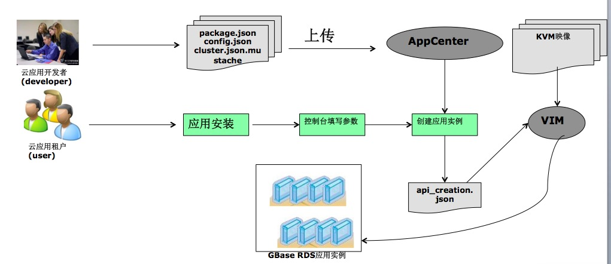
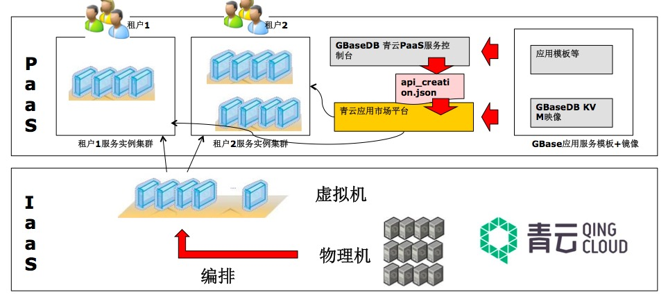
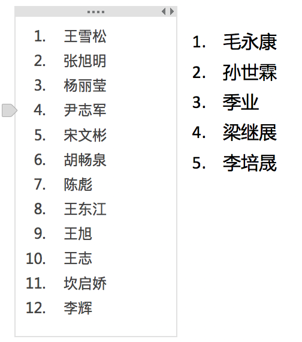
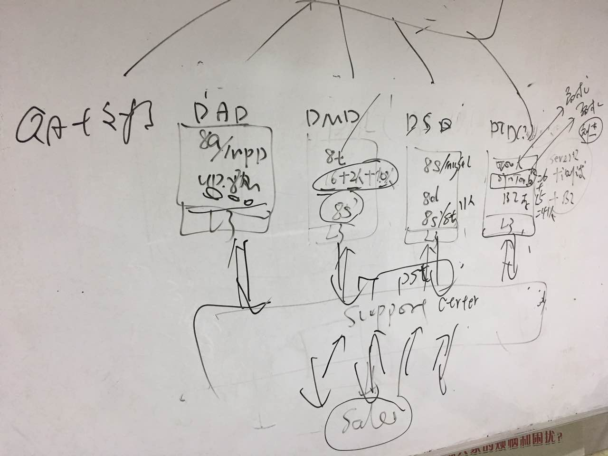
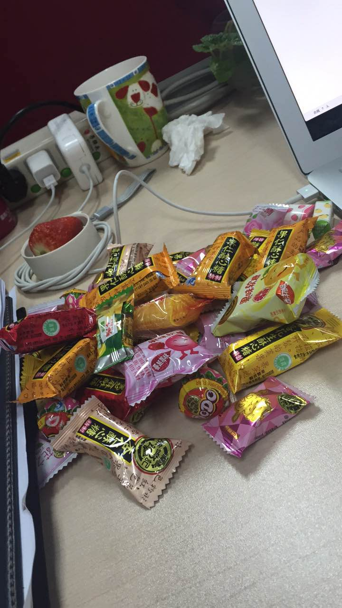
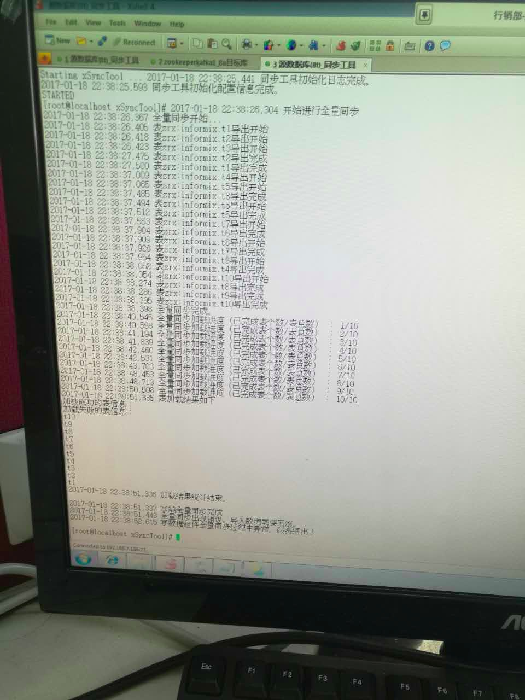
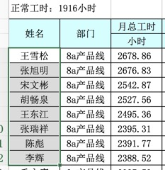
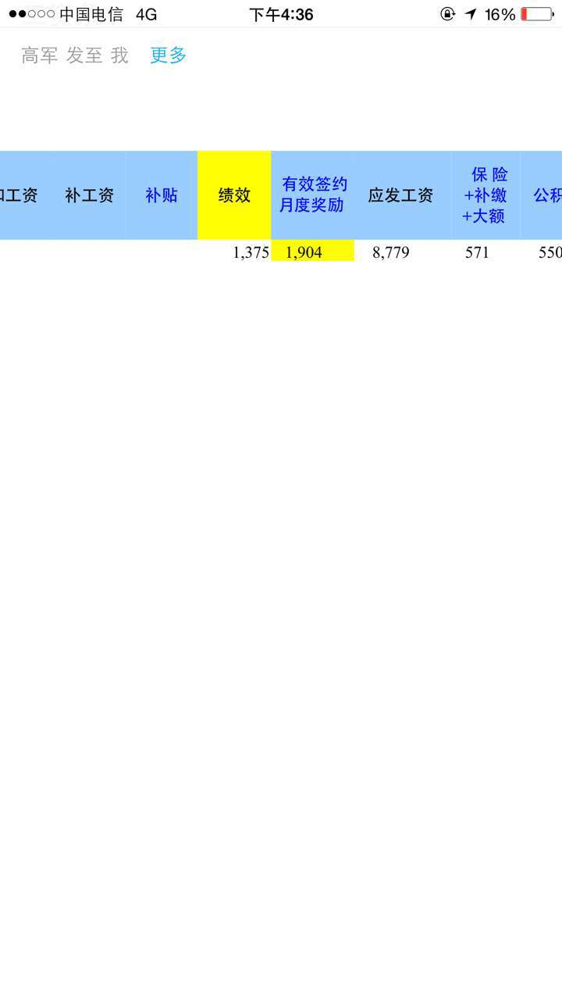

2017-01¶
2017-01-01¶
| 2017-01-01 00:01:17 | 我 | 快去领红包吧 |
| 2017-01-01 00:01:25 | 你 | 我领了 |
| 2017-01-01 00:01:39 | 我 | 😀 |
| 2017-01-01 00:03:15 | 我 | |
| 2017-01-01 08:09:11 | 你 | 早，你们组的好低调啊 |
| 2017-01-01 08:12:58 | 你 | 你们组的都没有说话的 |
| 2017-01-01 09:31:23 | 我 | 嗯，不知道是不是没看见 |
| 2017-01-01 22:45:05 | 你 | [链接] 【娱目八卦】有人要拿走熊猫的宝贝时 它的反应令人出乎意料 |
| 2017-01-01 22:46:38 | 我 | 😀 |
| 2017-01-01 22:47:10 | 你 | 软萌，好想摸摸 |
| 2017-01-01 22:47:23 | 我 | 是，好可爱 |
2017-01-02¶

{kind=link}
{kind=link}
2017-01-03¶
| 2017-01-03 09:03:02 | 你 | 你要发给我啥东西啊 |
| 2017-01-03 09:03:48 | 我 | 宋文彬写的一个东西，你看看吧 |
| 2017-01-03 09:04:32 | 你 | 啊 看来我落后了 |
| 2017-01-03 09:05:05 | 我 | 没有，他写的东西差距很远呢 |
| 2017-01-03 09:12:28 | 你 | 你们明天研发季度会吗？ |
| 2017-01-03 09:12:38 | 我 | 是的 |
| 2017-01-03 09:12:50 | 你 | OK |
| 2017-01-03 09:19:26 | 你 | 你让我问的那个速率问题 我已经问一线了 等待他们反馈呢 |
| 2017-01-03 09:19:43 | 你 | 还有 你是倾向于kafka做缓存的方案对吗？ |
| 2017-01-03 09:19:47 | 我 | 好的，待会你们开会吧 |
| 2017-01-03 09:20:09 | 我 | 是，不过这个方案我们要承担一部分风险 |
| 2017-01-03 09:20:19 | 你 | 性能的对吗？ |
| 2017-01-03 09:20:28 | 你 | 研发的那天说倾向于做临时表的 |
| 2017-01-03 09:20:32 | 我 | 不是，功能上的 |
| 2017-01-03 09:20:40 | 你 | 功能上？？ |
| 2017-01-03 09:20:47 | 你 | 什么风险 |
| 2017-01-03 09:20:57 | 我 | 技术细节回来再和你说吧 |
| 2017-01-03 09:21:22 | 我 | 临时表比较麻烦的是我们执行什么样的sql语句 |
| 2017-01-03 09:21:26 | 你 | 你跟贺津要的是 算法在写端实现对吧 |
| 2017-01-03 09:21:35 | 我 | 他们给我的方案我看不出来 |
| 2017-01-03 09:21:38 | 我 | 没错 |
| 2017-01-03 09:21:57 | 你 | 结果写的基本都是你说的话 |
| 2017-01-03 09:21:58 | 你 | 唉 |
| 2017-01-03 09:22:03 | 你 | 我也是醉了 |
| 2017-01-03 09:22:13 | 我 | 是 |
| 2017-01-03 09:24:03 | 你 | 算法那个他们说在卡夫卡能实现 但是性能可能不理想 |
| 2017-01-03 09:24:34 | 我 | 具体的等我去问他们吧 |
| 2017-01-03 09:24:37 | 你 | 说：对每条IU数据处理时，都需要遍历事实表中的rowid，当表中数据量过大时，可能会影响去重性能。 |
| 2017-01-03 09:24:41 | 我 | 你先给他们开会吧 |
| 2017-01-03 09:24:48 | 你 | 好 |
| 2017-01-03 09:25:00 | 你 | 今天把方案定下来 就该干活了 |
| 2017-01-03 09:25:11 | 我 | 是 |
| 2017-01-03 09:26:34 | 你 | 还没到呢 |
| 2017-01-03 09:26:59 | 我 | 呵呵，等着吧 |
| 2017-01-03 09:27:06 | 你 | 恩 |
| 2017-01-03 09:29:52 | 你 | 源表数据一亿条，insert1000万数据，耗时49秒，update10万数据，耗时210秒，delete10万数据，耗时4秒 |
| 2017-01-03 09:30:07 | 你 | 这是他回复的 我再问问他怎么个具体情况 |
| 2017-01-03 09:30:25 | 我 | 好的 |
| 2017-01-03 11:28:47 | 我 | 和他们沟通了？ |
| 2017-01-03 12:13:56 | 你 | 吃完了？ |
| 2017-01-03 12:14:03 | 你 | 你们没车了 |
| 2017-01-03 12:14:08 | 你 | 胖子咋带饭呢 |
| 2017-01-03 12:14:14 | 我 | 吃完了，有车他们不开 |
| 2017-01-03 12:14:24 | 你 | 恩 |
| 2017-01-03 12:14:28 | 我 | 谁知道他 |
| 2017-01-03 12:14:46 | 你 | 恩 |
| 2017-01-03 12:16:47 | 我 | @tombkeeper：前阵子听某公司技术负责人讲他们的工程师文化，我总结了一下： 1、不养闲人，选择能“在一起”的人。 2、进人慢，出人快，该淘汰就淘汰。 3、追求技术巅峰，鼓励内部分享。 4、技术上任何人可以挑战任何人，你行你就上。 5、不做技术/语言之争，只看效果。 6、讨论阶段民主，执行阶段专制。 |
| 2017-01-03 12:17:19 | 你 | 哈哈 |
| 2017-01-03 12:21:49 | 你 | 申请严肃 |
| 2017-01-03 12:21:54 | 你 | 神情 |
| 2017-01-03 12:22:03 | 我 | 没有啦，刷微博呢 |
| 2017-01-03 12:22:16 | 你 | 刷吧 |
| 2017-01-03 12:22:52 | 我 | 你睡觉吗 |
| 2017-01-03 12:23:05 | 你 | 看吧 不怎么想睡 |
| 2017-01-03 12:23:23 | 我 | 你最近好像睡的少 |
| 2017-01-03 12:23:34 | 你 | 中午睡不着 |
| 2017-01-03 12:23:36 | 你 | 看吧 |
| 2017-01-03 12:23:44 | 我 | 嗯 |
| 2017-01-03 12:23:47 | 你 | 没准一会就想睡了 |
| 2017-01-03 12:23:57 | 我 | [微笑] |
| 2017-01-03 13:20:44 | 我 | 睡醒了，你睡了吗 |
| 2017-01-03 13:20:56 | 你 | 恩 睡了 |
| 2017-01-03 13:22:02 | 我 | 待会咱俩得找个地方碰碰方案，省得老田瞎掺和 |
| 2017-01-03 13:22:26 | 你 | 好 |
| 2017-01-03 13:27:42 | 你 | 你一会叫我？还是我找你？ |
| 2017-01-03 13:28:11 | 我 | 我找你 |
| 2017-01-03 13:28:17 | 你 | 好 |
| 2017-01-03 14:33:57 | 我 | 你去哪了，咱们聊聊方案 |
| 2017-01-03 14:38:36 | 你 | 我去找你？ |
| 2017-01-03 14:38:43 | 你 | 我刚才跟贺津他们说方案呢 |
| 2017-01-03 14:38:52 | 我 | 我找你吧 |
| 2017-01-03 14:38:58 | 你 | 好的 |
| 2017-01-03 15:49:47 | 你 | 亲 你干啥呢 |
| 2017-01-03 15:49:50 | 我 | 你忙吗 |
| 2017-01-03 15:49:54 | 你 | 哈哈 |
| 2017-01-03 15:49:57 | 我 | 😄，我等你呢 |
| 2017-01-03 15:50:00 | 你 | 这默契 |
| 2017-01-03 15:50:25 | 你 | 我手头好多活 SB的写软需 hadoop2.0调研报告 |
| 2017-01-03 15:50:31 | 你 | 我都没搞好呢 |
| 2017-01-03 15:50:58 | 我 | 我想找你说说同步工具的事情，刚才我看你好像没有听明白 |
| 2017-01-03 15:51:16 | 你 | 我懂了 |
| 2017-01-03 15:52:12 | 我 | SB的软需不着急吧 |
| 2017-01-03 15:52:19 | 你 | 不知道呢 |
| 2017-01-03 15:53:47 | 我 | 那你先忙吧，我不着急 |
| 2017-01-03 15:54:05 | 你 | 同步工具的你想给我讲什么 |
| 2017-01-03 15:54:30 | 我 | 主要还是基本架构，还有这次涉及到的改动 |
| 2017-01-03 15:55:09 | 你 | 是写端做成insert 和加载两种形式的这个吗 |
| 2017-01-03 15:55:30 | 你 | 读端是一段是读端 一段是不过kafka的 |
| 2017-01-03 15:55:33 | 我 | 不是，我不给你讲这么细的，我给讲架构 |
| 2017-01-03 15:55:40 | 我 | 讲模型 |
| 2017-01-03 15:55:49 | 你 | 可以 啊 讲吧 |
| 2017-01-03 15:55:57 | 你 | 我那两个活都不着急 |
| 2017-01-03 15:56:03 | 你 | 拖死他 |
| 2017-01-03 15:56:12 | 我 | 那我去找你 |
| 2017-01-03 15:56:17 | 你 | 好 |
| 2017-01-03 17:25:15 | 你 | 累死了吧 |
| 2017-01-03 17:25:48 | 我 | 还行吧，就是因为站着，要是和你在车里聊就不累 |
| 2017-01-03 17:26:00 | 你 | 是 站着腰疼 |
| 2017-01-03 17:26:17 | 你 | 快歇会 |
| 2017-01-03 17:26:20 | 我 | 今天很高兴呀，能和你说那么久 |
| 2017-01-03 17:26:32 | 我 | 就是不能表扬你 |
| 2017-01-03 17:26:34 | 你 | 我没气着你啊 |
| 2017-01-03 17:26:40 | 我 | 没有 |
| 2017-01-03 17:26:43 | 你 | 不用啊 我怕把你气着了 |
| 2017-01-03 17:27:06 | 我 | 我才不会生气呢 |
| 2017-01-03 17:27:17 | 我 | 我是说给阿娇他们听的 |
| 2017-01-03 17:27:23 | 你 | 真的啊 |
| 2017-01-03 17:27:31 | 我 | 不然他们就知道咱俩太好了 |
| 2017-01-03 17:27:32 | 你 | 我生怕气着你 气的你下次不跟我说了 |
| 2017-01-03 17:27:40 | 我 | 绝不会的 |
| 2017-01-03 17:28:13 | 你 | 那就好 |
| 2017-01-03 17:29:19 | 我 | 你今天高兴吗 |
| 2017-01-03 17:29:31 | 你 | 我今天听你在贺津那说 做准实时的时候 就在思考 为啥我没想到呢 |
| 2017-01-03 17:29:53 | 你 | 老王这是又在替他们做设计 又在替我做需求分析 |
| 2017-01-03 17:30:05 | 你 | 果不其然 你下午给我讲的就是这部分 |
| 2017-01-03 17:30:10 | 你 | 如何发现需求 |
| 2017-01-03 17:30:18 | 你 | 我当然高兴啦 美的不行不行的 |
| 2017-01-03 17:30:35 | 我 | 你今天表现的非常不错 |
| 2017-01-03 17:30:54 | 你 | 你又在安慰我了 |
| 2017-01-03 17:30:57 | 我 | 我只是真的不敢表扬你 |
| 2017-01-03 17:31:03 | 我 | 当然不是啦 |
| 2017-01-03 17:31:19 | 你 | 不需要啊，我还怕我气着你呢 |
| 2017-01-03 17:31:28 | 我 | 你没发现我说你的理由都是很牵强的 |
| 2017-01-03 17:31:41 | 你 | 就是最开始的时候把数据格式那部分搞混了 |
| 2017-01-03 17:31:47 | 你 | 没发现 |
| 2017-01-03 17:31:51 | 我 | 要是就咱俩我早就表扬你了 |
| 2017-01-03 17:32:02 | 你 | 好吧，不纠结这个了 |
| 2017-01-03 17:32:26 | 你 | 我特别怕你说，怎么又来了个宋文斌 |
| 2017-01-03 17:32:36 | 你 | 那我就难过了 |
| 2017-01-03 17:32:42 | 我 | 其实我今天给你讲这些是因为我前几天和你聊那本书的时候发现你的一些问题 |
| 2017-01-03 17:32:55 | 你 | 嗯 |
| 2017-01-03 17:32:58 | 你 | 是的 |
| 2017-01-03 17:33:08 | 我 | 怎么可能，你跟我这么长时间啦，我当然知道你是什么样的 |
| 2017-01-03 17:33:33 | 我 | 今天经过这么一聊，你再去看那本书你就应该明白不少了 |
| 2017-01-03 17:33:40 | 你 | 是 |
| 2017-01-03 17:33:52 | 你 | 确实是 |
| 2017-01-03 17:34:00 | 我 | 我之前就是苦于没有机会和你说这些 |
| 2017-01-03 17:34:08 | 我 | 今天好容易抓住这个机会 |
| 2017-01-03 17:34:16 | 你 | 对啊，我开心死了 |
| 2017-01-03 17:34:28 | 你 | 竟然能在单位说这么长时间 |
| 2017-01-03 17:34:36 | 你 | 而且都是有用的 |
| 2017-01-03 17:35:46 | 我 | 可惜这样的机会确实不多 |
| 2017-01-03 17:46:44 | 我 | 今天外面雾很大，你几点回家 |
| 2017-01-03 17:46:52 | 你 | 看我对象吧 |
| 2017-01-03 17:47:23 | 你 | 我得回家加班了 |
| 2017-01-03 17:47:29 | 你 | 我对象最近很闲 |
| 2017-01-03 17:47:41 | 我 | 哦，早点回去吧 |
| 2017-01-03 17:47:51 | 我 | 你回家干什么 |
| 2017-01-03 17:48:17 | 你 | 我把活干干 这样白天就跟你聊天 |
| 2017-01-03 17:48:46 | 我 | 嗯嗯 |
| 2017-01-03 18:30:50 | 你 | 我走了 |
| 2017-01-03 18:31:08 | 我 | 好的 |
| 2017-01-03 18:44:39 | 你 | 你为啥看我 |
| 2017-01-03 18:44:56 | 你 | 你们明天岂不是需要去工大 |
| 2017-01-03 18:45:15 | 我 | 是，明天早上我直接过去 |
| 2017-01-03 18:45:34 | 你 | 啊，你以前不都是先来公司么 |
| 2017-01-03 18:45:51 | 我 | 雾太大了，我直接过去吧 |
| 2017-01-03 18:46:36 | 你 | 嗯 |
| 2017-01-03 18:47:07 | 你 | 现在洪越很难做，我真怀疑他会不会离职 |
| 2017-01-03 18:47:17 | 我 | 嗯 |
| 2017-01-03 18:47:22 | 你 | 他现在找不到自己的位置， |
| 2017-01-03 18:47:25 | 你 | 很难做 |
| 2017-01-03 18:47:39 | 我 | 是，现在反而是我在帮他 |
| 2017-01-03 18:48:18 | 你 | 是呗，我看着他我都难受 |
| 2017-01-03 18:48:30 | 我 | 啊，你难受啥 |
| 2017-01-03 18:48:31 | 你 | 唉，想当初他可是那样的人 |
| 2017-01-03 18:48:43 | 你 | 你看他发了个朋友圈 |
| 2017-01-03 18:48:53 | 我 | no zuo no die |
| 2017-01-03 18:49:07 | 你 | 我要是他早离职了，或者去别的团队 |
| 2017-01-03 18:49:23 | 你 | 我的难受不是真难受啊 |
| 2017-01-03 18:49:34 | 你 | 我心里依然是超级看不上他的 |
| 2017-01-03 18:49:38 | 我 | 嗯 |
| 2017-01-03 18:49:54 | 我 | 还是他自己心态不好 |
| 2017-01-03 18:50:06 | 你 | 他现在心态还好吧， |
| 2017-01-03 18:50:14 | 你 | 可能他觉得挺享受的 |
| 2017-01-03 18:50:21 | 我 | 如果他认真干活，也不至于这样 |
| 2017-01-03 18:50:42 | 我 | 他就是老推责任，想不劳而获 |
| 2017-01-03 18:50:59 | 你 | 是呗，包括现在，他一直不知道如何把需求组搞好，其实也是他个人问题 |
| 2017-01-03 18:51:04 | 你 | 他心态不好 |
| 2017-01-03 18:51:09 | 我 | 嗯 |
| 2017-01-03 18:51:47 | 你 | 我算是认真干活的吗？ |
| 2017-01-03 18:51:54 | 我 | 当然啦 |
| 2017-01-03 18:52:02 | 你 | 每次都觉得自己差好多，好多 |
| 2017-01-03 18:52:06 | 我 | 你和李杰都是认真负责的人 |
| 2017-01-03 18:52:13 | 你 | 不过这样才能进步 |
| 2017-01-03 18:52:24 | 我 | 嗯，你进步很快 |
| 2017-01-03 18:52:34 | 你 | 像他那样只能停止不前了 |
| 2017-01-03 18:52:40 | 你 | 嗯 |
| 2017-01-03 18:53:06 | 你 | 李杰跟我讲他骂他们研发的，真的很损 |
| 2017-01-03 18:53:11 | 你 | 真的，不骗你 |
| 2017-01-03 18:53:15 | 我 | 嗯 |
| 2017-01-03 18:53:26 | 你 | 他们单位产品经理地位很高 |
| 2017-01-03 18:53:39 | 我 | 唉 |
| 2017-01-03 18:53:44 | 你 | 不过都是邱总提出来的，别的部门也很差 |
| 2017-01-03 18:54:15 | 你 | 还要认真体会啊 |
| 2017-01-03 18:54:35 | 我 | 其实这里面的道很简单 |
| 2017-01-03 18:54:52 | 你 | 不过番薯始终都看不起需求 |
| 2017-01-03 18:54:56 | 我 | 就是如何能守住道 |
| 2017-01-03 18:55:07 | 我 | 不要提他[抓狂] |
| 2017-01-03 18:55:09 | 你 | 说说 |
| 2017-01-03 18:55:11 | 你 | 哈哈 |
| 2017-01-03 18:55:13 | 你 | 哈哈 |
| 2017-01-03 18:55:17 | 你 | 不提他 |
| 2017-01-03 18:55:20 | 你 | 他不值一提 |
| 2017-01-03 18:55:45 | 我 | 就是我们做任何事情或者遇到任何问题都从道上去思考 |
| 2017-01-03 18:55:59 | 我 | 很多时候我们都是陷入细节了 |
| 2017-01-03 18:56:05 | 你 | 是呗 |
| 2017-01-03 18:56:11 | 你 | 很多时候都会 |
| 2017-01-03 18:57:00 | 你 | 细节和道缺一不可 |
| 2017-01-03 18:57:14 | 你 | 之所以会陷进去，还是道没有弄清楚 |
| 2017-01-03 18:57:21 | 我 | 对 |
| 2017-01-03 18:58:01 | 你 | 就像你说的，如果把道和细节都弄清楚了，我们就可以随意上串下跳了， |
| 2017-01-03 18:58:15 | 你 | 弄不清楚道，才会下去上不来 |
| 2017-01-03 18:58:19 | 我 | 对呀 |
| 2017-01-03 18:58:47 | 你 | 用例层次那个理论，我是真明白了 |
| 2017-01-03 18:59:05 | 你 | 你很意外吧，：你不是要明白了吗？ |
| 2017-01-03 18:59:18 | 我 | 不意外 |
| 2017-01-03 18:59:20 | 你 | 冒号后边是你的画外音 |
| 2017-01-03 18:59:22 | 你 | 哈哈 |
| 2017-01-03 18:59:34 | 我 | 我知道你明白是什么意思 |
| 2017-01-03 18:59:48 | 我 | 以后你还会说同样的话 |
| 2017-01-03 18:59:54 | 你 | 我把用例层次和咱们的实践结合到一起了 |
| 2017-01-03 19:00:24 | 我 | 你的境界比之前提升 |
| 2017-01-03 19:00:25 | 你 | 是，应该说是更明白了 |
| 2017-01-03 19:00:36 | 我 | 就会看的更清楚 |
| 2017-01-03 19:01:27 | 你 | |
| 2017-01-03 19:01:39 | 你 | 不用回了 |
2017-01-04¶
| 2017-01-04 08:42:14 | 你 | 你出发了吗 我到单位了 |
| 2017-01-04 08:44:04 | 我 | 我快到了 |
| 2017-01-04 08:44:16 | 你 | 这么早 |
| 2017-01-04 08:44:34 | 我 | 是，出来早了 |
| 2017-01-04 08:44:47 | 你 | 冷不冷啊 |
| 2017-01-04 08:45:50 | 我 | 不冷，就是雾气很大 |
| 2017-01-04 08:46:14 | 你 | 恩 那就好 |
| 2017-01-04 08:51:06 | 我 | 我到了，赶上老田了，真讨厌，不想和他坐一起 |
| 2017-01-04 08:51:19 | 你 | 那你就上个厕所啥的 |
| 2017-01-04 08:51:33 | 你 | 你跟他做一块 他也不敢咋这 |
| 2017-01-04 08:54:40 | 我 | 我是不想和领导坐一起，每次都是我们三个坐一起 |
| 2017-01-04 08:54:53 | 我 | 和领导坐一起不方便和你聊天 |
| 2017-01-04 08:54:58 | 你 | 是 |
| 2017-01-04 08:55:14 | 你 | 但是你们三个坐一起也比较说得过去 |
| 2017-01-04 08:58:01 | 我 | 是 |
| 2017-01-04 08:58:19 | 你 | 你做边上 |
| 2017-01-04 08:58:27 | 你 | 一般都是领导坐中间吗？ |
| 2017-01-04 08:58:44 | 我 | 是的，每次都是 |
| 2017-01-04 08:58:57 | 你 | 哈哈 |
| 2017-01-04 08:59:01 | 你 | 左膀右臂 |
| 2017-01-04 08:59:06 | 你 | 这次谁讲 |
| 2017-01-04 09:11:44 | 我 | 领导讲 |
| 2017-01-04 09:11:59 | 你 | 晨会严丹开吗 |
| 2017-01-04 09:12:09 | 你 | 她还没到 |
| 2017-01-04 09:12:14 | 我 | 今天你们先开会，别喊刘杰 |
| 2017-01-04 09:12:31 | 你 | 啊？？？他早上来问我了 |
| 2017-01-04 09:13:05 | 你 | 我昨天在群里说了句今早开会 |
| 2017-01-04 09:13:41 | 我 | 哦，我想你们今天先整理一下，明天正式开始 |
| 2017-01-04 09:14:34 | 你 | 你说整理ogg->kafka的 还是8t->8a的 |
| 2017-01-04 09:16:06 | 我 | 8t to 8a 的 |
| 2017-01-04 09:16:41 | 我 | 今天就算是开计划会 |
| 2017-01-04 09:16:47 | 你 | 昨天晚上说开会 说9：10开 贺津说开不了 |
| 2017-01-04 09:16:50 | 你 | 到不了 |
| 2017-01-04 09:16:53 | 你 | 刚才问几点 |
| 2017-01-04 09:17:07 | 你 | 小卜说9：30估计才能到 现在还在地铁上 |
| 2017-01-04 09:17:36 | 你 | 上次暂停的时候 正好是计划会结束 把task列表发了出来 |
| 2017-01-04 09:17:48 | 你 | 我想今天回顾下那个列表就开始干吧 |
| 2017-01-04 09:17:58 | 你 | 不然一天又耽误了 |
| 2017-01-04 09:18:02 | 我 | 你们自己看吧，今天先开计划会，不是王伟也加入了吗，给他也分配一些工作 |
| 2017-01-04 09:18:10 | 你 | 恩 |
| 2017-01-04 09:18:12 | 你 | 好 |
| 2017-01-04 09:18:31 | 我 | 咱们有一些新的用户故事，看看这次能不能做 |
| 2017-01-04 09:18:43 | 我 | 年前出一版 |
| 2017-01-04 09:18:51 | 你 | 好 |
| 2017-01-04 09:20:18 | 你 | 你是说准实时同步那部分吗 |
| 2017-01-04 09:20:45 | 我 | kafka 偏移量那个 |
| 2017-01-04 09:20:59 | 你 | 哦 |
| 2017-01-04 09:21:14 | 你 | 那个是个每个工具都存在的问题是吗 |
| 2017-01-04 09:21:20 | 你 | 除了这个还有别的吗？ |
| 2017-01-04 09:21:23 | 我 | 准实时这部分估计来不及了 |
| 2017-01-04 09:21:25 | 我 | 是的 |
| 2017-01-04 09:21:34 | 你 | 准实时同步的那个 我想写写用户故事 |
| 2017-01-04 09:21:39 | 你 | 现在还没写好呢 |
| 2017-01-04 09:21:41 | 我 | 其他的我暂时想不起来了 |
| 2017-01-04 09:22:26 | 我 | 你们先整个评估一下吧，我现在也没有想好，看看他们评估的结果 |
| 2017-01-04 09:23:03 | 我 | 我是考虑我们新加了一个人，总得多做点东西 |
| 2017-01-04 09:23:19 | 你 | 可以 |
| 2017-01-04 09:23:35 | 你 | 那把偏移量的 和 准实时同步的都评估下 |
| 2017-01-04 09:23:37 | 你 | 你说呢 |
| 2017-01-04 09:23:39 | 我 | 原则还是年前发版 |
| 2017-01-04 09:23:42 | 我 | 可以 |
| 2017-01-04 09:23:56 | 你 | 还有王伟现在还要做测试支持 |
| 2017-01-04 09:24:06 | 你 | 那天我叫他过来听 他说的 |
| 2017-01-04 09:24:19 | 你 | 那今天开计划会 |
| 2017-01-04 09:24:26 | 你 | 上午开计划会 |
| 2017-01-04 09:24:48 | 我 | 王伟的工作先给他安排，他的测试应该是尾声了，工作不多了 |
| 2017-01-04 09:25:16 | 你 | 是 |
| 2017-01-04 09:25:18 | 你 | 好 |
| 2017-01-04 09:25:56 | 我 | 王伟你们就先用，我还不容易找一个借口让他进来，不能就这么让人跑了 |
| 2017-01-04 09:26:06 | 你 | 好 |
| 2017-01-04 09:26:10 | 你 | 他不会跑的 |
| 2017-01-04 09:26:16 | 你 | 他也想做这个 |
| 2017-01-04 09:26:26 | 我 | 那就好 |
| 2017-01-04 09:27:41 | 你 | kafka偏移量的那个 就是记录一个kafka消费的标记对吗？ |
| 2017-01-04 09:27:49 | 你 | 续传的时候 从标记处开始 |
| 2017-01-04 09:28:02 | 我 | 对 |
| 2017-01-04 09:34:24 | 我 | 开始了，刚才赵总讲话，讲完了，主持人说谢谢武总[偷笑] |
| 2017-01-04 09:34:36 | 你 | 哈哈 |
| 2017-01-04 10:12:51 | 我 | 你们开完了吗 |
| 2017-01-04 10:29:54 | 你 | 没呢 |
| 2017-01-04 11:09:12 | 你 | 开完了 |
| 2017-01-04 11:09:42 | 我 | 好的，有事吗 |
| 2017-01-04 11:16:41 | 你 | 回想了半天才想起来 |
| 2017-01-04 11:17:02 | 你 | 没事 13号sprint结束 预计22号发版 |
| 2017-01-04 11:17:21 | 我 | 好的 |
| 2017-01-04 11:17:34 | 你 | 把卡夫卡 偏移量的那个也做进去 |
| 2017-01-04 11:17:48 | 我 | OK |
| 2017-01-04 11:17:55 | 你 | 这样这期全量同步就结束了 然后明年就可以做做准实时同步那部分 |
| 2017-01-04 11:18:12 | 你 | 这次把异常测试都补补 |
| 2017-01-04 11:18:22 | 我 | 嗯 |
| 2017-01-04 11:18:35 | 你 | 开会的时候让贺津把架构讲了讲 给王伟和张瑞祥补了补信息 |
| 2017-01-04 11:18:45 | 你 | 没有什么事 |
| 2017-01-04 11:18:50 | 我 | 讲的怎么样 |
| 2017-01-04 11:18:58 | 你 | 贺津讲的不好 |
| 2017-01-04 11:19:02 | 我 | 我估计他还没有你清楚呢 |
| 2017-01-04 11:19:18 | 你 | 上来就是细节 |
| 2017-01-04 11:19:27 | 你 | 小卜比贺津说的明白 |
| 2017-01-04 11:19:43 | 你 | 但是小卜 真的是有点桀熬不训的 |
| 2017-01-04 11:19:53 | 你 | 不过大概齐清楚了 |
| 2017-01-04 11:19:56 | 我 | 怎么了 |
| 2017-01-04 11:20:03 | 我 | 他说什么了 |
| 2017-01-04 11:20:06 | 你 | 没事没事 |
| 2017-01-04 11:20:19 | 你 | 他啥也没说 我说他桀骜不驯 是指他平时 |
| 2017-01-04 11:20:24 | 你 | 现在他对我没啥 |
| 2017-01-04 11:20:31 | 你 | 基本我说什么 他就干什么 |
| 2017-01-04 11:20:34 | 我 | 嗯 |
| 2017-01-04 11:21:03 | 你 | 测试的也给安排工作了 |
| 2017-01-04 11:21:15 | 你 | 以后就站立会的按部就班的走 |
| 2017-01-04 11:21:56 | 你 | 一会刘杰会把task列表发给你的 王伟的任务时间都稍微长一些 主要让他熟悉代码 熟悉架构 |
| 2017-01-04 11:22:20 | 你 | 我想了 就给他这一次机会 下次就得一视同仁了 |
| 2017-01-04 11:23:10 | 我 | 嗯 |
| 2017-01-04 11:37:58 | 你 | 你们怎么样 |
| 2017-01-04 11:38:10 | 你 | 早上给你发的邮件 |
| 2017-01-04 11:38:14 | 我 | 没事，今天武总还没到 |
| 2017-01-04 11:38:20 | 我 | 我看见了 |
| 2017-01-04 11:38:28 | 我 | 洪越是让你做吗 |
| 2017-01-04 11:38:42 | 你 | 没有 |
| 2017-01-04 11:38:50 | 你 | 让我和王志心一起看 |
| 2017-01-04 11:38:57 | 你 | 不知道会不会让我做 |
| 2017-01-04 11:39:10 | 你 | 他可能想让王志心做 |
| 2017-01-04 11:39:31 | 我 | 嗯，这个刚才张绍勇也提这个事情了 |
| 2017-01-04 11:39:41 | 我 | 我先让宋文彬去调研了 |
| 2017-01-04 11:40:55 | 你 | 好的 |
| 2017-01-04 11:40:59 | 你 | 好 |
| 2017-01-04 11:41:04 | 你 | 我还没来得及看呢 |
| 2017-01-04 11:41:08 | 你 | 下午看看 |
| 2017-01-04 11:41:39 | 我 | 他这个没什么东西，是用来给客户讲的 |
| 2017-01-04 11:41:51 | 我 | 相当于销售用的 PPT |
| 2017-01-04 11:42:09 | 你 | 好 |
| 2017-01-04 11:42:20 | 我 | 你去吃饭吧 |
| 2017-01-04 11:42:32 | 我 | 下午有空聊天 |
| 2017-01-04 11:46:26 | 你 | 嗯 |
| 2017-01-04 11:46:29 | 你 | 正在吃 |
| 2017-01-04 11:46:37 | 我 | 👌 |
| 2017-01-04 13:03:46 | 你 | 今天胖子又带饭了 |
| 2017-01-04 13:04:15 | 我 | 他的车停哪了 |
| 2017-01-04 13:04:24 | 你 | 不知道 |
| 2017-01-04 13:04:31 | 我 | 没准就是怕停车 |
| 2017-01-04 13:04:33 | 你 | 他不会是以后都带饭吧 |
| 2017-01-04 13:04:54 | 我 | 不会，他自己懒，不做饭 |
| 2017-01-04 13:04:55 | 你 | 那你们吃饭怎么办 |
| 2017-01-04 13:05:16 | 我 | 没事，严丹有车，宋文彬也有 |
| 2017-01-04 13:05:45 | 你 | 好吧 |
| 2017-01-04 13:05:55 | 我 | 你睡觉了吗 |
| 2017-01-04 13:06:17 | 你 | 没睡着 他们一直说话 |
| 2017-01-04 13:06:22 | 你 | 主要是死胖子 |
| 2017-01-04 13:06:29 | 你 | 太吵了 |
| 2017-01-04 13:06:48 | 我 | 是，今天没有领导，他们就嘚瑟了 |
| 2017-01-04 13:07:15 | 你 | 是呗 |
| 2017-01-04 13:07:23 | 你 | 实在是太吵 |
| 2017-01-04 13:07:36 | 你 | 无所谓啦 |
| 2017-01-04 13:07:43 | 我 | 胖子老是显呗自己 |
| 2017-01-04 13:07:52 | 我 | 怕别人不知道他能 |
| 2017-01-04 13:07:54 | 你 | 他是听显摆的 |
| 2017-01-04 13:07:58 | 你 | 是 |
| 2017-01-04 13:08:08 | 你 | 今天一直统计月会的事 吵吵的啊 |
| 2017-01-04 13:08:10 | 你 | 唉 |
| 2017-01-04 13:08:23 | 你 | 不过我大部分时间都在开会 不用听他们的 |
| 2017-01-04 13:08:37 | 我 | 嗯 |
| 2017-01-04 13:10:10 | 你 | 你们还顺利么 |
| 2017-01-04 13:10:30 | 我 | 还没到咱们呢 |
| 2017-01-04 13:10:39 | 我 | 估计是最后一个呢 |
| 2017-01-04 13:10:49 | 我 | 到现在领导还在改 PPT 呢 |
| 2017-01-04 13:11:07 | 你 | 正常 |
| 2017-01-04 13:11:10 | 你 | 上次也这样 |
| 2017-01-04 13:11:11 | 我 | 老田也是不给力，写的东西太杂了 |
| 2017-01-04 13:11:18 | 我 | 还有错别字 |
| 2017-01-04 13:11:19 | 你 | 就是呗 |
| 2017-01-04 13:11:24 | 你 | 错别字太多 |
| 2017-01-04 13:11:33 | 你 | 我上次随便看了两页就都是 |
| 2017-01-04 13:11:53 | 你 | 你注意看凡是老田发的邮件 基本都有错别字 |
| 2017-01-04 13:12:11 | 我 | 没错 |
| 2017-01-04 13:12:24 | 我 | 也真够领导头疼的 |
| 2017-01-04 13:12:39 | 你 | 头疼呗 自己选的人 自己干呗 |
| 2017-01-04 13:13:04 | 你 | 你看昨天景喜来 还想参合同步工具的事 领导不说他了吗 让他写PPT |
| 2017-01-04 13:13:12 | 我 | 是 |
| 2017-01-04 13:13:17 | 你 | 我现在终于知道赵总为啥看不上他了 |
| 2017-01-04 13:14:06 | 我 | 嗯，这次赵总说要把开发中心给王某，估计就是因为看不上老田 |
| 2017-01-04 13:14:28 | 你 | 是呗 |
| 2017-01-04 13:15:15 | 我 | 不聊他们了 |
| 2017-01-04 13:15:27 | 我 | 昨天你回家写东西了吗 |
| 2017-01-04 13:15:37 | 你 | 用户故事吗 |
| 2017-01-04 13:15:55 | 我 | 不是 |
| 2017-01-04 13:15:57 | 你 | 没写 我昨天回家很累 9点就困了 |
| 2017-01-04 13:16:08 | 你 | 洗漱完玩手机到11点多 |
| 2017-01-04 13:16:12 | 你 | 后悔啊 |
| 2017-01-04 13:16:19 | 我 | 😆 |
| 2017-01-04 13:16:21 | 我 | 我也一样 |
| 2017-01-04 13:16:36 | 你 | 唉 |
| 2017-01-04 13:16:41 | 我 | 10点开开电脑玩一会游戏，就12点了 |
| 2017-01-04 13:16:45 | 你 | 时间都是这么浪费的 |
| 2017-01-04 13:17:10 | 我 | 还行吧，其实也没有浪费多少 |
| 2017-01-04 13:17:41 | 我 | 就当自己任性一回 |
| 2017-01-04 13:18:06 | 你 | 恩 |
| 2017-01-04 13:18:26 | 我 | 昨天我给你讲需求，你感觉收获大吗 |
| 2017-01-04 13:31:08 | 你 | 挺大的啊 |
| 2017-01-04 13:31:33 | 你 | 扩充了一部分思路吧 |
| 2017-01-04 13:31:40 | 你 | 我理解的是这样 |
| 2017-01-04 13:31:44 | 我 | 嗯，我忘了想和你说什么了[偷笑] |
| 2017-01-04 13:31:50 | 你 | 啊？ |
| 2017-01-04 13:32:02 | 你 | 我的实践太少了 |
| 2017-01-04 13:32:12 | 你 | 基础知识欠缺 |
| 2017-01-04 13:32:13 | 我 | 是 |
| 2017-01-04 13:32:18 | 你 | 现在越来越明显 |
| 2017-01-04 13:32:28 | 你 | 别人说的东西 我得反应好一阵 |
| 2017-01-04 13:32:31 | 我 | 这些只能靠时间和勤奋了 |
| 2017-01-04 13:32:46 | 我 | 你的发展路径和别人不一样 |
| 2017-01-04 13:33:06 | 我 | 别人是先干活，有经验以后才会去总结 |
| 2017-01-04 13:33:26 | 我 | 你是先学基本的规律，然后才去实践的 |
| 2017-01-04 13:33:31 | 你 | 是 |
| 2017-01-04 13:33:35 | 你 | 大部分都是 |
| 2017-01-04 13:33:40 | 你 | 但是这样更快 |
| 2017-01-04 13:33:44 | 我 | 没错 |
| 2017-01-04 13:33:45 | 你 | 很快我就明白了 |
| 2017-01-04 13:33:59 | 你 | 虽然反应一阵 但反应过来就OK了 |
| 2017-01-04 13:34:10 | 你 | 而且很多时候 跟研发的沟通都很费劲 |
| 2017-01-04 13:34:19 | 你 | 他们说的太细节 |
| 2017-01-04 13:34:41 | 你 | 一个问题 你说两句我就懂了 他们说半天也说不到点上 |
| 2017-01-04 13:34:49 | 我 | 他们的层次就是这样，你需要从他们的细节中找到他们说的模型 |
| 2017-01-04 13:34:56 | 你 | 是 |
| 2017-01-04 13:35:19 | 你 | 算了 也是我自己欠缺太多 |
| 2017-01-04 13:35:24 | 你 | 不说研发了 |
| 2017-01-04 13:35:30 | 我 | 我想从明天开始我就重新管同步工具 |
| 2017-01-04 13:35:43 | 我 | 让你有时间能补一补基础 |
| 2017-01-04 13:35:50 | 你 | 好啊 好啊 |
| 2017-01-04 13:35:52 | 你 | 太好了 |
| 2017-01-04 13:35:53 | 我 | 反正他们现在也都听你的 |
| 2017-01-04 13:35:58 | 你 | 是 |
| 2017-01-04 13:36:05 | 你 | 听还是很听的 |
| 2017-01-04 13:36:10 | 你 | 你管吧 |
| 2017-01-04 13:36:13 | 我 | 嗯 |
| 2017-01-04 13:36:23 | 你 | 我都觉得你参与的实在是太少了 |
| 2017-01-04 13:36:44 | 我 | 我参与多了，他们就不重视你了 |
| 2017-01-04 13:36:54 | 我 | 现在的效果是最好的 |
| 2017-01-04 13:37:00 | 我 | 他们现在也都服你 |
| 2017-01-04 13:37:24 | 我 | 这样你有一定的地位，未来工作也好做，也容易出成绩 |
| 2017-01-04 13:37:25 | 你 | 是 |
| 2017-01-04 13:37:36 | 我 | 你还是需要有自己的团队 |
| 2017-01-04 13:37:44 | 你 | 恩 |
| 2017-01-04 13:45:12 | 我 | 我想以后还得给你多讲讲 |
| 2017-01-04 13:45:23 | 你 | shi |
| 2017-01-04 13:45:45 | 你 | 那个青云的还是云化的那一套东西吧 |
| 2017-01-04 13:45:50 | 你 | 大同小异 |
| 2017-01-04 13:46:01 | 我 | 是，就是技术细节不一样 |
| 2017-01-04 13:58:18 | 你 | GBase云数据库的青云应用服务用户的青云应用使用过程： |
| 2017-01-04 13:58:28 | 你 | 你念念这句话 我也真是。。。 |
| 2017-01-04 13:58:32 | 你 | 不知道想表达的啥 |
| 2017-01-04 13:58:42 | 我 | 😁 |
| 2017-01-04 13:59:14 | 我 | 这就是咱们销售的水平 |
| 2017-01-04 13:59:34 | 你 |  |
| 2017-01-04 13:59:45 | 你 | 这幅图说的是啥啊 |
| 2017-01-04 14:00:07 | 你 | 就这么点事 说来说去的 绕死了 |
| 2017-01-04 14:00:41 | 我 | 这个就是云上典型的应用场景 |
| 2017-01-04 14:00:55 | 我 | 只是和咱们这一部分没有说清楚 |
| 2017-01-04 14:01:47 | 我 | 除了 GBase 以外其他的部分应该是抄的 |
| 2017-01-04 14:02:01 | 我 | 有可能是青云自己的 PPT 里面的东西 |
| 2017-01-04 14:02:51 | 你 | 乱死了 看不懂 |
| 2017-01-04 14:03:03 | 我 | 是 |
| 2017-01-04 14:03:15 | 你 | 你看懂了吗 |
| 2017-01-04 14:03:32 | 我 | 没有，我没看出来咱们和他们怎么连 |
| 2017-01-04 14:03:54 | 你 |  |
| 2017-01-04 14:04:05 | 你 | 这幅图就更难看了 |
| 2017-01-04 14:05:04 | 我 | 这里面有一部分是云平台的东西，你可能不懂 |
| 2017-01-04 14:12:09 | 你 | 恩 |
| 2017-01-04 14:12:11 | 你 | 可能吧 |
| 2017-01-04 14:13:17 | 我 | 这个你要是不写，了解一下就可以了 |
| 2017-01-04 14:13:54 | 你 | 我不看了 |
| 2017-01-04 14:14:02 | 你 | 反正要是做需求 还会说的 |
| 2017-01-04 14:14:14 | 我 | 嗯 |
| 2017-01-04 14:14:16 | 你 | 刚才洪越让我写UP的用需 |
| 2017-01-04 14:14:40 | 我 | 不是说不做了吗 |
| 2017-01-04 14:14:56 | 你 | 我也搞不懂 人家那边没需求 |
| 2017-01-04 14:15:01 | 你 | 就是当产品化做 |
| 2017-01-04 14:15:04 | 你 | 坐着干啥 |
| 2017-01-04 14:15:08 | 你 | 做这个干啥 |
| 2017-01-04 14:15:09 | 我 | 嗯 |
| 2017-01-04 14:15:19 | 你 | 没点更重要的事做吗 |
| 2017-01-04 14:15:59 | 我 | 不知道，我以为这个不做了呢 |
| 2017-01-04 14:16:18 | 你 | 做就做呗 |
| 2017-01-04 14:17:20 | 我 | 随便写写吧 |
| 2017-01-04 14:17:32 | 你 | 怎么这么多破烂事 |
| 2017-01-04 14:35:48 | 你 | 亲 我好烦啊 |
| 2017-01-04 14:35:59 | 我 | 咋了 |
| 2017-01-04 14:36:06 | 我 | 为啥呀 |
| 2017-01-04 14:36:14 | 你 | 破烂事太多 |
| 2017-01-04 14:36:17 | 你 | 烦死我了 |
| 2017-01-04 14:36:30 | 你 | SB的那个老田说还得写软需 |
| 2017-01-04 14:36:37 | 你 | 我还要调研hadoop那个文档 |
| 2017-01-04 14:36:44 | 你 | 还得写UP的用需 |
| 2017-01-04 14:36:50 | 我 | 先歇会 |
| 2017-01-04 14:36:58 | 你 | 我最主要的是想和你聊天 |
| 2017-01-04 14:37:06 | 你 | 还得写准实时同步的用户故事 |
| 2017-01-04 14:37:18 | 我 | 用户故事不着急 |
| 2017-01-04 14:37:27 | 我 | 我教你一招 |
| 2017-01-04 14:37:33 | 你 | 要疯了 |
| 2017-01-04 14:38:02 | 我 | SB那个你就随便写写，能对付过去就行了 |
| 2017-01-04 14:38:24 | 我 | 这个只是先放着，没什么用 |
| 2017-01-04 14:38:32 | 你 | 恩 |
| 2017-01-04 14:38:34 | 你 | 好吧 |
| 2017-01-04 14:38:46 | 你 | 那个我写完一个用例了 没什么难度 |
| 2017-01-04 14:38:57 | 你 | 就是我不想写 所以想起来就烦 |
| 2017-01-04 14:39:04 | 你 | 老田真是神经病 |
| 2017-01-04 14:39:19 | 我 | 那就先交出去 |
| 2017-01-04 14:39:45 | 我 | 等他们看完了再写 |
| 2017-01-04 14:40:33 | 你 | 三个用例 |
| 2017-01-04 14:40:40 | 你 | 我只写了一个了 |
| 2017-01-04 14:40:58 | 我 | 这么多用例 |
| 2017-01-04 14:41:05 | 我 | 复制一下吧 |
| 2017-01-04 14:42:18 | 你 | 那个我晚上写吧 |
| 2017-01-04 14:42:22 | 你 | 反正不难 |
| 2017-01-04 14:42:27 | 你 | 回家写 |
| 2017-01-04 14:42:33 | 我 | up的你就和洪越说没时间写，让他去拖 |
| 2017-01-04 14:42:40 | 我 | 反正也没有计划 |
| 2017-01-04 14:43:33 | 你 | 恩 |
| 2017-01-04 14:43:36 | 你 | 让他拖 |
| 2017-01-04 14:43:45 | 你 | 跟他说了 |
| 2017-01-04 14:44:37 | 我 | 这下就不用着急了吧 |
| 2017-01-04 14:44:42 | 你 | 恩 |
| 2017-01-04 14:44:50 | 你 | 我先专心写hadoop的那个 |
| 2017-01-04 14:44:59 | 你 | 那个着急 时间很长了 |
| 2017-01-04 14:46:37 | 我 | 嗯，你忙吧 |
| 2017-01-04 16:10:34 | 我 | 老田写的PPT里面小错误随处可见 |
| 2017-01-04 16:10:49 | 你 | 是呗 |
| 2017-01-04 16:10:59 | 你 | 到处都是错误 语病 错别字 |
| 2017-01-04 16:11:05 | 你 | 看的人真的很无语 |
| 2017-01-04 16:11:12 | 我 | 把领导带坑里了 |
| 2017-01-04 16:11:49 | 你 | 领导讲的那版还是吗？ |
| 2017-01-04 16:11:55 | 你 | 领导不是改了 |
| 2017-01-04 16:12:00 | 我 | 不是，改了很多 |
| 2017-01-04 16:12:13 | 我 | 但是有些东西细节上是错的 |
| 2017-01-04 16:12:36 | 你 | 每次给他发的周报 他只要添一两句话 但每次都有错误 |
| 2017-01-04 16:12:42 | 你 | 不是语病 就是错别字 |
| 2017-01-04 16:13:23 | 我 | 唉，也就是你，要是别人给他做还不知道是什么样子呢 |
| 2017-01-04 16:14:00 | 你 | 我以前也是 现在好多了 |
| 2017-01-04 16:14:16 | 你 | 严丹很少犯这种错 |
| 2017-01-04 16:14:22 | 你 | 偶尔也会有 |
| 2017-01-04 16:14:23 | 你 | 哈哈 |
| 2017-01-04 16:14:42 | 我 | 严丹也有，每次我都会帮她看 |
| 2017-01-04 16:14:51 | 你 | 哈哈 |
| 2017-01-04 16:14:53 | 你 | 要不呢 |
| 2017-01-04 16:15:01 | 你 | 老田是太严重了 |
| 2017-01-04 16:15:03 | 你 | 真是没办法 |
| 2017-01-04 16:15:42 | 我 | 是，关键是他自己不关心 |
| 2017-01-04 16:15:48 | 我 | 每次都有 |
| 2017-01-04 16:15:55 | 你 | 每次 |
| 2017-01-04 16:15:57 | 你 | 你就看吧 |
| 2017-01-04 16:16:08 | 你 | 你忘了团建的时候 写的那段话了吗 |
| 2017-01-04 16:16:21 | 你 | 我读着都要噎死了 |
| 2017-01-04 16:16:34 | 我 | 😁 |
| 2017-01-04 16:17:53 | 你 | 该领导了吗？ |
| 2017-01-04 16:18:02 | 我 | 说完了 |
| 2017-01-04 16:18:37 | 你 | 恩 |
| 2017-01-04 16:18:39 | 你 | 好 |
| 2017-01-04 16:18:41 | 你 | 还顺利吧 |
| 2017-01-04 16:18:50 | 我 | 没什么事情 |
| 2017-01-04 16:18:57 | 我 | 武总不关心 |
| 2017-01-04 16:18:58 | 你 | 那就好 |
| 2017-01-04 16:19:01 | 你 | 好吧 |
| 2017-01-04 16:19:15 | 我 | 枉费领导的改 PPT |
| 2017-01-04 16:19:31 | 你 | 是呗 |
| 2017-01-04 16:19:39 | 你 | 这种事做着很痛苦 |
| 2017-01-04 16:19:46 | 你 | 领导还是比较认真的 |
| 2017-01-04 16:19:53 | 你 | 应该是以前掉过坑 |
| 2017-01-04 16:20:13 | 我 | 关键是他有两个婆婆，赵总特别关注 PPT |
| 2017-01-04 16:21:05 | 你 | 哈哈 |
| 2017-01-04 16:21:07 | 你 | 两个婆婆 |
| 2017-01-04 16:21:08 | 我 | 你写的怎么样了 |
| 2017-01-04 16:21:13 | 你 | 还好 比较顺利 |
| 2017-01-04 16:21:53 | 你 | 还有就是领导他自己也没搞明白这里边的逻辑 所以一直问一直问 |
| 2017-01-04 16:21:59 | 你 | 老田写的坑多 |
| 2017-01-04 16:22:53 | 我 | 没错，老田老是按照自己的理解去写，补知道领导想要什么 |
| 2017-01-04 16:23:05 | 你 | 是呗 |
| 2017-01-04 16:23:11 | 你 | 他就是各loser |
| 2017-01-04 16:23:15 | 你 | 个 |
| 2017-01-04 16:23:24 | 我 | 没错，你说的太准了 |
| 2017-01-04 16:23:47 | 你 | 哈哈 |
| 2017-01-04 16:23:51 | 你 | 我就是看不上他 |
| 2017-01-04 16:24:01 | 你 | 至今为看到一点优点 |
| 2017-01-04 16:24:10 | 你 | 未 |
| 2017-01-04 16:24:16 | 我 | 嗯 |
| 2017-01-04 16:24:22 | 你 | 搞得我都老写错别字 |
| 2017-01-04 16:24:23 | 你 | 哈哈 |
| 2017-01-04 16:24:30 | 我 | 😁 |
| 2017-01-04 16:24:36 | 你 | 亏你忍得了他 |
| 2017-01-04 16:24:58 | 我 | 因为他现在干的不是我想干的 |
| 2017-01-04 16:25:07 | 你 | 哈哈 |
| 2017-01-04 16:25:11 | 我 | 正好让他替我干了 |
| 2017-01-04 16:25:13 | 你 | 其实他没准也不想干 |
| 2017-01-04 16:25:17 | 你 | 那倒是 |
| 2017-01-04 16:25:34 | 我 | 他是到处想插手 |
| 2017-01-04 16:25:46 | 你 | 因为他也不想干这个 |
| 2017-01-04 16:25:55 | 你 | 他干的这个事 没准王洪越喜欢干 |
| 2017-01-04 16:26:03 | 你 | 他可不敢用王洪越呢 |
| 2017-01-04 16:26:13 | 我 | 对呀 |
| 2017-01-04 16:26:29 | 我 | 他对自己的定位不清楚 |
| 2017-01-04 16:26:36 | 你 | 是呗 |
| 2017-01-04 16:26:43 | 你 | 不知道自己工作重点在哪 |
| 2017-01-04 16:27:33 | 我 | 所以说人贵自知，要知道自己最适合干什么 |
| 2017-01-04 16:27:55 | 你 | 你看王洪越 也不想学技术 也不爱写需求 就爱写汇报 |
| 2017-01-04 16:28:14 | 我 | 对 |
| 2017-01-04 16:28:15 | 你 | 啥也没干 汇报写的都漂漂亮亮的 |
| 2017-01-04 16:28:39 | 你 | UP企业管理器给范振勇发的邮件 哇塞 那么一大篇 |
| 2017-01-04 16:28:59 | 你 | 需求是我吭哧吭哧搞的 研发是老范那边做的 人家什么都不管 |
| 2017-01-04 16:29:13 | 你 | 结果一封邮件过去 宗杰立马开始找他了 |
| 2017-01-04 16:29:30 | 你 | 他喜欢干 这类露脸的 都让他干 |
| 2017-01-04 16:29:43 | 你 | 我可是想学习学习 |
| 2017-01-04 16:29:44 | 我 | 是，他就是这样的人，当初我和他打架也是因为这个 |
| 2017-01-04 16:30:03 | 我 | 他想让我替他干活，他去露脸 |
| 2017-01-04 16:30:08 | 你 | 所以 会写的 不让写 老田这样不会写 被逼着写 |
| 2017-01-04 16:30:16 | 你 | 老田也不敢让王洪越写 |
| 2017-01-04 16:30:22 | 我 | 没错 |
| 2017-01-04 16:30:23 | 你 | 他还觉得写这个是荣耀呢 |
| 2017-01-04 16:31:51 | 你 | 你说老田哪来的自信 让他蔑视群人啊！！！！我真是服了 |
| 2017-01-04 16:32:14 | 我 | 他才没有自信呢 |
| 2017-01-04 16:32:53 | 你 | 但是他给人的感觉就是很狂 很拽 |
| 2017-01-04 16:32:55 | 我 | 他是自己没底，怕人知道，才做出藐视的样子 |
| 2017-01-04 16:32:58 | 你 | 一点都不虚心 |
| 2017-01-04 16:33:09 | 我 | 对呀，这样你们才不敢质疑他 |
| 2017-01-04 16:33:26 | 我 | 你看他敢和我这样吗 |
| 2017-01-04 16:33:27 | 你 | 也许吧 |
| 2017-01-04 16:33:33 | 你 | 当然不敢 |
| 2017-01-04 16:33:35 | 我 | 秒杀他 |
| 2017-01-04 16:33:39 | 你 | 哈哈 |
| 2017-01-04 16:34:04 | 你 | 其实王洪越也能秒杀他 在需求方面 只不过他好歹是王洪越上级 王洪越不敢 |
| 2017-01-04 16:34:11 | 你 | 王洪越对他意见可大了 |
| 2017-01-04 16:34:52 | 我 | 是，我知道，每次抽烟洪越都抱怨 |
| 2017-01-04 16:43:39 | 你 | 给你发张照片 开心一下 |
| 2017-01-04 16:44:01 | 你 | |
| 2017-01-04 16:45:02 | 我 | 挺漂亮呀 |
| 2017-01-04 16:45:42 | 你 | 那必须的 |
| 2017-01-04 16:45:54 | 你 | 想让你看衣服 |
| 2017-01-04 16:46:12 | 你 | 上次让你看的那个大衣没买 |
| 2017-01-04 16:46:22 | 你 | 李杰不喜欢 |
| 2017-01-04 16:46:29 | 我 | 哦 |
| 2017-01-04 16:46:30 | 你 | 过年就穿这身吧 |
| 2017-01-04 16:46:40 | 我 | 这身也挺好看 |
| 2017-01-04 16:46:58 | 你 | 我本来是想年会的时候穿的 可是不开年会了 |
| 2017-01-04 16:47:00 | 你 | 郁闷 |
| 2017-01-04 16:47:03 | 你 | 哈哈 |
| 2017-01-04 16:47:09 | 你 | 女人的世界 你是不是很不理解 |
| 2017-01-04 16:47:13 | 我 | 哈哈 |
| 2017-01-04 16:47:23 | 我 | 没有呀 |
| 2017-01-04 16:47:30 | 你 | 这身比较女神 |
| 2017-01-04 16:47:31 | 你 | 哈哈 |
| 2017-01-04 16:47:40 | 你 | 还有文艺范的 |
| 2017-01-04 16:47:46 | 我 | 没错 |
| 2017-01-04 16:48:01 | 你 | 女人就是这样 |
| 2017-01-04 16:48:03 | 你 | 是吧 |
| 2017-01-04 16:48:09 | 你 | 女生应该是 |
| 2017-01-04 16:48:19 | 我 | 没错 |
| 2017-01-04 16:48:27 | 你 | 主要那个毛衣掉毛掉的很严重 |
| 2017-01-04 16:48:33 | 你 | 可是舍不得退了 |
| 2017-01-04 16:48:36 | 我 | 嗯 |
| 2017-01-04 16:48:50 | 我 | 你昨天穿的也很漂亮 |
| 2017-01-04 16:49:06 | 你 | 那个是李杰给我的 |
| 2017-01-04 16:49:12 | 你 | 他穿不了 就给我了 |
| 2017-01-04 16:49:16 | 我 | 还有上次你买的红色大衣也很好看 |
| 2017-01-04 16:49:22 | 你 | 是 |
| 2017-01-04 16:49:31 | 你 | 那个大衣还没来得及穿呢 |
| 2017-01-04 16:49:32 | 你 | 哈哈 |
| 2017-01-04 16:49:37 | 你 | 现在太冷了 |
| 2017-01-04 16:49:50 | 你 | 你就是喜欢比较干练的那种 |
| 2017-01-04 16:50:02 | 我 | 不是 |
| 2017-01-04 16:50:16 | 我 | 我喜欢的其实很多 |
| 2017-01-04 16:50:40 | 你 | 是吗 |
| 2017-01-04 16:50:45 | 我 | 是的 |
| 2017-01-04 16:50:55 | 你 | 好吧 |
| 2017-01-04 16:51:07 | 你 | 我感觉你喜欢干练点的 |
| 2017-01-04 16:51:27 | 我 | 不是的，我也喜欢小鸟伊人的 |
| 2017-01-04 16:51:37 | 我 | 也喜欢江南才女 |
| 2017-01-04 16:52:05 | 我 | 每种都有值得我去欣赏和喜欢的地方 |
| 2017-01-04 16:52:13 | 你 | 那倒是 |
| 2017-01-04 16:52:17 | 你 | 我属于哪种啊 |
| 2017-01-04 16:53:02 | 我 | 你属于多变型的 |
| 2017-01-04 16:53:32 | 我 | 你可以是一个女王，很强势，很干练 |
| 2017-01-04 16:53:47 | 你 | 恩 |
| 2017-01-04 16:53:52 | 你 | 我是多变的 |
| 2017-01-04 16:53:53 | 我 | 也可以文艺范 |
| 2017-01-04 16:53:58 | 你 | 为什么我是多变的 |
| 2017-01-04 16:54:03 | 我 | 还可以小女人 |
| 2017-01-04 16:54:06 | 你 | 每个人都是多变的 |
| 2017-01-04 16:54:18 | 我 | 天生的吧，我没有分析过 |
| 2017-01-04 16:54:29 | 你 | 是 |
| 2017-01-04 16:54:41 | 你 | 你没有偏向吧 更喜欢哪种 |
| 2017-01-04 16:54:54 | 我 | 没有特别的偏向 |
| 2017-01-04 16:54:58 | 你 | 恩 |
| 2017-01-04 16:55:09 | 我 | 可能是小女人多一点 |
| 2017-01-04 16:55:10 | 你 | 我最驾驭不了的风格就是运动休闲风 |
| 2017-01-04 16:55:33 | 你 | 其他的都OK 女神的 OL的 可爱的 淑女的 都行 |
| 2017-01-04 16:55:34 | 你 | 哈哈 |
| 2017-01-04 16:55:43 | 你 | 我觉得你喜欢干练一点的 |
| 2017-01-04 16:56:09 | 我 | 那是因为咱俩在一起的时间里，你干练的时候比较多 |
| 2017-01-04 16:56:26 | 你 | 不是 啊 |
| 2017-01-04 16:56:37 | 你 | 我在你跟前 一般都是小女人形象吧 |
| 2017-01-04 16:56:42 | 我 | 超过一半了 |
| 2017-01-04 16:56:49 | 我 | 才不是呢 |
| 2017-01-04 16:56:58 | 你 | 哈哈 |
| 2017-01-04 16:57:12 | 我 | 只有那次你不舒服，靠在我肩上才是 |
| 2017-01-04 16:57:14 | 你 | 可能跟我老公的时候 小女人多点 |
| 2017-01-04 16:57:18 | 我 | 嗯 |
| 2017-01-04 16:57:27 | 你 | 恩 那次是真不舒服 |
| 2017-01-04 16:57:36 | 你 | 我记得你一直说话 我都没听 |
| 2017-01-04 16:57:40 | 你 | 就知道你在说话 |
| 2017-01-04 16:57:50 | 我 | 嗯 |
| 2017-01-04 16:58:56 | 你 | 人就是会装 |
| 2017-01-04 16:59:21 | 我 | ？ |
| 2017-01-04 16:59:44 | 你 | 就是每个人都有很多面 |
| 2017-01-04 16:59:58 | 我 | 是 |
| 2017-01-04 16:59:59 | 你 | 你看大家都以为杨丽颖很淑女 |
| 2017-01-04 17:00:05 | 你 | 严丹特汉子 |
| 2017-01-04 17:02:50 | 我 | 嗯，继续说呀 |
| 2017-01-04 17:03:21 | 你 | 其实杨丽颖也会很强势 |
| 2017-01-04 17:03:30 | 你 | 严丹跟领导也跟个小绵羊一样啊 |
| 2017-01-04 17:03:43 | 我 | 哈哈，说的太对了 |
| 2017-01-04 17:04:02 | 你 | 是吧 |
| 2017-01-04 17:04:10 | 我 | 没错 |
| 2017-01-04 17:04:14 | 你 | 所以要根据对方 调整自己 |
| 2017-01-04 17:04:28 | 我 | 这是非常高级的 |
| 2017-01-04 17:04:32 | 你 | 调整 不是改变 |
| 2017-01-04 17:04:43 | 我 | 一般人都是要求别人适应自己 |
| 2017-01-04 17:04:46 | 你 | 改变很痛苦 是被动的 调整是主动的 |
| 2017-01-04 17:04:53 | 你 | 是 |
| 2017-01-04 17:04:54 | 我 | 没错 |
| 2017-01-04 17:14:36 | 你 | 你们该结束了吗 |
| 2017-01-04 17:14:58 | 我 | 还没有，中间加了一个 |
| 2017-01-04 17:15:05 | 我 | 现在武总讲话 |
| 2017-01-04 17:15:11 | 你 | 恩 |
| 2017-01-04 17:15:21 | 我 | 你累吗 |
| 2017-01-04 17:15:40 | 你 | 不累 |
| 2017-01-04 17:15:46 | 你 | 一直写调研报告 |
| 2017-01-04 17:15:54 | 我 | 写多少了 |
| 2017-01-04 17:16:14 | 你 | 快写完了 |
| 2017-01-04 17:16:23 | 我 | 嗯，真好 |
| 2017-01-04 17:16:35 | 你 | 是啊 |
| 2017-01-04 17:16:37 | 你 | 烦死了 |
| 2017-01-04 17:17:04 | 我 | 是，这种没有目标的最烦人 |
| 2017-01-04 17:17:35 | 你 | 是 |
| 2017-01-04 17:17:38 | 你 | 可烦人了 |
| 2017-01-04 17:17:50 | 你 | 没有目标 也不知道他想要啥 |
| 2017-01-04 17:18:03 | 我 | 估计他也不清楚 |
| 2017-01-04 17:18:14 | 你 | 是 |
| 2017-01-04 17:18:17 | 你 | 就是想看看 |
| 2017-01-04 17:18:43 | 我 | 其实还不如让你当面讲一次呢 |
| 2017-01-04 17:18:58 | 你 | 是呗 |
| 2017-01-04 17:19:04 | 你 | 字太多了 他也不看 |
| 2017-01-04 17:19:19 | 我 | 是 |
| 2017-01-04 17:21:07 | 你 | 我也没怎么看 |
| 2017-01-04 17:21:08 | 你 | 懒得看 |
| 2017-01-04 17:21:19 | 我 | [微笑] |
| 2017-01-04 17:21:36 | 你 | 你说数据挖掘算法的 |
| 2017-01-04 17:21:40 | 我 | 今天武总讲上瘾了 |
| 2017-01-04 17:21:45 | 你 | 以及hadoop在线扩容的 |
| 2017-01-04 17:21:48 | 你 | 步骤 |
| 2017-01-04 17:21:51 | 你 | 我怎么能看懂 |
| 2017-01-04 17:21:56 | 你 | 我都给他贴上 |
| 2017-01-04 17:21:59 | 我 | 是 |
| 2017-01-04 17:41:31 | 你 | 发奖了 |
| 2017-01-04 17:41:38 | 你 | 同步工具得奖了吗 |
| 2017-01-04 17:41:44 | 我 | 刚开始 |
| 2017-01-04 17:41:52 | 我 | 这是第二个 |
| 2017-01-04 17:41:56 | 你 | 好 |
| 2017-01-04 17:52:31 | 我 | 得奖了 |
| 2017-01-04 17:52:40 | 你 | 看到了 |
| 2017-01-04 17:54:51 | 你 | 好棒 |
| 2017-01-04 17:55:25 | 我 | 高兴吧 |
| 2017-01-04 17:55:30 | 你 | 高兴 |
| 2017-01-04 17:55:49 | 你 | 刚才第一个奖出来的时候 王洪越说 每次都不带需求玩 |
| 2017-01-04 17:56:50 | 我 | 酸葡萄 |
| 2017-01-04 17:57:33 | 你 | 哈哈 |
| 2017-01-04 17:57:41 | 你 | 然后第二个出来了 |
| 2017-01-04 17:58:04 | 我 | 就没他的 |
| 2017-01-04 17:58:45 | 你 | 就是 |
| 2017-01-04 17:59:33 | 你 | 得奖的话会给我钱吗 |
| 2017-01-04 17:59:52 | 我 | 看你们几个商量了 |
| 2017-01-04 18:00:09 | 我 | 可能需要给开发中心留点 |
| 2017-01-04 18:00:13 | 你 | 哦 |
| 2017-01-04 18:00:17 | 你 | 真的啊 |
| 2017-01-04 18:00:19 | 你 | 好棒 |
| 2017-01-04 18:00:28 | 我 | 这次恰好没有番薯 |
| 2017-01-04 18:00:35 | 你 | 是呢 |
| 2017-01-04 18:00:36 | 你 | 哈哈 |
| 2017-01-04 18:00:45 | 你 | 我都不知道会有钱 |
| 2017-01-04 18:00:52 | 我 | 一万 |
| 2017-01-04 18:00:58 | 你 | 还不少 |
| 2017-01-04 18:01:14 | 我 | 可能给你们剩4k |
| 2017-01-04 18:01:18 | 你 | 恩 |
| 2017-01-04 18:01:24 | 你 | 那也不少 |
| 2017-01-04 18:01:27 | 你 | 好多啊 |
| 2017-01-04 18:01:35 | 你 | 等我们请你吃饭 |
| 2017-01-04 18:01:52 | 我 | 😄 |
| 2017-01-04 18:02:03 | 你 | 刚才刘杰说 找个贵点的 |
| 2017-01-04 18:02:04 | 你 | 哈哈 |
| 2017-01-04 18:04:59 | 你 | 开心 |
| 2017-01-04 18:05:07 | 你 | 你们个人的那个会不会得奖 |
| 2017-01-04 18:05:14 | 你 | 大家都在讨论得奖的事 |
| 2017-01-04 18:05:15 | 你 | 哈哈 |
| 2017-01-04 18:05:23 | 我 | 不知道，可能性不大 |
| 2017-01-04 18:05:55 | 你 | 好吧 |
| 2017-01-04 18:05:58 | 我 | 其实本来我这次就是让宋文彬陪考的 |
| 2017-01-04 18:06:02 | 你 | 反正我得了 |
| 2017-01-04 18:06:10 | 你 | 我太开心了！！！！！！！！！！！！！！！！！！！！！！ |
| 2017-01-04 18:06:13 | 我 | 要是只报你们一个可能不给 |
| 2017-01-04 18:06:21 | 你 | 没想到得奖竟然这么开心 |
| 2017-01-04 18:06:26 | 我 | 嗯，你高兴就好 |
| 2017-01-04 18:06:32 | 你 | 高兴 |
| 2017-01-04 18:06:33 | 我 | 😁 |
| 2017-01-04 18:06:34 | 你 | 高兴 |
| 2017-01-04 18:06:47 | 你 | 严丹 说材料写的高大上 |
| 2017-01-04 18:07:00 | 我 | 以后有机会还给你争取 |
| 2017-01-04 18:07:10 | 你 | 不用 我低调低调 |
| 2017-01-04 18:07:14 | 你 | 得奖不是目的 |
| 2017-01-04 18:07:28 | 你 | 王洪越黑着脸 |
| 2017-01-04 18:07:55 | 我 | 哈哈 |
| 2017-01-04 18:08:02 | 你 | 哈哈 |
| 2017-01-04 18:08:04 | 你 | 气死他们 |
| 2017-01-04 18:08:10 | 我 | 就是 |
| 2017-01-04 18:08:16 | 你 | 肯定几家欢喜几家忧 |
| 2017-01-04 18:08:30 | 你 | 旭明一直盼着出个人的呢 |
| 2017-01-04 18:08:39 | 我 | 快了 |
| 2017-01-04 18:08:46 | 你 | 恩 |
| 2017-01-04 18:08:53 | 你 | 领导干啥呢 |
| 2017-01-04 18:09:22 | 我 | 不知道，聊微信呢 |
| 2017-01-04 18:09:27 | 我 | 没找你吗 |
| 2017-01-04 18:09:33 | 你 | 没有 |
| 2017-01-04 18:09:50 | 我 | 那就是工作 |
| 2017-01-04 18:09:56 | 你 | 恩 |
| 2017-01-04 18:10:04 | 你 | 没事 |
| 2017-01-04 18:11:51 | 我 | 文档组的朱蕊得奖了 |
| 2017-01-04 18:12:04 | 你 | 个人奖吗 |
| 2017-01-04 18:12:22 | 我 | 对 |
| 2017-01-04 18:12:29 | 你 | 好吧 |
| 2017-01-04 18:14:11 | 我 | 没了 |
| 2017-01-04 18:14:18 | 你 | 好吧 |
| 2017-01-04 18:14:21 | 你 | 那就是没有了 |
| 2017-01-04 18:14:35 | 你 | 估计得了团队 就不会得个人了 |
| 2017-01-04 18:14:58 | 我 | 是的，只给一个 |
| 2017-01-04 18:15:03 | 你 | 恩 |
| 2017-01-04 18:15:04 | 你 | 是 |
| 2017-01-04 18:15:06 | 你 | 你还回来吗 |
| 2017-01-04 18:17:14 | 我 | 回去，你几点走 |
| 2017-01-04 18:17:21 | 我 | 我想看看你 |
| 2017-01-04 18:17:34 | 你 | 我等你回来再走 |
| 2017-01-04 18:19:29 | 我 | 嗯，好想看你高兴的样子 |
| 2017-01-04 18:19:39 | 你 | 王洪越要气死了 |
| 2017-01-04 18:19:40 | 你 | 哈哈 |
| 2017-01-04 18:19:44 | 你 | 呼哧呼哧的 |
| 2017-01-04 18:19:45 | 你 | 哈哈 |
| 2017-01-04 18:19:50 | 你 | 哈哈 |
| 2017-01-04 18:19:52 | 你 | 他走了 |
| 2017-01-04 18:20:03 | 我 | 哈哈 |
| 2017-01-04 18:27:45 | 你 | 你怎么回来 |
| 2017-01-04 18:27:54 | 你 | 领导 老田他们有人回来吗 |
| 2017-01-04 18:28:17 | 我 | 我和领导回去 |
| 2017-01-04 18:28:22 | 我 | 老田回家了 |
| 2017-01-04 18:28:26 | 你 | 好 |
| 2017-01-04 18:28:31 | 你 | 领导为啥回来啊 |
| 2017-01-04 18:33:14 | 你 | 小卜和贺津今天下午好像都没干活 |
| 2017-01-04 18:33:24 | 我 | 哦 |
| 2017-01-04 18:33:36 | 你 | 我一下午都没看见他俩 |
| 2017-01-04 18:33:40 | 你 | 他俩一直没在 |
| 2017-01-04 18:33:54 | 我 | 他们培训吧 |
| 2017-01-04 18:34:01 | 你 | 没有 |
| 2017-01-04 18:34:07 | 你 | 等我问问 |
| 2017-01-04 18:34:13 | 你 | 他俩今天拍任务了 |
| 2017-01-04 18:34:19 | 你 | 看明天站立会情况 |
| 2017-01-04 18:37:47 | 我 | 我回来了 |
| 2017-01-04 18:37:55 | 你 | 好 |
| 2017-01-04 18:37:58 | 我 | 领导没和我一起 |
| 2017-01-04 18:38:07 | 你 | 好 |
| 2017-01-04 18:39:43 | 我 | 你几点走 |
{kind=link}
{kind=link}
{kind=link}
2017-01-05¶
| 2017-01-05 08:44:00 | 你 | 亲 我心里是超级高兴的 |
| 2017-01-05 08:44:15 | 你 | 可是没有单独的机会跟你表现出来 |
| 2017-01-05 08:44:16 | 你 | 呜呜 |
| 2017-01-05 08:44:18 | 我 | 我知道 |
| 2017-01-05 08:44:31 | 我 | 我能从你的眼睛里面看出来 |
| 2017-01-05 08:44:53 | 你 | 没有几个是真心替我高兴的 |
| 2017-01-05 08:45:04 | 你 | 可能就你一个 |
| 2017-01-05 08:45:12 | 你 | 别人都气得慌 |
| 2017-01-05 08:45:13 | 你 | 哈哈 |
| 2017-01-05 08:45:15 | 我 | 嗯 |
| 2017-01-05 08:45:28 | 你 | 不过我不在意 |
| 2017-01-05 08:45:32 | 你 | 根本不在意 |
| 2017-01-05 08:45:40 | 你 | 就是别太高调了 |
| 2017-01-05 08:45:56 | 我 | 大象才不关心蚂蚁的感受呢 |
| 2017-01-05 08:46:16 | 我 | 咱们做大象，让他们去做蚂蚁吧 |
| 2017-01-05 08:46:22 | 你 | 是 |
| 2017-01-05 08:46:24 | 你 | 那必须的 |
| 2017-01-05 08:47:12 | 你 | 培训的那个 一组谁去 |
| 2017-01-05 08:47:29 | 我 | 你是说今天下午的培训吗 |
| 2017-01-05 08:47:35 | 你 | 是 |
| 2017-01-05 08:47:41 | 我 | 我让他们都去 |
| 2017-01-05 08:47:50 | 你 | 恩 我也去 |
| 2017-01-05 08:47:57 | 你 | 洪越让我俩也都去 |
| 2017-01-05 08:48:00 | 我 | 去吧，咱俩坐一起 |
| 2017-01-05 08:48:03 | 你 | 哈哈 |
| 2017-01-05 08:48:18 | 你 | 那有气死一大拨 |
| 2017-01-05 08:48:23 | 你 | 又 |
| 2017-01-05 08:48:37 | 我 | 才不 care 他们呢 |
| 2017-01-05 08:49:01 | 我 | 这一年你的好事连连 |
| 2017-01-05 08:49:26 | 你 | 是 |
| 2017-01-05 08:49:36 | 我 | 开心吧 |
| 2017-01-05 08:49:39 | 你 | 风头太盛 |
| 2017-01-05 08:49:44 | 我 | 明年会更好的 |
| 2017-01-05 08:49:45 | 你 | 太火了 |
| 2017-01-05 08:49:54 | 你 | 那是 这都是意料之中的 |
| 2017-01-05 08:50:31 | 你 | 真是好事连连 |
| 2017-01-05 08:51:10 | 你 | 我就知道自己会这样 我就是这样的人 就是个啥事都不会缩到角落里的人 |
| 2017-01-05 08:51:26 | 我 | 嗯 |
| 2017-01-05 08:51:30 | 你 | 当然没有你就不会这么顺 |
| 2017-01-05 08:51:48 | 我 | 关键还是你够聪明 |
| 2017-01-05 08:52:51 | 你 | 关键是你点拨的好 |
| 2017-01-05 08:53:07 | 我 | 😁 |
| 2017-01-05 08:53:28 | 我 | 就算我是伯乐，你也得是千里马呀 |
| 2017-01-05 08:53:31 | 你 | 宋文斌是不是还没入门呢 我听你们聊天 感觉是这样 |
| 2017-01-05 08:53:45 | 我 | 是，他的固有思维太严重 |
| 2017-01-05 08:54:03 | 我 | 他和刘甲是一类人 |
| 2017-01-05 08:54:11 | 你 | 恩 |
| 2017-01-05 08:54:13 | 我 | 太专注于技术了 |
| 2017-01-05 08:54:20 | 我 | 忽视了用户 |
| 2017-01-05 08:54:39 | 我 | 而且死不悔改 |
| 2017-01-05 08:54:59 | 你 | 哈哈 |
| 2017-01-05 08:58:05 | 你 | 可能入门了就会体会到你说的意思了 |
| 2017-01-05 08:58:31 | 你 | 今天站立会你去吗 |
| 2017-01-05 08:58:45 | 我 | 我想去，主要是想说说 |
| 2017-01-05 08:59:05 | 你 | [鼓掌] |
| 2017-01-05 08:59:38 | 你 | 你快去吧 |
| 2017-01-05 08:59:51 | 我 | 那你们就得晚点 |
| 2017-01-05 09:00:03 | 我 | 我得开完晨会 |
| 2017-01-05 09:00:13 | 你 | 你跟刘杰说下吧 |
| 2017-01-05 09:00:21 | 你 | 本来说的是9：30 |
| 2017-01-05 09:02:22 | 我 | 好的 |
| 2017-01-05 09:22:11 | 你 | 狗咬狗 |
| 2017-01-05 09:22:44 | 我 | 没错 |
| 2017-01-05 09:23:10 | 我 | 所以我才不管这事呢 |
| 2017-01-05 09:23:17 | 你 | 田志敏也太欺负人了 |
| 2017-01-05 09:23:48 | 我 | 你这么看，他现在也就是欺负洪越，欺负你们需求 |
| 2017-01-05 09:24:39 | 你 | 就是 |
| 2017-01-05 09:27:23 | 我 | 他们在楼道里 |
| 2017-01-05 09:27:46 | 你 | en |
| 2017-01-05 09:46:23 | 我 | 你帮我记着找老孔要 oracle 的接口的事情 |
| 2017-01-05 11:02:27 | 你 | OK |
| 2017-01-05 11:02:28 | 你 | 你们要面谈是吗 |
| 2017-01-05 11:02:29 | 我 | 是的 |
| 2017-01-05 11:17:18 | 你 | 这么快 |
| 2017-01-05 11:17:21 | 你 | 都说啥了 |
| 2017-01-05 11:17:25 | 你 | 你得的啥啊 |
| 2017-01-05 11:17:27 | 你 | 哈哈 |
| 2017-01-05 11:18:11 | 我 | 没啥，领导太忙 |
| 2017-01-05 11:18:32 | 我 | 明年是怎么个组织形式还是不知道 |
| 2017-01-05 11:18:39 | 我 | 只是大概说说 |
| 2017-01-05 11:18:40 | 你 | 好吧 |
| 2017-01-05 11:18:46 | 你 | 嗯嗯 好 |
| 2017-01-05 11:18:53 | 你 | 他太忙了 |
| 2017-01-05 11:18:55 | 我 | 我还是现在的职责，主管研发和质控 |
| 2017-01-05 11:19:09 | 我 | 剩下的给老田 |
| 2017-01-05 11:19:17 | 我 | PPT 让他写去 |
| 2017-01-05 11:19:22 | 你 | 好 |
| 2017-01-05 11:19:26 | 你 | 没啥变化 |
| 2017-01-05 11:19:35 | 你 | 质控他不管了吗 |
| 2017-01-05 11:20:05 | 我 | 领导没空了 |
| 2017-01-05 11:20:14 | 我 | 耿燕要负责行销部的 |
| 2017-01-05 11:20:30 | 你 | 要刘杰做开发中心的吗 |
| 2017-01-05 11:20:36 | 我 | 没错 |
| 2017-01-05 11:20:44 | 你 | 哦哦 |
| 2017-01-05 11:20:48 | 你 | 你管刘杰？？？？ |
| 2017-01-05 11:21:00 | 我 | 就算吧 |
| 2017-01-05 11:21:12 | 你 | 这下刘杰有得学习了 |
| 2017-01-05 11:21:17 | 你 | 哼 |
| 2017-01-05 11:21:23 | 我 | 不是直属领导，名义上他还是归属耿燕 |
| 2017-01-05 11:21:41 | 我 | 😁，到时候我拉着你一起管 |
| 2017-01-05 11:24:15 | 你 | 没事没事 |
| 2017-01-05 11:24:35 | 我 | 哦，你不想做吗 |
| 2017-01-05 11:24:42 | 你 | 当然不是啦 |
| 2017-01-05 11:24:47 | 你 | 我当然想做了 |
| 2017-01-05 11:25:05 | 你 | 你早上叫住刘杰干啥 |
| 2017-01-05 11:25:14 | 我 | 那就行了，到时候你听我安排就行了 |
| 2017-01-05 11:25:21 | 你 | OK |
| 2017-01-05 11:25:24 | 你 | 必须的 |
| 2017-01-05 11:25:32 | 你 | 我是你的后盾 |
| 2017-01-05 11:25:34 | 你 | 哈哈 |
| 2017-01-05 11:25:38 | 我 | 其实就是和这件事情相关，我先拉拢一下人心 |
| 2017-01-05 11:26:06 | 你 | 刘杰在你这没问题的 |
| 2017-01-05 11:26:07 | 我 | 他现在太听耿燕的了，未来我需要把他们两个隔离一下 |
| 2017-01-05 11:31:57 | 我 | 我觉得咱俩太好玩了 |
| 2017-01-05 11:32:20 | 你 | 咋了 |
| 2017-01-05 11:32:21 | 我 | 我从抽象层次上说，你从具体的层次上说 |
| 2017-01-05 11:32:58 | 你 | 是不是我把你的思路打断了 |
| 2017-01-05 11:33:22 | 我 | 没有，我是担心李杰能不能理解咱俩说的其实是一回事 |
| 2017-01-05 11:33:34 | 你 | 那就不知道他了 |
| 2017-01-05 11:33:41 | 你 | 你就听着他说就行 |
| 2017-01-05 11:34:07 | 我 | 嗯嗯 |
| 2017-01-05 11:43:32 | 你 | 胖子抛弃你们，真是他没眼光 |
| 2017-01-05 11:43:51 | 你 | 想进你们圈子还来不及呢 |
| 2017-01-05 11:44:05 | 你 | 现在他跟耿燕他们混 |
| 2017-01-05 11:44:09 | 我 | 谁知道呢，没准人家想和美女一起呢[偷笑] |
| 2017-01-05 13:39:51 | 我 | 你忙啥呢 |
| 2017-01-05 13:40:40 | 你 | 我在想用户故事呢 |
| 2017-01-05 13:41:36 | 我 | 嗯 |
| 2017-01-05 13:48:20 | 我 | 刚才老田找我，问我17年项目管理和质控的规划 |
| 2017-01-05 13:48:40 | 你 | 然后呢 |
| 2017-01-05 13:48:43 | 我 | 我套了半天话，他也没说和你相关的事情 |
| 2017-01-05 13:48:48 | 你 | 他怎么想的 |
| 2017-01-05 13:49:15 | 你 | 可能没想着把我安排过去 |
| 2017-01-05 13:49:16 | 我 | 我感觉他没有想法，是想套我的想法的 |
| 2017-01-05 13:49:22 | 你 | 哈哈 |
| 2017-01-05 13:49:40 | 你 | 你俩对套 |
| 2017-01-05 13:49:42 | 你 | 哈哈 |
| 2017-01-05 13:49:49 | 我 | 现在看好像还没有考虑到你的工作安排 |
| 2017-01-05 13:50:14 | 你 | 恩 |
| 2017-01-05 13:50:16 | 你 | 那就好 |
| 2017-01-05 13:50:17 | 我 | 我不在乎被他套，我就想知道他们对你的安排 |
| 2017-01-05 13:50:25 | 你 | 恩 |
| 2017-01-05 13:50:37 | 你 | 那要是有的话 估计会跟你说啊 |
| 2017-01-05 13:50:51 | 我 | 是的 |
| 2017-01-05 13:51:06 | 你 | 没说 就是没想好 |
| 2017-01-05 13:51:07 | 你 | 你说呢 |
| 2017-01-05 13:51:28 | 我 | 至少他们现在还没有想这么细的安排 |
| 2017-01-05 13:51:36 | 你 | 是 |
| 2017-01-05 13:51:57 | 我 | 目前领导他们关注的是开发中心的领导权的问题 |
| 2017-01-05 13:52:08 | 你 | 是 |
| 2017-01-05 13:52:15 | 你 | 这个定了 才是这么细节的事 |
| 2017-01-05 13:52:21 | 我 | 早上面谈的时候主要也是这件事 |
| 2017-01-05 13:52:52 | 你 | 是吧 还没定吗 |
| 2017-01-05 13:53:11 | 我 | 目前明确的是我负责研发，兼顾质控，项目管理没说给我 |
| 2017-01-05 13:53:33 | 我 | 最后的安排要等 GMO 确认 |
| 2017-01-05 13:53:40 | 你 | 嗯嗯 |
| 2017-01-05 13:53:43 | 你 | 等消息吧 |
| 2017-01-05 13:54:13 | 你 | 杨总跟赵总PK的怎么样啊 |
| 2017-01-05 13:54:16 | 你 | 没进展吗 |
| 2017-01-05 13:54:25 | 我 | 现在不知道情况 |
| 2017-01-05 13:54:44 | 我 | 好像领导被批评了 |
| 2017-01-05 13:54:57 | 你 | 那他也在等GMO的消息了 |
| 2017-01-05 13:55:16 | 我 | 是的 |
| 2017-01-05 14:02:41 | 你 | 你在我身后站着，我都坐不下去 |
| 2017-01-05 14:02:43 | 我 | 我特意站你后面 |
| 2017-01-05 14:02:57 | 我 | 看你呀，要不我站你对面 |
| 2017-01-05 14:03:10 | 你 | 找个座呗 |
| 2017-01-05 14:03:24 | 我 | 不坐了 |
| 2017-01-05 14:08:14 | 我 | 刚才还有件事情，领导找赵总要人的时候，赵总说开发中心工作不饱满，番薯他们不加班。领导说不能以偏概全，赵总说要不把研发一组调过去看看 |
| 2017-01-05 14:16:26 | 你 | 调哪去？番薯屋吗 |
| 2017-01-05 14:16:30 | 你 | 我困死了 |
| 2017-01-05 14:16:48 | 我 | 是 |
| 2017-01-05 14:16:56 | 我 | 我看你也是困 |
| 2017-01-05 14:16:57 | 你 | 讲这么细 |
| 2017-01-05 14:17:04 | 我 | 中午没睡好吗 |
| 2017-01-05 14:17:08 | 你 | 没睡 |
| 2017-01-05 14:17:36 | 你 | 二组的问题，赵总都看出来了 |
| 2017-01-05 14:17:55 | 我 | 还用看吗，平时他们嘻嘻哈哈 |
| 2017-01-05 14:18:10 | 我 | 比赵总走的还早 |
| 2017-01-05 14:18:11 | 你 | 番薯这小官我看是要到头了 |
| 2017-01-05 14:18:29 | 你 | 人家谁都不care |
| 2017-01-05 14:18:39 | 我 | 现在先留着他，让他背锅 |
| 2017-01-05 14:18:54 | 你 | 你听吧， |
| 2017-01-05 14:18:58 | 你 | 不打扰你了 |
| 2017-01-05 14:19:13 | 你 | 我也听听 |
| 2017-01-05 14:19:22 | 我 | 嗯，你听吧 |
| 2017-01-05 14:21:35 | 你 | 不想听了 |
| 2017-01-05 14:22:11 | 你 | 想回去 |
| 2017-01-05 14:22:16 | 我 | 怎么了 |
| 2017-01-05 14:22:44 | 你 | 讲的不好 |
| 2017-01-05 14:22:53 | 你 | 不想听 |
| 2017-01-05 14:23:04 | 我 | 是，他们都这样，典型的研发 |
| 2017-01-05 14:23:09 | 你 | 我的用户故事还没搞明白呢 |
| 2017-01-05 14:23:38 | 你 | 你刚才找杨丽颖面谈吗 |
| 2017-01-05 14:23:39 | 我 | 不想听就回去吧，在这还困，回去歇会 |
| 2017-01-05 14:23:57 | 我 | 不是，我是问她孙世霖的事情 |
| 2017-01-05 14:24:04 | 你 | 啥事 |
| 2017-01-05 14:24:38 | 我 | 这哥们没治了，这次的问题不需要写方案，希望能尽快改完 |
| 2017-01-05 14:25:05 | 你 | 那是没治了 |
| 2017-01-05 14:25:07 | 我 | 结果这哥们非要写方案，然后因为写方案需要延期 |
| 2017-01-05 14:25:33 | 你 | 这不是神经病吗 |
| 2017-01-05 14:25:39 | 我 | 对呀 |
| 2017-01-05 14:25:42 | 你 | 神经病真多 |
| 2017-01-05 14:25:58 | 我 | 唉，现在旭明还压不住他 |
| 2017-01-05 14:26:30 | 你 | 现在旭明懈怠了，你看出来了吗 |
| 2017-01-05 14:26:39 | 你 | 不过这也正常 |
| 2017-01-05 14:26:41 | 我 | 我早看出来了 |
| 2017-01-05 14:26:56 | 我 | 只是现在没有出事，我也不好说他 |
| 2017-01-05 14:27:13 | 你 | 嗯 |
| 2017-01-05 14:27:20 | 你 | 确实 |
| 2017-01-05 14:27:29 | 我 | 而且现在我也不想完全放给他，就先这样吧 |
| 2017-01-05 14:27:34 | 你 | 人都这样，趋利避害 |
| 2017-01-05 14:27:54 | 我 | 今年我打算推广scrum |
| 2017-01-05 14:27:55 | 你 | 知道不加班能行，都不主动加班 |
| 2017-01-05 14:28:08 | 你 | 真的吗？ |
| 2017-01-05 14:28:14 | 我 | 至少再有两个产品 |
| 2017-01-05 14:28:17 | 你 | 那我可有用武之地了 |
| 2017-01-05 14:28:22 | 我 | 是 |
| 2017-01-05 14:28:49 | 你 | 至少能学习学习 |
| 2017-01-05 14:29:18 | 你 | 以前觉得敏捷的需求简单 |
| 2017-01-05 14:29:35 | 你 | 现在觉得po比需求累多了 |
| 2017-01-05 14:29:44 | 我 | 是 |
| 2017-01-05 14:29:47 | 你 | 一会我回去，让给你座吧 |
| 2017-01-05 14:29:55 | 我 | 嗯 |
| 2017-01-05 14:29:58 | 你 | 一会就坚持不了了 |
| 2017-01-05 14:30:36 | 你 | 你打算哪个产品做敏捷 |
| 2017-01-05 14:30:45 | 你 | 哪几个人参与进来 |
| 2017-01-05 14:31:18 | 我 | 我还没想好，企业管理器和监控都行，二选一 |
| 2017-01-05 14:31:46 | 你 | 嗯 |
| 2017-01-05 14:32:27 | 我 | 我真服了他了 |
| 2017-01-05 14:32:49 | 你 | 就是 |
| 2017-01-05 14:33:19 | 你 | 不是说了不让提问么 |
| 2017-01-05 14:33:31 | 我 | 是呀 |
| 2017-01-05 14:37:08 | 我 | 你上个pbc 是a吗 |
| 2017-01-05 14:39:28 | 你 | 是 |
| 2017-01-05 14:39:47 | 你 | 这次可能是C |
| 2017-01-05 14:39:50 | 我 | 嗯，这次需求没有a |
| 2017-01-05 14:39:57 | 你 | 我瞎猜的 |
| 2017-01-05 14:40:06 | 你 | 什么都行 |
| 2017-01-05 14:40:26 | 你 | 累不累，腰疼 |
| 2017-01-05 14:40:36 | 我 | 不累 |
| 2017-01-05 14:44:10 | 你 | 我走了 |
| 2017-01-05 14:44:23 | 我 | 嗯 |
| 2017-01-05 14:50:06 | 我 | 你好点吗 |
| 2017-01-05 14:55:41 | 你 | 你是说困吗 |
| 2017-01-05 14:56:09 | 我 | 是 |
| 2017-01-05 14:56:19 | 我 | 你还有不舒服吗 |
| 2017-01-05 14:56:37 | 你 | 没事 我没有不舒服 只是他们讲的不是我想听的 |
| 2017-01-05 14:56:48 | 我 | 嗯 |
| 2017-01-05 14:56:50 | 你 | 就回来了 我想琢磨琢磨怎么写用户故事 |
| 2017-01-05 14:57:14 | 我 | 好吧，你写吧。我没事 |
| 2017-01-05 14:57:51 | 你 | 我没写 在想问题 等整理好跟你说说 |
| 2017-01-05 14:57:59 | 我 | 嗯 |
| 2017-01-05 15:03:18 | 我 | 你这个位置有魔性，我坐上也困了 |
| 2017-01-05 15:03:40 | 你 | 哈哈 |
| 2017-01-05 15:10:57 | 你 | 领导找我聊天呢 |
| 2017-01-05 15:11:26 | 我 | 嗯，他有空了 |
| 2017-01-05 15:13:55 | 你 | 不过也是断断续续的 |
| 2017-01-05 15:13:58 | 你 | 可能吧 |
| 2017-01-05 15:14:11 | 我 | 他回来了吗 |
| 2017-01-05 15:14:18 | 你 | 回来？ |
| 2017-01-05 15:14:28 | 你 | 我回来的时候他就在座位上了 |
| 2017-01-05 15:14:41 | 我 | 嗯 |
| 2017-01-05 15:26:07 | 你 | [链接] 李辉和杨伟伟的聊天记录 |
| 2017-01-05 15:26:18 | 你 | 我生怕我点错了 |
| 2017-01-05 15:26:24 | 你 | 发给我老公去 |
| 2017-01-05 15:34:18 | 你 | 我觉得我还是不会写 |
| 2017-01-05 15:41:18 | 我 | 不会写用户故事？ |
| 2017-01-05 15:41:24 | 你 | 是 |
| 2017-01-05 15:41:46 | 你 | 我想画一个同步工具的全景图 |
| 2017-01-05 15:41:48 | 你 | 可是做不出来 |
| 2017-01-05 15:43:13 | 我 | 先写一个正常场景 |
| 2017-01-05 15:44:19 | 你 | 恩 我写写你看看啊 |
| 2017-01-05 15:45:22 | 我 | 好 |
| 2017-01-05 15:52:56 | 你 | 你干嘛你 |
| 2017-01-05 15:52:58 | 你 | 呢 |
| 2017-01-05 15:53:16 | 我 | 看青云的资料 |
| 2017-01-05 15:53:23 | 你 | 看吧 |
| 2017-01-05 15:53:46 | 我 | 不着急，我就是回来和你聊天的 |
| 2017-01-05 15:56:06 | 我 | 看完了，应该是可做，大概用一周的时间 |
| 2017-01-05 15:56:16 | 你 | 一周？？？ |
| 2017-01-05 15:56:42 | 我 | 嗯，他可以使用 docker |
| 2017-01-05 16:21:58 | 你 | 画的差不多了 |
| 2017-01-05 16:22:07 | 我 | 好呀 |
| 2017-01-05 16:22:19 | 你 | 问你几个问题 |
| 2017-01-05 16:22:26 | 你 | 层次不知道怎么体现 |
| 2017-01-05 16:22:46 | 你 | 有依赖关系的不知道怎么体现 |
| 2017-01-05 16:23:43 | 我 | 依赖关系比较难 |
| 2017-01-05 16:23:58 | 我 | 这个好像就是靠团队自己评估 |
| 2017-01-05 16:32:04 | 你 | 反正大概齐知道怎么弄了 |
| 2017-01-05 16:32:12 | 我 | 嗯 |
| 2017-01-05 17:04:37 | 我 | 亲，你忙吗 |
| 2017-01-05 17:05:41 | 你 | 不忙 |
| 2017-01-05 17:05:47 | 你 | 我想整整我的环境 |
| 2017-01-05 17:05:53 | 你 | 自己用用同步工具 |
| 2017-01-05 17:05:57 | 我 | 嗯 |
| 2017-01-05 17:12:14 | 你 | 我虚拟网没网是得找朱蕊吧 |
| 2017-01-05 17:12:20 | 我 | 是 |
| 2017-01-05 17:27:34 | 你 | 你干啥呢 |
| 2017-01-05 17:27:46 | 我 | 正在想李杰的话 |
| 2017-01-05 17:31:07 | 我 | 你的机器整好了吗 |
| 2017-01-05 17:31:33 | 你 | 不整了 |
| 2017-01-05 17:31:52 | 你 | 说要给我分配个IP 王佳不在 |
| 2017-01-05 17:59:15 | 你 | 李杰每次跟我讲他们那得事 都要把所有细节给我说一遍 这是不是他抽象能力太差啊 |
| 2017-01-05 17:59:21 | 你 | 我刚才跟他说的也是这个意思 |
| 2017-01-05 17:59:39 | 我 | 是 |
| 2017-01-05 17:59:52 | 我 | 应该就是没有重点 |
| 2017-01-05 18:00:57 | 你 | 是呗 |
| 2017-01-05 18:01:25 | 我 | 我现在不知道怎么和她说才能让她认可 |
| 2017-01-05 18:01:26 | 你 | 你说要是他说的是对的 那咱们还看纯银写的东西干嘛 非得跟他们业务对应上 才能看懂 |
| 2017-01-05 18:02:00 | 你 | 每次都要把哪张表的哪个字段都跟我说出来 |
| 2017-01-05 18:02:07 | 你 | 抽象的描述下就得了呗 |
| 2017-01-05 18:02:16 | 我 | 是 |
| 2017-01-05 18:02:19 | 你 | 结果我还得锊那些关系 |
| 2017-01-05 18:23:00 | 我 | 李杰又没消息了[偷笑] |
| 2017-01-05 18:23:15 | 你 | 我要下班了 |
| 2017-01-05 18:23:25 | 我 | 嗯，回家吧 |
| 2017-01-05 18:23:36 | 我 | 今天都没和你说几句话 |
| 2017-01-05 18:23:46 | 你 | 还好 |
| 2017-01-05 18:23:52 | 你 | 早上开会了不是 |
| 2017-01-05 18:24:10 | 我 | 我是说单独说 |
| 2017-01-05 18:24:20 | 你 | 我想看看代码 |
| 2017-01-05 18:24:41 | 我 | 看什么代码 |
| 2017-01-05 18:24:50 | 你 | api的 |
| 2017-01-05 18:24:58 | 你 | 不说了 你跟他们说吧 |
| 2017-01-05 18:25:36 | 我 | 什么api |
2017-01-06¶
| 2017-01-06 08:41:15 | 你 | 别忘了 跟8m的要东西 |
| 2017-01-06 08:41:30 | 我 | 嗯，今天抽空去 |
| 2017-01-06 09:06:10 | 我 | 以后每天早上能聊一会也是很不错的 |
| 2017-01-06 09:06:17 | 你 | 是 |
| 2017-01-06 09:06:23 | 你 | 我稍微早来一会 |
| 2017-01-06 09:15:06 | 你 | 调研storm的那个任务紧急吗 |
| 2017-01-06 09:15:11 | 你 | 今天就做？ |
| 2017-01-06 09:15:34 | 我 | 是，其实不着急，但是要给领导一个态度 |
| 2017-01-06 09:15:48 | 你 | 恩 调研能做就OK了吧 |
| 2017-01-06 09:15:58 | 你 | 调研下出来的数据格式啥的 |
| 2017-01-06 09:16:06 | 我 | 我查了一下，就是论坛上有人问了一句，没有后文 |
| 2017-01-06 09:16:19 | 你 | 唉 |
| 2017-01-06 09:16:20 | 我 | 对，重点就是输出格式 |
| 2017-01-06 09:16:33 | 你 | 恩 把格式搞定 基本就OK了 |
| 2017-01-06 09:16:37 | 我 | 对 |
| 2017-01-06 09:16:52 | 我 | 其实关键还是准实时加载 |
| 2017-01-06 09:16:59 | 你 | 然后得尽快安排调研下加载入8a的方案了 这个细节很多 |
| 2017-01-06 09:17:08 | 你 | 是的 我也是这么想的 |
| 2017-01-06 09:17:11 | 我 | 没错 |
| 2017-01-06 09:17:29 | 你 | 研发的太拖 |
| 2017-01-06 09:17:30 | 我 | 咱俩总能想一块 |
| 2017-01-06 09:17:55 | 我 | 研发的效率就这样吧 |
| 2017-01-06 09:17:56 | 你 | 这期任务 王伟有个三天的调研 做kafka偏移量的 我看看不行让他调研方案去 |
| 2017-01-06 09:18:05 | 你 | 等下个迭代 开始 立马就做 |
| 2017-01-06 09:18:13 | 我 | 嗯，你安排就好 |
| 2017-01-06 09:18:28 | 你 | 估计加载的那个 这个迭代就能把方案大致搞定 |
| 2017-01-06 09:18:40 | 我 | 嗯 |
| 2017-01-06 09:19:13 | 你 | 而且研发的对出来的那个计划 是肯定不会多做的 下次评估让他们乐观点 |
| 2017-01-06 09:19:37 | 我 | 我知道 |
| 2017-01-06 09:19:57 | 我 | 他们的态度问题回来我会想办法解决 |
| 2017-01-06 09:20:18 | 你 | 恩 好吧 |
| 2017-01-06 09:22:01 | 你 | 跟你讨论收获总是很多 |
| 2017-01-06 09:22:02 | 你 | 唉 |
| 2017-01-06 09:22:16 | 我 | 那就多聊呀 |
| 2017-01-06 09:22:17 | 你 | 虽然我又写偏了！！！！ |
| 2017-01-06 09:22:42 | 你 | 也不一定写偏 |
| 2017-01-06 09:22:47 | 你 | 今天领导干啥去了 |
| 2017-01-06 09:22:56 | 我 | 没事的，当初你写软需比这偏的厉害，现在不也挺好吗 |
| 2017-01-06 09:23:08 | 你 | 他竟然梦到我了？而且还跟我说了？？ |
| 2017-01-06 09:23:09 | 我 | 去北京和用户交流 |
| 2017-01-06 09:23:10 | 你 | 哈哈 |
| 2017-01-06 09:23:23 | 我 | 嗯，我看见了 |
| 2017-01-06 09:23:25 | 你 | 你会不会梦到我啊 |
| 2017-01-06 09:23:43 | 我 | 会呀，不仅是梦到，还会想你 |
| 2017-01-06 09:23:47 | 你 | 就得这么乱撞 才能找到方向 |
| 2017-01-06 09:24:20 | 我 | 我认可你这句话，但是不完全赞同 |
| 2017-01-06 09:24:37 | 你 | 那得看怎么想了 |
| 2017-01-06 09:25:44 | 你 | 我知道你这句话是什么意思『我认可你这句话，但是不完全赞同』 |
| 2017-01-06 09:26:10 | 你 | 就跟你说过『不想让我经历那么多痛苦，但是也能成长』一样 |
| 2017-01-06 09:26:20 | 我 | 是 |
| 2017-01-06 09:42:08 | 我 | 你们在哪开会 |
| 2017-01-06 09:47:44 | 你 | 开完了 |
| 2017-01-06 09:47:50 | 你 | 五楼大会议室 |
| 2017-01-06 09:48:00 | 我 | 好的，没事吧 |
| 2017-01-06 09:49:45 | 你 | 没有，调研的那个让贺津做了 |
| 2017-01-06 09:49:49 | 你 | 没啥事 |
| 2017-01-06 09:50:02 | 我 | 好的 |
| 2017-01-06 09:50:49 | 你 | 你有事吗 |
| 2017-01-06 09:51:16 | 我 | 没有，想和你聊天 |
| 2017-01-06 09:57:58 | 你 | 你干啥去了 |
| 2017-01-06 10:12:57 | 我 | 刚才和耿燕说说今年质控的事情 |
| 2017-01-06 10:19:58 | 你 | 你还要去啊 |
| 2017-01-06 10:19:59 | 我 | 怎么那么凶 |
| 2017-01-06 10:20:23 | 你 | 怎么凶了？ |
| 2017-01-06 10:20:36 | 我 | 看你刚才瞪眼呢 |
| 2017-01-06 10:20:47 | 你 | 跟你吗？ |
| 2017-01-06 10:21:00 | 你 | 你喜欢我送你的书签吗 |
| 2017-01-06 10:22:06 | 我 | 喜欢呀 |
| 2017-01-06 10:22:18 | 我 | 刚才你冲电脑瞪眼呢 |
| 2017-01-06 10:22:32 | 你 | ????? |
| 2017-01-06 10:22:36 | 你 | 你开会ba |
| 2017-01-06 10:22:46 | 我 | 我出来之前看见的 |
| 2017-01-06 10:23:22 | 我 | 不着急，容量license的，这个张少勇也参加，我得看着点 |
| 2017-01-06 10:23:34 | 我 | 省得他给我们下套 |
| 2017-01-06 10:23:41 | 我 | 老田也说来 |
| 2017-01-06 10:24:07 | 你 | 那你好好盯着吧 |
| 2017-01-06 10:24:10 | 你 | 确实该去 |
| 2017-01-06 10:24:28 | 我 | 嗯，你今天忙吗 |
| 2017-01-06 10:24:41 | 你 | 很忙 |
| 2017-01-06 10:25:00 | 你 | 我的把我的虚拟网整好 |
| 2017-01-06 10:25:07 | 我 | 啊，都忙啥呀，你咋越来越忙 |
| 2017-01-06 10:25:58 | 你 | 哈哈 |
| 2017-01-06 11:26:11 | 你 | 很激烈吗 |
| 2017-01-06 11:27:01 | 我 | 不激烈，但是整出很多新的 |
| 2017-01-06 11:29:40 | 你 | storm调研完了 |
| 2017-01-06 11:29:46 | 你 | 说就是字符串 |
| 2017-01-06 11:29:58 | 我 | 好的 |
| 2017-01-06 11:30:23 | 你 | 可以指定json或者binary |
| 2017-01-06 11:30:40 | 你 | json和binary和字符串是啥关系啊 |
| 2017-01-06 11:31:00 | 我 | 这个格式是自定义的吗 |
| 2017-01-06 11:31:59 | 你 | 我问问他们啊 |
| 2017-01-06 11:32:15 | 你 | 我让他写下来了发给你 |
| 2017-01-06 11:32:31 | 我 | 好的 |
| 2017-01-06 12:03:59 | 我 | 开完了 |
| 2017-01-06 13:14:15 | 你 | 你睡了吗 |
| 2017-01-06 13:16:36 | 你 | 宋文斌又撞枪口了 |
| 2017-01-06 13:16:37 | 你 | 嘻嘻 |
| 2017-01-06 13:16:40 | 你 | 这个笨蛋 |
| 2017-01-06 13:26:47 | 你 | 你这么忙？？？那个storm的 需要把话说的高大上点吗？需要的话 我看着跟贺津写写 |
| 2017-01-06 13:26:57 | 你 | 便于你汇报的时候说 |
| 2017-01-06 13:27:17 | 你 | 不着急 你先忙你的 |
| 2017-01-06 13:29:30 | 我 | 我还没空看 |
| 2017-01-06 13:29:34 | 我 | 我先看看 |
| 2017-01-06 13:33:08 | 我 | 你今天还去听培训吗 |
| 2017-01-06 13:33:24 | 你 | 我都忘了 |
| 2017-01-06 13:33:34 | 你 | 今天好像得去 |
| 2017-01-06 13:33:43 | 我 | 嗯 |
| 2017-01-06 13:35:50 | 我 | 番薯这个笨蛋，还把这个参数的当成待开发的 |
| 2017-01-06 13:36:20 | 你 | 大傻子 |
| 2017-01-06 13:36:39 | 我 | 这个是领导还没看呢 |
| 2017-01-06 13:37:55 | 你 | 是 |
| 2017-01-06 13:42:33 | 你 | 刚才刘志增说8t和8a的售前合并了 |
| 2017-01-06 13:50:05 | 我 | 嗯，现在主要是咱们这个位置，所谓 level3的安排还没有定 |
| 2017-01-06 13:50:20 | 我 | 核心就是研发 |
| 2017-01-06 13:50:31 | 你 | 培训我不去了 |
| 2017-01-06 13:50:38 | 我 | 我感觉武总的意思是要搞大研发 |
| 2017-01-06 13:51:05 | 我 | 就是把8a 和8t 的支持的研发合成一个 |
| 2017-01-06 13:51:25 | 我 | 如果这样的话，估计就没有赵总的空间了 |
| 2017-01-06 13:51:34 | 你 | 啊？ |
| 2017-01-06 13:51:41 | 我 | 现在这里面的事情很乱 |
| 2017-01-06 13:51:47 | 你 | 合成一个？ |
| 2017-01-06 13:51:57 | 你 | 现在核心研发只有8a对吧 |
| 2017-01-06 13:52:04 | 你 | 8t的研发 武总管吗 |
| 2017-01-06 13:52:08 | 我 | 管 |
| 2017-01-06 13:52:16 | 我 | 8t 也算核心研发 |
| 2017-01-06 13:52:24 | 我 | 咱们不算 |
| 2017-01-06 13:52:47 | 我 | 未来会再成立一个类似于研发一组这样的8t 支持团队 |
| 2017-01-06 13:53:07 | 我 | 武总从美国请了一个人来 |
| 2017-01-06 13:53:21 | 我 | 工具组8a 和8t 合并 |
| 2017-01-06 13:53:29 | 我 | 形成一个大组 |
| 2017-01-06 13:53:34 | 你 | 啊 |
| 2017-01-06 13:53:43 | 你 | 那个姓王的？ |
| 2017-01-06 13:53:47 | 我 | 对 |
| 2017-01-06 13:53:53 | 我 | 你知道我想什么吗 |
| 2017-01-06 13:53:57 | 你 | 说说 |
| 2017-01-06 13:54:05 | 我 | 有一种可能性 |
| 2017-01-06 13:54:44 | 你 | 工具组比较重要啊 |
| 2017-01-06 13:54:48 | 我 | 就是赵总和武总的战斗最后赵总失败，然后赵总要把领导带走，让领导去做产品线 |
| 2017-01-06 13:55:02 | 我 | 剩下的人赵总就不管了 |
| 2017-01-06 13:55:09 | 你 | 有可能 |
| 2017-01-06 13:55:21 | 你 | 赵总只信任杨总 |
| 2017-01-06 13:55:26 | 我 | 对 |
| 2017-01-06 13:55:27 | 你 | 下边的人 没有他看上的 |
| 2017-01-06 13:55:44 | 我 | 老杨是不想放弃开发中心 |
| 2017-01-06 13:55:49 | 你 | 老田 番薯 |
| 2017-01-06 13:55:52 | 你 | 他都看不上 |
| 2017-01-06 13:55:53 | 我 | 所以他还坚持 |
| 2017-01-06 13:56:04 | 你 | 你不显山不漏水的 他也不知道你 |
| 2017-01-06 13:56:19 | 我 | 赵总知道我，他也知道我不是他的人 |
| 2017-01-06 13:56:44 | 我 | 其实他是想让我管开发中心，去年年会的时候领导提到过 |
| 2017-01-06 13:56:48 | 你 | 那剩下的这部分还怎么活啊 |
| 2017-01-06 13:56:55 | 你 | 唉 |
| 2017-01-06 13:57:10 | 你 | 要是让你管 肯定比现在强 |
| 2017-01-06 13:57:17 | 我 | 不一定 |
| 2017-01-06 13:57:36 | 我 | 这事其实不是我们能决定的 |
| 2017-01-06 13:57:57 | 我 | 这是 GMO 的 PK |
| 2017-01-06 13:58:24 | 我 | 14年是赵总胜了，不知道今年是谁能赢 |
| 2017-01-06 13:58:39 | 你 | 唉 |
| 2017-01-06 13:58:48 | 你 | 崔总呢 |
| 2017-01-06 13:59:50 | 我 | 大崔当然向着赵总 |
| 2017-01-06 13:59:51 | 你 | 我不想去了 |
| 2017-01-06 14:00:29 | 我 | 不去就不去吧 |
| 2017-01-06 14:00:43 | 你 | 杨总去产品线 也没他什么人啊 |
| 2017-01-06 14:00:47 | 你 | 他的人都在这边 |
| 2017-01-06 14:01:44 | 我 | 产品线的人都是赵总的人 |
| 2017-01-06 14:06:23 | 我 | 老田就是成心找事 |
| 2017-01-06 14:06:58 | 我 | 我在邮件里面已经说了等问题确认在给时间，他非得现在要给时间 |
| 2017-01-06 14:07:08 | 你 | 神经病 |
| 2017-01-06 14:07:23 | 你 | 跟你来这套 别搭理他 |
| 2017-01-06 14:08:02 | 我 | 要不是有领导，我才懒得理他 |
| 2017-01-06 14:09:02 | 你 | 就是 |
| 2017-01-06 14:09:15 | 我 | 你该来听听，鹿明讲架构 |
| 2017-01-06 14:09:21 | 你 | 好 |
| 2017-01-06 14:09:24 | 你 | 我这就去 |
| 2017-01-06 14:11:13 | 我 | 你下来站我边上吧 |
| 2017-01-06 14:15:09 | 我 | 你都不看我[流泪] |
| 2017-01-06 14:21:30 | 我 | 没电了吗？ |
| 2017-01-06 14:21:35 | 你 | 你下来这么早，也站着， |
| 2017-01-06 14:21:36 | 你 | 是 |
| 2017-01-06 14:21:43 | 我 | 别回了 |
| 2017-01-06 14:21:58 | 你 | 高跟鞋，站不起啊，哈哈 |
| 2017-01-06 14:22:23 | 我 | 😄 |
| 2017-01-06 14:33:54 | 我 | 你可以过来坐阿娇这 |
| 2017-01-06 14:37:45 | 你 | 阿娇那有空椅子吗？，没事 |
| 2017-01-06 14:37:52 | 你 | 讲的挺好的 |
| 2017-01-06 14:38:05 | 我 | 你过来和她一起坐吧 |
| 2017-01-06 15:33:53 | 你 | 亲 为啥现在销售的项目 都要你们做工期评估？？？ |
| 2017-01-06 15:34:02 | 你 | 你看到孙卡的邮件了吗 |
| 2017-01-06 15:35:28 | 我 | 我看了，这事有点乱 |
| 2017-01-06 15:36:15 | 我 | 好像孙卡的意思是想申请启动研发，咱们这边当成需求来做了 |
| 2017-01-06 15:36:47 | 我 | 另外李瀚的意思好像也是先干 |
| 2017-01-06 15:37:07 | 我 | 这些事情让老田他们去搞吧 |
| 2017-01-06 15:37:38 | 你 | 又是工具接口的吗 |
| 2017-01-06 15:37:50 | 我 | 不是 |
| 2017-01-06 15:41:53 | 我 | 你忙啥呢 |
| 2017-01-06 15:42:12 | 你 | 我忘了 |
| 2017-01-06 15:42:29 | 我 | ？忘了什么 |
| 2017-01-06 15:43:22 | 你 | 忘了我刚才干啥了 |
| 2017-01-06 15:43:27 | 你 | 咱们聊天吧 |
| 2017-01-06 15:43:32 | 我 | 😀 |
| 2017-01-06 15:43:37 | 我 | 聊天吧 |
| 2017-01-06 15:44:18 | 我 | 你知道有时候我觉得领导的政治智商也不高 |
| 2017-01-06 15:44:25 | 你 | 哈哈 |
| 2017-01-06 15:44:42 | 你 | 领导就是很正 |
| 2017-01-06 15:45:15 | 我 | 这次变动对他的影响最大 |
| 2017-01-06 15:46:03 | 你 | 他也不考虑 |
| 2017-01-06 15:46:16 | 你 | 主要是老田这步棋下的不好 |
| 2017-01-06 15:46:22 | 我 | 是 |
| 2017-01-06 15:46:25 | 你 | 赵总跟他在这点上都有分歧 |
| 2017-01-06 15:46:32 | 你 | 你说我说的对不 |
| 2017-01-06 15:46:39 | 我 | 说得对 |
| 2017-01-06 15:46:58 | 你 | 所以赵总跟开发中心都没感情了 |
| 2017-01-06 15:47:18 | 你 | 而且二组又那样 |
| 2017-01-06 15:47:30 | 你 | 赵总也觉得开发中心扶不上墙 |
| 2017-01-06 15:47:32 | 我 | 没错 |
| 2017-01-06 15:48:10 | 我 | 当初赵总是希望咱们和产品线一起能够脱离dmd |
| 2017-01-06 15:48:17 | 你 | 你看今天鹿鸣讲的这些 再看看咱们做的那些 怎么跟人家PK拿季度奖啊 |
| 2017-01-06 15:48:38 | 你 | 人家随便拿出点来 都能得季度奖 |
| 2017-01-06 15:48:46 | 我 | 早期开会的时候赵总曾经说过，以后卖什么我们说了算 |
| 2017-01-06 15:48:50 | 你 | 咱们开发个小函数啥的 |
| 2017-01-06 15:49:00 | 你 | 唉 |
| 2017-01-06 15:49:09 | 我 | 现在开发中心快成了dmd的附属了 |
| 2017-01-06 15:49:43 | 你 | 就是呗 |
| 2017-01-06 15:49:47 | 你 | 太惨了 |
| 2017-01-06 15:50:25 | 你 | 要不是工具那边撑着 （虽然他们人都很渣） 你看咱们还有什么出彩的地方 |
| 2017-01-06 15:50:34 | 你 | 虽然我们的质量高 有什么用 |
| 2017-01-06 15:50:39 | 你 | 太可恶了 |
| 2017-01-06 15:50:44 | 我 | 是 |
| 2017-01-06 15:51:02 | 我 | 这也是一组现在的顽疾 |
| 2017-01-06 15:51:09 | 你 | 虽然DMD的都是渣 但是人家守着金山 |
| 2017-01-06 15:51:21 | 你 | 咱们守着土山 |
| 2017-01-06 15:51:25 | 你 | 怎么比 |
| 2017-01-06 15:51:31 | 你 | 唉 |
| 2017-01-06 15:51:51 | 你 | 不是咱们没能力 |
| 2017-01-06 15:51:54 | 我 | 咱们不是土山 |
| 2017-01-06 15:52:04 | 我 | 咱们是dmd看门的 |
| 2017-01-06 15:52:24 | 我 | 现在老田已经把开发中心做成这样了 |
| 2017-01-06 15:52:31 | 你 | 就是呗 |
| 2017-01-06 15:52:38 | 你 | 完全依附 |
| 2017-01-06 15:53:00 | 你 | DMD说的屁他都说是香的 |
| 2017-01-06 15:53:04 | 你 | 哈哈 |
| 2017-01-06 15:53:23 | 你 | 你就看看人家做的东西 |
| 2017-01-06 15:53:32 | 我 | 是呀，不知道老杨是不是明白老田的影响 |
| 2017-01-06 15:53:46 | 我 | 我现在感觉他们都没有看明白 |
| 2017-01-06 15:53:57 | 我 | 老杨是想做大做强 |
| 2017-01-06 15:54:05 | 你 | 怎么就这样了 |
| 2017-01-06 15:54:09 | 你 | 我得跟杨总说说 |
| 2017-01-06 15:54:12 | 我 | 老田是想不出事，保证现场 |
| 2017-01-06 15:54:23 | 我 | 你酌情吧 |
| 2017-01-06 15:54:24 | 你 | 他那是做POC的思维 |
| 2017-01-06 15:54:29 | 你 | 我就实话实说 |
| 2017-01-06 15:54:50 | 我 | 昨天老杨还嫌你动小心眼呢 |
| 2017-01-06 15:55:13 | 你 | 嫌我啥了 |
| 2017-01-06 15:55:48 | 你 | 他都梦到我了 我猜我在他心中的份量算是有了 |
| 2017-01-06 15:55:58 | 我 | 好好工作才是你的正道，你的工作规划还长着呢，需要被鼓励和激励 |
| 2017-01-06 15:56:17 | 你 | 是啊 杨总应该是很认可我的 |
| 2017-01-06 15:56:41 | 我 | 这话就是说你还是有点耍小聪明，但是现在对你重点还是要鼓励，多培养 |
| 2017-01-06 15:57:00 | 你 | 恩 |
| 2017-01-06 15:57:16 | 我 | 他只是没有直接回答你的问题 |
| 2017-01-06 15:57:33 | 我 | 他还是希望你能更踏实一点 |
| 2017-01-06 15:58:18 | 我 | 我不知道这是他自己的感觉还是别人告诉他的，比如严丹 |
| 2017-01-06 16:06:30 | 我 | ？ |
| 2017-01-06 16:06:41 | 你 | 等会 |
| 2017-01-06 16:06:46 | 你 | 我跟老杨聊天呢 |
| 2017-01-06 16:06:55 | 你 | 稍停稍停 |
| 2017-01-06 16:14:55 | 你 | [链接] 李辉和杨伟伟的聊天记录 |
| 2017-01-06 16:15:07 | 你 | 看看领导的态度 |
| 2017-01-06 16:17:17 | 你 | 『其实我们只要努力的，对得起工作和自己，匹配自我职业发展规划，多重有收益就好。』 |
| 2017-01-06 16:17:23 | 你 | 看领导的认识 |
| 2017-01-06 16:17:49 | 我 | 我和你说的那些他当然是不能和你说的啦 |
| 2017-01-06 16:18:01 | 我 | 他和你的关系又没有那么好 |
| 2017-01-06 16:18:05 | 你 | 哈哈 |
| 2017-01-06 16:18:07 | 你 | 好吧 |
| 2017-01-06 16:18:13 | 你 | 他都是对我说的 |
| 2017-01-06 16:18:18 | 我 | 你没发现他起疑心了吗 |
| 2017-01-06 16:18:25 | 你 | 疑心？？？ |
| 2017-01-06 16:18:28 | 你 | 什么疑心 |
| 2017-01-06 16:18:32 | 我 | 他问你受了什么刺激 |
| 2017-01-06 16:18:34 | 你 | 说我受刺激啥的 |
| 2017-01-06 16:18:42 | 你 | 没有 他就那种说法 |
| 2017-01-06 16:18:47 | 你 | 他经常那么说我 |
| 2017-01-06 16:19:04 | 我 | 你还是太年轻了 |
| 2017-01-06 16:19:33 | 我 | 算了，就这样吧，其实这些事情都不是我们能决定的 |
| 2017-01-06 16:19:46 | 你 | 那肯定的 |
| 2017-01-06 16:20:04 | 我 | 这些都是上层斗争的结果，我们只能去想办法适应而已 |
| 2017-01-06 16:20:07 | 你 | 就这样吧 |
| 2017-01-06 16:35:33 | 你 | 我是不是不能说老田的坏话啊 |
| 2017-01-06 16:35:43 | 你 | 我能说我不想给老田干活么 |
| 2017-01-06 16:57:54 | 我 | 不能 |
| 2017-01-06 17:21:53 | 你 | 我明天加班 |
| 2017-01-06 17:39:24 | 我 | 好的，我也加班吧 |
| 2017-01-06 17:39:31 | 我 | 同步工具加吗 |
| 2017-01-06 17:43:41 | 你 | 不是 |
| 2017-01-06 17:43:57 | 你 | 我周报没写呢 而且 我想用用同步工具 |
| 2017-01-06 17:44:17 | 我 | 知道了，贺津他们加班吗 |
| 2017-01-06 17:45:43 | 你 | 估计不加吧 |
| 2017-01-06 17:45:58 | 我 | 哦 |
| 2017-01-06 17:46:15 | 你 | 他们才不会加呢 |
| 2017-01-06 17:46:40 | 我 | 唉，都这样了还不加班 |
| 2017-01-06 17:49:52 | 你 | 老田嚷啥呢 |
| 2017-01-06 17:50:42 | 我 | 不知道，他出去接电话了 |
| 2017-01-06 17:51:35 | 你 | 你为什么拉着脸 |
| 2017-01-06 17:51:40 | 你 | 不高兴吗 |
| 2017-01-06 17:51:53 | 我 | 还行 |
| 2017-01-06 17:52:58 | 我 | 还就是老田 |
| 2017-01-06 17:53:12 | 我 | 没事老拉我垫背 |
| 2017-01-06 17:55:14 | 你 | 没事 别搭理他 |
| 2017-01-06 17:55:33 | 我 | 同步工具来事了 |
| 2017-01-06 17:55:39 | 我 | 等我邮件 |
| 2017-01-06 17:57:19 | 你 | 好 |
| 2017-01-06 17:57:59 | 我 | 你先看看邮件，可能需要和华三确认通讯格式 |
| 2017-01-06 17:58:07 | 你 | 恩 |
| 2017-01-06 17:58:09 | 你 | 我看看 |
| 2017-01-06 17:59:15 | 我 | 这个可能非常麻烦，没准需要把写逻辑放到读端 |
| 2017-01-06 17:59:32 | 我 | 现在需要他们明天加班了 |
| 2017-01-06 17:59:35 | 你 | 我先问问怎么回事 |
| 2017-01-06 17:59:38 | 你 | 是 |
| 2017-01-06 17:59:40 | 你 | 哈哈 |
| 2017-01-06 18:01:54 | 我 | 老田刚才被领导训了，就是因为青云来往邮件洪越和孙卡打架 |
| 2017-01-06 18:02:12 | 你 | 知道了 |
| 2017-01-06 18:02:27 | 你 | 我给唐骞打电话了解下情况 |
| 2017-01-06 18:02:36 | 我 | 嗯 |
| 2017-01-06 18:02:47 | 你 | 他这个主要是吐出来的数据他那边有没有要求 |
| 2017-01-06 18:03:08 | 我 | 对，是类似数据文件还是过程数据 |
| 2017-01-06 18:03:21 | 我 | 咱们是包含动作的 |
| 2017-01-06 18:03:48 | 你 | 而且过不过kafka啊？？ |
| 2017-01-06 18:04:02 | 你 | 不过的话就是读端给他们 过的话就是写端给他们 |
| 2017-01-06 18:04:03 | 你 | 是吧 |
| 2017-01-06 18:04:13 | 我 | 不是 |
| 2017-01-06 18:04:22 | 我 | 他们从kafka读 |
| 2017-01-06 18:04:33 | 我 | 关键是读什么 |
| 2017-01-06 18:04:48 | 你 | 那肯定是过kafka的对吧 |
| 2017-01-06 18:05:03 | 我 | 不是咱们自己的 |
| 2017-01-06 18:05:33 | 我 | 我感觉是咱们写端的东西不入库，而是放到kafka里面 |
| 2017-01-06 18:05:50 | 你 | 那看他们要什么了 |
| 2017-01-06 18:06:00 | 我 | 是 |
| 2017-01-06 18:06:39 | 你 | 我觉得他们是不要写端 |
| 2017-01-06 18:07:03 | 我 | 他们要写端的数据 |
| 2017-01-06 18:07:19 | 你 | 对 |
| 2017-01-06 18:07:26 | 你 | 写端吐出来的东西 |
| 2017-01-06 18:07:54 | 你 | 不一定啊 |
| 2017-01-06 18:08:01 | 你 | 他们可以自己做写端啊 |
| 2017-01-06 18:08:19 | 你 | 华三要求我们在周日以前告诉他们8t 吐出数据所需要的开发周期。 |
| 2017-01-06 18:41:25 | 我 | 亲，累吗 |
| 2017-01-06 18:41:36 | 你 | 肩膀酸 |
| 2017-01-06 18:43:05 | 你 | 老田开始干我的活了 |
| 2017-01-06 18:43:22 | 你 | 他以后岂不是参合了 |
| 2017-01-06 18:43:27 | 我 | 没事 |
| 2017-01-06 23:11:34 | 你 | |
| 2017-01-06 23:11:51 | 你 | 老田也加班，不用回了 |
{kind=link}
2017-01-07¶
| 2017-01-07 09:29:58 | 你 | 老田到了 |
| 2017-01-07 09:30:21 | 我 | 是，刚才给我发微信了 |
| 2017-01-07 09:31:14 | 我 | 你几点到的 |
| 2017-01-07 09:31:28 | 你 | 9：15 |
| 2017-01-07 09:57:14 | 我 | 你今天干什么 |
| 2017-01-07 09:57:29 | 你 | 写周报 |
| 2017-01-07 09:58:12 | 我 | 今天你开车来的？ |
| 2017-01-07 09:58:22 | 你 | 没有 |
| 2017-01-07 09:58:24 | 你 | 东东加班 |
| 2017-01-07 09:58:35 | 你 | 我还有别的活得干 |
| 2017-01-07 09:58:39 | 我 | 他们也加班呀 |
| 2017-01-07 09:58:45 | 你 | 是 |
| 2017-01-07 09:59:19 | 我 | 刚才是番薯给老田打的电话吗 |
| 2017-01-07 09:59:24 | 你 | 是 |
| 2017-01-07 10:03:31 | 你 | 昨天唐骞给番薯打电话 说同步工具的事 人家让唐骞发邮件给老田和老杨 没说你 |
| 2017-01-07 10:03:40 | 你 | 我提醒他把你带上 |
| 2017-01-07 10:03:47 | 你 | 不然你都不知道这事 |
| 2017-01-07 10:03:56 | 我 | 我刚才先给番薯打的电话，其实我就是不想让老田掺和了，没想到他还给老田打电话汇报 |
| 2017-01-07 10:04:06 | 你 | 是呗 |
| 2017-01-07 10:04:15 | 我 | 我得好好说说他了 |
| 2017-01-07 10:04:20 | 你 | 结果人家给老田汇报了 |
| 2017-01-07 10:05:00 | 你 | 都不知道他是成心的 还是无意的 |
| 2017-01-07 10:05:27 | 我 | 不知道，等机构调整完了，我要好好和他谈谈 |
| 2017-01-07 10:05:43 | 你 | 恩 |
| 2017-01-07 10:05:44 | 我 | 他应该不清楚我和老田之间的关系 |
| 2017-01-07 10:05:58 | 你 | 你跟他说了 他也不会在意 |
| 2017-01-07 10:06:24 | 我 | 我也不能和他说，省的他的大嘴巴到处说去 |
| 2017-01-07 10:07:10 | 你 | 而且她们组跟老田好的比跟你好的多 |
| 2017-01-07 10:07:20 | 你 | 乔倩之流 |
| 2017-01-07 10:07:24 | 我 | 对 |
| 2017-01-07 10:08:24 | 你 | 架构调整的话，千万别把二组放出去 |
| 2017-01-07 10:08:41 | 我 | 肯定不能 |
| 2017-01-07 10:09:05 | 我 | 放出去了我就没机会和你一起了 |
| 2017-01-07 10:09:37 | 你 | 你不觉得老田一直想参合同步工具的事吗 |
| 2017-01-07 10:09:57 | 我 | 是的，他一直想 |
| 2017-01-07 10:10:11 | 我 | 不知道是他自己的想法还是领导授意的 |
| 2017-01-07 10:10:36 | 我 | 不管怎么样反正我是不放手 |
| 2017-01-07 10:10:56 | 你 | 我知道 |
| 2017-01-07 10:11:06 | 我 | 就算领导说我也不给出去 |
| 2017-01-07 10:11:12 | 你 | 要是老田管了，我就不给他管 |
| 2017-01-07 10:11:23 | 你 | 到时候就做成史前了 |
| 2017-01-07 10:11:44 | 我 | 是呀 |
| 2017-01-07 10:15:17 | 你 | 同步工具的事 很明显把老田洗出去了 所以他才想参合 |
| 2017-01-07 10:15:28 | 你 | 青云的他咋不管啊 |
| 2017-01-07 10:15:32 | 我 | 没错 |
| 2017-01-07 10:16:01 | 你 | 而且这项目又老得奖 又出彩 |
| 2017-01-07 10:16:08 | 你 | 他肯定是不乐意的 |
| 2017-01-07 10:16:25 | 你 | 他那样的，为了几块钱都得拼命 |
| 2017-01-07 10:16:32 | 我 | 对 |
| 2017-01-07 10:16:45 | 我 | 现在他已经不和我争一组了 |
| 2017-01-07 10:16:52 | 你 | 是 |
| 2017-01-07 10:17:04 | 你 | 刚开始的时候，一组他都得参合 |
| 2017-01-07 10:17:07 | 我 | 又开始想折腾二组 |
| 2017-01-07 10:17:12 | 你 | 是 |
| 2017-01-07 10:17:24 | 我 | 这家伙的权力欲望太大了 |
| 2017-01-07 10:17:29 | 你 | 是 |
| 2017-01-07 10:17:40 | 我 | 我都明确让他上位了，还想什么都要 |
| 2017-01-07 10:18:55 | 你 | 他就是不知道自己该干啥 |
| 2017-01-07 10:19:25 | 我 | 他是唯利是图 |
| 2017-01-07 10:19:49 | 你 | 也不知道自己想要啥，没计划，没规划，没打算，没沉淀，没收获 |
| 2017-01-07 10:19:59 | 你 | 他是想唯利是图 |
| 2017-01-07 10:20:03 | 我 | 你知道昨天因为青云洪越和孙卡吵了几句领导打电话骂他 |
| 2017-01-07 10:20:17 | 你 | 就是我跟你问咋回事的时候 |
| 2017-01-07 10:20:22 | 我 | 我们开完会他和洪越单独聊 |
| 2017-01-07 10:20:29 | 我 | 对，就是那时候 |
| 2017-01-07 10:20:30 | 你 | 然后呢 |
| 2017-01-07 10:20:38 | 你 | 王洪越就是个傻逼 |
| 2017-01-07 10:20:57 | 你 | 不好意思说脏话了， |
| 2017-01-07 10:21:28 | 我 | 聊什么我不知道，他回来后就说要再给领导打电话，这个骂挨的太冤枉，要找回来 |
| 2017-01-07 10:21:59 | 你 | 谁说冤枉 |
| 2017-01-07 10:22:06 | 我 | 老田呀 |
| 2017-01-07 10:22:07 | 你 | 老田还是洪越 |
| 2017-01-07 10:22:19 | 你 | 找呗 |
| 2017-01-07 10:22:20 | 我 | 你说连这种小事都要争 |
| 2017-01-07 10:22:25 | 你 | 哈哈 |
| 2017-01-07 10:22:48 | 我 | 我觉得领导也是拿他没办法 |
| 2017-01-07 10:23:07 | 我 | 你看做 PPT 那几天，领导没事就骂他 |
| 2017-01-07 10:23:08 | 你 | 你记得青云那事，那天早上的时候，洪越跟老田吵吵，挺不愉快的，后来可能老田给他说软话了，那家伙，你没看一口一个老田，一个卡卡的叫，我都恶心死了 |
| 2017-01-07 10:23:18 | 你 | 错别字的事吧 |
| 2017-01-07 10:23:29 | 我 | 还有思路的事情 |
| 2017-01-07 10:23:33 | 你 | 因为他能力不行，不骂他骂谁 |
| 2017-01-07 10:23:39 | 你 | 思路更不行了 |
| 2017-01-07 10:23:52 | 我 | 领导和我面谈的时候透露出想让我去讲PPT |
| 2017-01-07 10:23:56 | 我 | 我推辞了 |
| 2017-01-07 10:24:30 | 你 | 而且你看，孙卡和洪越变成那样，他还跟什么8611的话转给老张评估 |
| 2017-01-07 10:24:34 | 你 | 我都无语了 |
| 2017-01-07 10:24:41 | 你 | 你快别讲 |
| 2017-01-07 10:24:51 | 我 | 我现在的主要精力就是培养你，去整这些事情我就没精力了 |
| 2017-01-07 10:24:54 | 你 | 有的是比这重要的事做 |
| 2017-01-07 10:24:57 | 你 | 就是 |
| 2017-01-07 10:24:59 | 你 | 哈哈 |
| 2017-01-07 10:25:04 | 你 | 我也这么想的 |
| 2017-01-07 10:25:37 | 你 | 讲ppt对于你来说就是被拉去做苦力 |
| 2017-01-07 10:25:40 | 你 | 何苦呢 |
| 2017-01-07 10:25:43 | 我 | 这些事情先让老田去应付吧 |
| 2017-01-07 10:26:33 | 我 | 其实老田和番薯是一个毛病，就是从来不会去体会领导是什么想法，总是按照自己的想法来 |
| 2017-01-07 10:28:24 | 你 | 他俩多像啊 |
| 2017-01-07 10:29:25 | 我 | 你先写周报吧 |
| 2017-01-07 10:29:31 | 你 | 不喝酒的男人，能成什么气候 |
| 2017-01-07 10:29:44 | 我 | 😁，说的好 |
| 2017-01-07 10:30:24 | 你 | 我就特看不起酒桌上缩里缩气的 |
| 2017-01-07 10:33:06 | 我 | 不过番薯喝酒倒还是可以的 |
| 2017-01-07 10:33:22 | 你 | 是 |
| 2017-01-07 10:33:23 | 我 | 傻乎乎的 |
| 2017-01-07 10:33:29 | 你 | 番薯没那么贪婪 |
| 2017-01-07 10:33:34 | 你 | 你不觉得吗 |
| 2017-01-07 10:33:35 | 我 | 是 |
| 2017-01-07 10:34:00 | 你 | 但他俩都是冥顽不灵的 |
| 2017-01-07 10:34:24 | 你 | 领导应该也没少教育过老田 |
| 2017-01-07 10:34:40 | 你 | 你看他学了人家一成啊 |
| 2017-01-07 10:34:47 | 我 | 是 |
| 2017-01-07 10:34:51 | 我 | 就是不开窍 |
| 2017-01-07 10:37:28 | 我 | 最近咱俩吐槽老田比聊咱们自己的事情还多 |
| 2017-01-07 10:37:45 | 你 | 是 |
| 2017-01-07 10:39:04 | 你 | 分析他才更知道他是个啥样的人 |
| 2017-01-07 10:39:28 | 我 | 这倒是 |
| 2017-01-07 10:39:49 | 我 | 这么说好像咱俩已经分析过很多人了 |
| 2017-01-07 10:39:58 | 你 | 是 |
| 2017-01-07 10:39:59 | 你 | 严丹 |
| 2017-01-07 10:40:03 | 你 | 洪越 |
| 2017-01-07 10:40:21 | 我 | 你喜欢这么分析人吗 |
| 2017-01-07 10:40:41 | 你 | 喜欢啊 |
| 2017-01-07 10:40:59 | 我 | 嗯嗯 |
| 2017-01-07 10:41:04 | 你 | 还行吧 也有八卦的成分 |
| 2017-01-07 10:42:55 | 我 | 这也是了解人性的一种方法 |
| 2017-01-07 10:43:07 | 我 | 你不是一直想了解人性吗 |
| 2017-01-07 10:43:17 | 你 | 是 |
| 2017-01-07 11:25:37 | 你 | [链接] 推荐作者兰落-简书 |
| 2017-01-07 11:42:51 | 我 | 你待会是和东东去吃饭吗 |
| 2017-01-07 11:43:20 | 你 | 不去 跟你吃去吧 |
| 2017-01-07 11:43:26 | 你 | 他中午不跟我吃饭了 |
| 2017-01-07 11:43:35 | 你 | 他们老板叫他们一起 |
| 2017-01-07 11:43:36 | 我 | 好呀好呀 |
| 2017-01-07 11:45:00 | 你 | 阿娇叫我了 |
| 2017-01-07 11:45:14 | 你 | 怎么办 |
| 2017-01-07 11:45:18 | 我 | 没事，我和你们一起吧 |
| 2017-01-07 11:45:27 | 你 | 我怕她回去吃黄焖鸡 |
| 2017-01-07 11:45:33 | 你 | 她会去 |
| 2017-01-07 11:45:56 | 我 | 没事的 |
| 2017-01-07 11:46:12 | 你 | 我怕你不喜欢吃 |
| 2017-01-07 11:46:20 | 你 | 人家不让叫你 |
| 2017-01-07 11:46:33 | 你 | 晕 |
| 2017-01-07 11:46:34 | 我 | 我不吃呀，我强势一点，他就不去了 |
| 2017-01-07 11:46:47 | 你 | 人家不让我叫你 |
| 2017-01-07 11:46:56 | 你 | 怎么办 |
| 2017-01-07 11:47:08 | 我 | 我知道，你就说我叫你 |
| 2017-01-07 11:48:44 | 你 | 不行 人家说跟你吃 就不跟我吃了 |
| 2017-01-07 11:49:04 | 你 | 我跟他吃去 给你带点要不 |
| 2017-01-07 11:49:46 | 我 | 正好你和我一起吃呀 |
| 2017-01-07 11:50:12 | 你 | 我不能因为跟你吃 丢下阿娇啊 他会怎么想我啊 亲 |
| 2017-01-07 11:50:20 | 你 | 为了跟你吃饭 不跟他吃 |
| 2017-01-07 11:50:24 | 你 | 你说呢 |
| 2017-01-07 11:50:30 | 你 | 我给你带点 |
| 2017-01-07 11:50:31 | 我 | 好吧，你去和他吃吧 |
| 2017-01-07 11:50:40 | 我 | 不用了，我自己买点 |
| 2017-01-07 11:50:41 | 你 | 你怎么吃 |
| 2017-01-07 11:50:52 | 你 | 你去哪买啊 |
| 2017-01-07 11:51:21 | 我 | 没事，你别管了 |
| 2017-01-07 11:51:38 | 我 | 我和尹志军一起去 |
| 2017-01-07 11:52:43 | 你 | 尹志军走了 |
| 2017-01-07 11:56:51 | 你 | 阿娇说叫你一起 |
| 2017-01-07 11:57:00 | 你 | 你下来吧，我们等着你呢 |
2017-01-09¶
| 2017-01-09 08:54:52 | 你 | 好尴尬 |
| 2017-01-09 08:55:06 | 我 | 咋啦 |
| 2017-01-09 08:55:36 | 你 | 领导在我后边站在 我不知道跟他说啥 |
| 2017-01-09 08:56:32 | 我 | 哈哈 |
| 2017-01-09 08:56:46 | 我 | 他也没有想找你说话 |
| 2017-01-09 08:56:57 | 你 | 哈哈 |
| 2017-01-09 08:57:21 | 你 | 我今天换粉了 上次那个用完了 |
| 2017-01-09 08:57:29 | 你 | 你看着是不是有点太白啦 |
| 2017-01-09 08:57:40 | 我 | 是比以前的白 |
| 2017-01-09 08:57:53 | 你 | 会不会不自然 不好看啊 |
| 2017-01-09 08:58:18 | 我 | 还好吧，就是刚看上去和以前不一样 |
| 2017-01-09 09:05:36 | 我 | 你们今天几点开会 |
| 2017-01-09 09:05:48 | 你 | 半点 |
| 2017-01-09 09:06:16 | 我 | 好的 |
| 2017-01-09 09:06:38 | 你 | 我现在觉得 全量同步优先级不那么高了 |
| 2017-01-09 09:06:50 | 我 | 没错 |
| 2017-01-09 09:06:52 | 你 | 而且这个东西 研发拖得真是太严重 |
| 2017-01-09 09:07:31 | 你 | 其实可以做高优先级的 比如管理模块的重构或者准实时同步 |
| 2017-01-09 09:08:45 | 我 | 嗯 |
| 2017-01-09 09:09:06 | 我 | 先这样吧，咱们先release |
| 2017-01-09 09:09:18 | 我 | 后面几个需要好好评估 |
| 2017-01-09 09:10:04 | 你 | 太慢了 |
| 2017-01-09 09:11:56 | 你 | 全量的计划要到22号release |
| 2017-01-09 09:12:08 | 你 | 22号后边几乎就干不了啥了 |
| 2017-01-09 09:12:29 | 我 | 我知道，正好调研一下后面几个 |
| 2017-01-09 10:31:14 | 你 | 聊PBC了 |
| 2017-01-09 10:33:17 | 我 | 怎么样 |
| 2017-01-09 10:34:01 | 你 | 我哄了哄他 把他哄开心点 |
| 2017-01-09 10:34:08 | 你 | 给他戴戴高帽 |
| 2017-01-09 10:34:13 | 我 | 嗯 |
| 2017-01-09 10:34:22 | 你 | 得什么不重要 |
| 2017-01-09 10:34:58 | 你 | 别的没什么了 |
| 2017-01-09 10:35:12 | 你 | 你们这边有事吗 |
| 2017-01-09 10:35:18 | 我 | 没啥事 |
| 2017-01-09 10:35:30 | 我 | 今天胖子露怯了 |
| 2017-01-09 10:35:48 | 我 | 到现在也没有整好投影 |
| 2017-01-09 10:36:32 | 你 | 还要讲PPT吗 |
| 2017-01-09 10:36:38 | 你 | 为啥没整好啊 |
| 2017-01-09 10:37:17 | 我 | 他的新本呀，想嘚瑟一下，结果玩脱了 |
| 2017-01-09 10:37:41 | 你 | 哈哈 |
| 2017-01-09 10:37:47 | 你 | 好吧 果然是得瑟 |
| 2017-01-09 10:37:55 | 我 | 现在用番薯的本呢 |
| 2017-01-09 10:39:43 | 你 | no zuo no die |
| 2017-01-09 10:40:00 | 我 | 对呀 |
| 2017-01-09 10:40:43 | 我 | 我要是想嘚瑟肯定提前先最好工作 |
| 2017-01-09 10:41:22 | 你 | 对啊 |
| 2017-01-09 10:41:31 | 你 | 你就是这样的人 |
| 2017-01-09 10:41:49 | 你 | 不确定的肯定不说 |
| 2017-01-09 10:41:58 | 你 | 不像某些人 满嘴跑火车 |
| 2017-01-09 10:42:16 | 我 | 😀 |
| 2017-01-09 10:42:41 | 你 | 内网的8t被贺津他们搞死了 |
| 2017-01-09 10:42:42 | 你 | 唉 |
| 2017-01-09 10:43:00 | 我 | 没事，找小强 |
| 2017-01-09 10:43:16 | 你 | 气死我了 |
| 2017-01-09 10:43:27 | 你 | 早上我开晨会的时候 没给研发的好脸色 |
| 2017-01-09 10:43:31 | 你 | 下来我说了贺津一顿 |
| 2017-01-09 10:43:33 | 我 | 对 |
| 2017-01-09 11:10:29 | 我 | 下午还要去开会[抓狂] |
| 2017-01-09 11:10:39 | 你 | 啥会 |
| 2017-01-09 11:10:51 | 我 | 核心研发的 |
| 2017-01-09 11:11:02 | 我 | 这一天都是会了 |
| 2017-01-09 11:11:51 | 你 | 是呗 |
| 2017-01-09 11:12:00 | 你 | 领导们不都是这样吗 |
| 2017-01-09 11:24:11 | 你 | 李杰说的是啥啊 |
| 2017-01-09 11:24:19 | 你 | 他那个问题是啥问题 |
| 2017-01-09 11:24:36 | 我 | 是他们业务上的事情 |
| 2017-01-09 11:24:49 | 我 | 就是他现在在设计一个产品，遇到怎么设计的问题 |
| 2017-01-09 11:25:01 | 你 | 他那个问题是啥啊 就不能抽象着点说嘛 |
| 2017-01-09 11:26:21 | 我 | 她现在还没有你的能力 |
| 2017-01-09 11:40:07 | 你 | 今天为啥让你也去开会了 |
| 2017-01-09 11:41:50 | 我 | 这次是我忘了，上周会上领导问国网的进展，老田说不知道，需要问我，领导就说以后让老王也参会吧，反正你也不知道 |
| 2017-01-09 11:42:12 | 你 | 哈哈 |
| 2017-01-09 13:21:24 | 我 | 你睡了吗 |
| 2017-01-09 13:21:31 | 你 | 没有 |
| 2017-01-09 13:21:45 | 我 | 我也没睡，今天不困 |
| 2017-01-09 13:22:16 | 我 | 王志新在谈pbc |
| 2017-01-09 13:22:28 | 你 | 恩 |
| 2017-01-09 13:33:01 | 我 | @杨伟伟 杨总，关于storm流的调研已经完毕，storm 的输出格式是用户自定义的，只要符合咱们同步工具的格式或者咱们能够解析输出格式，咱们的同步工具就可以处理。 关于孙国荣提的如何写入数据库，目前需求不是很清楚，现在的同步工具支持使用加载工具进行数据加载，应该能够满足他的不使用 jdbc 的要求。 |
| 2017-01-09 13:33:09 | 我 | 我给领导的回复 |
| 2017-01-09 13:59:45 | 我 | 我去开会 |
| 2017-01-09 14:08:37 | 你 | 去吧 |
| 2017-01-09 14:08:50 | 我 | 你忙吗 |
| 2017-01-09 14:09:27 | 我 | 华三要求咱们给他们修改的方案，番薯他们现在都不给我 |
| 2017-01-09 14:14:51 | 我 | 今天中午和严丹吃饭，她说了好多事情，信息量太大了 |
| 2017-01-09 14:15:44 | 我 | 这次组织机构调整比我预想的要大得多 |
| 2017-01-09 14:16:18 | 你 | 啊！！！！！ |
| 2017-01-09 14:16:23 | 你 | 贺津发给你了 |
| 2017-01-09 14:16:27 | 你 | 内网的 |
| 2017-01-09 14:16:40 | 你 | 调整完了吗 |
| 2017-01-09 14:16:47 | 我 | 我一直在开会，那有空看内网 |
| 2017-01-09 14:17:01 | 我 | 更何况他也不和我说一声 |
| 2017-01-09 14:17:24 | 我 | 还没有调整完，但是我分析应该是进入尾声了 |
| 2017-01-09 14:17:57 | 我 | 严丹和耿燕要到其他部门去 |
| 2017-01-09 14:18:22 | 你 | 其他部门？ |
| 2017-01-09 14:18:29 | 你 | 8t |
| 2017-01-09 14:18:52 | 我 | 不是，严丹好像是去poc |
| 2017-01-09 14:19:00 | 我 | 具体不清楚 |
| 2017-01-09 14:19:08 | 我 | 反正不在开发中心 |
| 2017-01-09 14:19:15 | 你 | 那开发中心她的活谁干？ |
| 2017-01-09 14:19:34 | 你 | 你的变化大吗 |
| 2017-01-09 14:19:59 | 我 | 我现在也不知道自己的位置了 |
| 2017-01-09 14:20:24 | 我 | 早上赵总找老田开会了，应该和机构调整有关 |
| 2017-01-09 14:20:35 | 你 | 啊？？？ |
| 2017-01-09 14:20:40 | 你 | 你担心吗 |
| 2017-01-09 14:21:19 | 我 | 有点担心 |
| 2017-01-09 14:22:00 | 你 | 要是降职 估计赵总不会出面跟他说的 |
| 2017-01-09 14:22:04 | 你 | 杨总说下就行呗 |
| 2017-01-09 14:22:24 | 你 | 你的分析还有吗 |
| 2017-01-09 14:23:01 | 我 | 现在还有一个事情，就是工具组可能和开发中心平级，还不知道谁来管 |
| 2017-01-09 14:23:14 | 你 | 刚才贺津找老田 说把那个内网的方案 转到外网 老田说让杨总看看 没说你 贺津说 老王也得看吧 |
| 2017-01-09 14:23:20 | 你 | 老田说 是 |
| 2017-01-09 14:23:48 | 我 | 转什么东西 |
| 2017-01-09 14:24:14 | 你 | 华三的那个方案啊 |
| 2017-01-09 14:24:17 | 你 | 你刚才说的 |
| 2017-01-09 14:24:57 | 我 | 在外网重写一份不就完了，为啥还要领导看 |
| 2017-01-09 14:25:30 | 你 | 一会转过去了 你就能从外网收到了估计 |
| 2017-01-09 14:25:39 | 你 | 不知道 |
| 2017-01-09 14:25:42 | 我 | 算了，不管了 |
| 2017-01-09 14:25:46 | 你 | 严丹怎么知道这些啊 |
| 2017-01-09 14:25:51 | 你 | 领导跟他说的吗 |
| 2017-01-09 14:25:55 | 我 | 是 |
| 2017-01-09 14:26:03 | 你 | 他没说关于你的是吧 |
| 2017-01-09 14:26:08 | 你 | 估计领导也没跟他说 |
| 2017-01-09 14:26:10 | 我 | 没有 |
| 2017-01-09 14:26:17 | 你 | 关于老田的呢 |
| 2017-01-09 14:26:34 | 我 | 都没有，只是说她自己 |
| 2017-01-09 14:26:45 | 我 | 还有一些小道消息 |
| 2017-01-09 14:27:04 | 你 | 你说 要是二组跟开发中心平级了 那开发中心 还有什么？？？ |
| 2017-01-09 14:27:14 | 你 | 测试组 需求组 一组？？？ |
| 2017-01-09 14:27:36 | 你 | 那样的话 工具一个 一组一个 8t的一组一个 就是三个了 |
| 2017-01-09 14:28:00 | 我 | 不是这样 |
| 2017-01-09 14:28:20 | 我 | 以后开发中心可能会回到dmd |
| 2017-01-09 14:28:43 | 我 | 这些是我分析出来的 |
| 2017-01-09 14:28:56 | 我 | 严丹告诉我的信息都是碎片 |
| 2017-01-09 14:29:30 | 我 | 回来有空我和你详细说吧 |
| 2017-01-09 14:29:40 | 你 | 唉 就这样吧 |
| 2017-01-09 14:29:41 | 我 | 这次变动非常大 |
| 2017-01-09 14:30:04 | 我 | 我现在考虑的是对我和你的影响 |
| 2017-01-09 14:30:17 | 我 | 我不希望和你分开 |
| 2017-01-09 14:30:41 | 你 | 是啊 |
| 2017-01-09 14:30:52 | 你 | 要是和你分开了 该怎么办啊 |
| 2017-01-09 14:31:47 | 我 | 应该不会 |
| 2017-01-09 14:42:01 | 我 | 你今天有事吗 |
| 2017-01-09 15:32:34 | 你 | 开会 |
| 2017-01-09 15:34:59 | 你 | 真没意思 |
| 2017-01-09 15:36:05 | 我 | 评审吗 |
| 2017-01-09 15:40:18 | 你 | 不是 |
| 2017-01-09 15:40:26 | 你 | 就是三个人坐下来聊了聊 |
| 2017-01-09 15:40:29 | 你 | 你今天很忙吗 |
| 2017-01-09 15:40:30 | 我 | 回来了 |
| 2017-01-09 15:40:35 | 我 | 是，太忙了 |
| 2017-01-09 15:44:19 | 你 | 你忙吧 |
| 2017-01-09 15:44:24 | 你 | 也不知道你忙啥呢 |
| 2017-01-09 15:44:33 | 我 | 嗯，待会我陪你 |
| 2017-01-09 15:46:02 | 我 | 完事了，整理 PBC 呢 |
| 2017-01-09 15:46:13 | 你 | 好 |
| 2017-01-09 15:46:25 | 我 | 刚才开会的时候倒是不忙，和李杰聊了会 |
| 2017-01-09 15:46:35 | 我 | 你们开会都说啥了 |
| 2017-01-09 15:47:14 | 你 | 啥也没说 王洪越说 做什么才能让需求出彩 |
| 2017-01-09 15:47:46 | 我 | 他今天说你什么了 |
| 2017-01-09 15:47:56 | 你 | 他没说我啥 |
| 2017-01-09 15:47:59 | 你 | 我也没说啥 |
| 2017-01-09 15:48:06 | 我 | 嗯 |
| 2017-01-09 15:48:09 | 你 | 就说点无关痛痒的 |
| 2017-01-09 15:48:16 | 你 | 打哈哈过去就行了 |
| 2017-01-09 15:48:28 | 我 | 给你什么？ |
| 2017-01-09 15:48:40 | 你 | c |
| 2017-01-09 15:48:55 | 我 | 呵呵 |
| 2017-01-09 15:49:13 | 你 | C很正常 |
| 2017-01-09 15:49:15 | 你 | 无所谓了 |
| 2017-01-09 15:50:51 | 我 | 嗯 |
| 2017-01-09 15:59:46 | 你 | 热心帮一个小孩 |
| 2017-01-09 16:00:07 | 我 | 嗯 |
| 2017-01-09 16:00:23 | 我 | 你的文档都写完了吗 |
| 2017-01-09 16:01:07 | 你 | 啥文档啊 |
| 2017-01-09 16:01:10 | 你 | 我没写啊 |
| 2017-01-09 16:01:25 | 我 | 上周你说要写的 |
| 2017-01-09 16:01:37 | 你 | 没写 |
| 2017-01-09 16:03:06 | 我 | 你的脸没有那么白了 |
| 2017-01-09 16:03:21 | 你 | 你别看我了 |
| 2017-01-09 16:03:24 | 你 | 我都不好意思了 |
| 2017-01-09 16:03:53 | 我 | 别呀，就喜欢看你 |
| 2017-01-09 16:05:49 | 我 | 你脸红了？ |
| 2017-01-09 16:06:11 | 你 | 说了不让你看了 |
| 2017-01-09 16:06:26 | 我 | 好吧，我不看了 |
| 2017-01-09 16:32:14 | 我 | 上周工时我第一你第二 |
| 2017-01-09 16:32:51 | 你 | oa的吗 |
| 2017-01-09 16:32:59 | 你 | 我晕 不会咱俩拿奖吧 |
| 2017-01-09 16:33:04 | 我 | 是的 |
| 2017-01-09 16:33:14 | 你 | 我的天 |
| 2017-01-09 16:33:17 | 你 | 不是吧 |
| 2017-01-09 16:33:33 | 我 | 亲，是周工时，不是月工时 |
| 2017-01-09 16:33:35 | 你 | 这次啥奖 |
| 2017-01-09 16:33:43 | 你 | 哈哈 |
| 2017-01-09 16:33:54 | 你 | 吓我一跳 |
| 2017-01-09 16:38:19 | 你 | 你一会又要过方案是吗 |
| 2017-01-09 16:38:37 | 我 | 是 |
| 2017-01-09 16:38:56 | 你 | 我讨厌你 |
| 2017-01-09 16:39:18 | 我 | 啊，为啥呀 |
| 2017-01-09 16:40:00 | 我 | 对不起，我错了 |
| 2017-01-09 16:40:12 | 你 | 不说反话呢 |
| 2017-01-09 16:40:27 | 你 | 猜错了吧 |
| 2017-01-09 16:40:55 | 我 | 你吓到我了[大哭] |
| 2017-01-09 16:41:07 | 你 | 不至于吧 |
| 2017-01-09 16:41:18 | 你 | 你又没得罪我 |
| 2017-01-09 16:42:15 | 我 | 😀，这事吧，不能从我这想 |
| 2017-01-09 16:42:42 | 我 | 一定要先自我反省 |
| 2017-01-09 16:42:54 | 我 | 想想自己可能做错什么 |
| 2017-01-09 16:42:55 | 你 | 哈哈 |
| 2017-01-09 16:43:04 | 我 | 有则改之无则加勉 |
| 2017-01-09 19:12:24 | 你 | 我没话找话呢 |
| 2017-01-09 19:12:29 | 你 | 想跟你多聊会 |
| 2017-01-09 19:12:36 | 你 | 又怕王志起疑心 |
| 2017-01-09 19:14:48 | 你 | 走了亲 |
| 2017-01-09 19:15:10 | 我 | 嗯，明天见 |
2017-01-10¶
| 2017-01-10 08:57:06 | 我 | 你咋啦，没睡够？ |
| 2017-01-10 08:57:15 | 你 | 恩 |
| 2017-01-10 08:57:49 | 我 | 昨天几点睡的 |
| 2017-01-10 08:58:28 | 你 | 11点吧 |
| 2017-01-10 08:59:08 | 我 | 今天早上李杰找我来着，我待会给你看聊天记录[呲牙] |
| 2017-01-10 08:59:21 | 你 | 有事吗 |
| 2017-01-10 08:59:41 | 我 | 先不告诉你，你先看聊天记录吧 |
| 2017-01-10 08:59:47 | 你 | 饿 |
| 2017-01-10 09:01:03 | 我 | [链接] 王雪松和李杰的聊天记录 |
| 2017-01-10 09:15:46 | 我 | 看完了吗 |
| 2017-01-10 09:15:59 | 你 | 恩 |
| 2017-01-10 09:16:04 | 你 | 我特别困 |
| 2017-01-10 09:16:37 | 我 | 看出来了，中午睡会吧 |
| 2017-01-10 09:17:13 | 你 | 李杰这是咋了 |
| 2017-01-10 09:17:16 | 你 | 精神不好 |
| 2017-01-10 09:18:33 | 我 | 说不好 |
| 2017-01-10 09:19:42 | 我 | 感觉她现在情绪不太稳定 |
| 2017-01-10 09:20:42 | 你 | 没事 我俩就是感情丰富 |
| 2017-01-10 09:21:46 | 我 | 她这不是简单的感情丰富 |
| 2017-01-10 09:22:23 | 我 | 我还是担心她有抑郁倾向 |
| 2017-01-10 09:23:07 | 你 | 不会的 |
| 2017-01-10 09:23:17 | 你 | 我上次去看她的时候 比最开始好多了 |
| 2017-01-10 09:23:28 | 你 | 最开始的时候 挺不正常的 |
| 2017-01-10 09:23:47 | 你 | 上次去 她比上上次 开心很多 |
| 2017-01-10 09:24:01 | 我 | 嗯 |
| 2017-01-10 09:29:22 | 你 | 我要开会去了 |
| 2017-01-10 09:29:38 | 我 | 嗯，我也开会 |
| 2017-01-10 10:16:19 | 我 | 亲，pb 不着急，我就是想和你说话 |
| 2017-01-10 10:18:05 | 你 | en |
| 2017-01-10 10:28:33 | 你 | 发给你了 |
| 2017-01-10 10:28:40 | 我 | 看见了 |
| 2017-01-10 10:29:20 | 你 | 我昨天想了一晚上用户故事的事 |
| 2017-01-10 10:29:25 | 你 | 整整一晚上 |
| 2017-01-10 10:29:42 | 我 | 啊，因为这个才没睡好吧 |
| 2017-01-10 10:29:48 | 你 | 是 |
| 2017-01-10 10:30:13 | 我 | 唉 |
| 2017-01-10 10:30:23 | 我 | 想明白了吗 |
| 2017-01-10 10:30:31 | 你 | 差不多了 |
| 2017-01-10 10:30:48 | 我 | 嗯，下午咱俩好好聊聊吧 |
| 2017-01-10 10:31:04 | 你 | 好 |
| 2017-01-10 10:33:11 | 我 | 你今天是不是还要写 UP 企业管理器的需求 |
| 2017-01-10 10:33:27 | 你 | 那个不着急 |
| 2017-01-10 10:33:31 | 你 | 随便写写就行 |
| 2017-01-10 10:34:33 | 我 | 今天晨会番薯问洪越什么完，洪越说今天能完 |
| 2017-01-10 10:34:46 | 你 | 啊？？ |
| 2017-01-10 10:34:48 | 你 | 不是吧 |
| 2017-01-10 10:35:03 | 我 | 洪越没和你说吧 |
| 2017-01-10 10:35:05 | 你 | 那我得赶紧写了 |
| 2017-01-10 10:35:06 | 你 | 没有 |
| 2017-01-10 10:35:17 | 我 | 你赶紧写吧 |
| 2017-01-10 10:35:21 | 你 | 好 |
| 2017-01-10 10:55:03 | 我 | 你刚才怎么推门不入 |
| 2017-01-10 10:55:11 | 你 | 太费劲了 |
| 2017-01-10 10:55:17 | 你 | 这边的们好推 |
| 2017-01-10 10:56:01 | 我 | 那倒是，我还以为是因为看见我你就掉头走了 |
| 2017-01-10 10:56:11 | 你 | 没有 |
| 2017-01-10 10:56:13 | 你 | 怎么可能 |
| 2017-01-10 11:02:19 | 你 | 你们组有外边的机器吗 |
| 2017-01-10 11:02:40 | 我 | 有，你找老毛要 |
| 2017-01-10 11:03:14 | 你 | 我就想找个8a连上企业管理器 |
| 2017-01-10 11:03:37 | 你 | 外边的 |
| 2017-01-10 11:03:43 | 我 | 嗯，你看看他们应该装着集群呢 |
| 2017-01-10 11:03:56 | 我 | 我不知道他们现在是不是用着 |
| 2017-01-10 11:04:08 | 我 | 你找老毛或者尹志军都可以 |
| 2017-01-10 11:04:22 | 我 | 当初我给他们留了几台在外面 |
| 2017-01-10 11:05:53 | 你 | 好的 |
| 2017-01-10 11:13:05 | 你 | 我对象他们从22号一直放假到5号 咱们正常是从27号到3号 |
| 2017-01-10 11:13:07 | 你 | 真晕 |
| 2017-01-10 11:13:52 | 我 | 多放一周多呢，真幸福 |
| 2017-01-10 11:14:56 | 你 | 不幸福 |
| 2017-01-10 11:15:07 | 你 | 他让我跟他一起回家 我不愿意回他家 |
| 2017-01-10 11:15:08 | 我 | 为啥呀 |
| 2017-01-10 11:15:25 | 你 | 我也不愿意在我家呆着（老家） |
| 2017-01-10 11:15:33 | 我 | 哦 |
| 2017-01-10 11:15:47 | 我 | 那你就说没有假了 |
| 2017-01-10 11:15:56 | 我 | 请假要扣钱 |
| 2017-01-10 11:16:03 | 你 | 恩 |
| 2017-01-10 11:16:10 | 你 | 让他在家自己呆着吧 |
| 2017-01-10 11:16:15 | 你 | 我才不跟他回去呢 |
| 2017-01-10 11:16:19 | 我 | [呲牙] |
| 2017-01-10 11:17:25 | 你 | 我走了 就看不到你了 |
| 2017-01-10 11:17:30 | 你 | 也不能跟你聊天 |
| 2017-01-10 11:17:59 | 我 | 是呀[流泪] |
| 2017-01-10 11:32:18 | 我 | 哈哈，终于给你一个理由让你追我了[偷笑] |
| 2017-01-10 11:32:28 | 你 | 且 |
| 2017-01-10 12:26:05 | 我 | [链接] 王雪松和田志敏的聊天记录 |
| 2017-01-10 12:26:06 | 我 | 果然来了 |
| 2017-01-10 12:27:09 | 你 | 好好好 |
| 2017-01-10 12:27:14 | 你 | 王志真不错 |
| 2017-01-10 12:27:19 | 你 | 果然果然 |
| 2017-01-10 12:27:32 | 我 | 是吧，我也这么认为[偷笑] |
| 2017-01-10 12:28:26 | 你 | 太棒了 |
| 2017-01-10 12:28:27 | 你 | 哈哈 |
| 2017-01-10 12:28:46 | 我 | 你赶紧睡觉吧 |
| 2017-01-10 12:28:51 | 我 | 多睡会 |
| 2017-01-10 12:28:58 | 你 | 我睡不着了啊 |
| 2017-01-10 12:29:10 | 我 | 啊，太兴奋了？ |
| 2017-01-10 12:29:15 | 你 | 老田觉想不到你会提自己人 |
| 2017-01-10 12:29:23 | 你 | 杨总估计都没想到 |
| 2017-01-10 12:29:26 | 你 | 是啊 |
| 2017-01-10 12:29:27 | 我 | 嗯 |
| 2017-01-10 12:29:28 | 你 | 兴奋 |
| 2017-01-10 12:30:51 | 我 | 好了好了，赶紧睡觉吧，怕你下午困，没精神 |
| 2017-01-10 12:30:59 | 你 | 恩 |
| 2017-01-10 12:31:07 | 你 | 我酝酿酝酿 |
| 2017-01-10 12:31:21 | 我 | 嗯 |
| 2017-01-10 13:24:53 | 我 | 亲，睡着了吗 |
| 2017-01-10 13:25:04 | 你 | 好像睡着了一小会 |
| 2017-01-10 13:25:19 | 我 | 还困吗 |
| 2017-01-10 13:25:29 | 你 | 不困了 |
| 2017-01-10 13:25:36 | 我 | 嗯 |
| 2017-01-10 13:25:53 | 你 | 你说王志 老田给你回复了吗 |
| 2017-01-10 13:26:19 | 我 | 后来回复了，说下午碰一下 |
| 2017-01-10 13:27:57 | 我 | 估计是他中午要问问老杨 |
| 2017-01-10 13:28:06 | 你 | 是 |
| 2017-01-10 13:28:11 | 我 | 下午等消息吧，看看他是什么说法 |
| 2017-01-10 13:28:23 | 你 | 好 |
| 2017-01-10 13:28:38 | 我 | 我肯定会想办法让王志干的 |
| 2017-01-10 13:28:43 | 你 | 恩 |
| 2017-01-10 13:28:49 | 你 | 好 |
| 2017-01-10 13:39:19 | 我 | 亲，你忙啥呢 |
| 2017-01-10 13:40:30 | 你 | up的 |
| 2017-01-10 13:41:04 | 我 | 写多少了 |
| 2017-01-10 13:41:35 | 你 | 还没怎么写呢 |
| 2017-01-10 13:41:41 | 你 | 没事 这个不难 |
| 2017-01-10 13:41:48 | 你 | 晚上写也行 不耽误 |
| 2017-01-10 13:42:04 | 我 | 好的 |
| 2017-01-10 13:42:21 | 我 | 今天送测出问题了，我待会先处理一下问题 |
| 2017-01-10 13:42:33 | 我 | 我计划今天下午要给你讲一下用户故事 |
| 2017-01-10 13:44:13 | 你 | 好的 |
| 2017-01-10 13:44:15 | 你 | 你先忙 |
| 2017-01-10 13:44:31 | 你 | 我去趟up那 |
| 2017-01-10 13:44:44 | 我 | 好的 |
| 2017-01-10 14:14:06 | 你 | 你处理好了吗 |
| 2017-01-10 14:14:27 | 我 | 还没有，你写的怎么样了 |
| 2017-01-10 14:14:36 | 你 | 根本就不用做 咱们8a的企业管理器的存储过程和视图 函数啥的都能用 |
| 2017-01-10 14:14:47 | 你 | 你先忙吧 |
| 2017-01-10 14:14:51 | 我 | 嗯 |
| 2017-01-10 15:30:26 | 你 | 你记得去8m那要东西啊 |
| 2017-01-10 15:52:26 | 你 | 我不等你了 曾哥约我喝奶茶 |
| 2017-01-10 15:56:32 | 我 | 嗯，不好意思 |
| 2017-01-10 16:27:51 | 你 | 你干嘛呢 |
| 2017-01-10 16:27:54 | 你 | 有空了吗 |
| 2017-01-10 16:29:22 | 我 | 有空了 |
| 2017-01-10 16:34:33 | 我 | 你回来了吗 |
| 2017-01-10 16:36:43 | 你 | 回来 |
| 2017-01-10 16:37:35 | 我 | 嗯 |
| 2017-01-10 16:40:47 | 我 | 亲，你在哪 |
| 2017-01-10 16:41:07 | 你 | 回来了 |
| 2017-01-10 16:41:15 | 我 | 看见你了 |
| 2017-01-10 16:41:24 | 你 | 你去8m了吗 |
| 2017-01-10 16:41:27 | 我 | 我刚才去找过8m 了 |
| 2017-01-10 16:41:42 | 我 | 已经说好了 |
| 2017-01-10 18:08:36 | 我 | 你去打球吗 |
| 2017-01-10 18:11:11 | 你 | 你答应我要讲用户故事的 |
| 2017-01-10 18:11:20 | 你 | |
| 2017-01-10 18:11:39 | 我 | 对不起[流泪] |
| 2017-01-10 18:11:45 | 你 | 你快喝点水吧 |
| 2017-01-10 18:11:49 | 我 | 我食言了 |
| 2017-01-10 18:11:50 | 你 | 看你累的 |
| 2017-01-10 18:12:10 | 你 | 我把你写的那一堆 变成用户故事！！！！！！！！ |
| 2017-01-10 18:12:12 | 你 | 我的妈啊 |
| 2017-01-10 18:12:13 | 你 | 哈哈 |
| 2017-01-10 18:12:27 | 你 | 有很多重叠的 |
| 2017-01-10 18:12:28 | 我 | 😁 |
| 2017-01-10 18:12:39 | 我 | 没事，你就写吧 |
| 2017-01-10 18:12:46 | 你 | 恩 |
| 2017-01-10 18:12:48 | 我 | 你去打球吧 |
| 2017-01-10 18:12:52 | 你 | 好 |
| 2017-01-10 18:16:32 | 你 | 我还有几分钟 可以跟你聊天 |
| 2017-01-10 18:16:39 | 我 | 好呀 |
| 2017-01-10 18:16:48 | 我 | 今天你都听明白了吧 |
| 2017-01-10 18:16:55 | 你 | 当然 |
| 2017-01-10 18:17:02 | 我 | 我讲的应该还是比较浅的 |
| 2017-01-10 18:17:07 | 你 | 你别把我想的很白痴 架构的事 我都知道 |
| 2017-01-10 18:17:22 | 我 | 当然不是啦，我知道你特别聪明的 |
| 2017-01-10 18:17:51 | 你 | 我不聪明 只是比较用功 |
| 2017-01-10 18:18:02 | 我 | 谁说你不聪明 |
| 2017-01-10 18:18:12 | 我 | 你不聪明怎么能懂瑜伽呢 |
| 2017-01-10 18:18:17 | 你 | 哈哈 |
| 2017-01-10 18:18:21 | 你 | 行了 |
| 2017-01-10 18:18:32 | 你 | 我特别期待你给我讲用户故事呢 |
| 2017-01-10 18:18:41 | 你 | 我今早上写了点 |
| 2017-01-10 18:18:48 | 我 | 你可别期望太高 |
| 2017-01-10 18:18:49 | 你 | 不是很满意 |
| 2017-01-10 18:18:53 | 你 | 不会的 |
| 2017-01-10 18:19:08 | 我 | 我自己也没有特别明白 |
| 2017-01-10 18:19:16 | 我 | 我就是想和你一起探讨一下 |
| 2017-01-10 18:19:21 | 你 | 对啊 |
| 2017-01-10 18:19:23 | 你 | 对啊 |
| 2017-01-10 18:19:52 | 你 | 我的感觉是我还差几哆嗦 马上就搞明白了 |
| 2017-01-10 18:20:20 | 你 | 要是你是组里研发的 没准咱们早就悟出来了 这群研发的太拖后腿 |
| 2017-01-10 18:21:07 | 你 | 你说是不 |
| 2017-01-10 18:21:11 | 我 | 是，明显主动性不好 |
| 2017-01-10 18:21:23 | 你 | 什么都得别人替他们想着 |
| 2017-01-10 18:21:30 | 我 | 张瑞祥好像比较跃跃欲试的 |
| 2017-01-10 18:21:47 | 你 | 他那个人就那样 非常不能委以重任 |
| 2017-01-10 18:21:49 | 我 | 贺津也就是能跟上我，他自己是无法突破的 |
| 2017-01-10 18:21:56 | 你 | 是 |
| 2017-01-10 18:22:00 | 我 | 王伟还没有进入状态 |
| 2017-01-10 18:22:02 | 你 | 主要是主动性太差 |
| 2017-01-10 18:22:14 | 我 | 小卜还是那种满不在乎 |
| 2017-01-10 18:22:18 | 你 | 贺津还是比较放心的 |
| 2017-01-10 18:22:29 | 我 | 是 |
| 2017-01-10 18:22:51 | 我 | 现在你知道架构了，就可以看着他们了 |
| 2017-01-10 18:22:58 | 你 | 是 |
| 2017-01-10 18:24:23 | 你 | 而且我知道你说的那句 以后知道架构了 做评估的时候 就得沿着这个方向评估 是什么意思 |
| 2017-01-10 18:24:34 | 你 | 小卜最容易以解决问题为目的 |
| 2017-01-10 18:28:53 | 我 | 嗯 |
| 2017-01-10 18:50:10 | 你 | 我都没有跟你讨论问题的时间 |
| 2017-01-10 18:50:36 | 我 | 是，今天太忙 |
| 2017-01-10 18:51:43 | 你 | |
| 2017-01-10 18:54:07 | 我 | [动画表情] |
| 2017-01-10 18:55:25 | 你 | 这个表情 |
| 2017-01-10 18:56:16 | 我 | 茶水博士，阿童木里的 |
| 2017-01-10 18:56:24 | 你 | 研发的他们需要你的激励 |
| 2017-01-10 18:56:37 | 你 | 你说话还是很听的 |
| 2017-01-10 19:29:08 | 我 | 嗯，下班了 |
| 2017-01-10 19:57:25 | 你 | 嗯 |
| 2017-01-10 19:57:32 | 你 | 一口气打了一小时 |
| 2017-01-10 19:57:38 | 我 | 怎么样 |
| 2017-01-10 19:57:42 | 我 | 累吗 |
| 2017-01-10 19:58:09 | 你 | 不累 |
| 2017-01-10 19:58:16 | 你 | 挺happy |
| 2017-01-10 19:58:22 | 我 | 嗯，挺好 |
| 2017-01-10 19:58:36 | 我 | 你有多久没打了 |
| 2017-01-10 19:58:55 | 你 | 出差前打得 |
| 2017-01-10 19:59:02 | 我 | 今天你们去的是工大 |
| 2017-01-10 19:59:20 | 你 | 城建 |
| 2017-01-10 19:59:24 | 你 | 不去工大 |
| 2017-01-10 19:59:41 | 我 | 人多吗 |
| 2017-01-10 20:00:10 | 你 | 这个是群里的，人很多 |
| 2017-01-10 20:00:53 | 我 | 等天暖和了咱们去工大打吧 |
| 2017-01-10 20:01:10 | 你 | 好啊，那肯定好 |
| 2017-01-10 20:10:52 | 我 | 我到家了，你们回去了吗 |
| 2017-01-10 20:47:34 | 你 | 准备回家 |
| 2017-01-10 20:47:53 | 我 | 嗯 |
{kind=link}
{kind=link}
2017-01-11¶
| 2017-01-11 08:20:53 | 你 | 跟东东吵架了 |
| 2017-01-11 08:21:05 | 你 | 因为回家过年的事 |
| 2017-01-11 08:21:17 | 我 | 唉 |
| 2017-01-11 08:21:32 | 我 | 他还是要你请假吗 |
| 2017-01-11 08:21:53 | 你 | 我现在看着他就来气 觉得他特别虚伪 |
| 2017-01-11 08:22:06 | 我 | 怎么啦 |
| 2017-01-11 08:22:23 | 我 | 为啥这么说 |
| 2017-01-11 08:22:48 | 你 | 他一直跟我说让我请假早回去 绝口不提晚回来的事 |
| 2017-01-11 08:22:58 | 你 | 他们发那么长的假 |
| 2017-01-11 08:23:34 | 你 | 我说大家都过年 我不能请那么多天啊 然后人家竟然说 开夜车回家 |
| 2017-01-11 08:24:12 | 你 | 首先 他最讨厌开夜车了 每次回我家的时候 一共3天假 恨不得第3天睁眼就回天津 |
| 2017-01-11 08:24:25 | 我 | 哦 |
| 2017-01-11 08:24:28 | 你 | 我想跟我妈妈多待会 他就一直催催催 |
| 2017-01-11 08:24:40 | 你 | 这下回张家口 可以晚上走 |
| 2017-01-11 08:24:58 | 你 | 然后我说你一直想着早回家 你怎么不想着晚回来啊 |
| 2017-01-11 08:25:12 | 你 | 人家来了句 时间允许可以晚回来 |
| 2017-01-11 08:25:29 | 你 | 靠 时间允不允许 还不是他说了算的 |
| 2017-01-11 08:25:33 | 你 | 你说他多虚伪 |
| 2017-01-11 08:25:37 | 我 | 是 |
| 2017-01-11 08:25:59 | 我 | 他这是不敢和你当面说明，耍小心眼 |
| 2017-01-11 08:26:11 | 我 | 也是大男子主义 |
| 2017-01-11 08:26:25 | 你 | 所以我觉得他特别虚伪 |
| 2017-01-11 08:26:38 | 你 | 而且我觉得他对我爸妈也都是假的 |
| 2017-01-11 08:26:46 | 我 | 怎么说 |
| 2017-01-11 08:27:01 | 你 | 就是感觉 |
| 2017-01-11 08:27:08 | 你 | 比我姐夫对我爸妈差远了 |
| 2017-01-11 08:27:17 | 你 | 我就是老给他开脱而已 |
| 2017-01-11 08:27:22 | 我 | 哦 |
| 2017-01-11 08:36:00 | 我 | 你们初二回娘家吗 |
| 2017-01-11 08:36:10 | 你 | 初三回 |
| 2017-01-11 08:36:34 | 我 | 嗯 |
| 2017-01-11 08:37:01 | 我 | 我觉得东东是不是还是受封建影响太多了 |
| 2017-01-11 08:37:21 | 你 | 怎么说 |
| 2017-01-11 08:37:48 | 我 | 从他这些事情上看，他不认为夫妻双方是对等的 |
| 2017-01-11 08:38:00 | 我 | 或者说潜意识里面没有平等对待 |
| 2017-01-11 08:38:18 | 你 | 没有吧 |
| 2017-01-11 08:38:29 | 你 | 过年在他家过我也没啥意见 |
| 2017-01-11 08:39:05 | 你 | 我就说他老是想早回家 想多在他家呆着 年后回我家 就想早点回天津 |
| 2017-01-11 08:39:36 | 我 | 你说的要点是他想和他家人多待会，但是不想和你的家人多待会 |
| 2017-01-11 08:39:44 | 你 | 是啊 |
| 2017-01-11 08:39:53 | 你 | 回他家就积极 我家就拖 |
| 2017-01-11 08:40:22 | 我 | 我想说的是，如果平等对待，那么至少两边待的时间要差不多 |
| 2017-01-11 08:40:57 | 你 | 他就是耍心眼呢 |
| 2017-01-11 08:41:01 | 你 | 以为我傻 |
| 2017-01-11 08:41:18 | 你 | 他就那么多假 早回去 就得早回来 |
| 2017-01-11 08:41:30 | 我 | 按照平等的逻辑，己所不欲勿施于人，如果他不想和你家人多待，那么他也不应该去要求你和他家人多待 |
| 2017-01-11 08:41:45 | 你 | 因为他想啊 |
| 2017-01-11 08:41:51 | 你 | 就牺牲我 |
| 2017-01-11 08:42:14 | 我 | 我觉得不是他想，而是他觉得可以牺牲你 |
| 2017-01-11 08:42:31 | 你 | 差不多吧 |
| 2017-01-11 08:43:03 | 我 | 所以我才说他是受封建影响太多了 |
| 2017-01-11 08:43:48 | 我 | 中国儒家那一套都是以男性为中心的，都是大男子主义 |
| 2017-01-11 08:44:10 | 我 | 他自己可能都没有意识到 |
| 2017-01-11 08:44:58 | 你 | 他休想 |
| 2017-01-11 08:45:02 | 你 | 我明白你的意思了 |
| 2017-01-11 08:45:07 | 我 | 在他看来这是非常合理的，因为大家都是这样的 |
| 2017-01-11 08:45:32 | 我 | 所以如果你只是和他就事论事，他不会认为自己错了 |
| 2017-01-11 08:46:02 | 你 | 那该怎么着啊 |
| 2017-01-11 08:46:28 | 你 | 而且我跟你说 他总是说他父母岁数大了 要多陪陪 |
| 2017-01-11 08:46:35 | 我 | 这事有点麻烦 |
| 2017-01-11 08:47:00 | 我 | 我先问个问题 |
| 2017-01-11 08:47:29 | 我 | 你了解儒家对家庭的观念已经夫妻之间的分工吗 |
| 2017-01-11 08:47:57 | 你 | 男主外女主内的吧 |
| 2017-01-11 08:48:08 | 我 | 还有呢 |
| 2017-01-11 08:48:27 | 你 | 男尊女卑？ |
| 2017-01-11 08:49:26 | 我 | 你说的都对，但不是核心 |
| 2017-01-11 08:50:01 | 我 | 儒家思想本身是为了维护皇权而不是社会家庭 |
| 2017-01-11 08:50:53 | 我 | 所以他特别强调“男性主人”的概念，对于国家就是皇帝，对于家庭就是家主 |
| 2017-01-11 08:51:29 | 我 | 过去都是大家族，一个家族一定会有一个家主，家族里面也是要争夺这个家主的位置 |
| 2017-01-11 08:51:47 | 我 | 现在都是小家庭，家主就变成了丈夫 |
| 2017-01-11 08:52:04 | 你 | 然后呢 |
| 2017-01-11 08:52:42 | 我 | 儒家强调所有人都要对这个“主人”服从，就是所谓的君君臣臣 父父子子 |
| 2017-01-11 08:53:27 | 你 | 你说他潜意识里就是认为我该服从与他？ |
| 2017-01-11 08:53:44 | 我 | 是的，不然他也不会和你吵架 |
| 2017-01-11 08:54:24 | 我 | 如果没有这个思想作祟，他知道你想回家多待几天，他一定会想办法的 |
| 2017-01-11 08:54:45 | 你 | 不排除 |
| 2017-01-11 08:55:07 | 我 | 其实他自己可能都意识不到这个问题 |
| 2017-01-11 08:55:46 | 我 | 因为中国的教育从小就是这样，潜移默化中很多人对这个概念都很认同 |
| 2017-01-11 08:55:47 | 你 | 他性格问题多着呢 |
| 2017-01-11 08:56:59 | 你 | 他大男子主义很严重 |
| 2017-01-11 08:57:07 | 我 | 嗯 |
| 2017-01-11 08:57:10 | 你 | 就是到骨子里的那种 |
| 2017-01-11 08:57:19 | 你 | 一般我都不碰它 |
| 2017-01-11 08:57:28 | 你 | 也不会跟他硬碰硬 |
| 2017-01-11 08:57:33 | 我 | 所以我才说这事有点麻烦 |
| 2017-01-11 08:57:44 | 你 | 他爱面子就维护他的面子， |
| 2017-01-11 08:58:14 | 你 | 不然，我得奖了，他为啥心里不高兴呢 |
| 2017-01-11 08:58:24 | 你 | 这不是小心眼是啥 |
| 2017-01-11 08:58:31 | 我 | 是 |
| 2017-01-11 08:58:48 | 你 | 他得奖我就很高兴啊，我还盼着他得奖呢 |
| 2017-01-11 08:59:01 | 我 | 😁 |
| 2017-01-11 08:59:18 | 你 | 他自己要是不努力，这种事还多着呢，我真的优秀 |
| 2017-01-11 08:59:29 | 我 | 没错 |
| 2017-01-11 08:59:31 | 你 | 要么他努力，要么他看透自己 |
| 2017-01-11 08:59:39 | 我 | 而且你会越来越优秀 |
| 2017-01-11 08:59:54 | 你 | 不然就是自相矛盾 |
| 2017-01-11 08:59:58 | 我 | 你的上升曲线已经非常明显了，是一个指数曲线 |
| 2017-01-11 09:00:04 | 你 | 对啊 |
| 2017-01-11 09:00:18 | 你 | 你看我成长这么快，还有你在我身边 |
| 2017-01-11 09:00:30 | 你 | 我对他的策略也需要改变 |
| 2017-01-11 09:00:52 | 你 | 他啥也没有，还没我好学，我也没看出他比我聪明多少 |
| 2017-01-11 09:01:33 | 我 | 也不一定 |
| 2017-01-11 09:01:34 | 你 | 我从来都没想过依附他过日子， |
| 2017-01-11 09:01:54 | 我 | 嗯 |
| 2017-01-11 09:04:10 | 我 | 告诉你个秘密吧，我在他这个岁数也有一点大男子主义，只是没有他这么严重 |
| 2017-01-11 09:05:24 | 你 | 其实我能理解 |
| 2017-01-11 09:05:35 | 你 | 或者说至少理解一部分 |
| 2017-01-11 09:05:46 | 你 | 我也有大男子主义的潜意识 |
| 2017-01-11 09:05:47 | 我 | 嗯 |
| 2017-01-11 09:05:53 | 你 | 虽然我是个女的 |
| 2017-01-11 09:06:10 | 你 | 因为受教育的 不单单是男人 女人也是 |
| 2017-01-11 09:06:17 | 我 | 是 |
| 2017-01-11 09:07:02 | 你 | 问题是 这件事我已经明白是怎么回事了 但是他没有 |
| 2017-01-11 09:07:18 | 你 | 而且他连想明白的动力 思考都没有 |
| 2017-01-11 09:07:19 | 我 | 是的，这才是关键 |
| 2017-01-11 09:07:46 | 你 | 还有我没你修为那么高 |
| 2017-01-11 09:07:56 | 你 | 到能够看透的地步 |
| 2017-01-11 09:07:59 | 你 | 我还不能 |
| 2017-01-11 09:08:04 | 你 | 我只是明白了 |
| 2017-01-11 09:08:10 | 我 | 嗯 |
| 2017-01-11 09:12:24 | 你 | 你怎么不说话了 |
| 2017-01-11 09:13:10 | 我 | 在思考[偷笑] |
| 2017-01-11 09:13:21 | 我 | 先不说这事了 |
| 2017-01-11 09:13:29 | 我 | 一两句说不清 |
| 2017-01-11 09:13:39 | 你 | 恩 |
| 2017-01-11 09:13:45 | 你 | 没事 不说了 |
| 2017-01-11 09:15:23 | 我 | 老田刚才和我说了，让我找王志接严丹的项目管理 |
| 2017-01-11 09:15:46 | 你 | OK |
| 2017-01-11 09:22:39 | 你 | 这事真的太漂亮了 |
| 2017-01-11 09:22:47 | 你 | 你什么时候跟王志说 |
| 2017-01-11 09:23:08 | 我 | 他还没来呢 |
| 2017-01-11 09:23:20 | 我 | 等他来了再说 |
| 2017-01-11 09:23:22 | 你 | 哈哈 |
| 2017-01-11 09:51:33 | 你 | 有事吗 |
| 2017-01-11 09:51:34 | 我 | 谈话去 |
| 2017-01-11 09:51:40 | 你 | 我以后不能半点开会去了 |
| 2017-01-11 09:52:25 | 我 | 为啥 |
| 2017-01-11 09:56:29 | 我 | 他有点不想去 |
| 2017-01-11 09:56:40 | 你 | 王志吗？ |
| 2017-01-11 09:56:54 | 我 | 是 |
| 2017-01-11 10:01:41 | 你 | 他怎么说 |
| 2017-01-11 10:01:44 | 你 | 他想走技术 |
| 2017-01-11 10:02:06 | 我 | 不知道，他也没说 |
| 2017-01-11 10:16:46 | 我 | 终于说通了 |
| 2017-01-11 10:24:34 | 你 | 那估计也不情不愿的 |
| 2017-01-11 10:24:42 | 你 | 东东说中午过来跟我吃饭 |
| 2017-01-11 10:25:52 | 我 | 嗯，11点颁奖 |
| 2017-01-11 10:26:20 | 你 | 啊？季度奖吗？ |
| 2017-01-11 10:26:29 | 你 | 不都是下午吗 |
| 2017-01-11 10:26:42 | 我 | 刚才严丹通知的 |
| 2017-01-11 10:27:10 | 你 | 你怎么说通他的 |
| 2017-01-11 10:27:23 | 我 | 忽悠他呗 |
| 2017-01-11 10:28:13 | 我 | 我说以后公司肯定是重管理轻研发 |
| 2017-01-11 10:28:24 | 你 | 哈哈 |
| 2017-01-11 10:28:25 | 你 | 哈哈 |
| 2017-01-11 10:28:38 | 我 | 他岁数也这么大了，也不能老做研发，跟不上了 |
| 2017-01-11 10:29:42 | 你 | 哈哈 太搞笑了 |
| 2017-01-11 10:44:39 | 我 | 亲，忙啥呢 |
| 2017-01-11 10:44:47 | 你 | UP |
| 2017-01-11 10:45:15 | 我 | 嗯，今天老田说要先支持8t |
| 2017-01-11 10:45:45 | 你 | 什么意思 |
| 2017-01-11 10:45:50 | 你 | 老田这是没下来啊 |
| 2017-01-11 10:46:01 | 我 | 什么叫没下来 |
| 2017-01-11 10:50:15 | 你 | 就是还是产品经理啊 |
| 2017-01-11 10:50:43 | 我 | 他肯定还是产品经理 |
| 2017-01-11 10:50:54 | 我 | 不然谁来干这个呀 |
| 2017-01-11 10:51:35 | 我 | 你收一下邮件 |
| 2017-01-11 10:52:00 | 你 | 恩 |
| 2017-01-11 10:52:30 | 你 | 洪越早上跟我说了 |
| 2017-01-11 10:52:38 | 我 | 嗯 |
| 2017-01-11 10:52:47 | 你 | 我以为都有呢 |
| 2017-01-11 10:53:07 | 你 | 不知道是以需求组的名义报上去的 |
| 2017-01-11 10:53:45 | 我 | 先报上吧，回来让老田去统一定吧 |
| 2017-01-11 10:53:55 | 你 | 恩 |
| 2017-01-11 10:54:06 | 我 | 待会领奖一定要漂漂亮亮的，我给你拍照 |
| 2017-01-11 11:05:44 | 你 | 完了，我不知道今天颁奖 |
| 2017-01-11 11:05:51 | 你 | 形象不好啊 |
| 2017-01-11 11:20:56 | 我 | 领导找[流泪] |
| 2017-01-11 11:34:00 | 我 | 待会你别站在最后，我照不上 |
| 2017-01-11 11:36:13 | 你 | 别照了 |
| 2017-01-11 11:36:39 | 我 | 这次一定得照 |
| 2017-01-11 11:36:52 | 你 | 老咳 |
| 2017-01-11 11:36:55 | 你 | 你 |
| 2017-01-11 11:36:56 | 我 | 而且严丹不在，还要发到群里 |
| 2017-01-11 11:36:59 | 你 | 没事吧 |
| 2017-01-11 11:37:05 | 我 | 不是我，是马姐 |
| 2017-01-11 11:37:30 | 你 | 我看你一直咳嗽 |
| 2017-01-11 11:37:51 | 我 | 我没事 |
| 2017-01-11 11:38:42 | 你 | 你发不合适 |
| 2017-01-11 11:39:10 | 我 | 没事，我让严丹发 |
| 2017-01-11 11:39:30 | 你 | 领导找你有事吗 |
| 2017-01-11 11:39:55 | 我 | 新的组织架构，回来和你说吧 |
| 2017-01-11 11:40:16 | 我 | 你看看我旁边这个，可能就是王某 |
| 2017-01-11 11:46:46 | 你 | 咱俩刚才像不像暗号 |
| 2017-01-11 11:46:49 | 你 | 点头 |
| 2017-01-11 11:47:15 | 我 | 对呀 |
| 2017-01-11 11:51:52 | 你 | 给我个照片 |
| 2017-01-11 11:52:01 | 你 | 严丹要呢 |
| 2017-01-11 11:52:10 | 你 | 拍的胖吗 |
| 2017-01-11 11:52:31 | 我 | |
| 2017-01-11 11:53:35 | 你 | 就这样吧，圆圆的，我要减肥 |
| 2017-01-11 11:53:51 | 我 | 不圆呀，正好 |
| 2017-01-11 11:55:09 | 你 | 东东来了 |
| 2017-01-11 11:55:16 | 你 | 说一起吃饭 |
| 2017-01-11 11:55:25 | 我 | 嗯，不聊了 |
| 2017-01-11 11:55:33 | 你 | 王建中是架构师啊 |
| 2017-01-11 11:56:23 | 我 | 是 |
| 2017-01-11 12:04:27 | 你 | 旭明他们组推得奖的是谁 |
| 2017-01-11 12:04:51 | 我 | 宋文彬 |
| 2017-01-11 12:05:01 | 你 | 我跟东东去咱们吃饭的那，你们别去啊 |
| 2017-01-11 12:05:10 | 你 | 不然碰上不好意思 |
| 2017-01-11 12:05:30 | 我 | 好的 |
| 2017-01-11 13:11:21 | 你 | 还没回来吗 |
| 2017-01-11 13:12:05 | 我 | 回来了，在五楼和耿燕谈 |
| 2017-01-11 13:12:23 | 我 | 你今天晚上有空吗？我想和你面谈 |
| 2017-01-11 13:12:33 | 我 | 今天有太多事情 |
| 2017-01-11 13:12:42 | 你 | 今晚不行，我对象没出差 |
| 2017-01-11 13:12:48 | 你 | 明天可以， |
| 2017-01-11 13:13:02 | 你 | 明天他们年会，晚上吃饭，我等他 |
| 2017-01-11 13:13:03 | 我 | 我是说下班前 |
| 2017-01-11 13:13:14 | 你 | 而且明天我会开车来 |
| 2017-01-11 13:13:33 | 你 | 哦， |
| 2017-01-11 13:14:23 | 我 | 等天黑后咱俩出去聊一下吧 |
| 2017-01-11 13:16:20 | 你 | 好 |
| 2017-01-11 13:22:59 | 我 | 上午老杨和我聊了未来的组织变化，晚上我和你讲讲 |
| 2017-01-11 13:23:14 | 你 | 好 |
| 2017-01-11 13:23:20 | 我 | 对咱们影响挺大的 |
| 2017-01-11 13:23:36 | 你 | 对你影响肯定也不小啦 |
| 2017-01-11 13:23:47 | 你 | 对咱俩好处大吗？ |
| 2017-01-11 13:23:53 | 你 | 还是坏处大 |
| 2017-01-11 13:25:02 | 我 | 我也没想明白，所以想和你聊聊，帮我参谋参谋 |
| 2017-01-11 13:25:13 | 你 | 好 |
| 2017-01-11 13:25:19 | 你 | 领导啥态度 |
| 2017-01-11 13:25:25 | 你 | 他还管开发中心吗 |
| 2017-01-11 13:25:32 | 你 | 算了 晚上说吧 |
| 2017-01-11 13:44:28 | 我 | 领导不管开发中心 |
| 2017-01-11 13:44:56 | 你 | 王管吗 |
| 2017-01-11 13:44:58 | 你 | 唉 |
| 2017-01-11 13:45:04 | 你 | 就是你说的这样 |
| 2017-01-11 13:45:08 | 我 | 是 |
| 2017-01-11 13:45:12 | 你 | 赵总把杨总带走了 |
| 2017-01-11 13:45:17 | 你 | 开发中心不管了 |
| 2017-01-11 13:45:21 | 我 | 是 |
| 2017-01-11 13:46:23 | 你 | 杨总把严丹也带走了是吧 |
| 2017-01-11 13:46:31 | 你 | 开发中心谁管？ |
| 2017-01-11 13:46:33 | 你 | 老田？？？ |
| 2017-01-11 13:46:36 | 我 | 老田 |
| 2017-01-11 13:46:43 | 你 | 唉 |
| 2017-01-11 13:46:47 | 你 | 疯了 |
| 2017-01-11 13:46:57 | 我 | 是 |
| 2017-01-11 13:47:13 | 你 | 杨总这算啥 白帝城托孤啊？？？？ |
| 2017-01-11 13:47:48 | 我 | 差不多吧，晚上详聊 |
| 2017-01-11 13:48:15 | 你 | 好 |
| 2017-01-11 13:51:22 | 我 | 耿燕太能聊了 |
| 2017-01-11 13:51:33 | 我 | 急死我了 |
| 2017-01-11 13:53:21 | 你 | 下午培训你来吗 |
| 2017-01-11 13:53:39 | 我 | 我想去 |
| 2017-01-11 13:54:01 | 你 | 我来了 |
| 2017-01-11 13:54:14 | 我 | 好的 |
| 2017-01-11 14:36:20 | 我 | 今天上午老杨找我，可能他不管开发中心了。 |
| 2017-01-11 14:36:21 | 我 | 开发中心归武总管 |
| 2017-01-11 14:36:22 | 我 | 老杨想让老田管，武总想让王博士管 |
| 2017-01-11 14:38:04 | 我 | 今天下午老杨和武总去谈 |
| 2017-01-11 14:38:05 | 我 | 工具组独立，和开发中心平级，都作为level3，谁管还没定 |
| 2017-01-11 14:38:06 | 我 | 目前赵总说不管怎么变都要保持这个团队的完整性 |
| 2017-01-11 14:38:07 | 我 | 武总的态度还不知道 |
| 2017-01-11 14:38:08 | 我 | 正常情况我还是在开发中心，属于老田管 |
| 2017-01-11 14:52:06 | 你 | 啊 |
| 2017-01-11 14:52:12 | 你 | 刚看到，不好意思 |
| 2017-01-11 14:52:30 | 你 | 他找你干嘛？就说这些事吗 |
| 2017-01-11 14:52:49 | 我 | 你说领导吗 |
| 2017-01-11 14:53:00 | 我 | 主要就是说这些事情 |
| 2017-01-11 14:54:02 | 你 | 是 |
| 2017-01-11 14:54:33 | 你 | 武总管开发中心的话，一切都变了 |
| 2017-01-11 14:54:51 | 我 | 我感觉领导还是担心老田压不住我 |
| 2017-01-11 14:55:24 | 你 | 他是怕你不帮老田了， |
| 2017-01-11 14:55:39 | 我 | 我感觉是 |
| 2017-01-11 14:55:40 | 你 | 老田啥能力，他比你清楚， |
| 2017-01-11 14:55:52 | 我 | 晚上和你说说我的感觉 |
| 2017-01-11 14:56:01 | 你 | 武总手底下，不定成啥样 |
| 2017-01-11 14:56:02 | 你 | 好 |
| 2017-01-11 14:56:08 | 你 | 晚上聊 |
| 2017-01-11 15:19:16 | 你 | 杨总负责什么 |
| 2017-01-11 15:19:34 | 你 | 就是更偏一线是吗 |
| 2017-01-11 15:19:57 | 我 | 是，管产品线去了 |
| 2017-01-11 15:20:05 | 我 | 就是赵总带走了 |
| 2017-01-11 15:20:14 | 你 | 二组都分出去了，还说什么完整性 |
| 2017-01-11 15:20:25 | 你 | 可能一组不散吧 |
| 2017-01-11 15:20:39 | 我 | 工具组一直是边缘的 |
| 2017-01-11 15:20:47 | 你 | 那倒是 |
| 2017-01-11 15:20:48 | 我 | 没人关心他们 |
| 2017-01-11 15:20:50 | 你 | 唉 |
| 2017-01-11 15:21:13 | 我 | 即使这次提上来，也是边缘化的 |
| 2017-01-11 15:21:43 | 你 | 嗯 |
| 2017-01-11 15:21:52 | 我 | 老杨的想法是需求质控项目都放在开发中心 |
| 2017-01-11 15:22:07 | 我 | 只是不知道最后武总能不能同意 |
| 2017-01-11 15:22:56 | 你 | 嗯 |
| 2017-01-11 16:02:36 | 你 | 我想走了 |
| 2017-01-11 16:02:50 | 我 | 是，我也想走了 |
| 2017-01-11 16:03:14 | 我 | 咱们走吧 |
| 2017-01-11 16:03:28 | 你 | 我先走 |
| 2017-01-11 16:03:36 | 我 | 好的 |
| 2017-01-11 16:04:31 | 你 | 我去找下贺津 |
| 2017-01-11 16:05:01 | 我 | 嗯，你的手机没电了吧 |
| 2017-01-11 16:14:09 | 我 | 领导正在写部门组织架构 |
| 2017-01-11 16:15:20 | 你 | 我看出来了 |
| 2017-01-11 16:16:17 | 我 | 坏了 |
| 2017-01-11 16:16:22 | 你 | 咋了 |
| 2017-01-11 16:16:27 | 我 | 好像 tools 的需求要单独 |
| 2017-01-11 16:16:45 | 你 | 单独会怎样 |
| 2017-01-11 16:16:53 | 我 | 就是要把需求组分开 |
| 2017-01-11 16:17:02 | 你 | 我不 |
| 2017-01-11 16:17:05 | 我 | 有人去工具组那边 |
| 2017-01-11 16:17:06 | 你 | 我不干 |
| 2017-01-11 16:17:10 | 你 | 我不去 |
| 2017-01-11 16:17:29 | 你 | 那要是需求归番薯管的话 还不死了 |
| 2017-01-11 16:17:52 | 我 | 肯定不会归番薯管，他最多管研发 |
| 2017-01-11 16:18:09 | 我 | 领导写的这个是工具的组织 |
| 2017-01-11 16:18:31 | 你 | 算了 |
| 2017-01-11 16:18:34 | 你 | 别推测了 |
| 2017-01-11 16:25:12 | 你 | 啥会啊 |
| 2017-01-11 16:25:27 | 我 | 质控和项目管理的会 |
| 2017-01-11 16:30:13 | 我 | 不着急写，我就是想和你说话 |
| 2017-01-11 16:30:28 | 你 | 恩 |
| 2017-01-11 16:30:31 | 你 | 我着急 |
| 2017-01-11 16:30:33 | 我 | 结果又让他们给搅和了 |
| 2017-01-11 16:30:38 | 你 | 早上一直写UP的需求 |
| 2017-01-11 16:30:56 | 我 | 嗯嗯，没事，不着急 |
| 2017-01-11 16:34:53 | 我 | 烦，老田又在提要求 |
| 2017-01-11 16:35:03 | 你 | 啥要求啊 |
| 2017-01-11 16:35:10 | 你 | 你们这个是啥会啊 |
| 2017-01-11 16:35:33 | 我 | 刘杰发了一个一二季度的质控主要工作 |
| 2017-01-11 16:35:57 | 我 | 还有就是全年的想法 |
| 2017-01-11 16:36:12 | 我 | 老田就要三四季度的 |
| 2017-01-11 16:36:33 | 我 | 现在还不知道开发中心谁管呢 |
| 2017-01-11 16:36:37 | 你 | 他今早上竟然让洪越要UP一年的开发计划 |
| 2017-01-11 16:36:50 | 你 | 真是傻B |
| 2017-01-11 16:36:53 | 我 | 瞎管 |
| 2017-01-11 16:36:57 | 我 | 没错 |
| 2017-01-11 16:37:14 | 你 | 人家范振勇都讨厌死开发中心了 |
| 2017-01-11 16:37:28 | 你 | 做个企业管理器 测试的差点把他们烦死 |
| 2017-01-11 16:37:50 | 我 | 是 |
| 2017-01-11 16:44:20 | 我 | 老田还想插手scrum |
| 2017-01-11 16:45:39 | 我 | 他提企业管理器要敏捷 |
| 2017-01-11 17:04:37 | 你 | 亲 |
| 2017-01-11 17:04:47 | 你 | 我真的很舍不得杨总 |
| 2017-01-11 17:04:52 | 你 | 你别吃醋啊 |
| 2017-01-11 17:05:00 | 你 | 我觉得杨总挺好的 |
| 2017-01-11 17:05:09 | 我 | 我不吃醋呀 |
| 2017-01-11 17:05:36 | 你 | 你也会舍不得吧 |
| 2017-01-11 17:06:04 | 我 | 是呀，他走了还不知道咱们这边会是什么样呢 |
| 2017-01-11 17:06:45 | 你 | 我好想哭 |
| 2017-01-11 17:08:16 | 我 | 亲，别这样 |
| 2017-01-11 17:08:28 | 我 | 没准他还不走呢 |
| 2017-01-11 17:09:03 | 我 | 这个现在还是讨论阶段，可能大崔还不让他走呢 |
| 2017-01-11 17:09:08 | 你 | 恩 |
| 2017-01-11 17:09:10 | 你 | 好 |
| 2017-01-11 17:11:31 | 我 | 耿燕又在找事 |
| 2017-01-11 17:11:47 | 我 | 幸亏她要走了，我恨死她了 |
| 2017-01-11 17:14:18 | 我 | 你忙啥呢？ |
| 2017-01-11 17:19:27 | 你 | 我把UP的需求写完了 |
| 2017-01-11 17:19:32 | 你 | 发给王洪越 |
| 2017-01-11 17:19:51 | 我 | 这么快呀 |
| 2017-01-11 17:20:11 | 我 | 👍 |
| 2017-01-11 17:20:23 | 你 | 这个超级简单 |
| 2017-01-11 17:20:34 | 你 | 你都不知道多简单 |
| 2017-01-11 17:20:44 | 我 | 哈哈，说明你厉害了 |
| 2017-01-11 17:20:50 | 你 | 不厉害 |
| 2017-01-11 17:20:53 | 你 | 这个真简单 |
| 2017-01-11 17:20:54 | 你 | 真的 |
| 2017-01-11 17:21:13 | 我 | 是因为你厉害了才简单 |
| 2017-01-11 17:21:28 | 你 | 这个不涉及分析 就是写个文档 |
| 2017-01-11 17:23:22 | 我 | 你晚上几点走 |
| 2017-01-11 17:23:40 | 你 | 不知道 |
| 2017-01-11 17:24:05 | 我 | 我看我什么时候开完会吧 |
| 2017-01-11 17:24:13 | 我 | 要是太晚就算了 |
| 2017-01-11 17:24:21 | 我 | 别耽误你回家 |
| 2017-01-11 17:24:37 | 你 | 恩 好 |
| 2017-01-11 17:24:45 | 你 | 明天晚上可以聊 |
| 2017-01-11 17:24:51 | 我 | 嗯 |
| 2017-01-11 17:36:43 | 我 | 严丹也嘚瑟上了 |
| 2017-01-11 17:42:17 | 我 | 完事了 |
| 2017-01-11 17:57:51 | 你 | 恩 |
| 2017-01-11 17:57:54 | 你 | 都得瑟 |
| 2017-01-11 17:58:46 | 你 | 你有事吗 |
| 2017-01-11 17:59:13 | 我 | 没事了 |
| 2017-01-11 18:02:25 | 我 | 有点累了 |
| 2017-01-11 18:02:30 | 你 | 歇会 |
| 2017-01-11 18:02:32 | 我 | 今天事情太多了 |
| 2017-01-11 18:02:37 | 你 | 是啊 |
| 2017-01-11 18:02:49 | 我 | 现在我脑子还糊涂着呢 |
| 2017-01-11 18:03:02 | 你 | 啥也别想了 |
| 2017-01-11 18:03:05 | 你 | 闭目养神 |
| 2017-01-11 18:03:16 | 我 | 心不静呀 |
| 2017-01-11 18:03:19 | 你 | 等平静下来 再只想一件事 |
| 2017-01-11 18:03:51 | 你 | 你是因为组织架构的事不平静对吗 |
| 2017-01-11 18:03:57 | 你 | 其中一大部分是因为我 |
| 2017-01-11 18:04:03 | 我 | 是 |
| 2017-01-11 18:04:11 | 你 | 那就更别想了 |
| 2017-01-11 18:04:18 | 你 | 因为想也改变不了什么 |
| 2017-01-11 18:04:26 | 我 | 现在形势太乱了 |
| 2017-01-11 18:04:29 | 你 | 是 |
| 2017-01-11 18:04:32 | 你 | 太乱了 |
| 2017-01-11 18:04:40 | 你 | 太乱了 |
| 2017-01-11 18:04:47 | 你 | 主要领导不维护咱们 |
| 2017-01-11 18:04:53 | 我 | 你现在的工作应该主要都是二组的吧 |
| 2017-01-11 18:05:03 | 你 | 一组也有 |
| 2017-01-11 18:05:17 | 我 | 比例能到多少 |
| 2017-01-11 18:05:29 | 你 | 不多 |
| 2017-01-11 18:06:00 | 你 | 我上次写一组的需求还是SC项目的时候 |
| 2017-01-11 18:06:20 | 你 | 你怕领导把需求分开是吗？ |
| 2017-01-11 18:06:25 | 我 | 是 |
| 2017-01-11 18:06:27 | 你 | 把我安排到二组去 |
| 2017-01-11 18:06:38 | 我 | 下一个目标就是保持需求组的完整性 |
| 2017-01-11 18:07:04 | 你 | 二组谁管 |
| 2017-01-11 18:07:07 | 你 | 太乱了 |
| 2017-01-11 18:07:18 | 你 | 什么都是不确定的 |
| 2017-01-11 18:07:34 | 我 | 是 |
| 2017-01-11 18:08:10 | 你 | 好担心啊 |
| 2017-01-11 18:08:17 | 你 | 我也很担心说实话 |
| 2017-01-11 18:08:23 | 你 | 不知道领导怎么想的 |
| 2017-01-11 18:08:24 | 我 | 我知道 |
| 2017-01-11 18:08:34 | 我 | 现在我就是在找这里面的关键点 |
| 2017-01-11 18:08:46 | 你 | 我也是 |
| 2017-01-11 18:08:50 | 我 | 就像是项目管理这件事情的关键点一样 |
| 2017-01-11 18:09:04 | 我 | 找到了就没有问题了 |
| 2017-01-11 18:09:10 | 你 | 是 |
| 2017-01-11 18:09:13 | 你 | 我知道 |
| 2017-01-11 18:09:26 | 我 | 现在应该就是两个风险，一个是我走，一个是你走 |
| 2017-01-11 18:09:34 | 你 | 走？ |
| 2017-01-11 18:09:44 | 你 | 你为什么走？ |
| 2017-01-11 18:09:45 | 我 | 就是离开开发中心 |
| 2017-01-11 18:10:03 | 你 | 你这个结论是怎么得出来的 |
| 2017-01-11 18:10:18 | 我 | 工具组需要领导 |
| 2017-01-11 18:10:19 | 你 | 我看不出咱俩会有走得可能性啊 |
| 2017-01-11 18:10:40 | 你 | 那一组呢 |
| 2017-01-11 18:10:41 | 我 | 工具组也需要配套 |
| 2017-01-11 18:10:45 | 你 | 是 |
| 2017-01-11 18:10:53 | 你 | 你说的对 |
| 2017-01-11 18:11:11 | 你 | 番薯单独领导领导肯定是不会让的 |
| 2017-01-11 18:11:13 | 你 | 对吧 |
| 2017-01-11 18:11:18 | 我 | 对 |
| 2017-01-11 18:11:45 | 我 | 今天我给领导的建议是开发中心代管工具 |
| 2017-01-11 18:12:16 | 你 | 代管？跟现在有什么区别， |
| 2017-01-11 18:12:27 | 我 | 那就没有区别呀 |
| 2017-01-11 18:12:34 | 我 | 这才是我想要的结果 |
| 2017-01-11 18:13:24 | 你 | 唉 |
| 2017-01-11 18:13:46 | 我 | 我现在已经没有心思干活了 |
| 2017-01-11 18:13:52 | 你 | 我也是 |
| 2017-01-11 18:13:58 | 你 | 我跟你是一样的 |
| 2017-01-11 18:14:16 | 你 | 我跟你说，同步工具没有你，肯定是做不下去的 |
| 2017-01-11 18:15:15 | 你 | 我不打断你的思路，你接着说吧 |
| 2017-01-11 18:16:02 | 你 | 二组那么几个人，怎么配套给一个项目管理，一个需求啊 |
| 2017-01-11 18:16:05 | 你 | 急死我了 |
| 2017-01-11 18:20:02 | 我 | 是，我也着急 |
| 2017-01-11 18:20:56 | 你 | 为什么要把二组分出去呢 |
| 2017-01-11 18:21:11 | 我 | 这是武总的安排 |
| 2017-01-11 18:21:22 | 我 | 想提高工具的级别 |
| 2017-01-11 18:21:34 | 我 | 武总认为未来工具是一个正式的产品 |
| 2017-01-11 18:21:50 | 你 | 哦 |
| 2017-01-11 18:22:06 | 你 | 那分出去后直接归武总管吗 |
| 2017-01-11 18:22:18 | 你 | 不可能 所以才需要一个领导 |
| 2017-01-11 18:22:29 | 我 | 对呀，一个正式的部门 |
| 2017-01-11 18:22:35 | 你 | 我觉得 你要是过去管二组的可能性不大 |
| 2017-01-11 18:22:41 | 你 | 一组这边没你行吗 |
| 2017-01-11 18:22:55 | 我 | 从某种角度说是可以的 |
| 2017-01-11 18:22:58 | 你 | 如果二组你管的话 那肯定是会给配套的东西 |
| 2017-01-11 18:23:25 | 你 | 既然是开发中心平级别 那就不可能是代管了 |
| 2017-01-11 18:23:38 | 我 | 是 |
| 2017-01-11 18:23:49 | 你 | 要是咱俩一起去二组 你乐意吗 |
| 2017-01-11 18:23:56 | 我 | 当然乐意啦 |
| 2017-01-11 18:24:08 | 我 | 不过这事需要特别精准的操作 |
| 2017-01-11 18:24:09 | 你 | 一组你舍得放手吗 |
| 2017-01-11 18:24:15 | 我 | 一个不好，咱俩就分开了 |
| 2017-01-11 18:24:28 | 我 | 我其实无所谓，主要还是你 |
| 2017-01-11 18:24:31 | 你 | 如果你去二组当头了 我去做需求很正常啊 |
| 2017-01-11 18:24:40 | 你 | 同步工具也在那边 |
| 2017-01-11 18:24:53 | 我 | 不一定，如果需求不分呢 |
| 2017-01-11 18:25:13 | 我 | 老杨的想法是成立综合管理组 |
| 2017-01-11 18:25:15 | 你 | 领导那个图 就是给tool配置单独的需求 |
| 2017-01-11 18:25:24 | 你 | 什么综合管理组 |
| 2017-01-11 18:25:26 | 你 | 啥玩意 |
| 2017-01-11 18:25:27 | 我 | 包括需求、项目、质控 |
| 2017-01-11 18:25:37 | 我 | 这个组是为开发中心和工具组服务 |
| 2017-01-11 18:25:56 | 你 | 那我也惨了 |
| 2017-01-11 18:25:59 | 我 | 但是他画的图不是这个想法 |
| 2017-01-11 18:26:11 | 我 | 所以我才担心 |
| 2017-01-11 18:26:27 | 你 | 我明白了 |
| 2017-01-11 18:26:32 | 我 | 我担心的是他的想法武总没有认可 |
| 2017-01-11 18:26:45 | 我 | 那么武总想的是什么我就猜不到了 |
| 2017-01-11 18:27:05 | 你 | 武总想的是给工具组配置配套设施 单独干活去 |
| 2017-01-11 18:27:38 | 你 | 咱们先说综合管理组的 |
| 2017-01-11 18:27:50 | 你 | 要是综合管理组成立 就没有领导那副图了 |
| 2017-01-11 18:27:53 | 你 | 这是其一 |
| 2017-01-11 18:28:09 | 你 | 这幅图很明显是领导跟武总谈过之后画出来的 |
| 2017-01-11 18:28:34 | 你 | 所以最起码 武总把综合管理组给KO了 |
| 2017-01-11 18:28:46 | 我 | 稍等 |
| 2017-01-11 18:31:45 | 我 | 刚才领导发给我他和赵总的聊天 |
| 2017-01-11 18:31:51 | 你 | 哇塞 |
| 2017-01-11 18:31:53 | 你 | 发的啥 |
| 2017-01-11 18:31:56 | 你 | 给我看看 |
| 2017-01-11 18:32:17 | 我 | 好的，你要绝对保密，这个领导让我保密的 |
| 2017-01-11 18:32:26 | 你 | 我肯定 只字不提 |
| 2017-01-11 18:32:33 | 你 | 我不看也行 |
| 2017-01-11 18:32:38 | 我 | 和李杰也别提 |
| 2017-01-11 18:32:41 | 你 | 你别发给我了 免得你不放心 |
| 2017-01-11 18:32:48 | 你 | 你只给我说说情况就行 |
| 2017-01-11 18:33:06 | 我 | 我放心你 |
| 2017-01-11 18:33:13 | 你 | 我不是怕你不放心我 |
| 2017-01-11 18:33:19 | 我 | [链接] 杨伟伟和赵伟的聊天记录 |
| 2017-01-11 18:33:20 | 你 | 我真的不关心 |
| 2017-01-11 18:39:55 | 你 | 你跟领导聊吧 我回家了 明天细说 怎么又出来个鹿鸣 |
| 2017-01-11 18:40:01 | 你 | 你不跟他聊了吗 |
| 2017-01-11 18:40:14 | 我 | 不聊了 |
| 2017-01-11 18:40:25 | 我 | 主要就是这个，明天再说吧 |
| 2017-01-11 18:40:32 | 你 | 好 |
| 2017-01-11 18:40:35 | 你 | 走了 |
| 2017-01-11 18:42:01 | 你 | 再聊一会 |
| 2017-01-11 18:42:25 | 你 | 算了 我走了 |
| 2017-01-11 18:42:30 | 你 | 明天再说吧 |
| 2017-01-11 18:42:58 | 我 | 嗯，你走吧 |
| 2017-01-11 18:43:05 | 我 | 也别为这事担心 |
{kind=link}
2017-01-12¶
| 2017-01-12 08:41:05 | 我 | 这么早 |
| 2017-01-12 08:43:11 | 你 | 忘记关闹钟了 |
| 2017-01-12 08:43:30 | 我 | [尴尬] |
| 2017-01-12 08:48:14 | 你 | 你为啥叹气啊 |
| 2017-01-12 08:48:36 | 我 | 心情所致，不自觉的 |
| 2017-01-12 08:48:52 | 你 | 为什么会有想叹气的心情 |
| 2017-01-12 08:48:55 | 你 | 我昨天哭了 |
| 2017-01-12 08:49:06 | 你 | 偷偷哭的 |
| 2017-01-12 08:49:09 | 我 | 啊 |
| 2017-01-12 08:49:15 | 我 | 亲，为啥呀 |
| 2017-01-12 08:49:29 | 你 | 因为领导要走了 |
| 2017-01-12 08:49:37 | 你 | 不单单是为了他 还有别的 |
| 2017-01-12 08:49:50 | 你 | 最近心情很不平静 |
| 2017-01-12 08:49:51 | 我 | 唉 |
| 2017-01-12 08:50:10 | 我 | 是，我现在也没法平静 |
| 2017-01-12 08:50:34 | 我 | 今天早上来，我写了点东西，你先看看吧 |
| 2017-01-12 08:50:45 | 你 | 在一起写里边吗 |
| 2017-01-12 08:50:58 | 我 | 昨天晚上心情特别不好，很早就睡了。早上到公司才看见你的邮件。 我说说现在的情况吧，简单点就说最好和最坏两种情况。最好情况，保持现有团队不变。名义架构一组和二组分开，二组升格为tools，一组归dmd，实际还是现在这个样子。最坏情况，一组归dmd，留下少数人分析问题，剩下的人分配给各个组，老田管理问题分析。开发中心其余人归tools，由王某管。 对于咱们的影响，最好情况我就不说了，最坏情况，我去dmd某个组，你去tools。在最坏情况下能够想到的就是我争取去tools，但是可能性不大。 还有一种情况是需求作为整个产品的独立出来，管server和tools的需求，那么很有可能是挂在张少勇那。如果这样的话，就肯定得分开了。 |
| 2017-01-12 08:53:40 | 你 | 有缘自会相聚 |
| 2017-01-12 08:53:50 | 你 | 你要是也离开我，我怎么办 |
| 2017-01-12 08:54:00 | 你 | 我还没想过你离开我呢 |
| 2017-01-12 08:54:21 | 我 | 😔，静观其变吧 |
| 2017-01-12 08:54:45 | 我 | 变数还很多，做最坏的打算，争取最好的结果 |
| 2017-01-12 08:54:51 | 你 | 嗯 |
| 2017-01-12 08:54:53 | 你 | 嗯 |
| 2017-01-12 08:55:49 | 我 | 昨天心情不好，早早就上床了 |
| 2017-01-12 08:56:14 | 我 | 然后就想这些事情，我就想到了关键点 |
| 2017-01-12 08:56:23 | 你 | 什么 |
| 2017-01-12 08:57:12 | 我 | 就是一定要和你在一起 |
| 2017-01-12 08:57:32 | 我 | 按照这个思路，我就分析出刚才给你的那些情况 |
| 2017-01-12 08:57:52 | 我 | 我现在已经很平静了，不像昨天那么彷徨了 |
| 2017-01-12 08:58:16 | 我 | 我现在已经知道自己的战略，剩下的就是随机应变了 |
| 2017-01-12 08:58:34 | 你 | 恩 |
| 2017-01-12 08:58:44 | 我 | 现在问题的焦点是研发一组，不是你们 |
| 2017-01-12 08:58:45 | 你 | 只要我跟你在一起 其他的都不那么重要 |
| 2017-01-12 08:58:57 | 我 | 所以还是应该有很大的空间可以操作 |
| 2017-01-12 08:59:03 | 你 | 是 |
| 2017-01-12 08:59:18 | 我 | 而且领导也肯定是要保团队的 |
| 2017-01-12 08:59:23 | 你 | 是 |
| 2017-01-12 08:59:59 | 我 | 所以出现最坏情况的概率还不是很大 |
| 2017-01-12 09:00:35 | 你 | 恩 |
| 2017-01-12 09:00:43 | 你 | 我现在脑子乱乱的 |
| 2017-01-12 09:01:15 | 我 | 我知道，我昨天脑子也是乱乱的 |
| 2017-01-12 09:12:29 | 我 | 没事的，你看我已经放下了 |
| 2017-01-12 09:12:38 | 你 | 是啊 |
| 2017-01-12 09:12:41 | 你 | 我看出来了 |
| 2017-01-12 09:12:47 | 我 | 今天白天我带你过用户故事 |
| 2017-01-12 09:12:57 | 我 | 晚上咱俩出去走一走 |
| 2017-01-12 09:13:04 | 你 | 好 |
| 2017-01-12 09:13:15 | 我 | 除了工作我还有好多话想和你说呢 |
| 2017-01-12 09:13:24 | 你 | 好 |
| 2017-01-12 09:13:31 | 你 | 类似什么的？ |
| 2017-01-12 09:13:55 | 我 | 当然是人生 认知之类的啦 |
| 2017-01-12 09:14:01 | 你 | 好 |
| 2017-01-12 09:15:00 | 我 | 领导有事，口气很严肃[撇嘴] |
| 2017-01-12 09:15:12 | 你 | 是 |
| 2017-01-12 09:15:15 | 你 | 我听出来了 |
| 2017-01-12 09:18:01 | 我 | 和我想的一样，他们也是只能做 insert |
| 2017-01-12 09:18:07 | 你 | 对啊 |
| 2017-01-12 09:18:20 | 你 | 他们这个难度比咱们小多了 |
| 2017-01-12 09:18:37 | 我 | 没错，所以不用担心什么 |
| 2017-01-12 09:18:42 | 你 | 嗯嗯 |
| 2017-01-12 09:19:03 | 你 | 我昨天听武总说速度那么快 就有点想知道他是怎么做的 |
| 2017-01-12 09:19:12 | 我 | 他们做了一个半吊子的功能都能得奖，咱们这个今年得使劲拿奖 |
| 2017-01-12 09:19:13 | 你 | 以后站立会改成10点了 |
| 2017-01-12 09:19:21 | 我 | 嗯，好的 |
| 2017-01-12 09:19:22 | 你 | 这样我就能参加晨会了 |
| 2017-01-12 09:19:31 | 你 | 不然我都不知道王洪越说什么 |
| 2017-01-12 09:19:39 | 我 | 是 |
| 2017-01-12 09:25:24 | 我 | 你好香呀，真好闻 |
| 2017-01-12 09:26:05 | 我 | 不像耿燕，太噎人 |
| 2017-01-12 09:26:24 | 你 | 你是爱屋及乌 |
| 2017-01-12 09:26:47 | 我 | 当然不是了 |
| 2017-01-12 09:38:56 | 我 | 广东地税咱们做过需求吗 |
| 2017-01-12 09:39:28 | 你 | 我没做过 |
| 2017-01-12 09:39:40 | 我 | 嗯 |
| 2017-01-12 10:43:58 | 我 | 刚才贺津过来找我说问题进展，你知道情况吗 |
| 2017-01-12 10:44:12 | 我 | 要是不知道就和我一起去 |
| 2017-01-12 10:44:37 | 你 | 就是李连成他们那个kafka的 |
| 2017-01-12 10:44:39 | 你 | 我知道 |
| 2017-01-12 10:44:43 | 你 | 还有加密的 |
| 2017-01-12 10:45:01 | 你 | 不过一会他们得找我商量方案 嘻嘻[偷笑] |
| 2017-01-12 10:45:02 | 我 | 好 |
| 2017-01-12 10:55:56 | 你 | 你干嘛呢 |
| 2017-01-12 10:56:17 | 我 | 没事了，不想去找贺津[呲牙] |
| 2017-01-12 10:57:24 | 你 | 那就别找了 |
| 2017-01-12 10:57:30 | 你 | 他也没啥重要的事 |
| 2017-01-12 10:57:33 | 我 | 嗯 |
| 2017-01-12 10:57:47 | 我 | 你今天干啥 |
| 2017-01-12 10:59:28 | 你 | 想想用户故事 |
| 2017-01-12 10:59:38 | 我 | 嗯 |
| 2017-01-12 11:01:15 | 你 | 洪越说让我写个最佳改进奖 说是老田说的 |
| 2017-01-12 11:01:30 | 我 | 嗯，写吧，好事 |
| 2017-01-12 11:01:43 | 你 | 说写scrum的 |
| 2017-01-12 11:01:47 | 你 | 这个不太好吧 |
| 2017-01-12 11:01:53 | 你 | 说是流程改进 |
| 2017-01-12 11:02:41 | 我 | 写吧，这是领导要求的，要多报几个奖 |
| 2017-01-12 11:04:41 | 你 | 你干啥呢 |
| 2017-01-12 11:04:53 | 我 | 陪你聊天呀 |
| 2017-01-12 11:05:11 | 你 | 好吧 |
| 2017-01-12 11:05:22 | 我 | [微笑] |
| 2017-01-12 11:05:31 | 你 | 你什么时候给我讲用户故事啊 |
| 2017-01-12 11:05:44 | 我 | 现在吧 |
| 2017-01-12 12:01:52 | 你 | 多谢你包容我 |
| 2017-01-12 12:01:57 | 你 | 我最近火气太大 |
| 2017-01-12 12:02:43 | 我 | 不用呀 |
| 2017-01-12 12:03:41 | 我 | 我知道你心情不好 |
| 2017-01-12 12:03:55 | 我 | 我就希望你快乐 |
| 2017-01-12 12:04:13 | 你 | 可是我老是欺负你 |
| 2017-01-12 12:04:18 | 你 | 我特别后悔 |
| 2017-01-12 12:04:48 | 我 | 没有啦 |
| 2017-01-12 12:10:50 | 我 | 今天老田和我们一起吃，来永旺吃米线 |
| 2017-01-12 12:20:12 | 你 | 嗯 |
| 2017-01-12 13:43:18 | 你 | 你干嘛呢 |
| 2017-01-12 13:43:42 | 你 | 这个报奖的材料怎么写啊 |
| 2017-01-12 13:44:03 | 你 | 不怎么会写 而且流程改进的 能行吗？这不是质控的活吗 |
| 2017-01-12 13:44:04 | 我 | 有模板 |
| 2017-01-12 13:46:15 | 我 | 就是采用新的研发模式，在短时间内完成多个发版，提高了研发效率，更快的响应用户的需求 |
| 2017-01-12 14:05:39 | 你 | 在完成开发中心瀑布流程需求分析工作的基础上，深入理解scrum软件开发流程，积极推动scrum流程在RTSync同步工具开发中的实施，保证团队按照scrum原则拥抱变化，快速迭代，更快的响应用户需求，提高用户满意度。 |
| 2017-01-12 14:05:46 | 你 | 100字就行对吧 |
| 2017-01-12 14:06:00 | 我 | 对，不用太多 |
| 2017-01-12 14:06:12 | 你 | 我这个中文87个 |
| 2017-01-12 14:06:15 | 你 | 你看行吗 |
| 2017-01-12 14:06:24 | 我 | 行 |
| 2017-01-12 14:06:30 | 我 | 写的挺好 |
| 2017-01-12 14:08:24 | 你 | 100字他不早说 |
| 2017-01-12 14:08:29 | 你 | 等我写完了再说 |
| 2017-01-12 14:08:35 | 我 | 😀 |
| 2017-01-12 14:09:04 | 你 | 人家给我把获奖时念的材料给我了 都是一大段一大段的 我还想写这么多 这不是获奖的时候写的吗 |
| 2017-01-12 14:12:59 | 我 | 刚才过去就没有闻到你的香味 |
| 2017-01-12 14:17:38 | 你 | 早上涂的各种粉啊 水啊 都是香的 |
| 2017-01-12 14:17:47 | 你 | 当然香了 |
| 2017-01-12 14:17:52 | 我 | 嗯 |
| 2017-01-12 14:17:58 | 我 | 喜欢你香香的 |
| 2017-01-12 14:18:05 | 你 | 而且最主要的是护发素 |
| 2017-01-12 14:18:09 | 你 | 我昨天洗头发了 |
| 2017-01-12 14:18:17 | 我 | 嗯 |
| 2017-01-12 14:19:54 | 你 | 手腕还有点香 |
| 2017-01-12 14:19:56 | 你 | 哈哈 |
| 2017-01-12 14:20:04 | 我 | 😁 |
| 2017-01-12 14:20:17 | 我 | 我今天特别想和你说话 |
| 2017-01-12 14:20:24 | 你 | 为啥 |
| 2017-01-12 14:20:27 | 我 | 不知道 |
| 2017-01-12 14:20:32 | 我 | 就是特别想 |
| 2017-01-12 14:20:59 | 你 | 可能是早上不经意的一缕香气 迷住你了 |
| 2017-01-12 14:21:03 | 我 | 或者说就是想离你近点 |
| 2017-01-12 14:21:11 | 我 | 嗯，很有可能 |
| 2017-01-12 14:21:50 | 你 | 女人的诱惑 |
| 2017-01-12 14:21:58 | 你 | [色] |
| 2017-01-12 14:22:08 | 我 | 😁 |
| 2017-01-12 14:22:41 | 你 | 早上出门的时候 心情很好 香香的 白白的 |
| 2017-01-12 14:22:54 | 你 | 到了下午立马公主变平民 |
| 2017-01-12 14:23:11 | 我 | 下午也很好呀 |
| 2017-01-12 14:23:40 | 我 | 你一直是公主👸 |
| 2017-01-12 14:28:00 | 你 | 下午不如上午好看 |
| 2017-01-12 14:32:02 | 我 | 那只是外在呀，你的内秀一直是最吸引我的 |
| 2017-01-12 14:32:16 | 我 | 更何况你素装一样美丽动人 |
| 2017-01-12 14:35:17 | 你 | 胖子在我旁边呢 |
| 2017-01-12 14:35:23 | 你 | 我怕他看我电脑 |
| 2017-01-12 14:35:31 | 我 | 嗯，我知道 |
| 2017-01-12 14:35:32 | 你 | 等会 |
| 2017-01-12 15:43:31 | 我 | 看样子李杰很忙 |
| 2017-01-12 15:43:37 | 你 | 他不忙 |
| 2017-01-12 15:43:42 | 你 | 跟我聊天呢 |
| 2017-01-12 15:43:53 | 我 | 好吧，你们聊吧 |
| 2017-01-12 15:44:01 | 你 | 我要跟你聊 |
| 2017-01-12 15:44:08 | 我 | 好呀好呀 |
| 2017-01-12 15:44:38 | 你 | 突然平静下来了 还不适应了 |
| 2017-01-12 15:45:16 | 你 | 我感觉我把用户故事想的太神秘了 |
| 2017-01-12 15:45:32 | 我 | 怎么神秘啦 |
| 2017-01-12 15:47:32 | 你 | 其实没啥 我想复杂了 |
| 2017-01-12 15:47:55 | 我 | 呢。我知道 |
| 2017-01-12 15:48:42 | 你 | 你看现在我对同步工具的理解 比需求组做需求的深入多得多了 |
| 2017-01-12 15:48:48 | 你 | 这就是效果啊 |
| 2017-01-12 15:48:56 | 你 | 反正啊 投入的也不少 |
| 2017-01-12 15:49:03 | 我 | 嗯 |
| 2017-01-12 15:49:12 | 你 | 没有文档 不投入也不行啊 |
| 2017-01-12 15:49:21 | 我 | 嗯 |
| 2017-01-12 15:49:37 | 你 | 你今天要跟我说什么啊 |
| 2017-01-12 15:49:42 | 你 | 天还不黑 |
| 2017-01-12 15:49:54 | 我 | 别急，别急 |
| 2017-01-12 15:50:03 | 我 | 我现在还在等领导呢 |
| 2017-01-12 15:50:21 | 我 | 领导说今天要和我们谈谈他和鹿明讨论的结果 |
| 2017-01-12 15:50:36 | 你 | 恩 |
| 2017-01-12 15:50:41 | 你 | 不急 |
| 2017-01-12 15:50:59 | 我 | 我想和你聊的主要还是和周末加班时的相关 |
| 2017-01-12 15:51:09 | 你 | 嗯嗯 |
| 2017-01-12 15:51:17 | 你 | 不是工作的事 |
| 2017-01-12 15:51:23 | 我 | 我最近回想了一下你当时说的 |
| 2017-01-12 15:51:39 | 你 | 怎么说 |
| 2017-01-12 15:52:04 | 我 | 觉得有些以前没法和你说的现在可以告诉你了 |
| 2017-01-12 15:52:39 | 你 | 比如 |
| 2017-01-12 15:52:46 | 你 | 说说呗 好奇 |
| 2017-01-12 15:53:16 | 我 | 比如人和人之间的关系。办公室政治之类的 |
| 2017-01-12 15:53:30 | 我 | 比如这次你和东东吵架的原因 |
| 2017-01-12 15:53:45 | 我 | 其实这些东西比工作要好玩很多 |
| 2017-01-12 15:53:55 | 你 | 恩 |
| 2017-01-12 15:54:02 | 我 | 你现在已经有一点上帝视角的意识了 |
| 2017-01-12 15:54:11 | 你 | 是吧 |
| 2017-01-12 15:54:13 | 我 | 和你说这些东西你已经能够明白了 |
| 2017-01-12 15:54:32 | 你 | 那天咱俩分析东东的时候 |
| 2017-01-12 15:54:45 | 你 | 你说的那套 以前我估计就听不懂 |
| 2017-01-12 15:54:54 | 我 | 嗯 |
| 2017-01-12 15:55:01 | 你 | 你一早上说的其实都是一件事 |
| 2017-01-12 15:55:21 | 你 | 我差点就没理解 不过就是一瞬间就想明白了 |
| 2017-01-12 15:55:36 | 我 | 嗯 |
| 2017-01-12 15:56:20 | 你 | 我最开始还想 你为什么跟我说那些 |
| 2017-01-12 15:56:30 | 我 | 哈哈 |
| 2017-01-12 15:56:34 | 你 | 后来才知道你要跟我说的是 深层次的 |
| 2017-01-12 15:56:55 | 你 | 我忘了哪句话 就那句话我才反应过来 |
| 2017-01-12 15:58:59 | 我 | 透过现象去看本质，你会感觉整个世界都在你的手中 |
| 2017-01-12 15:59:10 | 你 | 哈哈 |
| 2017-01-12 15:59:15 | 我 | 剩下的就是你想不想玩了 |
| 2017-01-12 15:59:24 | 你 | 是 |
| 2017-01-12 15:59:38 | 你 | 我正在看东东 |
| 2017-01-12 16:00:00 | 你 | 有时候我虽然知道他有毛病 但还是忍不住发火 |
| 2017-01-12 16:00:05 | 你 | 可能我还不够爱他 |
| 2017-01-12 16:00:19 | 我 | 😁，这和爱不爱没有关系 |
| 2017-01-12 16:00:31 | 你 | 哈哈 |
| 2017-01-12 16:00:38 | 你 | 是自己还没看透 |
| 2017-01-12 16:00:50 | 我 | 或者说和你原来认为的爱没有关系 |
| 2017-01-12 16:01:10 | 我 | 你只是还没做到包容他 |
| 2017-01-12 16:01:20 | 我 | 比如你今天说我特别包容你 |
| 2017-01-12 16:01:28 | 你 | 是 |
| 2017-01-12 16:01:32 | 我 | 我也说过我爱你 |
| 2017-01-12 16:01:37 | 你 | 我还觉得包容她自己委屈 |
| 2017-01-12 16:01:45 | 我 | 这个爱就是大爱 |
| 2017-01-12 16:01:59 | 我 | 是的，确实是你委屈 |
| 2017-01-12 16:02:06 | 你 | 恩 |
| 2017-01-12 16:02:18 | 我 | 所以委屈自己不是爱 |
| 2017-01-12 16:02:53 | 你 | 但是从更高的层次看 就不委屈 |
| 2017-01-12 16:03:18 | 我 | 不全是，这个层次你还没有理解 |
| 2017-01-12 16:03:50 | 我 | 你觉得委屈是因为你自己的执念 |
| 2017-01-12 16:04:11 | 你 | 这个执念是啥呢 |
| 2017-01-12 16:04:19 | 你 | 大女子主义吗 |
| 2017-01-12 16:04:39 | 我 | 比如这次你就执着于他陪家人和你陪家人之间的区别 |
| 2017-01-12 16:05:20 | 我 | 执念只是一种说法，不是什么具体的主义或者理念 |
| 2017-01-12 16:05:28 | 你 | 恩 |
| 2017-01-12 16:05:31 | 你 | 我知道 |
| 2017-01-12 16:05:36 | 我 | 这个东西只有更上一层楼你才明白 |
| 2017-01-12 16:05:41 | 你 | 执念的表现很多 |
| 2017-01-12 16:05:57 | 我 | 对 |
| 2017-01-12 16:06:02 | 你 | 我之所以会委屈 是来自于自己的 |
| 2017-01-12 16:06:11 | 我 | 没错 |
| 2017-01-12 16:06:32 | 我 | 可是现在你自己是放不下的 |
| 2017-01-12 16:06:38 | 你 | 是 |
| 2017-01-12 16:06:46 | 我 | 因为这件事情你不知道怎么放下 |
| 2017-01-12 16:07:20 | 你 | 我只能看到更深次的东西 才能理解他 从而让自己放下 |
| 2017-01-12 16:07:22 | 你 | 是不是 |
| 2017-01-12 16:07:44 | 我 | 可以这么说，不是理解他，而是理解自己 |
| 2017-01-12 16:07:50 | 我 | 这个和他没有关系 |
| 2017-01-12 16:07:58 | 我 | 都是你自己的事情 |
| 2017-01-12 16:08:15 | 你 | 理解自己？ |
| 2017-01-12 16:08:26 | 我 | 嗯 |
| 2017-01-12 16:08:32 | 你 | 追求真理 会解脱自己 |
| 2017-01-12 16:08:37 | 我 | 没事，你现在不懂，以后就会懂的 |
| 2017-01-12 16:08:44 | 你 | 跟 我 你 他 都没有关系 |
| 2017-01-12 16:08:55 | 我 | 没错，我给你举个例子 |
| 2017-01-12 16:09:19 | 你 | 好 |
| 2017-01-12 16:09:21 | 我 | 周六你说想抱抱，可是你又担心别人看见 |
| 2017-01-12 16:09:29 | 你 | 恩 |
| 2017-01-12 16:09:41 | 我 | 我给你解释了一下别人要能看见的条件 |
| 2017-01-12 16:09:47 | 我 | 后来你就不担心了 |
| 2017-01-12 16:09:58 | 我 | 你的担心就是一种执念 |
| 2017-01-12 16:10:08 | 我 | 和我没有关系 |
| 2017-01-12 16:10:09 | 你 | 恩 |
| 2017-01-12 16:10:14 | 你 | 是 |
| 2017-01-12 16:10:33 | 我 | 当你放下这个执念后，你就可以享受快乐了 |
| 2017-01-12 16:10:45 | 你 | 是 |
| 2017-01-12 16:10:51 | 我 | 人不可能一点执念都没有 |
| 2017-01-12 16:10:57 | 你 | 所以还是要放下 |
| 2017-01-12 16:11:02 | 你 | 放下是最难得 |
| 2017-01-12 16:11:03 | 你 | 的 |
| 2017-01-12 16:11:08 | 我 | 是的 |
| 2017-01-12 16:11:21 | 我 | 执念的层次决定了你这个人的层次 |
| 2017-01-12 16:11:33 | 我 | 执念越低，人的层次越低 |
| 2017-01-12 16:11:46 | 你 | 是 |
| 2017-01-12 16:11:54 | 你 | 放下执念 才能升级 |
| 2017-01-12 16:11:55 | 我 | 想老田每天执念5块钱，他的层次就很低 |
| 2017-01-12 16:12:01 | 你 | 没错 |
| 2017-01-12 16:12:10 | 我 | 还有洪越也一样 |
| 2017-01-12 16:13:18 | 我 | 但是放下执念却是非常非常难的 |
| 2017-01-12 16:13:47 | 你 | 是 |
| 2017-01-12 16:14:01 | 你 | 刚才东东跟我说 他们又改成晚上吃饭了 耶 |
| 2017-01-12 16:14:05 | 我 | 举个例子，你不在乎5块钱，说明你对5块钱放下了 |
| 2017-01-12 16:14:10 | 我 | 👌 |
| 2017-01-12 16:14:19 | 你 | 恩 |
| 2017-01-12 16:14:36 | 我 | 老田放不下，所以你比他境界高 |
| 2017-01-12 16:14:43 | 你 | 是 |
| 2017-01-12 16:14:48 | 我 | 所以你就过的比他快乐 |
| 2017-01-12 16:15:08 | 你 | 而且在他纠结5块钱的时候 我可以追求更多的快乐 |
| 2017-01-12 16:15:15 | 我 | 对呀 |
| 2017-01-12 16:15:30 | 我 | 现在你应该大体明白了放下执念 |
| 2017-01-12 16:15:40 | 我 | 我现在和你说说坚守执念 |
| 2017-01-12 16:15:47 | 你 | 恩 |
| 2017-01-12 16:16:10 | 我 | 和放下执念一样，坚守也可以给我们带来快乐 |
| 2017-01-12 16:16:20 | 我 | 还是举个例子 |
| 2017-01-12 16:16:21 | 你 | 是 |
| 2017-01-12 16:16:25 | 你 | 吗？ |
| 2017-01-12 16:16:28 | 你 | 好的 |
| 2017-01-12 16:17:04 | 我 | 从我给你承诺到现在，看着你一点点的变化，你每次进步我都非常快乐 |
| 2017-01-12 16:17:22 | 我 | 我就是在坚守我对你的承诺的这个执念 |
| 2017-01-12 16:18:48 | 你 | 是这样子的吗 |
| 2017-01-12 16:18:49 | 我 | 这个执念的坚守给我带来了快乐，也给你带来了快乐 |
| 2017-01-12 16:18:56 | 我 | 是呀 |
| 2017-01-12 16:19:18 | 你 | 那如何判断执念给带来快乐还是不快乐的 |
| 2017-01-12 16:19:24 | 我 | 正是这个执念让我可以非常包容你 |
| 2017-01-12 16:19:31 | 你 | 真的吗 |
| 2017-01-12 16:19:38 | 我 | 你问到点子上了 |
| 2017-01-12 16:19:41 | 你 | 然后包容我给你带来了快乐 |
| 2017-01-12 16:19:48 | 我 | 说实话， 我也没有搞清楚 |
| 2017-01-12 16:19:53 | 你 | 哈哈 |
| 2017-01-12 16:20:24 | 你 | 那估计只有自己才能知道 |
| 2017-01-12 16:20:46 | 我 | 也不是，是因为我的境界还不够高 |
| 2017-01-12 16:21:54 | 你 | 这个执念让你快乐 承诺是执念这一步跨的有点大 |
| 2017-01-12 16:23:05 | 我 | 我知道，回来我给你解释吧 |
| 2017-01-12 16:23:38 | 你 | 那我就糊涂了 |
| 2017-01-12 16:23:45 | 你 | 你在最开始的时候 就承诺我了 |
| 2017-01-12 16:24:00 | 你 | 但是事实证明 2年了 你的承诺依然给你带来快乐 |
| 2017-01-12 16:24:19 | 你 | 可是2年之前 你做承诺的时候 肯定不会想这么远吧 |
| 2017-01-12 16:24:20 | 我 | 我慢慢给你说，你别着急 |
| 2017-01-12 16:24:26 | 你 | 我不着急 |
| 2017-01-12 16:24:56 | 我 | 执念是对行动的一种概念，就是坚持，行为上的一种坚持 |
| 2017-01-12 16:25:21 | 我 | 我给你承诺，2年间我一直坚持下来了 |
| 2017-01-12 16:26:14 | 我 | 中间不论你做什么，不论你说什么，不论你做错还是做对 |
| 2017-01-12 16:26:32 | 我 | 这就是一种坚持 |
| 2017-01-12 16:26:53 | 我 | 只看这种坚持就是执念 |
| 2017-01-12 16:27:10 | 我 | 一直没有放弃，也没有动摇 |
| 2017-01-12 16:27:32 | 你 | 研发的好可爱 |
| 2017-01-12 16:27:38 | 我 | 我想通过这个例子告诉你，执念也是可以带来快乐的 |
| 2017-01-12 16:27:40 | 我 | 😁 |
| 2017-01-12 16:27:51 | 你 | 嗯嗯 |
| 2017-01-12 16:27:53 | 你 | 你说的对 |
| 2017-01-12 16:27:58 | 你 | 这么说我就懂了 |
| 2017-01-12 16:28:53 | 我 | 所以对于执念，什么时候坚守，什么时候放弃，是要看被执念的东西 |
| 2017-01-12 16:29:00 | 你 | 是 |
| 2017-01-12 16:29:25 | 你 | 这句话好像没完 你接着说 |
| 2017-01-12 16:29:28 | 我 | 同样这个被执念的东西的本质就决定了你这个人的本质 |
| 2017-01-12 16:29:46 | 我 | 比如老田执念钱，所以他是一个贪小便宜的人 |
| 2017-01-12 16:29:51 | 你 | 是 |
| 2017-01-12 16:30:21 | 我 | 洪越执念于懒，他就是一个不负责任的人 |
| 2017-01-12 16:30:47 | 你 | 没错 |
| 2017-01-12 16:32:11 | 你 | 执念什么 就不会获得执念被放下的快乐 |
| 2017-01-12 16:32:23 | 你 | 我能想到的执念 基本都是坏的 |
| 2017-01-12 16:32:30 | 我 | 是的 |
| 2017-01-12 16:33:51 | 你 | 那说说我 |
| 2017-01-12 16:34:07 | 我 | 好 |
| 2017-01-12 16:34:08 | 你 | 我以前特别在意别人的看法 |
| 2017-01-12 16:34:14 | 你 | 这也是执念 |
| 2017-01-12 16:34:25 | 你 | 特别照顾别人的情绪 |
| 2017-01-12 16:34:28 | 你 | 也是执念 |
| 2017-01-12 16:34:43 | 我 | 没错 |
| 2017-01-12 16:34:45 | 你 | 你知道我是通过什么放下执念的吗 |
| 2017-01-12 16:34:53 | 你 | 其实放下执念的方法有很多 |
| 2017-01-12 16:35:15 | 你 | 比如一个傻 或者懒的话 直接不去想 就放下了 |
| 2017-01-12 16:35:29 | 我 | 嗯 |
| 2017-01-12 16:35:38 | 你 | 而且 我晚上睡不着觉 一直想一件事的时候 也是执念 |
| 2017-01-12 16:35:56 | 我 | 哈哈，这个不算吧 |
| 2017-01-12 16:36:11 | 你 | 你先告诉我 你一般怎么放弃执念 |
| 2017-01-12 16:37:04 | 我 | 首先分析一下自己，对于这个执念我关注的是什么 |
| 2017-01-12 16:37:31 | 我 | 这个关注点对我来说是不好的，我就会想法放弃掉 |
| 2017-01-12 16:37:44 | 我 | 如果对我是好的，我就会坚守 |
| 2017-01-12 16:37:51 | 你 | 怎么判断不好呢 |
| 2017-01-12 16:37:53 | 我 | 这么说有点简单化了 |
| 2017-01-12 16:38:09 | 我 | 这个判断就非常复杂了 |
| 2017-01-12 16:38:19 | 我 | 不是一两句能说清楚的 |
| 2017-01-12 16:38:39 | 你 | 好吧 |
| 2017-01-12 16:39:00 | 我 | 放下执念难也就难在这了 |
| 2017-01-12 16:39:16 | 你 | 很多人 都不知道自己在执念 |
| 2017-01-12 16:39:26 | 你 | 我有的时候就一根筋扎下去 |
| 2017-01-12 16:39:32 | 你 | 不够理性了 |
| 2017-01-12 16:39:39 | 我 | 是的 |
| 2017-01-12 16:39:54 | 你 | 较真也是一种 |
| 2017-01-12 16:40:28 | 我 | 没错 |
| 2017-01-12 16:40:37 | 你 | 你说 你为什么喜欢跟我聊天 |
| 2017-01-12 16:40:46 | 你 | 我们为什么会彼此欣赏 |
| 2017-01-12 16:41:09 | 你 | 我可不是又回去了 |
| 2017-01-12 16:41:20 | 我 | 应该是情投意合[偷笑] |
| 2017-01-12 16:41:23 | 你 | 我还在找这个问题的根本原因 |
| 2017-01-12 16:41:32 | 你 | 或者说更深层次的原因 |
| 2017-01-12 16:41:44 | 我 | 原因主要有两个 |
| 2017-01-12 16:42:04 | 我 | 一个是咱们的世界观价值观比较相近，容易说到一起去 |
| 2017-01-12 16:42:07 | 你 | 情投意合一看就是哄小孩的 [偷笑] |
| 2017-01-12 16:42:12 | 你 | 是 |
| 2017-01-12 16:42:28 | 我 | 另一个是对道的追求 |
| 2017-01-12 16:42:42 | 你 | 算是吧 |
| 2017-01-12 16:43:06 | 你 | 你知道 我那天想 我骨子里就是个不甘心碌碌无为的人 |
| 2017-01-12 16:43:31 | 你 | 我生了小孩以后应该也不会变 |
| 2017-01-12 16:43:40 | 我 | 嗯 |
| 2017-01-12 16:43:45 | 你 | 这个跟什么有上进心啥的都没关心 |
| 2017-01-12 16:43:54 | 你 | 就是很客观的讲这件事 |
| 2017-01-12 16:44:17 | 你 | 就是被需要会让我很开心 |
| 2017-01-12 16:44:29 | 我 | 嗯 |
| 2017-01-12 16:44:37 | 你 | 你也是这样的人吗 |
| 2017-01-12 16:44:57 | 你 | 但是我的不甘心碌碌无为跟你又不一样 |
| 2017-01-12 16:45:15 | 我 | 是一样的 |
| 2017-01-12 16:45:26 | 你 | 一样吗 |
| 2017-01-12 16:45:28 | 我 | 我在你这个岁数也和你一样 |
| 2017-01-12 16:45:38 | 我 | 不然我也不会辞职去北京 |
| 2017-01-12 16:45:42 | 你 | 真的吗？ |
| 2017-01-12 16:45:45 | 你 | 嗯嗯 |
| 2017-01-12 16:46:04 | 你 | 因为我看到的你 和我是不一样的 |
| 2017-01-12 16:46:14 | 我 | 你看到的是现在的我 |
| 2017-01-12 16:46:18 | 我 | 不是以前的我 |
| 2017-01-12 16:46:29 | 你 | 那我到你这个岁数也会你这样吗？或者说 到了以后 某个岁数的我 |
| 2017-01-12 16:46:30 | 我 | 没准你看见的就是未来的你 |
| 2017-01-12 16:46:37 | 你 | 我也在想 |
| 2017-01-12 16:46:50 | 你 | 你看甄嬛传 这部电视剧 真的很发人思考 |
| 2017-01-12 16:46:57 | 我 | 是的 |
| 2017-01-12 16:47:23 | 你 | 有的时候就想 我在皇后、华妃、甄嬛身上都能看到自己的影子 |
| 2017-01-12 16:47:41 | 你 | 以前觉得华妃风光 |
| 2017-01-12 16:48:12 | 你 | 但是他真的没脑子 |
| 2017-01-12 16:48:22 | 你 | 可能咱们都属于甄嬛这类的 |
| 2017-01-12 16:48:39 | 你 | 都从纯真时代 过度过来 |
| 2017-01-12 16:49:31 | 你 | 只是华妃 皇后 都停留在了甄嬛人生阶段的某一步 而甄嬛比他们都多走了这一步 |
| 2017-01-12 16:49:43 | 我 | 嗯 |
| 2017-01-12 16:49:48 | 我 | 接着说 |
| 2017-01-12 16:50:54 | 你 | 我总有种感觉 将来的我 就是现在的你这个样子 |
| 2017-01-12 16:51:13 | 你 | 我在技术 学习能力方面 可能不如你 这个是能力 素质问题 |
| 2017-01-12 16:51:36 | 你 | 但是有样东西是一样的 我说不出来那样东西究竟是什么 |
| 2017-01-12 16:52:02 | 我 | 嗯 |
| 2017-01-12 16:52:48 | 你 | 至少 你会说：你还是年轻，说明我看到了我身上由于年轻而表现出的轻狂啊 不羁啊 等等桀骜不驯的东西 |
| 2017-01-12 16:53:20 | 你 | 但是我坚信 我会变得越来越包容，越来越成熟 |
| 2017-01-12 16:53:48 | 你 | 就是这些刺会慢慢的退去 |
| 2017-01-12 16:53:53 | 我 | 是的 |
| 2017-01-12 16:54:10 | 你 | 而很多人 会带着这些刺 直到生命终止 |
| 2017-01-12 16:54:55 | 我 | 这些并不重要，重要的是快乐 |
| 2017-01-12 16:55:20 | 你 | 如何快乐呢 |
| 2017-01-12 16:56:27 | 我 | 哈哈，你问到我了 |
| 2017-01-12 16:56:38 | 你 | 哈哈 |
| 2017-01-12 16:56:40 | 我 | 这个只能是你自己去体会 |
| 2017-01-12 16:56:42 | 你 | 这个问题好大 |
| 2017-01-12 16:56:44 | 你 | 是 |
| 2017-01-12 16:58:14 | 你 | 你知道我上周的时候 |
| 2017-01-12 16:58:17 | 你 | 不是这周 |
| 2017-01-12 16:58:23 | 你 | 怀疑自己喜欢上你了 |
| 2017-01-12 16:58:37 | 我 | 说说 |
| 2017-01-12 16:58:38 | 你 | 当时觉得很可怕 |
| 2017-01-12 16:58:44 | 我 | 😁 |
| 2017-01-12 16:59:09 | 你 | 就是会一直想你 有冲动 |
| 2017-01-12 16:59:37 | 我 | 什么样的冲动 |
| 2017-01-12 16:59:56 | 你 | 想你的冲动啊 |
| 2017-01-12 17:00:10 | 我 | 如果只是想我那就没事啦 |
| 2017-01-12 17:00:19 | 你 | 不是单单的那种想聊天 想分享 |
| 2017-01-12 17:00:22 | 你 | 唉 |
| 2017-01-12 17:00:25 | 你 | 怎么跟你说呢 |
| 2017-01-12 17:00:32 | 你 | 我最近一直分析自己 |
| 2017-01-12 17:00:42 | 你 | 包括跟你的感觉 |
| 2017-01-12 17:00:45 | 我 | 可以晚上说 |
| 2017-01-12 17:00:47 | 你 | 跟老杨的感觉 |
| 2017-01-12 17:00:55 | 你 | 跟刘甲的感觉 |
| 2017-01-12 17:00:58 | 你 | 做了一下对比 |
| 2017-01-12 17:00:59 | 我 | 嗯 |
| 2017-01-12 17:01:20 | 你 | 发现 友情的范畴真的是太大了 |
| 2017-01-12 17:01:45 | 你 | 我自己也搞不太懂 |
| 2017-01-12 17:01:59 | 我 | 嗯 |
| 2017-01-12 17:04:59 | 我 | 那么是什么原因让你没有这种冲动了 |
| 2017-01-12 17:05:12 | 你 | 还一直有啊 |
| 2017-01-12 17:05:25 | 你 | 但是很奇怪 |
| 2017-01-12 17:05:26 | 我 | 那你现在还担心吗 |
| 2017-01-12 17:05:54 | 你 | 你看我上周的时候 就是给你买书签的时候 其实是很有讨好你的意思 |
| 2017-01-12 17:06:06 | 你 | 我一般喜欢谁 就想给他买礼物 |
| 2017-01-12 17:06:17 | 我 | 嗯 |
| 2017-01-12 17:07:02 | 我 | 然后呢 |
| 2017-01-12 17:07:12 | 你 | 我想想 |
| 2017-01-12 17:07:41 | 你 | 后来 我发现我想你的时间 比东东还长 |
| 2017-01-12 17:08:16 | 你 | 你每天都在我脑子里 |
| 2017-01-12 17:08:50 | 你 | 后来上班了 每天都能见到 那种冲动就少了 |
| 2017-01-12 17:08:57 | 我 | 哦，那我说我想你比想我媳妇的时间还长，你会怎么看我 |
| 2017-01-12 17:09:16 | 你 | 我不知道啊 |
| 2017-01-12 17:09:27 | 你 | 我不知道你一般都怎么想你媳妇 |
| 2017-01-12 17:09:29 | 我 | 那现在你知道了呢 |
| 2017-01-12 17:10:02 | 你 | 那你会想扑向我吗 |
| 2017-01-12 17:10:05 | 你 | 哈哈 |
| 2017-01-12 17:10:12 | 你 | 我是不是太直接了 |
| 2017-01-12 17:10:19 | 我 | 没有 |
| 2017-01-12 17:10:22 | 我 | 你问的好 |
| 2017-01-12 17:10:29 | 我 | 我刚才想了一下，不会 |
| 2017-01-12 17:10:34 | 你 | 为啥 |
| 2017-01-12 17:10:57 | 我 | 我没想原因 |
| 2017-01-12 17:11:09 | 我 | 我是按照我的行为模式想的 |
| 2017-01-12 17:11:47 | 我 | 我对你的感觉大部分时候就像那天发奖 |
| 2017-01-12 17:11:51 | 你 | 好吧 |
| 2017-01-12 17:11:59 | 我 | 在一旁关注着你 |
| 2017-01-12 17:12:03 | 我 | 替你高兴 |
| 2017-01-12 17:12:04 | 你 | 恩 |
| 2017-01-12 17:12:05 | 你 | 好吧 |
| 2017-01-12 17:12:12 | 你 | 那要是我扑向你了呢 |
| 2017-01-12 17:12:18 | 你 | 我只是想想 |
| 2017-01-12 17:12:25 | 我 | 那我会抱着你 |
| 2017-01-12 17:12:42 | 我 | 可能还是因为我太理性了 |
| 2017-01-12 17:12:56 | 你 | 我在想我为什么会这样啊 |
| 2017-01-12 17:13:01 | 你 | 为什么会这么想啊 |
| 2017-01-12 17:13:19 | 我 | 我可以帮你分析一下 |
| 2017-01-12 17:13:26 | 你 | 可以 |
| 2017-01-12 17:17:10 | 我 | 晚上吧，我还需要更多的信息 |
| 2017-01-12 17:17:16 | 你 | 好吧 |
| 2017-01-12 17:17:33 | 我 | 我现在能想到的一个就是安全感 |
| 2017-01-12 17:17:53 | 我 | 我能带给你的安全感很多 |
| 2017-01-12 17:17:58 | 你 | 好吧 |
| 2017-01-12 18:19:16 | 我 | 你走吗 |
| 2017-01-12 18:19:27 | 你 | 去哪 |
| 2017-01-12 18:19:42 | 你 | 王洪越给我写资料呢 气的呼呼的 |
| 2017-01-12 18:19:55 | 我 | 哈哈哈 |
| 2017-01-12 18:21:22 | 我 | 还是去宿舍吧 |
| 2017-01-12 18:28:10 | 我 | 把手机定位关了 |
| 2017-01-12 18:28:17 | 你 | 嗯 |
| 2017-01-12 18:28:18 | 我 | 你的车在哪 |
| 2017-01-12 18:28:45 | 你 | 门口 |
| 2017-01-12 18:29:13 | 我 | 你到宿舍等我吧 |
| 2017-01-12 18:37:31 | 你 | 嗯 |
2017-01-13¶
| 2017-01-13 08:23:55 | 你 | 今天怎么晚了 |
| 2017-01-13 08:24:42 | 我 | 起晚了，刚下地铁[呲牙] |
| 2017-01-13 08:25:42 | 我 | 昨晚躺下想咱俩的事情，越想越睡不着 |
| 2017-01-13 08:26:06 | 你 | 好吧 |
| 2017-01-13 08:26:14 | 你 | 办公室就我自己 |
| 2017-01-13 08:26:56 | 我 | 嗯，今天老田去医院 |
| 2017-01-13 08:32:17 | 你 | 好的 |
| 2017-01-13 09:00:22 | 我 | 我待会给你找找吧，我的铃声没有这么麻烦 |
| 2017-01-13 09:00:29 | 我 | 我先干活，别着急 |
| 2017-01-13 09:01:08 | 你 | 我不着急 |
| 2017-01-13 09:01:25 | 你 | 不用你给我弄，这么点小事，我自己就能搞定 |
| 2017-01-13 09:05:09 | 我 | http://audiko.tw 你看看这个网站你能上吗 |
| 2017-01-13 09:06:21 | 你 | n你别管了 |
| 2017-01-13 10:28:38 | 我 | [疯了][疯了][疯了]让我写最佳团队负责人 |
| 2017-01-13 10:30:03 | 你 | 唉 |
| 2017-01-13 10:33:29 | 我 | 我不会写了 |
| 2017-01-13 10:33:38 | 我 | 脑子里一片空白 |
| 2017-01-13 10:33:47 | 你 | 我给你看看 |
| 2017-01-13 10:33:59 | 你 | 哪个团队的啊 |
| 2017-01-13 10:34:03 | 你 | 开发中心吗？ |
| 2017-01-13 10:34:07 | 我 | 开发中心的吧 |
| 2017-01-13 10:49:27 | 我 | 王雪松，产品行销部开发中心研发经理，具有优秀的软件工程和架构设计能力，2016年制定并完善开发中心研发流程，带领团队发挥“后墙不倒”的精神，精心设计，科学调度，保证产品按时发版，实现公司对用户的承诺。主持实施RTSync 同步工具 scrum 研发流程，完美应对多个现场的紧急需求，并带出一支能打硬仗的研发团队。 |
| 2017-01-13 10:49:35 | 我 | 就想出来这么多 |
| 2017-01-13 10:50:13 | 你 | 写的很好么 |
| 2017-01-13 10:50:29 | 我 | 还不够震撼 |
| 2017-01-13 10:53:08 | 我 | 就这样吧，你有事吗 |
| 2017-01-13 10:53:15 | 你 | 有 |
| 2017-01-13 10:53:23 | 我 | 哦，你忙吧 |
| 2017-01-13 11:08:28 | 我 | 发现我的和你的有点冲突 |
| 2017-01-13 11:08:39 | 你 | scrum的那部分是吧 |
| 2017-01-13 11:08:45 | 我 | 是 |
| 2017-01-13 11:09:00 | 你 | 你是主持 我是推动 |
| 2017-01-13 11:09:06 | 你 | 算了 就这么着吧 |
| 2017-01-13 11:09:16 | 我 | 嗯 |
| 2017-01-13 11:09:46 | 你 | 严丹真是站着说话不腰疼 |
| 2017-01-13 11:09:53 | 你 | 最讨厌他这种人了 |
| 2017-01-13 11:10:00 | 你 | 有本事他自己写写 |
| 2017-01-13 11:10:05 | 我 | 没错 |
| 2017-01-13 11:10:17 | 你 | 啥也不干 嘚啵嘚啵的 |
| 2017-01-13 11:20:28 | 我 | 你干啥呢，表情那么严肃 |
| 2017-01-13 11:21:21 | 你 | 有吗 |
| 2017-01-13 11:21:27 | 我 | 有 |
| 2017-01-13 11:22:00 | 你 | 那个张瑞祥 我是一点不相信他 |
| 2017-01-13 11:22:06 | 你 | 他连方案都不会写 |
| 2017-01-13 11:22:17 | 你 | 汇报的时候说的也是乱七八糟 |
| 2017-01-13 11:22:22 | 你 | 我得跟着测测了 |
| 2017-01-13 11:22:39 | 我 | 让研发一起测 |
| 2017-01-13 11:23:13 | 我 | 这样吧，你写测试大纲，让张瑞祥细化，让研发和他一起测试 |
| 2017-01-13 11:23:30 | 你 | 恩 可以 |
| 2017-01-13 11:23:42 | 你 | 从下个sprint开始吧 |
| 2017-01-13 11:23:50 | 我 | 嗯呢 |
| 2017-01-13 11:23:51 | 你 | 这个sp今天结束 |
| 2017-01-13 11:23:58 | 你 | 周一review |
| 2017-01-13 11:24:05 | 我 | 👌 |
| 2017-01-13 11:37:09 | 我 | 你带饭了吗 |
| 2017-01-13 11:37:45 | 你 | 没带 |
| 2017-01-13 11:37:50 | 你 | 没做 |
| 2017-01-13 11:38:11 | 我 | 好吧 |
| 2017-01-13 12:19:39 | 你 | 你们去哪吃饭 |
| 2017-01-13 12:20:10 | 我 | 工大这边，你呢 |
| 2017-01-13 12:20:54 | 你 | 我在食堂买的 |
| 2017-01-13 12:20:56 | 你 | 吃吧 |
| 2017-01-13 12:22:44 | 我 | 你吃完了吗 |
| 2017-01-13 13:16:39 | 我 | 你咋了，怎么咳嗽了 |
| 2017-01-13 13:18:43 | 你 | 不知道， |
| 2017-01-13 13:18:49 | 你 | 嗓子痒 |
| 2017-01-13 13:18:56 | 我 | 喝点水 |
| 2017-01-13 13:22:21 | 你 | 你睡觉了吗 |
| 2017-01-13 13:22:27 | 你 | 你昨天想啥了 |
| 2017-01-13 13:22:40 | 我 | 没有睡 |
| 2017-01-13 13:22:49 | 我 | 想了好多 |
| 2017-01-13 13:23:27 | 你 | 我困的难受 |
| 2017-01-13 13:23:32 | 你 | 头晕 |
| 2017-01-13 13:23:49 | 我 | 没睡着吗 |
| 2017-01-13 13:23:56 | 你 | 没有 |
| 2017-01-13 13:24:02 | 我 | 把窗户开开 |
| 2017-01-13 13:24:09 | 我 | 屋里空气不好 |
| 2017-01-13 13:24:12 | 你 | 睡觉越来越轻 |
| 2017-01-13 13:24:43 | 我 | 你是不是心思越来越重 |
| 2017-01-13 13:25:02 | 你 | 不知道 慢慢就好了 |
| 2017-01-13 13:25:29 | 我 | 好吧 |
| 2017-01-13 13:29:42 | 我 | 你忙吗 |
| 2017-01-13 13:29:52 | 你 | 不忙 |
| 2017-01-13 13:30:06 | 我 | 我和你说说昨天想到的一些东西 |
| 2017-01-13 13:30:11 | 你 | 好 |
| 2017-01-13 13:31:23 | 我 | 首先是你成长的实在是太快了，特别是最近，比我想的要快 |
| 2017-01-13 13:31:35 | 你 | 真的吗 |
| 2017-01-13 13:31:50 | 我 | 真的 |
| 2017-01-13 13:32:04 | 我 | 昨天和你聊得很多东西是以前从来没有说过的 |
| 2017-01-13 13:32:22 | 我 | 你已经能够开始理解了 |
| 2017-01-13 13:32:38 | 我 | 说明你已经进入一个新的层次了 |
| 2017-01-13 13:32:46 | 你 | 好吧 |
| 2017-01-13 13:32:56 | 你 | 我应该是听懂了 |
| 2017-01-13 13:33:02 | 我 | 而且你对我、领导的分析也说明你和以前大不一样了 |
| 2017-01-13 13:33:05 | 你 | 昨天你说的那些 |
| 2017-01-13 13:33:13 | 你 | 是 |
| 2017-01-13 13:34:20 | 我 | 这个层次是你以前从来没有到过的 |
| 2017-01-13 13:34:32 | 我 | 对你来说是全新的一个 |
| 2017-01-13 13:34:46 | 我 | 以前你主要还是思考自己 |
| 2017-01-13 13:34:54 | 我 | 现在你已经开始思考他人了 |
| 2017-01-13 13:35:15 | 你 | 恩 说的对 你看我都分析东东了 |
| 2017-01-13 13:35:22 | 我 | 不过从昨天你的反应看，你对人的了解还是不够 |
| 2017-01-13 13:35:40 | 你 | 恩 |
| 2017-01-13 13:35:42 | 我 | 还只是浮在表面 |
| 2017-01-13 13:35:47 | 你 | 恩 |
| 2017-01-13 13:36:54 | 我 | 第二个是你自己的自我暗示还是比较强 |
| 2017-01-13 13:37:49 | 你 | 是 |
| 2017-01-13 13:38:39 | 我 | 这个自我暗示现在对你影响不大，不纠正未来对你影响会比较大 |
| 2017-01-13 13:39:19 | 你 | 恩 |
| 2017-01-13 13:39:22 | 你 | 估计会 |
| 2017-01-13 13:41:05 | 我 | 第三个就是你的安全屋效应很明显[偷笑] |
| 2017-01-13 13:41:32 | 你 | 对啊 |
| 2017-01-13 13:41:43 | 你 | 我现在对你很信任 |
| 2017-01-13 13:41:56 | 我 | 我不是说你对我的信任问题 |
| 2017-01-13 13:42:03 | 我 | 我是说场景问题 |
| 2017-01-13 13:42:05 | 你 | 而且基本上跟你的时候 可以不怎么伪装自己 |
| 2017-01-13 13:42:34 | 我 | 我是比较在车里和在办公室 |
| 2017-01-13 13:42:47 | 我 | 你的感觉不一样 |
| 2017-01-13 13:42:58 | 你 | 有吗 |
| 2017-01-13 13:43:09 | 我 | 有，我能分辨出来 |
| 2017-01-13 13:43:26 | 我 | 其实这个也算是自我暗示的一种情况 |
| 2017-01-13 13:44:37 | 你 | 还有吗 |
| 2017-01-13 13:44:56 | 你 | 这种暗示确实很厉害 |
| 2017-01-13 13:45:08 | 你 | 有点本能级别的了 |
| 2017-01-13 13:45:19 | 我 | 嗯，你说的没错 |
| 2017-01-13 13:45:45 | 我 | 你看昨天咱俩聊的时候，有很多其实就是在抵抗这种类似本能的东西 |
| 2017-01-13 13:46:10 | 你 | 比如 |
| 2017-01-13 13:46:58 | 我 | 比如说到咱俩之间的关系 |
| 2017-01-13 13:47:18 | 我 | 这个话题在办公室你基本上是不说的 |
| 2017-01-13 13:47:30 | 你 | 恩 |
| 2017-01-13 13:47:31 | 我 | 昨天在车里咱们聊了很深 |
| 2017-01-13 13:47:41 | 我 | 做了很深的推演 |
| 2017-01-13 13:47:44 | 你 | 是 |
| 2017-01-13 13:47:54 | 我 | 这个过程，你自己的几乎没有什么暗示 |
| 2017-01-13 13:47:57 | 你 | 这种推演很重要 |
| 2017-01-13 13:48:02 | 我 | 是的 |
| 2017-01-13 13:48:18 | 我 | 昨天你也基本上保持着理性的态度 |
| 2017-01-13 13:48:19 | 你 | 『这个过程，你自己的几乎没有什么暗示』没懂 |
| 2017-01-13 13:48:28 | 你 | 明白了 |
| 2017-01-13 13:48:38 | 我 | 你还记得昨晚刚开始的时候，你自己还是有抵触的 |
| 2017-01-13 13:48:44 | 你 | 是 |
| 2017-01-13 13:48:58 | 我 | 到后面就完全是在说别人的事情了 |
| 2017-01-13 13:48:59 | 你 | 我自己很可能是你说的那种害怕的情况 |
| 2017-01-13 13:49:06 | 我 | 没错 |
| 2017-01-13 13:49:16 | 你 | 你先听我说啊 |
| 2017-01-13 13:49:20 | 我 | 嗯 |
| 2017-01-13 13:49:45 | 你 | 因为 如果我不害怕 我是不会跟你说的 我一般都是会影响我正常心情的时候 我才会跟你说 |
| 2017-01-13 13:50:48 | 我 | 嗯 |
| 2017-01-13 13:51:49 | 你 | 但是 你带着我推演的时候 我首先能够正视『喜欢你』这件事 |
| 2017-01-13 13:52:03 | 我 | 是 |
| 2017-01-13 13:52:04 | 你 | 然后还知道这件事以后的样子 |
| 2017-01-13 13:52:21 | 你 | 那种害怕的感觉就一下子消失了 |
| 2017-01-13 13:52:30 | 你 | 我以前也有过这样的体会 |
| 2017-01-13 13:52:56 | 我 | 嗯嗯 |
| 2017-01-13 13:53:19 | 你 | 就是关于出轨这件事 |
| 2017-01-13 13:53:45 | 你 | 所以我才跟你说 放下执念的一个方法 就是看透执念 |
| 2017-01-13 13:53:59 | 我 | 说的没错 |
| 2017-01-13 13:54:24 | 你 | 出轨这件事 你想想最开始的我 |
| 2017-01-13 13:54:29 | 你 | 特别害怕 |
| 2017-01-13 13:54:36 | 我 | 没错，我知道 |
| 2017-01-13 13:54:47 | 你 | 你经常说的是 其实他就是纸老虎 不要害怕 |
| 2017-01-13 13:55:11 | 你 | 我不知道 我只知道我害怕 我都不知道怎么才能不害怕 |
| 2017-01-13 13:55:28 | 我 | 嗯 |
| 2017-01-13 13:55:35 | 你 | 直到你一直给我说这件事的科学道理 |
| 2017-01-13 13:55:41 | 我 | 你知道吗，那时候我看着你特别心疼 |
| 2017-01-13 13:55:46 | 你 | 举了好多例子 |
| 2017-01-13 13:55:55 | 你 | 慢慢的我才发现这件的本质 |
| 2017-01-13 13:56:09 | 你 | 自从我掌握了 我就一点不害怕了 |
| 2017-01-13 13:56:29 | 你 | 不但对出轨不害怕了 还很能正视这件事 |
| 2017-01-13 13:56:40 | 你 | 不会对出轨的人有那么多偏见 |
| 2017-01-13 13:57:01 | 你 | 很客观的看这些事 旁观吧 或者说上帝视角 |
| 2017-01-13 13:57:10 | 我 | 没错 |
| 2017-01-13 13:57:48 | 我 | 你看昨天关于你喜欢我这件事情，你也是经历了这个过程 |
| 2017-01-13 13:58:05 | 你 | 我正要跟你说 喜欢你这件事呢 也是出轨在我身上的一个表现 |
| 2017-01-13 13:58:20 | 我 | 哈哈，心有灵犀 |
| 2017-01-13 13:58:26 | 你 | 我虽然看透了别人 但在自己身上的时候 还是没有特别能看透 |
| 2017-01-13 13:58:37 | 你 | 所以我又害怕了 |
| 2017-01-13 13:58:41 | 你 | 是不是 |
| 2017-01-13 13:58:58 | 我 | 没错 |
| 2017-01-13 13:59:06 | 我 | 最难的就是关于自己 |
| 2017-01-13 13:59:34 | 你 | 然后你告诉我这件事的前因后果 |
| 2017-01-13 13:59:40 | 你 | 我就走出来了 |
| 2017-01-13 13:59:46 | 我 | 嗯 |
| 2017-01-13 13:59:51 | 你 | 害怕是没有用的 |
| 2017-01-13 13:59:58 | 我 | 说的太对了 |
| 2017-01-13 14:00:01 | 你 | 你知道害怕的那种感觉 |
| 2017-01-13 14:00:09 | 我 | 我知道，我经历过 |
| 2017-01-13 14:00:16 | 你 | 就是你的思维 到那个点的时候 就戛然而止了 |
| 2017-01-13 14:00:42 | 你 | 什么都没有了 思考 理性 都没有 剩下的就是不停的心理暗示 |
| 2017-01-13 14:00:49 | 我 | 没错 |
| 2017-01-13 14:00:57 | 你 | 暗示这件事很可怕 不能碰 不能想 |
| 2017-01-13 14:01:17 | 我 | 可是还是控制不住会去想 |
| 2017-01-13 14:01:26 | 你 | 我们脑子里真正想什么 谁都不知道的 |
| 2017-01-13 14:01:47 | 你 | 但是 这种暗示能够强大到 『想的时候 都觉得自己不应该』 |
| 2017-01-13 14:01:51 | 你 | 所可怕 |
| 2017-01-13 14:01:54 | 你 | 多可怕 |
| 2017-01-13 14:01:59 | 我 | 没错 |
| 2017-01-13 14:02:11 | 你 | 就是 不应该想 |
| 2017-01-13 14:02:59 | 你 | 然后会不停的说 ：这是背叛家庭 背叛老公 blabla的 一堆冠冕堂皇的理由 |
| 2017-01-13 14:03:44 | 我 | 是的，这种感觉非常可怕 |
| 2017-01-13 14:06:30 | 你 | 嗯嗯 |
| 2017-01-13 14:06:32 | 你 | 就是 |
| 2017-01-13 14:07:15 | 你 | 接着说 |
| 2017-01-13 14:07:18 | 你 | 我一直说了 |
| 2017-01-13 14:07:26 | 你 | 我是不是打断你思路啦 |
| 2017-01-13 14:07:38 | 我 | 哈哈，我已经不知道说那了 |
| 2017-01-13 14:07:47 | 我 | 咱俩一般都是这样 |
| 2017-01-13 14:07:48 | 你 | 好吧 |
| 2017-01-13 14:07:52 | 你 | 我是个话匣子 |
| 2017-01-13 14:08:10 | 我 | 不是的，我说的不是这个意思 |
| 2017-01-13 14:08:28 | 我 | 我是说咱俩总是喜欢海阔天空的聊 |
| 2017-01-13 14:08:32 | 你 | 领导这个茶叶怎么这样 |
| 2017-01-13 14:08:34 | 我 | 聊到哪算哪 |
| 2017-01-13 14:08:48 | 我 | 我没喝过，不知道，应该不差 |
| 2017-01-13 14:09:45 | 你 | 领导要给我茶 |
| 2017-01-13 14:09:55 | 我 | 好呀 |
| 2017-01-13 14:12:24 | 你 | 我拿过来了 |
| 2017-01-13 14:12:52 | 我 | 看见了[呲牙] |
| 2017-01-13 14:15:14 | 你 | 接着说呗 |
| 2017-01-13 14:15:20 | 你 | 你上次给我的是啥茶 |
| 2017-01-13 14:15:27 | 我 | 嗯，红茶 |
| 2017-01-13 14:15:32 | 你 | 红茶 |
| 2017-01-13 14:15:36 | 我 | 我这样也有铁观音 |
| 2017-01-13 14:15:46 | 你 | 铁观音是绿茶对吧 |
| 2017-01-13 14:15:54 | 我 | 以前我是喝铁观音的，后来因为胃不好就不喝了 |
| 2017-01-13 14:16:04 | 我 | 因为你的胃不好，就没给你 |
| 2017-01-13 14:16:07 | 你 | 不懂 |
| 2017-01-13 14:16:11 | 你 | 啊 |
| 2017-01-13 14:16:17 | 我 | 绿茶凉，伤胃 |
| 2017-01-13 14:16:21 | 你 | 哦 |
| 2017-01-13 14:16:23 | 你 | 原来如此 |
| 2017-01-13 14:16:27 | 我 | 铁观音是半绿茶 |
| 2017-01-13 14:16:28 | 你 | 你还有红茶吗 |
| 2017-01-13 14:16:33 | 你 | 给我一袋 |
| 2017-01-13 14:16:43 | 你 | 我再回味回味 |
| 2017-01-13 14:16:53 | 你 | 我喝这么多种 最喜欢你那个了 |
| 2017-01-13 14:17:00 | 你 | 领导这个也不好喝 |
| 2017-01-13 14:17:11 | 我 | 我这还有，待会我给你 |
| 2017-01-13 14:17:31 | 你 | 悄悄的给啊 |
| 2017-01-13 14:17:59 | 我 | 当然啦 |
| 2017-01-13 14:29:00 | 我 | 这是两种，你喝喝看看哪种好喝 |
| 2017-01-13 14:32:28 | 我 | 咱们继续聊吧 |
| 2017-01-13 14:32:34 | 你 | OK |
| 2017-01-13 14:33:03 | 我 | 继续说说暗示吧 |
| 2017-01-13 14:33:20 | 我 | 暗示和潜意识有一定的关联性 |
| 2017-01-13 14:33:28 | 你 | 恩 |
| 2017-01-13 14:33:46 | 我 | 潜意识比暗示还厉害 |
| 2017-01-13 14:34:06 | 我 | 你看暗示可以通过简单的理性分析就解决了 |
| 2017-01-13 14:34:10 | 我 | 潜意识不行 |
| 2017-01-13 14:34:22 | 我 | 只能通过心理分析 |
| 2017-01-13 14:34:54 | 你 | 恩 说得对 |
| 2017-01-13 14:35:55 | 我 | 你现在已经了解了暗示，知道怎么解决他 |
| 2017-01-13 14:36:06 | 我 | 那么我告诉你，你也可以利用暗示 |
| 2017-01-13 14:36:24 | 你 | 说说 |
| 2017-01-13 14:36:56 | 我 | 这个不好说 |
| 2017-01-13 14:37:04 | 我 | 我还是举一个虚拟的例子吧 |
| 2017-01-13 14:37:26 | 你 | 恩 |
| 2017-01-13 14:39:26 | 我 | 两口子过日子，妻子总是说婆婆对她不好，一开始丈夫还认为妻子是找事，但是时间一长，婆婆总会做错一些事情，这时候丈夫就开始动摇了，当以后婆婆再出现错误的时候，丈夫可能就相信妻子了 |
| 2017-01-13 14:39:40 | 我 | 这个过程其实就是不停的暗示 |
| 2017-01-13 14:39:56 | 你 | 哦 |
| 2017-01-13 14:40:21 | 你 | 我们对人的定位也差不多 |
| 2017-01-13 14:40:40 | 我 | 再比如你姑姑对你们也是在不停地暗示 |
| 2017-01-13 14:40:48 | 你 | 是 |
| 2017-01-13 14:40:51 | 你 | 是 |
| 2017-01-13 14:41:27 | 我 | 我的意思是说你现在是了解了暗示，更高一层就是掌握并利用暗示 |
| 2017-01-13 14:41:47 | 你 | 明白 |
| 2017-01-13 14:53:20 | 我 | 李杰想的确实太简单了 |
| 2017-01-13 15:45:30 | 我 | 把你写的发给我呗 |
| 2017-01-13 15:50:52 | 我 | 你干啥呢 |
| 2017-01-13 16:10:56 | 你 | 王伟这进不来啊 |
| 2017-01-13 16:11:04 | 我 | 咋啦 |
| 2017-01-13 16:11:09 | 你 | 得读一阵代码了 |
| 2017-01-13 16:12:05 | 我 | 他们还没有分工吗 |
| 2017-01-13 16:12:22 | 我 | 先这样吧，等年后再说 |
| 2017-01-13 16:12:26 | 你 | 恩 |
| 2017-01-13 16:12:35 | 你 | 刚才去问问他看的情况 |
| 2017-01-13 16:12:43 | 你 | 逻辑还没有搞太明白 |
| 2017-01-13 16:13:00 | 我 | 他们本身写的也不好，还没有文档 |
| 2017-01-13 16:13:30 | 你 | 是啊 没有文档 |
| 2017-01-13 16:13:41 | 你 | 他们研发的习惯太差了 |
| 2017-01-13 16:13:49 | 你 | 一个字都不写 |
| 2017-01-13 16:14:03 | 我 | 等明年我带他们吧 |
| 2017-01-13 16:14:36 | 我 | 你回一个你也有 |
| 2017-01-13 16:15:35 | 你 | 你说是不是我太着急了 |
| 2017-01-13 16:16:12 | 我 | 你是说研发 |
| 2017-01-13 16:16:24 | 你 | 是 |
| 2017-01-13 16:16:37 | 我 | 不算吧 |
| 2017-01-13 16:16:54 | 我 | 最多是没想到他们会这么差 |
| 2017-01-13 16:31:00 | 你 | 你跟我说话觉得费劲吗 |
| 2017-01-13 16:31:13 | 我 | 不费劲呀 |
| 2017-01-13 16:31:22 | 你 | 那就好 |
| 2017-01-13 16:31:35 | 我 | 我知道你关注的是什么 |
| 2017-01-13 16:31:50 | 你 | 好 |
| 2017-01-13 16:34:05 | 我 | 今天我回家 |
| 2017-01-13 16:34:44 | 你 | 是吗 |
| 2017-01-13 16:34:49 | 你 | 回吧 |
| 2017-01-13 16:35:11 | 我 | 这周可能去看儿子 |
| 2017-01-13 16:36:35 | 你 | 他们啥时候放假啊 |
| 2017-01-13 16:37:14 | 我 | 正常应该是17号，他学竞赛可能会晚点 |
| 2017-01-13 16:37:57 | 你 | 好 |
| 2017-01-13 16:39:05 | 我 | 李杰是不是又去忙了 |
| 2017-01-13 16:39:20 | 我 | 怎么又不说话了 |
| 2017-01-13 16:39:23 | 你 | 不知道 |
| 2017-01-13 16:39:46 | 我 | 嗯，你累吗 |
| 2017-01-13 16:40:54 | 你 | 不累啊 |
| 2017-01-13 16:41:10 | 我 | 写了一下午用户故事吧 |
| 2017-01-13 16:41:15 | 我 | 怎么啦 |
| 2017-01-13 16:41:29 | 你 | 不知道 嗓子总是痒 |
| 2017-01-13 16:41:51 | 我 | 喝口水，歇会 |
| 2017-01-13 16:42:39 | 你 | 恩 |
| 2017-01-13 16:51:04 | 你 | 今天中午碰到小楼 他说我胖了 |
| 2017-01-13 16:51:08 | 你 | 我好伤心 |
| 2017-01-13 16:51:16 | 我 | 嗯嗯 |
| 2017-01-13 16:51:24 | 你 | 你也这么觉得？？ |
| 2017-01-13 16:51:26 | 我 | 最近做瑜伽了吗 |
| 2017-01-13 16:51:30 | 你 | 没有 |
| 2017-01-13 16:51:31 | 我 | 我没有觉得 |
| 2017-01-13 16:51:42 | 你 | 我打球回来 腿疼了一周 |
| 2017-01-13 16:51:51 | 我 | 就是因为很久没有打了 |
| 2017-01-13 16:52:08 | 我 | 我还是建议你做瑜伽，天天做 |
| 2017-01-13 16:52:23 | 我 | 坚持下来你一定能看见效果的 |
| 2017-01-13 16:52:32 | 你 | 知道了 |
| 2017-01-13 16:53:22 | 我 | 瑜伽就怕断断续续的 |
| 2017-01-13 16:57:29 | 你 | 恩 好 |
| 2017-01-13 16:57:32 | 你 | 我试试 |
| 2017-01-13 16:57:51 | 我 | 嗯，你忙吧 |
| 2017-01-13 17:08:26 | 你 | 跟谁聊呢 |
| 2017-01-13 17:08:29 | 你 | 聊这么high |
| 2017-01-13 17:08:35 | 我 | 李杰 |
| 2017-01-13 17:08:36 | 你 | 经过我允许了吗 |
| 2017-01-13 17:08:43 | 我 | 和她私聊呢 |
| 2017-01-13 17:09:00 | 我 | 忘了和你报备了☺️ |
| 2017-01-13 17:15:01 | 你 | 跟胖子得来软的 |
| 2017-01-13 17:15:13 | 我 | 是 |
| 2017-01-13 17:20:23 | 你 | 搞定死胖子 |
| 2017-01-13 17:20:33 | 你 | 以后我就简单喽 |
| 2017-01-13 17:20:45 | 你 | 温柔美人计 |
| 2017-01-13 17:20:48 | 我 | 哈哈 |
| 2017-01-13 17:20:56 | 我 | 真厉害 |
| 2017-01-13 17:27:37 | 你 | 你要走了 |
| 2017-01-13 17:27:53 | 我 | 是 |
| 2017-01-13 17:28:02 | 我 | 待会和你说说李杰 |
| 2017-01-13 17:28:21 | 你 | 她咋了 |
| 2017-01-13 17:28:48 | 我 | 没事，就是说说他的理想化 |
| 2017-01-13 17:29:19 | 你 | 好 |
| 2017-01-13 17:48:14 | 我 | 上地铁了 |
| 2017-01-13 17:48:37 | 我 | 我和她聊了一下她的理想化 |
| 2017-01-13 17:48:43 | 你 | 恩 |
| 2017-01-13 17:49:16 | 我 | 她自己也有意识到，但是认识非常浅 |
| 2017-01-13 17:49:28 | 你 | 恩 |
| 2017-01-13 17:50:05 | 我 | 她只是简单的归结为要求多，能满足的少 |
| 2017-01-13 17:51:00 | 我 | 她没有认识到社会其实本来就是这样的，她一直是生活在象牙塔里 |
| 2017-01-13 17:51:54 | 我 | 就像你说的，在群里她说的话都是经过她加工的 |
| 2017-01-13 17:52:26 | 我 | 说实话我有点担心她 |
| 2017-01-13 17:55:19 | 你 | 那是必须的 |
| 2017-01-13 17:55:23 | 你 | 我了解她 |
| 2017-01-13 17:56:07 | 我 | 她太单纯了 |
| 2017-01-13 17:56:10 | 你 | 她只是简单的归结为要求多，能满足的少 这句话没懂 |
| 2017-01-13 17:56:40 | 你 | 他周围的人都是这样 都是凭直觉做事 |
| 2017-01-13 17:56:50 | 我 | [链接] 王雪松和李杰的聊天记录 |
| 2017-01-13 17:58:05 | 你 | 要是婚姻中 他知道的就更少了 |
| 2017-01-13 17:59:08 | 我 | 是呀 |
| 2017-01-13 18:18:28 | 你 | 我回家了啊 |
| 2017-01-13 18:19:01 | 我 | 嗯，周一见 |
| 2017-01-13 18:19:52 | 你 | 好 |
| 2017-01-13 18:20:11 | 你 | 跟李杰说我回家了 |
| 2017-01-13 18:20:21 | 我 | 嗯 |
| 2017-01-13 18:20:22 | 你 | 别在可爱群里说话 |
2017-01-16¶
| 2017-01-16 08:27:37 | 我 | 早 |
| 2017-01-16 08:32:59 | 你 | 早 |
| 2017-01-16 08:33:48 | 你 | 写oa了 没看见你发的消息 |
| 2017-01-16 08:33:50 | 你 | 早啊 |
| 2017-01-16 08:33:57 | 你 | 给宋文斌讲明白了吗 |
| 2017-01-16 08:34:22 | 我 | 没有，他层次太低 |
| 2017-01-16 08:35:18 | 我 | 李杰昨天和我聊天，要你讲讲用户故事地图 |
| 2017-01-16 08:37:37 | 你 | 你们聊别的了吗 |
| 2017-01-16 08:38:07 | 我 | 没有，当时我有事，就聊了两句 |
| 2017-01-16 08:38:13 | 你 | 好吧 |
| 2017-01-16 08:38:32 | 我 | 她给我推荐一个学习的链接，说的还是不错的 |
| 2017-01-16 08:38:52 | 你 | 也给我发了 |
| 2017-01-16 08:39:05 | 我 | 嗯 |
| 2017-01-16 09:03:02 | 我 | 你咋了，怎么咳嗽了 |
| 2017-01-16 09:04:03 | 你 | 现在很爱咳 |
| 2017-01-16 09:04:32 | 我 | 是不是最近雾霾闹的，有咽炎了 |
| 2017-01-16 09:06:44 | 你 | 不是 |
| 2017-01-16 09:22:15 | 我 | 组织架构又变了 |
| 2017-01-16 09:22:27 | 你 | 怎么变 说说 |
| 2017-01-16 09:22:34 | 我 | 现在真是没有准谱了 |
| 2017-01-16 09:22:42 | 你 | 那就等着吧 |
| 2017-01-16 09:23:09 | 我 | 赵总的新设想，让一组全去做8t 的支持 |
| 2017-01-16 09:23:25 | 我 | 刚才领导征询我们的意见 |
| 2017-01-16 09:23:31 | 你 | 啊！！！！ |
| 2017-01-16 09:23:36 | 你 | 那8a的呢 |
| 2017-01-16 09:23:51 | 我 | 如果这样的话，老田去 tools，8a DMD负责 |
| 2017-01-16 09:24:32 | 我 | 这样最不好的就是你有可能去 tools |
| 2017-01-16 09:24:35 | 你 | 谁管一组 |
| 2017-01-16 09:24:38 | 你 | 我不去 |
| 2017-01-16 09:24:41 | 我 | 还是我管 |
| 2017-01-16 09:24:46 | 你 | 我死活都不会去的 |
| 2017-01-16 09:24:47 | 我 | 我去8t |
| 2017-01-16 09:25:03 | 我 | 需求组分成两部分，一部分去 tools，一部分去8t |
| 2017-01-16 09:25:06 | 你 | 二组没什么需求要做 |
| 2017-01-16 09:25:18 | 我 | 还有另外一种可能性，就是需求组全部留给 tools |
| 2017-01-16 09:25:22 | 你 | 就是替他们画界面啥的 |
| 2017-01-16 09:25:28 | 我 | 测试组是留给 tools 了 |
| 2017-01-16 09:25:39 | 你 | 测试留给tools了？ |
| 2017-01-16 09:25:47 | 我 | 对 |
| 2017-01-16 09:26:13 | 你 | 这不是只是设想吗 |
| 2017-01-16 09:26:22 | 你 | 你们组不要需求了吗 |
| 2017-01-16 09:26:56 | 我 | 现在只是设想 |
| 2017-01-16 09:27:08 | 我 | 应该是赵总想找崔总去谈 |
| 2017-01-16 09:27:21 | 你 | 恩 |
| 2017-01-16 09:27:22 | 我 | 这里面还有领导的事情呢 |
| 2017-01-16 09:27:34 | 我 | 如果全去8t 领导今年就没法干了 |
| 2017-01-16 09:27:53 | 你 | 后方没了 |
| 2017-01-16 09:28:02 | 我 | 对 |
| 2017-01-16 09:28:11 | 我 | 我去开会 |
| 2017-01-16 09:53:54 | 我 | 你去哪开会了 |
| 2017-01-16 09:55:28 | 你 | 六楼 |
| 2017-01-16 09:55:32 | 你 | 开完了 |
| 2017-01-16 09:55:35 | 你 | 一会验收 |
| 2017-01-16 09:55:36 | 我 | 嗯 |
| 2017-01-16 09:55:42 | 我 | 好的 |
| 2017-01-16 09:57:10 | 你 | 东东涨工资了 |
| 2017-01-16 09:57:11 | 你 | 哈哈 |
| 2017-01-16 09:57:21 | 我 | 不错呀 |
| 2017-01-16 09:57:33 | 你 | 年会的时候 说升职了 今天跟我说 涨工资了 哈哈 |
| 2017-01-16 09:59:06 | 我 | 嗯 |
| 2017-01-16 10:31:36 | 我 | 基本上定了，要去做8t支持 |
| 2017-01-16 10:58:12 | 你 | 啊，带我走 |
| 2017-01-16 10:58:14 | 你 | 亲 |
| 2017-01-16 10:58:21 | 你 | 别把我给二组留下 |
| 2017-01-16 10:58:33 | 你 | 我不愿意跟他们 |
| 2017-01-16 10:58:38 | 我 | 我争取吧，现在只是说了一组 |
| 2017-01-16 10:59:12 | 我 | 我肯定会非常强势的要你 |
| 2017-01-16 10:59:21 | 你 | 嗯 |
| 2017-01-16 11:00:02 | 你 | 虽然我做二组需求比较多，但是王洪越根本没有分开我们谁负责二组，谁负责一组 |
| 2017-01-16 11:00:11 | 你 | 就是混着干的 |
| 2017-01-16 11:00:24 | 我 | 我知道 |
| 2017-01-16 11:41:25 | 你 | 吃饭去了吗 |
| 2017-01-16 11:41:36 | 你 | 我还没测完 |
| 2017-01-16 11:41:44 | 我 | 先去吃饭吧 |
| 2017-01-16 11:42:20 | 我 | 领导说最多带一个需求走，我和老田商量一下，带你走 |
| 2017-01-16 11:42:52 | 你 | 真的吗？太好了 |
| 2017-01-16 11:42:57 | 你 | 把我带走 |
| 2017-01-16 11:43:12 | 我 | 嗯，我一定带你走 |
| 2017-01-16 11:43:29 | 你 | 领导留我的话，可能是给老田做行政的事，说的话就让别人做 |
| 2017-01-16 11:43:36 | 你 | 王志新也可以 |
| 2017-01-16 11:43:50 | 我 | 嗯嗯 |
| 2017-01-16 11:43:54 | 你 | 我快紧张死了 |
| 2017-01-16 11:44:03 | 我 | 你放心吧，我理由一大堆呢 |
| 2017-01-16 11:44:11 | 你 | 验收的工作也比较多，一上午都没闲着 |
| 2017-01-16 11:44:39 | 你 | 领导既然说可以带一个走了，就没大事了 |
| 2017-01-16 11:44:45 | 你 | 你带我也很正常 |
| 2017-01-16 11:45:01 | 你 | 要是不让带的话，事比较大 |
| 2017-01-16 11:45:08 | 我 | 还没准呢，这个只是一个预案 |
| 2017-01-16 11:45:22 | 我 | 武总还没答应呢 |
| 2017-01-16 11:46:34 | 我 | 你先别紧张，后面可能还会有变化 |
| 2017-01-16 11:46:35 | 你 | 没事 |
| 2017-01-16 11:46:48 | 你 | 要为每个预案做准备 |
| 2017-01-16 11:47:33 | 我 | 没错 |
| 2017-01-16 11:47:42 | 我 | 赶紧去吃饭吧 |
| 2017-01-16 12:28:53 | 我 | 你不睡觉吗 |
| 2017-01-16 12:29:17 | 你 | 不睡了 |
| 2017-01-16 12:29:24 | 你 | 我把这个验收赶紧结束 |
| 2017-01-16 12:29:32 | 我 | 好吧 |
| 2017-01-16 13:18:35 | 我 |  |
| 2017-01-16 13:18:58 | 我 | 准备去谈判用的 |
| 2017-01-16 13:21:22 | 你 | 带走人的名单吗 |
| 2017-01-16 13:21:35 | 我 | 左边是带走的，右边是留下的 |
| 2017-01-16 13:22:08 | 你 | 留下的是给问题组吗 |
| 2017-01-16 13:22:16 | 我 | 对 |
| 2017-01-16 13:37:00 | 你 | 累死我了 这破玩意 太难用 |
| 2017-01-16 13:37:25 | 我 | 哈哈 |
| 2017-01-16 13:37:40 | 我 | 他们是不是还觉得特别满意呢 |
| 2017-01-16 13:51:29 | 你 | 是啊 |
| 2017-01-16 13:54:22 | 你 | 你知道老田跟我要同步工具材料的事吧 |
| 2017-01-16 13:54:32 | 我 | 我知道 |
| 2017-01-16 13:54:41 | 你 | 我准备把番薯写的那个报刊和我写的那个用需给他 |
| 2017-01-16 13:55:05 | 我 | 可能够呛，你先给他这些吧 |
| 2017-01-16 13:55:14 | 你 | 说市场部的写资料 |
| 2017-01-16 13:55:31 | 我 | 嗯 |
| 2017-01-16 13:58:49 | 你 | 每次给他们提意见 都是 ：做不了啊 我这边报不出来 从来都没有说想想怎么办 |
| 2017-01-16 13:59:53 | 你 | 不管了 |
| 2017-01-16 14:00:02 | 你 | 你干嘛呢 |
| 2017-01-16 14:00:04 | 你 | 很忙吗 |
| 2017-01-16 14:00:50 | 我 | 正在整理人员呢 |
| 2017-01-16 14:00:53 | 我 | 不是很忙 |
| 2017-01-16 14:05:05 | 我 | 说实话，我现在也没心思管同步工具了 |
| 2017-01-16 14:16:25 | 你 | 恩 没事 你先忙吧 |
| 2017-01-16 14:19:06 | 我 | 你测的怎么样了 |
| 2017-01-16 14:19:10 | 你 | 测完了 |
| 2017-01-16 14:19:17 | 你 | 就测出来一个小问题 |
| 2017-01-16 14:20:06 | 我 | 嗯，歇会吧 |
| 2017-01-16 14:54:17 | 你 | 你干嘛呢 |
| 2017-01-16 14:54:24 | 你 | 忙完了吗 |
| 2017-01-16 14:54:36 | 我 | 忙完了 |
| 2017-01-16 14:54:47 | 我 | 就等着老田回来碰一下了 |
| 2017-01-16 14:54:54 | 我 | 你呢 |
| 2017-01-16 14:55:13 | 你 | 我也完事了 |
| 2017-01-16 14:55:24 | 你 | 歇会 一会3点开计划会 |
| 2017-01-16 14:55:29 | 你 | 你的结果是啥啊 |
| 2017-01-16 14:55:33 | 我 | 嗯，歇会吧 |
| 2017-01-16 14:55:36 | 你 | 就是刚才那么名单吗 |
| 2017-01-16 14:56:00 | 我 | 还有一个是你和我们全组，让领导定 |
| 2017-01-16 14:56:02 | 你 | 王志你也带走？ |
| 2017-01-16 14:56:11 | 你 | 嗯嗯 |
| 2017-01-16 14:56:13 | 我 | 是，先考虑着 |
| 2017-01-16 14:56:32 | 我 | 还不知道让带走多少 |
| 2017-01-16 14:56:38 | 你 | 嗯嗯 |
| 2017-01-16 14:56:43 | 你 | 先考虑着ba |
| 2017-01-16 14:56:48 | 你 | 同步工具怎么办啊 |
| 2017-01-16 14:57:23 | 我 | 就这样吧 |
| 2017-01-16 14:57:31 | 你 | 不管了？ |
| 2017-01-16 14:57:34 | 我 | 他们也不觉得没咱俩不行 |
| 2017-01-16 14:57:48 | 我 | 想管也管不了 |
| 2017-01-16 14:57:49 | 你 | 那肯定的 |
| 2017-01-16 14:57:53 | 你 | 恩 |
| 2017-01-16 14:57:56 | 你 | 好吧 |
| 2017-01-16 14:58:12 | 你 | 不管就不管 反正也不是咱们的人 扔了也不觉得可惜 |
| 2017-01-16 14:58:19 | 我 | 没错 |
| 2017-01-16 14:58:30 | 你 | 老田估计会要的 |
| 2017-01-16 14:58:36 | 我 | 关键是素质太差，看不见希望 |
| 2017-01-16 14:58:45 | 你 | 这几个人 我一点也看不上 |
| 2017-01-16 14:58:48 | 你 | 也不上进 |
| 2017-01-16 14:58:52 | 你 | 累死人了都 |
| 2017-01-16 14:58:56 | 我 | 是呀 |
| 2017-01-16 14:59:20 | 你 | 要是有机会 自己招几个人来 培养一下 |
| 2017-01-16 14:59:34 | 你 | 或者跟在一个志同道合的团队里 |
| 2017-01-16 14:59:39 | 我 | 嗯嗯 |
| 2017-01-16 14:59:56 | 你 | 质控的都在这边吗 |
| 2017-01-16 15:00:08 | 你 | 你们只做8t的一组 |
| 2017-01-16 15:00:17 | 我 | 是，也就刘杰一个人了 |
| 2017-01-16 15:00:34 | 我 | 耿燕已经调走了 |
| 2017-01-16 15:00:48 | 你 | 是吧 |
| 2017-01-16 15:00:49 | 你 | 唉 |
| 2017-01-16 15:00:57 | 你 | 瓜分了 |
| 2017-01-16 15:01:09 | 我 | 赵总把自己有用的人都留下了 |
| 2017-01-16 15:40:55 | 我 | 领导不让我带你走，让我带王志新 |
| 2017-01-16 15:41:28 | 我 | 认为你自己经验不足，干不了8t 的活 |
| 2017-01-16 15:41:58 | 我 | 我争取了，领导说先不谈这事，过几天再说 |
| 2017-01-16 15:46:02 | 我 | 老田也说你走了同步工具怎么办，我说王志新可以做 |
| 2017-01-16 16:00:42 | 你 | 啊 |
| 2017-01-16 16:00:57 | 你 | 我经验少，王志新就多了 |
| 2017-01-16 16:01:29 | 我 | 唉，估计领导还是想把你留下 |
| 2017-01-16 16:01:44 | 我 | 他的理由是王志新的工作经验比你多 |
| 2017-01-16 16:02:22 | 你 | 我不去 |
| 2017-01-16 16:02:25 | 我 | 我只能说给 tools 和8a 留下能干活的 |
| 2017-01-16 16:02:40 | 我 | 再看看吧 |
| 2017-01-16 16:03:09 | 我 | 领导说按照目标管理，应该派能干活的过去，李辉不合适 |
| 2017-01-16 16:10:06 | 你 | 我先评审 |
| 2017-01-16 16:10:12 | 我 | 嗯 |
| 2017-01-16 16:14:29 | 你 | 大叔，怎么办啊 |
| 2017-01-16 16:14:42 | 你 | 你们是面对面说的吗 |
| 2017-01-16 16:14:48 | 你 | 还是微信上 |
| 2017-01-16 16:15:47 | 你 | 领导肯定留着我给老田用， |
| 2017-01-16 16:15:56 | 我 | 面对面说的 |
| 2017-01-16 16:16:02 | 我 | 别着急 |
| 2017-01-16 16:16:10 | 我 | 还是有办法的 |
| 2017-01-16 16:33:10 | 你 | 我要面谈 |
| 2017-01-16 16:33:24 | 我 | 嗯，我也想 |
| 2017-01-16 16:33:35 | 我 | 等待会天黑吧 |
| 2017-01-16 16:33:51 | 你 | 我也能干活啊 |
| 2017-01-16 16:33:58 | 你 | 为什么说我不干活 |
| 2017-01-16 16:34:50 | 我 | 别激动，领导也是找借口而已 |
| 2017-01-16 16:58:51 | 你 | 刘杰又开始了 |
| 2017-01-16 16:59:15 | 你 | 真佩服他 |
| 2017-01-16 16:59:21 | 我 | 呵呵 |
| 2017-01-16 16:59:32 | 你 | 净瞎说 |
| 2017-01-16 16:59:40 | 我 | 嗯 |
| 2017-01-16 17:00:01 | 我 | 你们不是评审吗 |
| 2017-01-16 17:06:39 | 你 | 开回顾会呢 |
| 2017-01-16 17:06:40 | 你 | 无力吐槽 |
| 2017-01-16 17:07:13 | 你 | 真费劲 |
| 2017-01-16 17:07:15 | 我 | 唉，快点结束就完了 |
| 2017-01-16 17:07:20 | 你 | 嗯 |
| 2017-01-16 17:07:27 | 你 | 好 |
| 2017-01-16 17:17:31 | 你 | 回去了 |
| 2017-01-16 17:17:45 | 我 | 你们还不结束 |
| 2017-01-16 17:28:23 | 你 | 刘杰太能说了 |
| 2017-01-16 17:28:52 | 我 | 呵呵 |
| 2017-01-16 17:32:09 | 你 | 一直说 |
| 2017-01-16 17:32:19 | 你 | 还在说 |
| 2017-01-16 17:32:33 | 你 | 不提要改善的现象，就一直说 |
| 2017-01-16 17:32:34 | 你 | 唉 |
| 2017-01-16 17:32:45 | 我 | 可得找机会了 |
| 2017-01-16 17:33:38 | 你 | 是 |
| 2017-01-16 17:33:53 | 你 | 我让她停都不让我打断他 |
| 2017-01-16 17:34:02 | 你 | 真晕 |
| 2017-01-16 17:34:17 | 我 | 憋了一个月啦😁 |
| 2017-01-16 17:34:36 | 你 | 嗯 |
| 2017-01-16 17:47:26 | 我 | 讲完了吗 |
| 2017-01-16 17:48:51 | 你 | 你去哪了 |
| 2017-01-16 17:48:57 | 你 | 我回来了 |
| 2017-01-16 17:51:26 | 我 | 去聊天吗 |
| 2017-01-16 17:51:31 | 你 | 好 |
| 2017-01-16 17:51:48 | 我 | 你先下楼吧 |
| 2017-01-16 17:54:02 | 你 | 看着点，老田一会可能会下楼 |
| 2017-01-16 17:54:21 | 你 | 我先下去，上个厕所 |
| 2017-01-16 17:54:43 | 我 | 我下来了，秋千架等你 |
| 2017-01-16 18:39:15 | 你 | |
| 2017-01-16 18:39:25 | 你 | |
| 2017-01-16 18:39:48 | 我 | 是的 |
| 2017-01-16 18:40:18 | 你 |
{kind=link}
2017-01-17¶
| 2017-01-17 08:40:37 | 你 | 你就知道忙 都不理我 |
| 2017-01-17 08:43:35 | 我 | 对不起，今天是有点忙 |
| 2017-01-17 08:43:50 | 你 | 你先忙吧 |
| 2017-01-17 08:43:58 | 我 | 突然有灵感，赶紧写段代码 |
| 2017-01-17 08:44:08 | 你 | 嗯嗯 写吧 |
| 2017-01-17 09:20:15 | 我 | 😁，问题解决了✌️ |
| 2017-01-17 09:20:31 | 你 | 好 |
| 2017-01-17 09:42:11 | 你 | 同步工具你还管吗 |
| 2017-01-17 09:42:19 | 我 | 现在管 |
| 2017-01-17 09:42:25 | 我 | 有什么事情吗 |
| 2017-01-17 09:42:30 | 你 | 你看下贺津发出来的任务表 |
| 2017-01-17 09:42:34 | 你 | 我是管不了 |
| 2017-01-17 09:42:42 | 我 | 有什么问题 |
| 2017-01-17 09:43:06 | 你 | 2个功能点 6人日开发 3人日专门最后测试 |
| 2017-01-17 09:43:19 | 你 | 这还只是研发的测试 |
| 2017-01-17 09:43:35 | 你 | 有个任务是测试应对，需要3人日 |
| 2017-01-17 09:44:10 | 你 | 说是要是送测后 测出来什么问题 修改的时间 |
| 2017-01-17 09:44:25 | 我 | 我先回一下这个 |
| 2017-01-17 09:44:38 | 你 | 你要是懒得管 或者觉得可以 就算了 |
| 2017-01-17 09:45:05 | 你 | 我昨天跟他们提了 研发的都不松口 说实话 我也懒得管了 |
| 2017-01-17 09:46:48 | 你 | 看到邮件了 |
| 2017-01-17 09:47:15 | 我 | 嗯，我待会让刘杰跟进一下 |
| 2017-01-17 09:47:31 | 你 | 刘杰给我发微信 说：果然挨说了 |
| 2017-01-17 09:47:44 | 我 | 😁 |
| 2017-01-17 10:06:39 | 我 | 什么结果 |
| 2017-01-17 10:06:46 | 你 | 改 |
| 2017-01-17 10:06:51 | 你 | 加一个任务 |
| 2017-01-17 10:06:58 | 你 | 都很怕怕哈 |
| 2017-01-17 10:07:08 | 你 | 就该这么治他们 |
| 2017-01-17 10:07:09 | 我 | 你说他们听你的不都省事 |
| 2017-01-17 10:07:20 | 你 | 人家不听 |
| 2017-01-17 10:08:21 | 我 | 不听就得挨治 |
| 2017-01-17 10:08:49 | 你 | 就是 |
| 2017-01-17 10:09:11 | 你 | 广东地税有个需求 |
| 2017-01-17 10:09:20 | 你 | 你看见了吗36335 |
| 2017-01-17 10:09:27 | 我 | 没有，我看看 |
| 2017-01-17 10:09:34 | 你 | ogg到8a的 |
| 2017-01-17 10:09:39 | 你 | 你看看 |
| 2017-01-17 10:12:17 | 我 | 看完了，功能上咱们应该没有问题 |
| 2017-01-17 10:12:27 | 我 | 性能上肯定不行 |
| 2017-01-17 10:12:56 | 你 | 我看这个像准实时同步和实时同步都有 |
| 2017-01-17 10:13:16 | 我 | 是两个的要求都有 |
| 2017-01-17 10:14:33 | 你 | 但是事务一致性和断点续传的估计不行 |
| 2017-01-17 10:15:15 | 我 | 他这个需求是在现有的ora28a上做的 |
| 2017-01-17 10:15:48 | 我 | 他的用户价值增量是速度 |
| 2017-01-17 10:16:04 | 我 | 他们以为不落地就快了 |
| 2017-01-17 10:16:05 | 你 | 哦 |
| 2017-01-17 10:16:18 | 我 | 其实错了 |
| 2017-01-17 10:16:30 | 我 | 不落地更慢 |
| 2017-01-17 10:17:11 | 我 | 至于事务和一致性只是常规要求，我估计和现有情况一致就可以了 |
| 2017-01-17 10:17:20 | 你 | 恩 |
| 2017-01-17 10:17:24 | 你 | 是 |
| 2017-01-17 10:17:57 | 你 | 他主要想提升时效性和性能 |
| 2017-01-17 10:18:06 | 我 | 对 |
| 2017-01-17 10:18:08 | 你 | 时效性保证的话 就得牺牲性能 |
| 2017-01-17 10:18:16 | 我 | 这不一定 |
| 2017-01-17 10:18:32 | 我 | 现在的问题是咱们的插入和更新太慢 |
| 2017-01-17 10:18:41 | 你 | 看他数据量和更新速度 |
| 2017-01-17 10:18:43 | 你 | 是 |
| 2017-01-17 10:18:51 | 我 | 时效性指的是延迟 |
| 2017-01-17 10:28:33 | 你 | 这个洪越没提 |
| 2017-01-17 10:28:57 | 你 | 等提了再跟一线联系下问问业务、数据量啥的 |
| 2017-01-17 10:29:06 | 我 | 嗯 |
| 2017-01-17 10:29:16 | 你 | 我在想这几个问题是谁提的 |
| 2017-01-17 10:29:20 | 你 | 需求单中的 |
| 2017-01-17 10:29:33 | 我 | 应该是客户 |
| 2017-01-17 11:30:33 | 我 | 亲，你在群里聊这些合适吗 |
| 2017-01-17 11:31:11 | 你 | ogg的需求王洪越让王志新做了 |
| 2017-01-17 11:31:19 | 你 | 太好了 |
| 2017-01-17 11:31:23 | 我 | 那就更好了 |
| 2017-01-17 11:31:36 | 你 | 正懒得做了 而且让他接手同步工具 |
| 2017-01-17 11:31:42 | 我 | 没错 |
| 2017-01-17 11:32:48 | 你 | 亲，你在群里聊这些合适吗 你为什么觉得不合适啊 |
| 2017-01-17 11:33:38 | 你 | 吃饭去 |
| 2017-01-17 11:33:46 | 我 | 我只是觉得你聊的方向越来越私密，不知道你是不是发错地方了，想提醒你一下 |
| 2017-01-17 11:33:56 | 我 | 我都无所谓 |
| 2017-01-17 11:34:12 | 我 | 对你和对李杰我是一样的信任 |
| 2017-01-17 11:40:38 | 你 | 好 |
| 2017-01-17 11:40:44 | 你 | 你也吃饭吧 |
| 2017-01-17 11:44:20 | 我 | 嗯 |
| 2017-01-17 12:33:48 | 你 | 今天可能跟领导打球去 |
| 2017-01-17 12:34:09 | 我 | 好的 |
| 2017-01-17 12:34:14 | 我 | 去哪打球 |
| 2017-01-17 12:34:38 | 你 | 他说去新开的那个官 |
| 2017-01-17 12:34:47 | 我 | 哦 |
| 2017-01-17 12:41:11 | 你 | 还没回来吗 |
| 2017-01-17 12:41:47 | 我 | 正在回去 |
| 2017-01-17 13:17:06 | 我 | 你干啥呢 |
| 2017-01-17 13:19:29 | 你 | 看手机 |
| 2017-01-17 13:24:40 | 你 | 你干啥呢 |
| 2017-01-17 13:24:51 | 我 | 没事干 |
| 2017-01-17 13:24:59 | 你 | 我也没事了 |
| 2017-01-17 13:25:28 | 我 | 聊天吗 |
| 2017-01-17 13:25:42 | 你 | 聊呗 |
| 2017-01-17 13:25:44 | 你 | 聊吧 |
| 2017-01-17 13:25:58 | 我 | 聊啥呀 |
| 2017-01-17 13:26:07 | 你 | 不知道 |
| 2017-01-17 13:26:14 | 我 | 你放假请几天假？ |
| 2017-01-17 13:26:41 | 你 | 年前3天吧 年后2天 或者3天 |
| 2017-01-17 13:26:54 | 你 | 我那天问了 我有12天倒休 |
| 2017-01-17 13:27:00 | 你 | 你呢 |
| 2017-01-17 13:27:01 | 我 | 嗯，好的 |
| 2017-01-17 13:27:05 | 你 | 坚持到最后 |
| 2017-01-17 13:27:07 | 我 | 我不请假 |
| 2017-01-17 13:27:12 | 你 | 哈哈 |
| 2017-01-17 13:27:14 | 你 | 哈哈 |
| 2017-01-17 13:27:25 | 你 | 我也想陪着你 |
| 2017-01-17 13:27:55 | 我 | 肯定有时间陪的 |
| 2017-01-17 13:28:03 | 你 | 恩 |
| 2017-01-17 13:28:05 | 你 | 那倒是 |
| 2017-01-17 13:36:49 | 我 | 你今天怎么想问信任的事情了 |
| 2017-01-17 13:37:36 | 你 | 恩 昨天跟他们开计划会 感概颇多 |
| 2017-01-17 13:37:48 | 我 | 说说吧 |
| 2017-01-17 13:38:56 | 你 | 我也是最后一次尝试说他们 我想了 明年要是还让我做PO 要么进来个领导 要么给我升职 |
| 2017-01-17 13:38:58 | 你 | 哈哈 |
| 2017-01-17 13:39:07 | 你 | 要么我就不伺候他们 |
| 2017-01-17 13:39:26 | 我 | 嗯 |
| 2017-01-17 13:39:32 | 你 | 说说尝试的事 团队的问题我很清楚 |
| 2017-01-17 13:40:17 | 你 | 现在的状况 要是我有点权利的话 我是有办法的 |
| 2017-01-17 13:41:25 | 你 | 而且 我想像中这个团队的目标 和他们的认知都差别很大 |
| 2017-01-17 13:41:31 | 我 | 嗯 |
| 2017-01-17 13:41:36 | 你 | 光靠我自己 根本不行 |
| 2017-01-17 13:41:47 | 你 | 这也是我在做的过程中看出来的 |
| 2017-01-17 13:42:13 | 你 | 但是我想做最后的尝试啊 所以开会的时候又说现在团队的问题 |
| 2017-01-17 13:42:23 | 你 | 他们都不够信任我 |
| 2017-01-17 13:42:33 | 我 | 嗯 |
| 2017-01-17 13:43:12 | 你 | 这个团队没有一点让我满意的 |
| 2017-01-17 13:43:35 | 你 | 一直都是等靠要 |
| 2017-01-17 13:43:55 | 你 | 主要的问题是他们根本不知道自己是在等靠要 |
| 2017-01-17 13:44:01 | 你 | 还觉得做的很好了 |
| 2017-01-17 13:44:02 | 我 | 是 |
| 2017-01-17 13:44:16 | 你 | 测试的张瑞祥还说进步很大 |
| 2017-01-17 13:44:26 | 我 | 😁 |
| 2017-01-17 13:44:33 | 我 | 和他之前比是很大 |
| 2017-01-17 13:44:48 | 你 | 这个团队从上次大吵过一次后 有了质的转变 |
| 2017-01-17 13:45:04 | 你 | 但是从那次到现在 一直都是做量的积累 |
| 2017-01-17 13:45:19 | 你 | 一点变化都没有 我也看不出将会有什么变化 |
| 2017-01-17 13:45:30 | 我 | 嗯 |
| 2017-01-17 13:45:39 | 你 | 就像你说的 量变不一定到质变 |
| 2017-01-17 13:46:01 | 你 | 要是没有组织变化 我可能会投入更多 现在真是不想管了 |
| 2017-01-17 13:48:01 | 你 | 我说的他们都不信 |
| 2017-01-17 13:48:13 | 我 | 你要是有权利呢 |
| 2017-01-17 13:48:25 | 你 | 都在找各种各样的理由 |
| 2017-01-17 13:50:12 | 你 | 要是我有权利 先让他们意识到范树磊管理有多垃圾 |
| 2017-01-17 13:50:36 | 你 | 先告诉他们 天外有天 java不单单是几行代码而已 |
| 2017-01-17 13:51:05 | 我 | 继续说 |
| 2017-01-17 13:51:16 | 你 | 他们不知道有架构这种东西 |
| 2017-01-17 13:51:23 | 你 | 完全就是瞎写 |
| 2017-01-17 13:51:35 | 我 | 你这么说他们可不承认 |
| 2017-01-17 13:51:48 | 你 | 当然不能这么跟他们说了 |
| 2017-01-17 13:52:32 | 你 | 其实 你也知道 二组现在已经形成自己所谓的文化 |
| 2017-01-17 13:53:16 | 你 | 改变他们的一定是风格 |
| 2017-01-17 13:53:22 | 你 | 技术反而是次要的 |
| 2017-01-17 13:53:34 | 我 | 说的没错 |
| 2017-01-17 13:54:00 | 你 | 他们整个组都没什么干劲 |
| 2017-01-17 13:54:05 | 你 | 做不做都无所谓 |
| 2017-01-17 13:54:30 | 我 | 那么这是怎么造成的呢 |
| 2017-01-17 13:55:16 | 你 | 管理松懈 |
| 2017-01-17 13:55:24 | 我 | 不是 |
| 2017-01-17 13:55:32 | 你 | 那是什么 |
| 2017-01-17 13:55:47 | 我 | 没有希望 |
| 2017-01-17 13:56:21 | 你 | 没什么追求 |
| 2017-01-17 13:56:56 | 我 | 是因为他们一直不受公司重视 |
| 2017-01-17 13:57:08 | 我 | 待遇也没有变化 |
| 2017-01-17 13:57:20 | 我 | 整个团队一直就看不见希望 |
| 2017-01-17 13:57:29 | 你 | 也有可能 |
| 2017-01-17 13:57:48 | 我 | 当机会来到的时候，他们也抓不住，形成了负循环 |
| 2017-01-17 13:58:08 | 你 | 告诉他们机会 他们也不抓 |
| 2017-01-17 13:58:20 | 你 | 而且 番薯水平太差 |
| 2017-01-17 13:58:29 | 你 | 技术这东西 需要钻研 |
| 2017-01-17 13:58:46 | 我 | 不是的 |
| 2017-01-17 13:59:02 | 我 | 正式因为他们没有希望，钻研技术没有用 |
| 2017-01-17 13:59:18 | 我 | 你看赵兴华，技术不怎么样，羽毛球打得不错 |
| 2017-01-17 13:59:24 | 我 | 这同样需要钻研呀 |
| 2017-01-17 13:59:29 | 你 | 这也是武总把二组提上来的缘故吗 |
| 2017-01-17 13:59:37 | 你 | 没有兴趣啊 |
| 2017-01-17 13:59:43 | 我 | 简单说就是他们不能通过钻研技术获得快乐 |
| 2017-01-17 13:59:50 | 你 | 是啊 |
| 2017-01-17 13:59:58 | 你 | 而且 没有人领他们入门 |
| 2017-01-17 14:00:00 | 我 | 武总根本就不知道这些 |
| 2017-01-17 14:00:07 | 你 | 好吧 |
| 2017-01-17 14:00:16 | 我 | 他还以为番薯他们非常棒呢 |
| 2017-01-17 14:00:25 | 你 | 唉 |
| 2017-01-17 14:00:31 | 你 | 你接着说吧 |
| 2017-01-17 14:00:44 | 我 | 这一切归根结底就是快乐 |
| 2017-01-17 14:00:50 | 我 | 他们在工作中没有快乐 |
| 2017-01-17 14:01:05 | 你 | 是 |
| 2017-01-17 14:01:13 | 我 | 所以吃喝玩乐，什么都干，就是不干工作 |
| 2017-01-17 14:01:36 | 你 | 哈哈 |
| 2017-01-17 14:01:37 | 你 | 是 |
| 2017-01-17 14:01:42 | 我 | 你看看贺津的健身、赵兴华的羽毛球、小卜的装修 |
| 2017-01-17 14:02:09 | 我 | 这些东西即使不是立即给他们带来快乐，也是可以预期的快乐 |
| 2017-01-17 14:02:24 | 我 | 但是从他们的角度看，工作连预期的都没有 |
| 2017-01-17 14:02:39 | 你 | 哈哈 |
| 2017-01-17 14:02:40 | 你 | 是 |
| 2017-01-17 14:02:43 | 我 | 没有人能够在没有快乐的情况下坚持的 |
| 2017-01-17 14:02:45 | 你 | 哈哈 |
| 2017-01-17 14:03:05 | 你 | 刚才严打问我PBC按月发还是一次性发 为什么 |
| 2017-01-17 14:03:07 | 你 | 打断一下 |
| 2017-01-17 14:03:23 | 我 | 有一笔奖金需要人担负 |
| 2017-01-17 14:03:28 | 我 | 是产品线的 |
| 2017-01-17 14:03:32 | 你 | 恩 |
| 2017-01-17 14:05:00 | 我 | 领导的茶叶好涩呀 |
| 2017-01-17 14:05:49 | 我 | 接着说吧 |
| 2017-01-17 14:06:07 | 我 | 你看见了二组的问题，但是没有看见他们问题的本质 |
| 2017-01-17 14:06:27 | 我 | 所以你提出来的解决方案其实方向是错误的 |
| 2017-01-17 14:06:32 | 你 | 给你喝了？ |
| 2017-01-17 14:06:39 | 你 | 是吧 |
| 2017-01-17 14:06:40 | 我 | 他给了我一袋 |
| 2017-01-17 14:06:41 | 你 | 那你说说 |
| 2017-01-17 14:06:44 | 你 | 哈哈 |
| 2017-01-17 14:06:53 | 你 | 怎么方向 |
| 2017-01-17 14:06:56 | 我 | 核心是如何提高他们的快乐 |
| 2017-01-17 14:07:02 | 我 | 或者说预期的快乐 |
| 2017-01-17 14:07:05 | 你 | 恩 |
| 2017-01-17 14:07:26 | 我 | 我知道小卜能力比贺津强，但是我为什么还要用贺津而不是小卜 |
| 2017-01-17 14:07:38 | 我 | 是因为小卜偏见太重 |
| 2017-01-17 14:07:55 | 我 | 我很难让他有预期的快乐 |
| 2017-01-17 14:08:01 | 我 | 贺津相对好很多 |
| 2017-01-17 14:08:19 | 我 | 他自己本身也技术也是有兴趣的 |
| 2017-01-17 14:08:34 | 你 | 恩 |
| 2017-01-17 14:08:47 | 你 | 是 |
| 2017-01-17 14:09:03 | 我 | 当他的预期变的好的时候，他自己的驱动力就来了 |
| 2017-01-17 14:09:26 | 你 | 是 |
| 2017-01-17 14:09:39 | 我 | 王伟也是同样的道理，他的脑子并不好，但是很用功 |
| 2017-01-17 14:09:51 | 我 | 对自己做的工作也比较负责任 |
| 2017-01-17 14:10:16 | 我 | 基于这些我就可以让他们去获得快乐 |
| 2017-01-17 14:10:28 | 我 | 而小卜就不太可能了 |
| 2017-01-17 14:11:13 | 你 | 哦 |
| 2017-01-17 14:11:19 | 你 | 原来如此 |
| 2017-01-17 14:11:20 | 我 | 他自视清高，即使我鼓励他了，他也认为是自己应得的 |
| 2017-01-17 14:11:25 | 你 | 哈哈 |
| 2017-01-17 14:11:27 | 你 | 是 |
| 2017-01-17 14:11:46 | 我 | 我就没有办法提高他的快乐的预期 |
| 2017-01-17 14:11:55 | 我 | 进而我也没有办法改变他 |
| 2017-01-17 14:12:14 | 我 | 还有一个比较典型的事情 |
| 2017-01-17 14:12:31 | 我 | 最近番薯对你们需求是不是和以前不一样了 |
| 2017-01-17 14:12:49 | 我 | 以前他们自己写需求，然后拿给你们 |
| 2017-01-17 14:13:00 | 我 | 现在是他们不管，都让你们做 |
| 2017-01-17 14:13:10 | 我 | 这就是我努力的结果 |
| 2017-01-17 14:13:50 | 你 | 这样结果是什么啊 |
| 2017-01-17 14:13:56 | 我 | 我通过让他们不写需求，他们获得了利益或者说快乐，所以他们现在就会坚持让你们写需求 |
| 2017-01-17 14:13:58 | 你 | 你这么做的目的是什么 |
| 2017-01-17 14:14:11 | 我 | 目的是不让他们写需求 |
| 2017-01-17 14:14:13 | 你 | 哦 |
| 2017-01-17 14:14:19 | 我 | 他们根本就不懂需求 |
| 2017-01-17 14:14:24 | 你 | 是啊 |
| 2017-01-17 14:14:31 | 我 | 我需要有人能够约束他们的开发 |
| 2017-01-17 14:14:33 | 你 | 而且觉得我们不如他们懂 |
| 2017-01-17 14:14:45 | 我 | 他们以前自己写的需求都是给自己开后门的 |
| 2017-01-17 14:14:52 | 你 | 是 |
| 2017-01-17 14:15:04 | 你 | 现在我们写的把后门堵死了 他们就不乐意了 |
| 2017-01-17 14:15:11 | 你 | 你接着说 |
| 2017-01-17 14:15:17 | 我 | 你看现在我基本上不管你们需求的事情 |
| 2017-01-17 14:15:18 | 你 | 我不打断你 |
| 2017-01-17 14:15:24 | 你 | 恩 |
| 2017-01-17 14:15:33 | 我 | 有时候还向着他们说 |
| 2017-01-17 14:15:42 | 我 | 就是先建立起这个习惯 |
| 2017-01-17 14:16:17 | 我 | 等这个习惯固化了，我就开始严格要求 |
| 2017-01-17 14:16:53 | 你 | 哈哈 |
| 2017-01-17 14:16:55 | 我 | 如果我一上来就说他们写的需求不好，所以不让他们写，那么他们的抵触情绪就会非常大 |
| 2017-01-17 14:17:04 | 我 | 最后没准他们还是自己写 |
| 2017-01-17 14:17:06 | 你 | 是 |
| 2017-01-17 14:17:12 | 你 | 是 |
| 2017-01-17 14:17:15 | 我 | 现在番薯需求都推给你们 |
| 2017-01-17 14:17:19 | 你 | 你看的肯定更深刻 |
| 2017-01-17 14:17:21 | 你 | 是 |
| 2017-01-17 14:17:24 | 你 | 是 |
| 2017-01-17 14:17:25 | 我 | 以为自己占了便宜 |
| 2017-01-17 14:17:28 | 你 | 哈哈 |
| 2017-01-17 14:17:30 | 你 | 是 |
| 2017-01-17 14:20:56 | 我 | 我现在就是任由他们发展，等他们入了套了，我再收 |
| 2017-01-17 14:21:02 | 你 | 哈哈 |
| 2017-01-17 14:21:04 | 你 | 是 |
| 2017-01-17 14:21:22 | 我 | 其实同步工具大体思路相当 |
| 2017-01-17 14:21:27 | 你 | 你总是想的很远 让人不知不觉的就进你的套了 |
| 2017-01-17 14:21:46 | 我 | 强硬的办法效果不一定好 |
| 2017-01-17 14:21:54 | 你 | 是呗 |
| 2017-01-17 14:21:56 | 我 | 所以得多算几步 |
| 2017-01-17 14:22:35 | 你 | 是 |
| 2017-01-17 14:22:42 | 你 | 我特别喜欢你这种 |
| 2017-01-17 14:22:48 | 你 | 可是我做不到 |
| 2017-01-17 14:22:56 | 我 | 你做得到 |
| 2017-01-17 14:23:01 | 你 | 就是看着事情沿着自己想的方向发展的感觉 |
| 2017-01-17 14:23:07 | 我 | 我特别相信你能做到 |
| 2017-01-17 14:23:16 | 你 | 不是临时起意 |
| 2017-01-17 14:23:28 | 你 | 我看甄嬛传就知道这种感觉了 |
| 2017-01-17 14:23:35 | 我 | 是 |
| 2017-01-17 14:23:49 | 你 | 我简单给你说说 |
| 2017-01-17 14:23:54 | 我 | 好呀 |
| 2017-01-17 14:24:07 | 你 | 你没看过甄嬛传吧 |
| 2017-01-17 14:24:30 | 你 | 这里边有个端妃 我觉得他特别高明 |
| 2017-01-17 14:24:38 | 我 | 我看过几集 |
| 2017-01-17 14:24:48 | 你 | 戏里边 看着哪都是甄嬛 就她厉害 |
| 2017-01-17 14:25:24 | 你 | 其实不是 她走的每步大棋 都是端妃意料之中的 |
| 2017-01-17 14:26:17 | 我 | 嗯 |
| 2017-01-17 14:26:20 | 你 | 他对华妃 战术就一个字 忍 |
| 2017-01-17 14:26:29 | 你 | 还有等 |
| 2017-01-17 14:26:50 | 你 | 等着甄嬛一步步的扳倒华妃 |
| 2017-01-17 14:27:19 | 我 | 嗯 |
| 2017-01-17 14:27:50 | 你 | 在见到甄嬛第一面的时候 他就拟定了利用甄嬛扳倒华妃的战略方针 |
| 2017-01-17 14:28:38 | 你 | 看着甄嬛一步步得宠 甄嬛有难的时候 会指点她 帮助她 |
| 2017-01-17 14:29:01 | 我 | 嗯 |
| 2017-01-17 14:29:13 | 你 | 华妃对端妃百般羞辱 他都不吭声 就是忍 |
| 2017-01-17 14:29:29 | 你 | 最后 甄嬛果然把华妃扳倒了 |
| 2017-01-17 14:29:46 | 你 | 端妃病也好了 |
| 2017-01-17 14:30:15 | 我 | 嗯嗯 |
| 2017-01-17 14:30:41 | 你 | 没了 |
| 2017-01-17 14:30:52 | 你 | 现在接着你说 你为什么说我会做到 |
| 2017-01-17 14:31:38 | 我 | 第一这些道理你都懂 |
| 2017-01-17 14:32:39 | 我 | 这就有底子了 |
| 2017-01-17 14:33:23 | 我 | 即使你自己没有机会经历这些，你也可以从书籍和影视里面获得这些经验和方法 |
| 2017-01-17 14:33:53 | 我 | 第二你现在做不到是因为你还缺一些东西，这些东西补上了就没有问题了 |
| 2017-01-17 14:34:08 | 我 | 只是这些东西的层次有高有低 |
| 2017-01-17 14:34:48 | 你 | 嗯嗯 |
| 2017-01-17 14:34:54 | 你 | 我就想学习这个 |
| 2017-01-17 14:35:18 | 我 | 我也一直在教你呀 |
| 2017-01-17 14:35:31 | 我 | 这些东西是形而上的 |
| 2017-01-17 14:35:43 | 我 | 是不可直言的 |
| 2017-01-17 14:35:48 | 你 | 这个运筹帷幄的东西也是吗 |
| 2017-01-17 14:35:56 | 我 | 只能通过各种事情去悟 |
| 2017-01-17 14:35:59 | 我 | 对呀 |
| 2017-01-17 14:36:01 | 你 | 你知道我为啥想学习吗 |
| 2017-01-17 14:36:08 | 我 | 你说说 |
| 2017-01-17 14:36:11 | 你 | 我的这些灵感都是来自你 |
| 2017-01-17 14:36:24 | 你 | 我在观察你的行为模式的时候发现的 |
| 2017-01-17 14:36:44 | 你 | 但是你对二组的这个 我没猜到 |
| 2017-01-17 14:36:59 | 你 | 我一般都猜不到 我只是总结已经发生的事 |
| 2017-01-17 14:37:07 | 你 | 然后觉得很高明 |
| 2017-01-17 14:37:19 | 我 | 嗯，我现在也是这样 |
| 2017-01-17 14:37:29 | 你 | 后来我看甄嬛传的时候 发现有一样的东西 |
| 2017-01-17 14:38:14 | 你 | 我跟你说说哪些事我发现你的这个行为方式 |
| 2017-01-17 14:38:36 | 你 | 我跟你说的 你不轻易的做决定 是一个 |
| 2017-01-17 14:38:46 | 你 | 这个运筹帷幄的是第二个 |
| 2017-01-17 14:38:56 | 你 | 还有很多小的 我都记不得了 |
| 2017-01-17 14:40:19 | 我 | 你继续说 |
| 2017-01-17 14:40:49 | 你 | 我看你不爱听了[难过] |
| 2017-01-17 14:41:06 | 我 | 谁说的 |
| 2017-01-17 14:41:40 | 我 | 我特别喜欢听 |
| 2017-01-17 14:42:38 | 我 | 你怎么会认为我不爱听呢 |
| 2017-01-17 14:44:23 | 你 | 那我接着说 |
| 2017-01-17 14:44:34 | 你 | 一个是王洪越 |
| 2017-01-17 14:45:09 | 你 | 一个是田志敏 |
| 2017-01-17 14:45:29 | 我 | 嗯 |
| 2017-01-17 14:45:33 | 你 | 最开始你跟王洪越死磕 到后来你的笑纳 |
| 2017-01-17 14:46:19 | 你 | 你不一定预测到王洪越会对你殷勤 |
| 2017-01-17 14:46:24 | 你 | 如此殷勤 |
| 2017-01-17 14:46:42 | 你 | 但是你肯定预测到会跟他死磕了 |
| 2017-01-17 14:47:10 | 我 | 没错 |
| 2017-01-17 14:47:22 | 你 | 而且你也知道瀑布流程一铺下去 就会出现现在这种部门间打架的事 |
| 2017-01-17 14:47:38 | 我 | 是的 |
| 2017-01-17 14:49:50 | 你 | 你想啊 |
| 2017-01-17 14:49:55 | 你 | 就拿我来说 |
| 2017-01-17 14:50:44 | 你 | 最开始不知道啥是流程 到后来觉得流程设计的特别巧妙 再到发现流程中的规则 再到熟悉这些规则 保护自己 |
| 2017-01-17 14:50:51 | 你 | 是个多么漫长的过程 |
| 2017-01-17 14:50:58 | 你 | 大概有一年半的时间 |
| 2017-01-17 14:51:01 | 我 | 嗯 |
| 2017-01-17 14:51:23 | 你 | 这个一年半是我的时间 |
| 2017-01-17 14:51:27 | 你 | 我还算是快的 |
| 2017-01-17 14:51:47 | 你 | 现在一组的 二组的 测试组的 还有很大一批人没有掌握这个规则 |
| 2017-01-17 14:51:52 | 你 | 每次都掉坑 |
| 2017-01-17 14:51:59 | 你 | 要不是你帮着他们 |
| 2017-01-17 14:52:40 | 你 | 你就看着大家走我的那个过程 多有意思 |
| 2017-01-17 14:53:33 | 你 | 就像我看着同步工具这个组 离我的距离还差这么多 一样 我就是俯视他们 他们说的每句话都能掉我的坑里 只是我不想跟他们争罢了 |
| 2017-01-17 14:53:58 | 你 | 我特别享受这个感觉 |
| 2017-01-17 14:54:04 | 你 | 所以我特别想学这个 |
| 2017-01-17 14:54:09 | 你 | 另一个是老田 |
| 2017-01-17 14:54:46 | 你 | 去年这个时候 组织架构调整的时候 你跟我说 今后的我跟老田一定是水火不容 让我跟你低调点 保护好自己 |
| 2017-01-17 14:55:49 | 我 | 接着说 |
| 2017-01-17 14:57:10 | 你 | 然后我就看着你摆弄老田啊 |
| 2017-01-17 14:58:22 | 我 | 有什么心得呀 |
| 2017-01-17 14:58:32 | 我 | 是不是看着特别好玩 |
| 2017-01-17 14:58:38 | 你 | 是啊 |
| 2017-01-17 14:58:53 | 你 | 心得就是 你想问题总是很长远 |
| 2017-01-17 14:59:05 | 你 | 然后看着大家按照你设定的路走 |
| 2017-01-17 14:59:12 | 你 | 而且他们都不知道有这条路 |
| 2017-01-17 14:59:42 | 我 | 没啦？ |
| 2017-01-17 15:00:00 | 你 | 没了 |
| 2017-01-17 15:00:15 | 我 | 哦，太简单了 |
| 2017-01-17 15:00:16 | 你 | 你怎么想这么远的这个问题 |
| 2017-01-17 15:00:29 | 你 | 你在给我讲二组的时候讲到了 |
| 2017-01-17 15:00:46 | 我 | 好吧 |
| 2017-01-17 15:00:49 | 我 | 我说说吧 |
| 2017-01-17 15:00:52 | 你 | 好 |
| 2017-01-17 15:01:16 | 我 | 首先我相信万物皆有道 |
| 2017-01-17 15:01:25 | 你 | OK |
| 2017-01-17 15:01:38 | 我 | 所有的道其实就是事物发展的内在规律 |
| 2017-01-17 15:02:10 | 我 | 道也是分层次的，越高的道，规律越简单 |
| 2017-01-17 15:02:18 | 你 | 恩 |
| 2017-01-17 15:02:20 | 我 | 这就是内涵和外延的关系 |
| 2017-01-17 15:02:28 | 你 | 恩 |
| 2017-01-17 15:02:46 | 我 | 所以我这一生基本上就是各种寻道的过程 |
| 2017-01-17 15:03:00 | 我 | 你看我思考的远，其实是我思考的道深 |
| 2017-01-17 15:03:10 | 你 | 恩 是 |
| 2017-01-17 15:04:46 | 我 | 我每次都会想有没有更高层次的道 |
| 2017-01-17 15:05:07 | 你 | 恩 |
| 2017-01-17 15:05:09 | 我 | 我总是去寻找最高的道，也就是最最本质的东西 |
| 2017-01-17 15:05:15 | 你 | 是 |
| 2017-01-17 15:05:36 | 我 | 这就是我为啥比你们看的远，因为我比你们更接近本质 |
| 2017-01-17 15:06:02 | 我 | 当我更接近本质的时候，看得远就是一个必然的结果 |
| 2017-01-17 15:06:17 | 我 | 所以你看见的都是我的表象，我的本质你还是没有看见 |
| 2017-01-17 15:06:26 | 你 | 恩 |
| 2017-01-17 15:06:50 | 我 | 我之所以说你能做到，是因为你现在也在寻道 |
| 2017-01-17 15:07:04 | 我 | 你不用刻意的去找看得远 |
| 2017-01-17 15:07:09 | 你 | 虽然你告诉我问题出在哪了 但是我还是不会做 这就是形而上学层面的问题了 |
| 2017-01-17 15:07:15 | 你 | 恩 |
| 2017-01-17 15:07:18 | 你 | 明白了 |
| 2017-01-17 15:07:28 | 你 | 接近本质了 自然看的远了 |
| 2017-01-17 15:07:30 | 我 | 等你更接近本质了，你自然就看得远了 |
| 2017-01-17 15:07:36 | 你 | 哈哈 |
| 2017-01-17 15:07:42 | 你 | 同步同步 |
| 2017-01-17 15:07:46 | 我 | 你看看你现在看办公室政治是不是比以前强了很多 |
| 2017-01-17 15:08:01 | 我 | 不是因为你见的多了，是你掌握了道了 |
| 2017-01-17 15:08:08 | 你 | 是 |
| 2017-01-17 15:09:28 | 我 | 还有上次给你讲儒家思想，你是不是就明白了社会上很多问题的本质 |
| 2017-01-17 15:09:54 | 你 | 对啊 |
| 2017-01-17 15:10:51 | 我 | 我只给你讲一次就可以解决你很多问题，你看这些问题一下就比以前看的长远，这就是因为这些思想更接近于本质 |
| 2017-01-17 15:13:38 | 你 | 恩 |
| 2017-01-17 15:13:51 | 你 | 我感觉自己好开心啊 |
| 2017-01-17 15:13:58 | 你 | 懂得这么多东西 |
| 2017-01-17 15:14:09 | 我 | 嗯嗯，你开心我也开心 |
| 2017-01-17 15:14:36 | 我 | 你的重点是要放到怎么去寻道上 |
| 2017-01-17 15:14:53 | 我 | 就是要掌握寻道的道 |
| 2017-01-17 15:14:54 | 你 | 就像你说的 很多人都在寻道 也有很多人没有寻道 |
| 2017-01-17 15:15:01 | 你 | 是 |
| 2017-01-17 15:15:34 | 我 | 等你掌握了这个道了，你就算是离开我也可以自己去寻道了 |
| 2017-01-17 15:16:14 | 我 | 我带你是一条速成的路，从最简单的需求的道开始，一点一点让你接触到更高层次的道 |
| 2017-01-17 15:16:15 | 你 | 嗯嗯 |
| 2017-01-17 15:16:26 | 你 | 嗯 |
| 2017-01-17 15:16:54 | 我 | 不过这中间省略了很多的东西，所以你进步很快，但是基础不扎实 |
| 2017-01-17 15:17:41 | 你 | 你上次跟我说的 把两个不相干的东西 找到共性 掌握这个共性的规律 就会上一个层次 |
| 2017-01-17 15:17:51 | 我 | 省略的这些东西有一些是术，有一些是心 |
| 2017-01-17 15:17:54 | 你 | 我以前听不懂这句话 我现在都懂了 |
| 2017-01-17 15:18:01 | 你 | 心？？？ |
| 2017-01-17 15:18:19 | 我 | 对，可以简化成心魔 |
| 2017-01-17 15:18:25 | 我 | 或者说心境 |
| 2017-01-17 15:18:37 | 你 | 怎么讲 |
| 2017-01-17 15:18:56 | 我 | 比如你以前对你父母的事情的执着就是一种心魔 |
| 2017-01-17 15:19:07 | 我 | 比如你对王洪越的执念也是一种心魔 |
| 2017-01-17 15:19:19 | 你 | 恩 |
| 2017-01-17 15:19:31 | 我 | 我说的心可以理解为心态 |
| 2017-01-17 15:19:38 | 你 | 恩 明白 |
| 2017-01-17 15:19:55 | 我 | 心魔是心的一个子集 |
| 2017-01-17 15:20:08 | 你 | 心还包括什么 |
| 2017-01-17 15:20:13 | 我 | 还有好多其他的东西，比如说快乐 |
| 2017-01-17 15:20:24 | 我 | 羞耻 |
| 2017-01-17 15:20:31 | 我 | 恐惧 |
| 2017-01-17 15:20:35 | 你 | 哦 |
| 2017-01-17 15:20:49 | 我 | 这些东西都会对你的行为有影响 |
| 2017-01-17 15:21:02 | 你 | 是 |
| 2017-01-17 15:21:33 | 我 | 所以必然会对你的认知有影响 |
| 2017-01-17 15:22:04 | 我 | 你看我一直强调要理性，就是要排除心对自己的影响 |
| 2017-01-17 15:22:12 | 你 | 对我的行为有影响就会对认知有影响？ |
| 2017-01-17 15:22:18 | 你 | 恩 |
| 2017-01-17 15:22:28 | 我 | 对呀 |
| 2017-01-17 15:22:40 | 我 | 我举个例子吧 |
| 2017-01-17 15:23:00 | 我 | 比如说你对某个东西特别讨厌，讨厌到都不能听到 |
| 2017-01-17 15:23:10 | 你 | 恩 |
| 2017-01-17 15:23:26 | 我 | 一听到就会特别难受，那么你就不会去主动了解这个东西的道 |
| 2017-01-17 15:23:38 | 我 | 也就不明白这个东西的本质 |
| 2017-01-17 15:23:52 | 你 | 是 |
| 2017-01-17 15:24:01 | 我 | 我相信你自己能找出好多个“这个东西”的例子 |
| 2017-01-17 15:24:18 | 你 | 能啊 |
| 2017-01-17 15:24:39 | 你 | 比如我不喜欢老田 严丹 或者我不喜欢吃寿司 |
| 2017-01-17 15:24:53 | 我 | 你看我已经可以用“这个东西”来代指很多事情了 |
| 2017-01-17 15:25:05 | 我 | 这就是这些事情的一个公共的规律 |
| 2017-01-17 15:25:11 | 你 | 是 |
| 2017-01-17 15:25:25 | 我 | 这个规律就是你的“心”导致的 |
| 2017-01-17 15:25:35 | 你 | 是 |
| 2017-01-17 15:25:41 | 我 | 我以前会经常用感性来代指这个“心” |
| 2017-01-17 15:25:57 | 你 | 哦 |
| 2017-01-17 15:26:00 | 我 | 现在你也应该明白，这个“心”不仅仅是感性的东西 |
| 2017-01-17 15:26:07 | 你 | 是 |
| 2017-01-17 15:26:12 | 你 | 不仅仅是 |
| 2017-01-17 15:28:52 | 我 | 一下讲这么多，累吗 |
| 2017-01-17 15:29:00 | 你 | 不累 |
| 2017-01-17 15:29:02 | 你 | 一点不累 |
| 2017-01-17 15:29:53 | 我 | 嗯，好的，这些东西我说不好你懂了多少，但是对你肯定是有用的 |
| 2017-01-17 15:30:12 | 你 | 恩 我知道 |
| 2017-01-17 15:30:22 | 你 | 说的是够多的 |
| 2017-01-17 15:30:42 | 我 | 其实背后的道理没那么多 |
| 2017-01-17 15:31:20 | 我 | 只是你现在还看的没有那么明白 |
| 2017-01-17 15:32:00 | 你 | 恩 |
| 2017-01-17 15:32:02 | 你 | 是 |
| 2017-01-17 15:32:04 | 你 | 肯定得 |
| 2017-01-17 15:32:31 | 我 | 我先歇会，待会回来和你说说另一件事情 |
| 2017-01-17 15:47:21 | 你 | 啥事 |
| 2017-01-17 15:48:05 | 我 | 等一会，我先歇歇[偷笑] |
| 2017-01-17 16:22:49 | 我 | 咱们接着说吧 |
| 2017-01-17 16:22:56 | 你 | 好 |
| 2017-01-17 16:23:49 | 我 | 我要说的另一件事情是我一直以来对你的寻道上的安排 |
| 2017-01-17 16:24:10 | 你 | 恩 |
| 2017-01-17 16:24:14 | 你 | 说说 |
| 2017-01-17 16:24:20 | 我 | 前面我给你讲了很多道理，有些你也懂 |
| 2017-01-17 16:24:31 | 你 | 嗯嗯 |
| 2017-01-17 16:24:36 | 我 | 你也说过你一直在观察我，分析我 |
| 2017-01-17 16:24:45 | 你 | 算是吧 |
| 2017-01-17 16:24:54 | 你 | 只是观察 |
| 2017-01-17 16:25:20 | 我 | 你应该能感觉到，我对你是有安排的，有计划的，一步一步的带着你走的 |
| 2017-01-17 16:25:43 | 你 | 是 |
| 2017-01-17 16:25:49 | 你 | 感觉的到 |
| 2017-01-17 16:26:25 | 我 | 之前的你由于层次太浅，我主要是给你讲道理，让你能够明白一些基本的道 |
| 2017-01-17 16:26:37 | 你 | 是 |
| 2017-01-17 16:26:51 | 我 | 这个过程对你来说基本上是无意识的，就是你并不十分清楚我的目标 |
| 2017-01-17 16:27:07 | 你 | 是 |
| 2017-01-17 16:27:13 | 你 | 是的 |
| 2017-01-17 16:27:30 | 我 | 到了你现在这个层次，我会尽量给你讲明白我希望你达到的目标 |
| 2017-01-17 16:27:46 | 你 | 好 |
| 2017-01-17 16:27:58 | 我 | 就是某个阶段你需要冲着什么方向努力 |
| 2017-01-17 16:28:22 | 你 | 是 |
| 2017-01-17 16:29:19 | 我 | 等你把这些都明白了，我还有最后一步，就是告诉你我给你设计的这条路的原因，也就是如何构建这么一个过程 |
| 2017-01-17 16:29:30 | 你 | 啊 |
| 2017-01-17 16:29:37 | 我 | 等你明白了最后一步，你基本上就可以运筹帷幄了 |
| 2017-01-17 16:29:43 | 你 | 是 |
| 2017-01-17 16:29:45 | 你 | 是的 |
| 2017-01-17 16:29:54 | 我 | 你现在还停留在事后诸葛亮的境界 |
| 2017-01-17 16:29:58 | 你 | 是 |
| 2017-01-17 16:30:02 | 你 | 是的 |
| 2017-01-17 16:30:39 | 我 | 这三步走完了，我就可以非常放心的放手了 |
| 2017-01-17 16:30:53 | 我 | 而且那时候你就有足够的能力和我对话了 |
| 2017-01-17 16:30:59 | 我 | 真正平等的对话 |
| 2017-01-17 16:32:14 | 你 | 我现在是 需要你指定方向的阶段：我需要冲着什么方向努力 |
| 2017-01-17 16:32:55 | 你 | 好长啊 |
| 2017-01-17 16:33:09 | 我 | 不着急，以后我会告诉你的是什么方向 |
| 2017-01-17 16:33:17 | 我 | 我现在告诉你的是战略 |
| 2017-01-17 16:33:34 | 我 | 你先好好体会一下这个战略 |
| 2017-01-17 16:33:45 | 你 | 恩 |
| 2017-01-17 16:33:49 | 我 | 至于是哪个方向，那是战术问题 |
| 2017-01-17 16:34:01 | 你 | 我说的是我到哪个阶段了 |
| 2017-01-17 16:34:11 | 你 | 不是让你告诉我哪个方向 |
| 2017-01-17 16:34:18 | 我 | 嗯嗯 |
| 2017-01-17 16:34:20 | 我 | 我知道了 |
| 2017-01-17 16:34:25 | 你 | 哈哈 |
| 2017-01-17 16:34:27 | 我 | 你说的没错 |
| 2017-01-17 16:34:35 | 你 | 面谈的话就不会有这种问题 |
| 2017-01-17 16:34:43 | 我 | 是的 |
| 2017-01-17 16:39:35 | 我 | 怎么不说话了？ |
| 2017-01-17 16:39:52 | 你 | 不知道说什么 |
| 2017-01-17 16:40:20 | 我 | 哦，被我这么一大套理论给弄晕了？[偷笑] |
| 2017-01-17 16:40:35 | 你 | 没有 |
| 2017-01-17 16:40:41 | 你 | 怎么可能 |
| 2017-01-17 16:40:50 | 你 | 晕的话就问你了 |
| 2017-01-17 16:41:01 | 我 | 就是，我觉得也不可能 |
| 2017-01-17 16:41:08 | 你 | 我问你个问题 |
| 2017-01-17 16:41:45 | 你 | 我以前有一大段的时间 老是跟你说废话 不然就八卦 |
| 2017-01-17 16:41:50 | 你 | 你当时怎么想的啊 |
| 2017-01-17 16:41:58 | 你 | 有过很烦我的时候吗 |
| 2017-01-17 16:42:09 | 我 | 没有呀，从来没有过 |
| 2017-01-17 16:46:13 | 你 | 那你每次都说宋文斌为什么 |
| 2017-01-17 16:46:22 | 你 | 是不是你跟你儿子也这样啊 |
| 2017-01-17 16:46:27 | 我 | 不是的 |
| 2017-01-17 16:46:46 | 我 | 宋文彬的问题在于他总是想当然 |
| 2017-01-17 16:46:51 | 我 | 而你没有 |
| 2017-01-17 16:46:55 | 你 | 我没有吗 |
| 2017-01-17 16:47:00 | 我 | 没有呀 |
| 2017-01-17 16:47:08 | 你 | 我觉得我毛病应该比他多 |
| 2017-01-17 16:47:45 | 我 | 在我看来，你说的这些毛病都是小节，对我无关紧要 |
| 2017-01-17 16:48:03 | 我 | 说实话，谁能没有毛病呢 |
| 2017-01-17 16:48:15 | 你 | 那为啥你老是跟他生气 |
| 2017-01-17 16:48:58 | 我 | 是因为他自己的道不对 |
| 2017-01-17 16:49:09 | 我 | 每次思考的点都是不对的 |
| 2017-01-17 16:49:22 | 你 | 每次都错吗？？ |
| 2017-01-17 16:49:25 | 你 | 哈哈 |
| 2017-01-17 16:49:30 | 我 | 差不多吧 |
| 2017-01-17 16:56:26 | 我 | 你几点去打球 |
| 2017-01-17 16:56:47 | 你 | 我的睡会 困死了 |
| 2017-01-17 17:26:55 | 我 | 你好点吗 |
| 2017-01-17 17:27:04 | 你 | 不知道睡着了没有 |
| 2017-01-17 17:27:11 | 你 | 我不打球了 |
| 2017-01-17 17:27:15 | 你 | 明天再说吧 |
| 2017-01-17 17:27:16 | 我 | 那就是睡着了 |
| 2017-01-17 17:27:26 | 我 | 嗯，早点回家睡觉吧 |
| 2017-01-17 17:29:43 | 你 | 恩 困的难受 |
| 2017-01-17 17:29:54 | 我 | 怎么突然就困了 |
| 2017-01-17 17:31:00 | 你 | 最近一直睡得不好 |
| 2017-01-17 17:31:04 | 你 | 没跟你说 |
| 2017-01-17 17:31:18 | 我 | 啊，晚上睡不着吗 |
| 2017-01-17 17:31:55 | 你 | 我昨晚上9点就困了 洗漱完又精神起来 晚上12点还没睡 睡的时候也不沉 早上起来眼睛都凸出来感觉 |
| 2017-01-17 17:32:02 | 你 | 中午也没睡着 |
| 2017-01-17 17:32:07 | 我 | 唉 |
| 2017-01-17 17:32:55 | 我 | 你会瑜伽的呼吸吧，躺床上做 |
| 2017-01-17 17:33:14 | 我 | 全身放松，不要想任何事情 |
| 2017-01-17 17:33:26 | 我 | 应该很快就能睡 |
| 2017-01-17 17:33:57 | 你 | 好 我试试 |
| 2017-01-17 17:45:47 | 我 | 你好点吗 |
| 2017-01-17 17:50:14 | 你 | 我没事了 就是困的 |
| 2017-01-17 17:50:19 | 你 | 别担心 |
| 2017-01-17 17:50:29 | 我 | 嗯 |
| 2017-01-17 17:50:33 | 我 | 早点回家吧 |
| 2017-01-17 18:06:23 | 你 | 写的这是啥测试方案啊 |
| 2017-01-17 18:06:28 | 你 | 写了一天了 |
| 2017-01-17 18:06:33 | 我 | 呵呵 |
| 2017-01-17 18:06:39 | 你 | 真是醉了 |
| 2017-01-17 18:06:49 | 你 | 我早上还把我想到的纬度告诉他了 |
| 2017-01-17 18:06:59 | 你 | 一共不到500字 写了一天 |
| 2017-01-17 18:07:11 | 我 | 唉，这些人呀 |
| 2017-01-17 18:07:12 | 你 | 预期都写错了 |
| 2017-01-17 18:07:17 | 我 | 和你差远了 |
| 2017-01-17 18:07:31 | 你 | 而且还不虚心 |
| 2017-01-17 18:07:36 | 你 | 总觉得自己做的是对的 |
| 2017-01-17 18:08:04 | 我 | 是呗 |
| 2017-01-17 18:09:47 | 你 | 我让他们把文档都抄送给你 |
| 2017-01-17 18:09:56 | 你 | 吓吓他们 |
| 2017-01-17 18:10:01 | 我 | 嗯，好的 |
| 2017-01-17 18:12:32 | 你 | 老王 你说他们怎么这么笨呢 |
| 2017-01-17 18:12:46 | 我 | 是你太聪明了 |
2017-01-18¶
| 2017-01-18 08:52:10 | 你 | 你现在管刘杰吗 |
| 2017-01-18 08:52:33 | 我 | 不管呀，怎么了 |
| 2017-01-18 08:52:45 | 你 | 没事 随便问问 |
| 2017-01-18 08:53:07 | 我 | 耿燕才不会放手呢 |
| 2017-01-18 08:54:04 | 你 | 恩 |
| 2017-01-18 08:54:13 | 你 | 耿燕以后不是去产品线了吗 |
| 2017-01-18 08:54:49 | 我 | 对，目前耿燕还算是兼任，不知道年后是什么样子 |
| 2017-01-18 09:00:42 | 你 | 没睡醒 |
| 2017-01-18 09:00:48 | 你 | 想发火 |
| 2017-01-18 09:00:49 | 你 | 呜呜 |
| 2017-01-18 09:00:51 | 我 | 刚才领导和我说今天开研发的组织架构调整的会 |
| 2017-01-18 09:00:57 | 我 | 冲我发火吧 |
| 2017-01-18 09:01:01 | 你 | 恩 好 |
| 2017-01-18 09:01:17 | 你 | 领导千万别好心做坏事 |
| 2017-01-18 09:01:28 | 你 | 你实在不行就推我身上来 |
| 2017-01-18 09:01:35 | 我 | 这个会和你关系不大 |
| 2017-01-18 09:01:40 | 你 | 让他找我 或者老田找我 |
| 2017-01-18 09:01:41 | 我 | 是整个的 |
| 2017-01-18 09:01:57 | 我 | 等这个定了才会讨论你的问题 |
| 2017-01-18 09:02:09 | 你 | 好 |
| 2017-01-18 09:02:15 | 我 | 别着急 |
| 2017-01-18 09:02:20 | 你 | 好 |
| 2017-01-18 09:02:38 | 我 | 你今天有事吗 |
| 2017-01-18 09:02:52 | 你 | 没有 |
| 2017-01-18 09:03:07 | 我 | 今天我也没事，可以聊聊天 |
| 2017-01-18 09:03:15 | 我 | 不知道李杰忙不忙 |
| 2017-01-18 09:03:21 | 你 | 不知道呢 |
| 2017-01-18 09:08:53 | 你 | 头疼 |
| 2017-01-18 09:09:14 | 我 | 就是没睡好，今天中午睡会吧 |
| 2017-01-18 09:09:20 | 你 | 嗯 |
| 2017-01-18 09:09:22 | 我 | 别想事情了 |
| 2017-01-18 09:09:27 | 你 | 你看我的黑眼圈 |
| 2017-01-18 09:09:31 | 我 | 今天不干活了 |
| 2017-01-18 09:09:39 | 你 | 没啥活 |
| 2017-01-18 09:09:58 | 我 | 今天我陪着你 |
| 2017-01-18 09:10:49 | 你 | 好 |
| 2017-01-18 09:33:43 | 我 | up的软需是你写吗 |
| 2017-01-18 09:34:10 | 你 | 是，不过不用写 |
| 2017-01-18 09:34:29 | 我 | 好的 |
| 2017-01-18 10:14:23 | 我 | 开会怎么样 |
| 2017-01-18 10:14:31 | 你 | 没事 |
| 2017-01-18 10:14:34 | 你 | 正常做 |
| 2017-01-18 10:14:41 | 我 | 好的 |
| 2017-01-18 10:16:19 | 你 | 没事干 |
| 2017-01-18 10:16:22 | 你 | 不知道干啥 |
| 2017-01-18 10:16:30 | 我 | 那就不干了 |
| 2017-01-18 10:16:34 | 我 | 歇会 |
| 2017-01-18 10:17:47 | 你 | 今天想写写用户故事 |
| 2017-01-18 10:18:08 | 我 | 先别写了，太费精神了 |
| 2017-01-18 10:19:16 | 你 | 那干啥啊 |
| 2017-01-18 10:19:20 | 你 | 又不能睡觉 |
| 2017-01-18 10:19:49 | 我 | 聊聊天吧，看看李杰有没有空，聊聊故事地图 |
| 2017-01-18 10:20:18 | 你 | 好 |
| 2017-01-18 10:20:50 | 你 | 那天你跟领导的所有对话都是在办公室里说的？大家都能听到是吗？ |
| 2017-01-18 10:20:59 | 我 | 是的 |
| 2017-01-18 10:21:37 | 你 | 恩 |
| 2017-01-18 10:21:40 | 你 | 知道了 |
| 2017-01-18 10:22:03 | 我 | 还纠结领导说你不能干活？ |
| 2017-01-18 10:22:30 | 你 | 是 而且他当着这么多人的面说 |
| 2017-01-18 10:23:04 | 我 | 就像我说的，这些都是他的托辞，他的目的应该还是想留你 |
| 2017-01-18 10:23:22 | 我 | 他自己也没有想好怎么说，我也没有想好怎么说 |
| 2017-01-18 10:23:31 | 你 | 但是我最后是给老田用的 老田想不到领导那层意思 |
| 2017-01-18 10:23:34 | 我 | 两个人话赶话就说了 |
| 2017-01-18 10:38:34 | 我 | 说这话的时候老田不在 |
| 2017-01-18 10:38:50 | 你 | 那还好 |
| 2017-01-18 10:38:58 | 你 | 你有事吗？ |
| 2017-01-18 10:39:05 | 我 | 没啥事情 |
| 2017-01-18 10:39:16 | 你 | 恩 |
| 2017-01-18 10:39:27 | 你 | 没事啦 都无所谓 |
| 2017-01-18 10:39:36 | 我 | 嗯嗯 |
| 2017-01-18 10:46:00 | 我 | 怎么不说话了 |
| 2017-01-18 10:46:16 | 你 | 不知道说什么 |
| 2017-01-18 10:46:34 | 我 | 是不是很困呀 |
| 2017-01-18 10:46:39 | 你 | 是 |
| 2017-01-18 10:46:55 | 你 | 老杨会在他跟武总讨论完跟你们再说吗 |
| 2017-01-18 10:47:03 | 我 | 会的 |
| 2017-01-18 10:47:20 | 我 | 现在他和严丹就是在做这个 PPT |
| 2017-01-18 10:48:05 | 你 | 恩 |
| 2017-01-18 10:48:06 | 你 | 好 |
| 2017-01-18 10:48:38 | 你 | 咱俩干点啥好呢 |
| 2017-01-18 10:48:48 | 我 | 你是说现在吗 |
| 2017-01-18 10:49:02 | 你 | 对 |
| 2017-01-18 10:54:08 | 你 | 给我讲讲你刚进公司当程序员 再到你成负责人的过程吧 |
| 2017-01-18 10:54:36 | 我 | 好的 |
| 2017-01-18 10:55:04 | 我 | 我是11年来的，当时也是当成普通程序员进来的 |
| 2017-01-18 10:55:12 | 你 | 恩 |
| 2017-01-18 10:55:20 | 你 | 老陈面试的吗 |
| 2017-01-18 10:55:27 | 我 | 是，老陈和吕迅 |
| 2017-01-18 10:55:37 | 我 | 我来了是归吕迅管 |
| 2017-01-18 10:55:49 | 你 | 吕讯到底是个什么职位 |
| 2017-01-18 10:55:55 | 你 | 现在小强也归他管 |
| 2017-01-18 10:55:56 | 我 | 当时就坐在现在测试的那个屋子 |
| 2017-01-18 10:56:03 | 你 | 哦 |
| 2017-01-18 10:56:13 | 我 | 吕迅一直是老陈下面的研发 leader |
| 2017-01-18 10:56:18 | 你 | 哦 |
| 2017-01-18 10:56:36 | 我 | 当初 RDB 最开始也是他，第二期才换成我的 |
| 2017-01-18 10:56:46 | 你 | 恩 |
| 2017-01-18 10:56:52 | 你 | 这个人怎么样 |
| 2017-01-18 10:57:07 | 我 | 我来的时候旁边坐的就是宋文彬，比我早几周入职 |
| 2017-01-18 10:57:36 | 我 | 吕迅是一个很 nice 的人，技术水平还可以，不算特别好 |
| 2017-01-18 10:57:53 | 我 | 比旭明和老田高点 |
| 2017-01-18 10:58:07 | 你 | 比旭明还好呢啊 |
| 2017-01-18 10:58:08 | 我 | 他也没什么野心，玩心特别大 |
| 2017-01-18 10:58:12 | 你 | 恩 |
| 2017-01-18 10:58:49 | 我 | 办事上有点不太上心，所以老陈对他不放心 |
| 2017-01-18 10:58:59 | 你 | 恩 |
| 2017-01-18 10:59:35 | 我 | 刚来的时候我在吕迅手底下做8s 加密数据库的研发 |
| 2017-01-18 10:59:55 | 我 | 后来公司有一个鸡肋的项目 RDB，就交给老陈了 |
| 2017-01-18 11:00:02 | 你 | 哈哈 |
| 2017-01-18 11:00:34 | 我 | 这个项目是公司和中移动研究院合作开发，其实是为了保证8a 能进入中移动的测试 |
| 2017-01-18 11:00:49 | 我 | 说白了就是花钱买门票 |
| 2017-01-18 11:00:59 | 你 | 明白了 |
| 2017-01-18 11:01:05 | 我 | 当初公司也没有想能做成 |
| 2017-01-18 11:01:23 | 我 | 这个项目总共干了两期 |
| 2017-01-18 11:01:36 | 你 | 做这种项目动力是不是很小 |
| 2017-01-18 11:02:11 | 我 | 第一期其实就是拼凑的，把8a 的 gcluster 加上 mysql 合在一起就给人家了 |
| 2017-01-18 11:02:28 | 你 | 哈哈 |
| 2017-01-18 11:02:36 | 我 | 其实压力不小，中移动更看重这个项目，因为这个可以算他们自己研发的 |
| 2017-01-18 11:02:44 | 你 | 嗯嗯 |
| 2017-01-18 11:03:15 | 我 | 本来以为只做一期，没想到中移动还要求有二期，还提了性能要求 |
| 2017-01-18 11:03:32 | 你 | 哦 |
| 2017-01-18 11:03:47 | 你 | 当初是谁一起做的 |
| 2017-01-18 11:04:00 | 你 | 洪越 文彬 杨丽颖和旭明都在是吧 |
| 2017-01-18 11:04:25 | 我 | 一期的人其实就剩下宋文彬了 |
| 2017-01-18 11:04:31 | 你 | 哦哦 |
| 2017-01-18 11:04:37 | 你 | 原来如此 |
| 2017-01-18 11:04:44 | 我 | 8s 那边还有吕迅和高宏达 |
| 2017-01-18 11:04:57 | 你 | 恩 |
| 2017-01-18 11:05:00 | 我 | 其他人都是二期进来的 |
| 2017-01-18 11:05:18 | 我 | 建辉和小强都是二期后期进来的 |
| 2017-01-18 11:05:54 | 我 | 剩下的就都是结束以后进来的了 |
| 2017-01-18 11:07:19 | 我 | 二期的成果其实超出了中移动和公司的预期，二期快结束的时候中移动提出要上线，然后就上了一个项目，当时是洪越去现场支持的 |
| 2017-01-18 11:07:40 | 你 | 哦 |
| 2017-01-18 11:08:53 | 我 | 再后来公司不想在这上面投入了，大崔认为一个公司没有办法支撑两个集群产品，打算集中资源做8a，这个项目就停了，把我们归入8a 研发 |
| 2017-01-18 11:09:40 | 我 | 大崔一直认为我们这个团队还是有研发能力的，但是武总一直不认可，认为我们都是打杂的 |
| 2017-01-18 11:09:56 | 你 | 哦 明白了 |
| 2017-01-18 11:10:10 | 我 | 当时武总是想把这个团队拆了，补充到他的研发团队里面 |
| 2017-01-18 11:19:15 | 我 | 哈哈，形势一时一变 |
| 2017-01-18 11:19:27 | 你 | 是啊 |
| 2017-01-18 11:19:33 | 你 | 你们商量的是啥结果 |
| 2017-01-18 11:19:47 | 我 | 我强势要你 |
| 2017-01-18 11:19:52 | 你 | 他说的团队不动 是需求不动 还是整个都不动 |
| 2017-01-18 11:19:58 | 我 | 洪越附和我 |
| 2017-01-18 11:20:08 | 你 | 老田没意见吧 |
| 2017-01-18 11:20:09 | 我 | 需求不动 |
| 2017-01-18 11:20:17 | 我 | 老田有意见 |
| 2017-01-18 11:20:22 | 你 | 他啥意见 |
| 2017-01-18 11:20:31 | 我 | 他说领导的意思是不同意你去 |
| 2017-01-18 11:20:47 | 你 | 看来领导是跟老田说过了 |
| 2017-01-18 11:20:55 | 我 | 我说我和领导解释过了 |
| 2017-01-18 11:21:02 | 我 | 他就没说啥 |
| 2017-01-18 11:21:08 | 你 | 嗯嗯 |
| 2017-01-18 11:21:15 | 你 | 洪越怎么说的 |
| 2017-01-18 11:21:17 | 你 | 太好玩了 |
| 2017-01-18 11:21:20 | 我 | 不排除他们底下做小动作 |
| 2017-01-18 11:21:32 | 你 | 什么意思？ |
| 2017-01-18 11:21:36 | 我 | 洪越说相信我的直觉 |
| 2017-01-18 11:21:47 | 你 | 哦哦 |
| 2017-01-18 11:22:01 | 我 | 我说了一大堆理由 |
| 2017-01-18 11:22:02 | 你 | 不排除他们底下做小动作 —什么意思 |
| 2017-01-18 11:22:06 | 你 | 哈哈 |
| 2017-01-18 11:22:21 | 我 | 就是领导和老田商量好要留你 |
| 2017-01-18 11:22:39 | 我 | 所以老田不和我讨论这件事情 |
| 2017-01-18 11:22:49 | 你 | 恩 |
| 2017-01-18 11:22:57 | 你 | 应该是说过了吧 |
| 2017-01-18 11:23:20 | 我 | 我觉得是说过了 |
| 2017-01-18 11:23:37 | 你 | 我怕赵总根本不关心 领导以赵总的名义不拆需求组 不让你带需求走 |
| 2017-01-18 11:23:41 | 我 | 现在我不担心领导，我担心赵总 |
| 2017-01-18 11:23:48 | 我 | 对，我也担心这个 |
| 2017-01-18 11:24:11 | 你 | 赵总应该不关心 只要领导跟赵总说一句话就 |
| 2017-01-18 11:24:20 | 你 | 赵总就说不拆需求 |
| 2017-01-18 11:24:27 | 我 | 是 |
| 2017-01-18 11:24:35 | 你 | 这样就难办了 |
| 2017-01-18 11:24:53 | 你 | 这件事现在看领导一定是分两步走的 |
| 2017-01-18 11:25:00 | 我 | 没错 |
| 2017-01-18 11:25:15 | 你 | 先跟老田说好 让她留我 然后让你们三个讨论需求何去何从 |
| 2017-01-18 11:25:46 | 你 | 自己去赵总那边问赵总的意思 赵总怎么会关心个小小的需求呢 他说不拆 赵总就不拆呗 |
| 2017-01-18 11:25:51 | 你 | 你说是不是 |
| 2017-01-18 11:25:56 | 你 | 完蛋了 |
| 2017-01-18 11:25:58 | 我 | 没错 |
| 2017-01-18 11:26:00 | 你 | 这下怎么办 |
| 2017-01-18 11:26:13 | 我 | 静观其变吧 |
| 2017-01-18 11:26:18 | 你 | 好 |
| 2017-01-18 11:26:26 | 我 | 还不知道武总是什么想法呢 |
| 2017-01-18 11:26:29 | 你 | 武总可能也不关心 |
| 2017-01-18 11:26:37 | 我 | 没准还要拆我们呢 |
| 2017-01-18 11:26:43 | 你 | dmd不是根本就没想要吗 |
| 2017-01-18 11:26:45 | 你 | 那倒是 |
| 2017-01-18 11:26:52 | 你 | 这只是赵总的一厢情愿 |
| 2017-01-18 11:26:57 | 我 | 对 |
| 2017-01-18 11:27:06 | 你 | 看来领导为了留我 没少花心思啊 |
| 2017-01-18 11:27:09 | 你 | 对了 |
| 2017-01-18 11:27:33 | 你 | 刚才领导说把需求一分为二对吧 就是跟你们三个人说的时候 |
| 2017-01-18 11:27:40 | 我 | 是的 |
| 2017-01-18 11:27:45 | 你 | tools留下来2个 |
| 2017-01-18 11:27:51 | 我 | 没错 |
| 2017-01-18 11:27:53 | 你 | 你带走一个 |
| 2017-01-18 11:27:55 | 你 | 是吗 |
| 2017-01-18 11:27:58 | 我 | 是的 |
| 2017-01-18 11:28:12 | 我 | 让我们先商量一下人分配 |
| 2017-01-18 11:28:29 | 你 | 我要是在老田手下估计会被折磨死 |
| 2017-01-18 11:28:39 | 我 | 是 |
| 2017-01-18 11:28:51 | 我 | 鼠目寸光的家伙 |
| 2017-01-18 11:30:13 | 你 | 他是让老田留下我 换成别人跟你 然后自己争取赵总那 一个不让你带 |
| 2017-01-18 11:30:17 | 你 | 唉 |
| 2017-01-18 11:30:25 | 你 | 领导这小心思啊 |
| 2017-01-18 11:30:37 | 我 | 唉 |
| 2017-01-18 11:31:56 | 你 | 我要是真去了tools怎么办啊 |
| 2017-01-18 11:32:11 | 我 | 那就不干了 |
| 2017-01-18 11:32:16 | 你 | 恩 |
| 2017-01-18 11:32:26 | 你 | 我就直接找老杨 |
| 2017-01-18 11:32:31 | 我 | 没错 |
| 2017-01-18 11:32:42 | 你 | 我找他的时候怎么说 |
| 2017-01-18 11:33:45 | 你 | 我想想 |
| 2017-01-18 11:34:17 | 我 | 你先问问洪越刚才领导找我们是什么事情 |
| 2017-01-18 11:34:35 | 我 | 这样你就可以说是从洪越那得到的消息 |
| 2017-01-18 11:34:46 | 我 | 不是从我这得到的消息 |
| 2017-01-18 11:34:59 | 我 | 后面就好说了 |
| 2017-01-18 11:35:10 | 我 | 你就可以找领导说了 |
| 2017-01-18 11:35:28 | 你 | 你不是说让我现在去找杨总吧 |
| 2017-01-18 11:35:57 | 我 | 你先吃饭 |
| 2017-01-18 11:36:48 | 你 | 亲，我想跟你走一是因为你，还有就是因为老田 |
| 2017-01-18 11:36:55 | 你 | 我不能说我喜欢你 |
| 2017-01-18 11:37:18 | 你 | 能说不喜欢老田吗 |
| 2017-01-18 11:37:40 | 你 | 或者就得说喜欢领导 |
| 2017-01-18 11:37:50 | 你 | 这个喜欢就是跟着的意思啊 |
| 2017-01-18 11:38:21 | 我 | 你就说不喜欢二组，不想干了 |
| 2017-01-18 11:38:40 | 我 | 我和领导在一起，待会回你 |
| 2017-01-18 11:39:50 | 你 | 好 |
| 2017-01-18 11:53:15 | 我 | 先吃饭吧，回去好好睡觉 |
| 2017-01-18 11:53:29 | 我 | 这事还不知会什么样子 |
| 2017-01-18 12:51:33 | 我 | 睡好了吗 |
| 2017-01-18 12:51:47 | 你 | 没睡着 |
| 2017-01-18 12:51:53 | 你 | 晚上再说吧 |
| 2017-01-18 12:52:00 | 我 | 唉 |
| 2017-01-18 13:14:49 | 我 | 你还睡吗 |
| 2017-01-18 13:14:57 | 你 | 不睡了 |
| 2017-01-18 13:15:04 | 你 | 没事 别担心我 |
| 2017-01-18 13:15:11 | 我 | 嗯 |
| 2017-01-18 13:15:15 | 你 | 老陈找你有事吗 |
| 2017-01-18 13:17:29 | 我 | 就是咱们变动的事情，他来问我知道什么情况 |
| 2017-01-18 13:17:45 | 你 | 恩 |
| 2017-01-18 13:19:18 | 你 | 今天耿燕来了吗 |
| 2017-01-18 13:19:23 | 我 | 没有 |
| 2017-01-18 13:19:33 | 你 | 请假了吗 |
| 2017-01-18 13:19:41 | 你 | 领导还说打球去呢 |
| 2017-01-18 13:19:48 | 我 | 是的，早上请假了 |
| 2017-01-18 13:19:52 | 你 | 我晕 |
| 2017-01-18 13:19:58 | 我 | 那就你们去呗 |
| 2017-01-18 13:20:05 | 你 | 就三个人 |
| 2017-01-18 13:21:04 | 我 | 哦 |
| 2017-01-18 13:22:50 | 你 | 打不成了 |
| 2017-01-18 13:22:53 | 你 | 就三个人 |
| 2017-01-18 13:23:13 | 我 | 问问外屋和测试 |
| 2017-01-18 13:23:23 | 你 | 我问了 没人去 |
| 2017-01-18 13:30:43 | 我 | 我先和你说说后面怎么办吧 |
| 2017-01-18 13:30:51 | 你 | 好 |
| 2017-01-18 13:31:56 | 我 | 今天早上领导不是找我们聊了吗，你可以私下里问问洪越是什么事情 |
| 2017-01-18 13:32:08 | 我 | 这样你就有理由知道这些事情 |
| 2017-01-18 13:32:29 | 你 | 他不会告诉我的 |
| 2017-01-18 13:32:57 | 我 | 你没懂，我的意思是你可以栽赃给洪越，就说是他告诉你的 |
| 2017-01-18 13:33:23 | 你 | 我知道 但是他不会告诉我的 |
| 2017-01-18 13:33:28 | 你 | 他会说我一顿 |
| 2017-01-18 13:33:40 | 你 | 他不说怎么栽赃 |
| 2017-01-18 13:33:57 | 我 | 我是说有机会你找领导谈的时候，可以隐晦的暗示是从洪越那知道的消息 |
| 2017-01-18 13:34:38 | 你 | 我找领导谈的话 必须得面谈 |
| 2017-01-18 13:34:45 | 你 | 知道了 |
| 2017-01-18 13:34:46 | 我 | 你只要问了洪越，他说与不说都没有关系 |
| 2017-01-18 13:35:07 | 你 | 我看看吧 不想跟王洪越问 |
| 2017-01-18 13:35:20 | 你 | 他对这些事总是特别保密 |
| 2017-01-18 13:35:26 | 你 | 我找找机会 |
| 2017-01-18 13:36:01 | 你 | 今早上你们说的时候 我看了领导一眼 他也看见我了 他知道我在听 |
| 2017-01-18 13:36:18 | 我 | 嗯，这很合理 |
| 2017-01-18 13:38:01 | 我 | 说明你很关心这些，你的好奇心驱使你去问洪越，洪越说的又不是很清楚，然后你就随口问问领导，顺便表达一下你不想干工具，想跟着我干的想法 你看这个逻辑多么自然呀 |
| 2017-01-18 13:38:16 | 你 | 是啊 |
| 2017-01-18 13:38:36 | 你 | 我想也是 所以今早上故意看过去的 我知道你们再说需求 |
| 2017-01-18 13:38:47 | 你 | 但是理论上 我现在就应该跟他说 |
| 2017-01-18 13:38:57 | 你 | 他刚才给我发微信去不去打球 |
| 2017-01-18 13:39:09 | 你 | 聊了一会 但是这件事最好是面谈 |
| 2017-01-18 13:39:16 | 我 | 不一定是现在就和他说 |
| 2017-01-18 13:39:52 | 我 | 比如你今天还没有问洪越呢，当然你就不知道，也就没法和他聊这件事情了 |
| 2017-01-18 13:40:29 | 你 | 恩 |
| 2017-01-18 13:40:36 | 你 | 我知道怎么说 你放心吧 |
| 2017-01-18 13:40:45 | 你 | 我到不担心怎么跟他提这事 |
| 2017-01-18 13:40:49 | 我 | 我很放心你 |
| 2017-01-18 13:40:57 | 我 | 这些方面你比我强 |
| 2017-01-18 13:40:58 | 你 | 实在不行我就说不想做二组的需求了 |
| 2017-01-18 13:41:25 | 我 | 我就担心回来领导更喜欢你，更不想让你走了[偷笑] |
| 2017-01-18 13:41:51 | 你 | 我为难的是怎么把领导这份为我打算心思给拒绝的让他很舒坦 |
| 2017-01-18 13:41:56 | 我 | 嗯嗯 |
| 2017-01-18 13:42:11 | 你 | 别搞得他为我废了这么多心思 发现自己错了 很懊悔 |
| 2017-01-18 13:42:31 | 你 | 还有 我问你个事 |
| 2017-01-18 13:42:37 | 我 | 说吧 |
| 2017-01-18 13:42:55 | 你 | 我要是说在杨总手底下干活 他目前应该没有适合我的岗位吧 |
| 2017-01-18 13:43:08 | 我 | 是的，但是他会给你留着 |
| 2017-01-18 13:43:18 | 你 | 留着？？？ |
| 2017-01-18 13:43:45 | 我 | 考虑到以后调整你方便，他会把你放在老田手下。要是你在别人手下，他就不好要你了 |
| 2017-01-18 13:44:33 | 你 | 你说的对 |
| 2017-01-18 13:45:02 | 你 | 领导想用我是必然的 碰到这么心仪的员工的机会也不多 |
| 2017-01-18 13:46:44 | 你 | 要是我在老田下边 没等他找到适合我的职位 可能他就把我忘了 |
| 2017-01-18 13:46:52 | 你 | 这不是耽误我么 |
| 2017-01-18 13:46:59 | 我 | 是的 |
| 2017-01-18 13:54:01 | 你 | 到时候我会跟他说 当初洪越欺负我 要不是因为他在 我肯定就不会干下去了 |
| 2017-01-18 13:54:39 | 我 | 那他会说老田在就和他在一样 |
| 2017-01-18 13:54:40 | 你 | 现在他也走了 我没有留下来的理由 |
| 2017-01-18 13:55:01 | 你 | 那我就说 我只认你 别人不认 |
| 2017-01-18 13:55:29 | 你 | 再者就说我讨厌二组 |
| 2017-01-18 13:55:50 | 你 | 讨厌王洪越 |
| 2017-01-18 13:55:55 | 我 | 你这么说，他就更喜欢你了，就更不会放你走了 |
| 2017-01-18 13:56:08 | 你 | 为啥啊？ |
| 2017-01-18 13:56:11 | 我 | 你讨厌洪越，以后可以做项目管理 |
| 2017-01-18 13:56:21 | 你 | 我要做需求 |
| 2017-01-18 13:56:46 | 我 | 你只认他，他将来会把你调过去的，让你先忍一阵，在老田那 |
| 2017-01-18 13:57:08 | 你 | 调过去他也没有需求的位置 |
| 2017-01-18 13:57:21 | 你 | 再说 到时候他就把我忘了 |
| 2017-01-18 13:57:30 | 我 | 他可以让你去做产品呀，和他一起出去 |
| 2017-01-18 13:58:01 | 我 | 你的这些说辞的逻辑链本身就是向着他的 |
| 2017-01-18 13:58:43 | 你 | 没有吧 |
| 2017-01-18 13:59:20 | 我 | 是你自己看的太简单了，你说的这些正中他的下怀 |
| 2017-01-18 13:59:31 | 你 | 那你说说 |
| 2017-01-18 13:59:35 | 你 | 真晕 |
| 2017-01-18 13:59:41 | 我 | 你说的每一个离开的理由他都可以解决 |
| 2017-01-18 13:59:59 | 我 | 那不正好是把你推向他吗 |
| 2017-01-18 14:00:08 | 你 | 他解决不了啊 |
| 2017-01-18 14:00:31 | 你 | 那你说我怎么说 |
| 2017-01-18 14:00:32 | 我 | 你看。首先你不想离开他 |
| 2017-01-18 14:00:36 | 你 | 我听你的 |
| 2017-01-18 14:00:58 | 我 | 然后你讨厌王洪越，他给你安排老田 |
| 2017-01-18 14:01:02 | 你 | 我不想离开他 但是他已经走了 |
| 2017-01-18 14:01:09 | 你 | 我不要老田 |
| 2017-01-18 14:01:16 | 你 | 我更不喜欢老田 |
| 2017-01-18 14:01:26 | 你 | 而且 二组和老田都不重视需求 |
| 2017-01-18 14:01:30 | 我 | 然后等一年后他把你调到他身边，跟着他去出差 |
| 2017-01-18 14:01:31 | 你 | 我也不做项目管理 |
| 2017-01-18 14:01:56 | 你 | 怎么办啊 亲 |
| 2017-01-18 14:02:10 | 我 | 要是我，我一定这么做，多么完美的解决方案 |
| 2017-01-18 14:02:11 | 你 | 我挺喜欢出差的 |
| 2017-01-18 14:02:30 | 你 | 可是我更想做需求 |
| 2017-01-18 14:02:42 | 你 | 要是出差和需求选择一个的话 我肯定是做需求 |
| 2017-01-18 14:02:48 | 你 | 而且我要做产品经理 |
| 2017-01-18 14:02:57 | 我 | 不对呀，谁说出差不是做需求 |
| 2017-01-18 14:02:59 | 你 | 你这么说确实是 |
| 2017-01-18 14:03:23 | 我 | 再说领导自诩就是产品经理 |
| 2017-01-18 14:03:24 | 你 | 要是他说现在老田那 回头调我走的话 我就不知道说啥了 |
| 2017-01-18 14:03:35 | 我 | 没错 |
| 2017-01-18 14:03:42 | 你 | 但是他不会记得我的 |
| 2017-01-18 14:03:54 | 你 | 那我说 到时候他就把我忘了 |
| 2017-01-18 14:03:56 | 我 | 因为这条路和你所表达出来的是一致的 |
| 2017-01-18 14:04:09 | 我 | 你认为他会承认他把你忘了吗 |
| 2017-01-18 14:04:14 | 你 | 这么说的话 估计他会立马把我调走 |
| 2017-01-18 14:04:21 | 我 | 哈哈 |
| 2017-01-18 14:04:22 | 你 | 恩 肯定不会 |
| 2017-01-18 14:04:28 | 你 | 怎么办 |
| 2017-01-18 14:04:32 | 你 | 我怎么说 |
| 2017-01-18 14:04:39 | 我 | 先别着急怎么说 |
| 2017-01-18 14:04:46 | 你 | 这是我想的理由 我还自己在心里演了一遍了 |
| 2017-01-18 14:04:49 | 你 | 哈哈 |
| 2017-01-18 14:04:54 | 你 | 觉得万无一失 |
| 2017-01-18 14:05:04 | 我 | 咱们先分析一下为什么你说的这些反而帮倒忙了 |
| 2017-01-18 14:05:22 | 你 | 好 |
| 2017-01-18 14:05:50 | 我 | 首先现在的情况是我和领导要分开 |
| 2017-01-18 14:06:13 | 我 | 所以你才需要做出一个选择 |
| 2017-01-18 14:06:42 | 你 | 你是说 即使以后老田不归杨总管了 但只要他把我留下来 他就能跟老田把我要走对吧 |
| 2017-01-18 14:06:47 | 我 | 对 |
| 2017-01-18 14:06:49 | 你 | 嗯嗯 |
| 2017-01-18 14:07:03 | 你 | 但是一旦我跟了你 他说要 你就不一定给了 |
| 2017-01-18 14:07:09 | 你 | 我都没想到这一层 |
| 2017-01-18 14:07:25 | 你 | 我以为以后他就不管老田了 |
| 2017-01-18 14:07:39 | 我 | 不是我不一定给了，是有可能跨更多的领导，即使我愿意，我的领导也不一定愿意 |
| 2017-01-18 14:07:48 | 你 | 嗯嗯 |
| 2017-01-18 14:07:59 | 你 | 最起码没有在老田那好要啊 |
| 2017-01-18 14:08:05 | 我 | 肯定的呀 |
| 2017-01-18 14:08:11 | 你 | 恩 |
| 2017-01-18 14:08:16 | 你 | 你接着说吧 |
| 2017-01-18 14:09:18 | 我 | 从这个角度看，核心问题就是你在哪他容易调你，其他的都不是问题，什么需求啦、二组啦、项目管理啦、王洪越啦 |
| 2017-01-18 14:10:21 | 我 | 而且这些问题在老田那肯定比在我这边更容易解决，他和老田说一声就可以了，可是他却不好和我说，因为我不是他的死党，他也不想让我知道他和你的关系 |
| 2017-01-18 14:10:42 | 你 | 是 |
| 2017-01-18 14:10:51 | 你 | 说的很对 |
| 2017-01-18 14:10:54 | 我 | 这就是站在他的角度分析出来的道 |
| 2017-01-18 14:11:03 | 你 | 是 |
| 2017-01-18 14:11:26 | 我 | 如果你不是冲着这个道去找理由，你是没有办法说服他的 |
| 2017-01-18 14:13:01 | 你 | 我打断一句，我其实并不是特别想说服他，我只是想把我不想留在老田那的意思表达出来（真实的是跟着你），然后靠他对我的爱护吧，放了我 |
| 2017-01-18 14:13:13 | 我 | 比较正式的理由你可以说就是想跟着老王学东西，老王知道的东西太多了，老王也答应过你教你这些东西 |
| 2017-01-18 14:13:25 | 你 | 可以 |
| 2017-01-18 14:13:43 | 我 | 我明白你的想法，但是这个战术很难奏效 |
| 2017-01-18 14:13:54 | 你 | 我都不敢提你，要是可以的话，我有一堆你好的理由说给他 |
| 2017-01-18 14:14:43 | 我 | 我知道，但是我推理过了，我觉得你其他的理由都没有办法自圆其说 |
| 2017-01-18 14:15:10 | 你 | 那就直接提你呗 |
| 2017-01-18 14:15:34 | 你 | 如果我说了跟你学习的理由，他会怎么回复我 |
| 2017-01-18 14:15:43 | 我 | 你可以说想在你怀孕之前多学东西，现在看也就是老王能教你了，其他人都没戏，领导是没时间，老田是没这个本事 |
| 2017-01-18 14:16:16 | 你 | 可以啊 |
| 2017-01-18 14:16:24 | 我 | 等你生完孩子回来，你就可以和他一起好好干了 |
| 2017-01-18 14:16:59 | 你 | 嗯，好 |
| 2017-01-18 14:17:07 | 你 | 这个不错 |
| 2017-01-18 14:17:37 | 你 | 这样他知道我有要宝宝的打算，他就会觉得我没用 |
| 2017-01-18 14:17:47 | 我 | 是的 |
| 2017-01-18 14:17:55 | 你 | 最起码不能给他带来他认为的价值 |
| 2017-01-18 14:18:24 | 我 | 这个说辞的核心是告诉他你现在好好学是为了将来可以和他一起干 |
| 2017-01-18 14:18:36 | 你 | 是 |
| 2017-01-18 14:18:41 | 我 | 然后要想好好学跟着老王是最好的 |
| 2017-01-18 14:18:49 | 你 | 嗯 |
| 2017-01-18 14:19:05 | 我 | 这两点形成的逻辑链让他很难挑错误 |
| 2017-01-18 14:19:28 | 你 | 那他要是说我一旦跟了你，将来不好要回来，我怎么说 |
| 2017-01-18 14:19:43 | 我 | 而他自己确实因为太忙没有时间带你，即使他说他可以带你，你也可以说他忙没空 |
| 2017-01-18 14:20:00 | 我 | 首先我不觉得他会这么说 |
| 2017-01-18 14:20:24 | 你 | 嗯 |
| 2017-01-18 14:20:27 | 我 | 这么说太没有水平了，另外咱们的组织一年一变，等你回来还不知道什么样呢 |
| 2017-01-18 14:20:50 | 我 | 没准我们又回去了，又归领导管了 |
| 2017-01-18 14:21:35 | 你 | 是 |
| 2017-01-18 14:23:31 | 你 | 嗯 |
| 2017-01-18 14:25:21 | 你 | 咱俩这个游戏多好玩 |
| 2017-01-18 14:25:23 | 你 | 是不是 |
| 2017-01-18 14:25:28 | 你 | 我都不会带入了 |
| 2017-01-18 14:25:37 | 我 | 对呀 |
| 2017-01-18 14:25:53 | 我 | 以前我带你玩这个游戏的时候，你老是把自己代入 |
| 2017-01-18 14:25:59 | 你 | 是呢 |
| 2017-01-18 14:26:03 | 你 | 根本玩不下去 |
| 2017-01-18 14:26:54 | 我 | 你看昨天咱们还说运筹帷幄，玩这种游戏就是为了运筹帷幄 |
| 2017-01-18 14:27:12 | 你 | 是 |
| 2017-01-18 14:27:21 | 你 | 战术很多的 |
| 2017-01-18 14:28:05 | 我 | 从这件事也能看出来，你的战略和抽象能力还是有点差 |
| 2017-01-18 14:28:17 | 我 | 不能一下就找到重点 |
| 2017-01-18 14:28:18 | 你 | 恩 |
| 2017-01-18 14:28:29 | 你 | 我还是凭感觉做事的 |
| 2017-01-18 14:28:39 | 我 | 对 |
| 2017-01-18 14:29:08 | 我 | 不过一旦我告诉你了战略和重点，你就知道该怎么办了 |
| 2017-01-18 14:30:08 | 你 | 那不行啊 我得自己找 |
| 2017-01-18 14:30:36 | 我 | 哈哈，我一直是让你自己先找呀 |
| 2017-01-18 14:31:03 | 我 | 你还是需要去体会抽象本质 |
| 2017-01-18 14:31:14 | 我 | 或者说去体会什么是本质 |
| 2017-01-18 14:31:39 | 我 | 你现在对本质的感觉还是不太好，总是抽象不到点上 |
| 2017-01-18 14:31:48 | 你 | 哈哈 |
| 2017-01-18 14:32:25 | 你 | 我觉得我要是跟领导面谈 就能让他放我走 |
| 2017-01-18 14:32:41 | 我 | 嗯 |
| 2017-01-18 14:32:44 | 你 | 实在不行就哭呗 |
| 2017-01-18 14:32:47 | 你 | 哈哈 |
| 2017-01-18 14:32:58 | 我 | 哈哈 |
| 2017-01-18 14:33:17 | 你 | 他肯定不忍心难为我 |
| 2017-01-18 14:34:44 | 我 | 没错 |
| 2017-01-18 14:38:34 | 你 | 你说是不是 |
| 2017-01-18 14:38:45 | 我 | 是 |
| 2017-01-18 14:38:51 | 我 | 你还困吗 |
| 2017-01-18 14:42:49 | 你 | 不困了 |
| 2017-01-18 14:43:01 | 我 | 好的 |
| 2017-01-18 14:43:27 | 我 | 你下周几请假 |
| 2017-01-18 14:44:17 | 你 | 周二或者周三 |
| 2017-01-18 14:44:36 | 我 | 嗯，好的 |
| 2017-01-18 15:06:38 | 我 | 亲，干啥呢 |
| 2017-01-18 15:31:23 | 你 | 我刚才看到一个视频 笑死我了 |
| 2017-01-18 15:31:41 | 我 | 嗯 |
| 2017-01-18 15:53:22 | 我 | 你说的视频是那个顺拐的吧 |
| 2017-01-18 15:56:46 | 你 | 哈哈，是 |
| 2017-01-18 15:57:05 | 我 | 😁 |
| 2017-01-18 16:02:28 | 我 | 咋了 |
| 2017-01-18 16:03:25 | 你 | 你去听吧 |
| 2017-01-18 16:04:14 | 我 | 嗯嗯 |
| 2017-01-18 17:17:42 | 我 | 领导已经指定人了，你做工具，王志新走 |
| 2017-01-18 17:17:59 | 你 | 怎么办 |
| 2017-01-18 17:18:01 | 你 | 你说 |
| 2017-01-18 17:18:29 | 你 | 怎么办 快点说 |
| 2017-01-18 17:18:35 | 你 | 不行我就找领导 |
| 2017-01-18 17:19:10 | 我 | 你得先找洪越 |
| 2017-01-18 17:19:21 | 我 | 不然谁给你的消息 |
| 2017-01-18 17:19:22 | 你 | 好 你们回来我就找他 |
| 2017-01-18 17:19:25 | 你 | 好 |
| 2017-01-18 17:19:41 | 你 | 我跟王洪越在工具吗 |
| 2017-01-18 17:20:10 | 我 | 是 |
| 2017-01-18 17:20:24 | 你 | 你们回来我就跟他说 |
| 2017-01-18 17:20:29 | 你 | 我就问他 |
| 2017-01-18 17:21:21 | 你 | 问完我就找领导吗 |
| 2017-01-18 17:21:26 | 你 | 今天找合适吗 |
| 2017-01-18 17:21:49 | 你 | 老田管tools是吗 |
| 2017-01-18 17:21:56 | 我 | 待会我给你打电话 |
| 2017-01-18 17:22:01 | 你 | 好 |
| 2017-01-18 17:29:05 | 你 | 我碰到王洪越了，问他，他不说 |
| 2017-01-18 17:29:42 | 你 | 就说需求要拆开 |
| 2017-01-18 17:29:49 | 你 | 架构变动很大 |
| 2017-01-18 17:29:52 | 你 | 没了 |
| 2017-01-18 17:30:03 | 你 | 这点信息是不是就够了 |
| 2017-01-18 17:30:43 | 我 | 你可以问领导 |
| 2017-01-18 17:31:10 | 你 | 现在问行吗 |
| 2017-01-18 17:31:19 | 我 | 不 |
| 2017-01-18 17:31:33 | 我 | 你就说洪越不告诉你 |
| 2017-01-18 17:31:39 | 我 | 等晚上吧 |
| 2017-01-18 17:31:56 | 我 | 你现在问太明显了 |
| 2017-01-18 17:36:47 | 我 | 领导说要尊重个人意愿，说的是一组的人 |
| 2017-01-18 17:37:06 | 我 | 想去做8a也可以 |
| 2017-01-18 17:38:53 | 你 | 需求可以吗 |
| 2017-01-18 17:39:32 | 我 | 他没说 |
| 2017-01-18 17:40:03 | 你 | 你说王洪越会离职吗 |
| 2017-01-18 17:40:40 | 我 | 我给你打电话说吧 |
| 2017-01-18 18:03:31 | 你 | 好丑 |
| 2017-01-18 18:03:32 | 我 | 是的 |
| 2017-01-18 18:11:56 | 我 | 洪越想去 |
| 2017-01-18 18:12:09 | 你 | 他肯定想去 |
| 2017-01-18 18:12:12 | 我 | 老田想留你 |
| 2017-01-18 18:12:14 | 你 | 他想跟着你 |
| 2017-01-18 18:12:42 | 我 | 威胁我们说过去不能干活可能会被裁掉 |
| 2017-01-18 18:12:45 | 你 | 哪是他想留我啊 |
| 2017-01-18 18:12:49 | 你 | 是领导让他的 |
| 2017-01-18 18:12:58 | 你 | 他才看不上我呢 |
| 2017-01-18 18:13:16 | 我 | 说王某会按照ibm的规程走 |
| 2017-01-18 18:13:23 | 我 | 要求很高 |
| 2017-01-18 18:13:38 | 我 | 达不到就裁掉了 |
| 2017-01-18 18:13:56 | 你 | 那就裁掉呗 |
| 2017-01-18 18:14:05 | 你 | 你是不是担心我啊 |
| 2017-01-18 18:14:08 | 你 | 是吗 |
| 2017-01-18 18:14:13 | 你 | 担心我被裁掉？ |
| 2017-01-18 18:14:16 | 我 | 不担心 |
| 2017-01-18 18:14:28 | 我 | 我会带着你做需求 |
| 2017-01-18 18:14:29 | 你 | 领导走了么 |
| 2017-01-18 18:14:36 | 我 | 没有，找老陈 |
| 2017-01-18 18:14:40 | 你 | 恩 |
| 2017-01-18 18:14:52 | 你 | 洪越肯定会争取他去的 |
| 2017-01-18 18:15:14 | 我 | 是，我没有正式表态 |
| 2017-01-18 18:15:32 | 你 | 他会跟你先商量 |
| 2017-01-18 18:15:37 | 你 | 你说是不是 |
| 2017-01-18 18:15:38 | 我 | 老田肯定会和洪越说的 |
| 2017-01-18 18:15:46 | 你 | 说什么 |
| 2017-01-18 18:15:49 | 我 | 刚才就和我商量呢 |
| 2017-01-18 18:15:59 | 你 | 这个局 就是领导一句话的事 |
| 2017-01-18 18:16:04 | 我 | 没错 |
| 2017-01-18 18:16:25 | 我 | 洪越没准直接和你们说他过去 |
| 2017-01-18 18:16:26 | 你 | 不管他了 我要是想去 他王洪越算老几 |
| 2017-01-18 18:16:38 | 你 | 我觉得他会跟你谈 |
| 2017-01-18 18:16:46 | 你 | 领导没说让他去吧 |
| 2017-01-18 18:16:59 | 我 | 没有，领导说让王志新去 |
| 2017-01-18 18:17:18 | 我 | 我现在对领导就说没意见 |
| 2017-01-18 18:17:23 | 我 | 谁都行 |
| 2017-01-18 18:17:24 | 你 | 你想 他要是把他想去的这个想法告诉领导了 一旦领导不同意 他也没面子 |
| 2017-01-18 18:17:34 | 我 | 没错 |
| 2017-01-18 18:17:41 | 你 | 不但没面子 |
| 2017-01-18 18:17:58 | 你 | 但是他要是想去 就会说我不合适 |
| 2017-01-18 18:18:15 | 你 | 就看领导要不要他了 |
| 2017-01-18 18:18:20 | 我 | 嗯 |
| 2017-01-18 18:18:23 | 你 | 这个局面是不是特别好玩 |
| 2017-01-18 18:18:28 | 我 | 是的 |
| 2017-01-18 18:18:46 | 你 | 3个需求 两个想走 结果把不想走的送走 两个想走的都留下 |
| 2017-01-18 18:18:48 | 你 | 太好玩了 |
| 2017-01-18 18:19:00 | 我 | 哈哈 |
| 2017-01-18 18:19:35 | 你 | 老田怎么说的留我 |
| 2017-01-18 18:20:08 | 我 | 没说留你，说领导说的过去怕被裁掉 |
| 2017-01-18 18:20:09 | 你 | 老王 你知道吗 只要是跟你在一块 我不在意路途有多凶险 |
| 2017-01-18 18:20:13 | 你 | 真的 |
| 2017-01-18 18:20:16 | 我 | 我知道 |
| 2017-01-18 18:20:24 | 你 | 而且 我从来不相信我会被裁掉 |
| 2017-01-18 18:20:34 | 我 | 对呀 |
| 2017-01-18 18:20:35 | 你 | 这件事 从来没发生在我身上 |
| 2017-01-18 18:20:39 | 我 | 没错 |
| 2017-01-18 18:21:07 | 你 | 我就没给团队拖过后退 |
| 2017-01-18 18:21:19 | 你 | 不管是新人还是老人 |
| 2017-01-18 18:21:46 | 我 | 对呀 |
| 2017-01-18 18:22:00 | 我 | 我觉得你过去王某也会喜欢你 |
| 2017-01-18 18:22:04 | 你 | 最不怕的就是挑战 |
| 2017-01-18 18:22:08 | 你 | 那必须的 |
| 2017-01-18 18:22:23 | 你 | 连老杨都能搞定 |
| 2017-01-18 18:22:36 | 你 | 所以你不用担心我 |
| 2017-01-18 18:22:51 | 我 | 嗯嗯 |
| 2017-01-18 18:23:01 | 你 | 要是领导跟我提架构的事就最好了 |
| 2017-01-18 18:23:14 | 我 | 是 |
| 2017-01-18 18:26:20 | 你 | 我打球去了啊 |
| 2017-01-18 18:26:26 | 你 | 你没什么跟我说的吗 |
| 2017-01-18 18:26:31 | 你 | 还是咱们出去聊天 |
| 2017-01-18 18:26:32 | 我 | 好多呢 |
| 2017-01-18 18:26:43 | 你 | 要不我不去了 咱俩聊天去 |
| 2017-01-18 18:26:44 | 我 | 你去打球吧，我也需要静一静 |
| 2017-01-18 18:26:50 | 你 | 好 |
| 2017-01-18 18:26:52 | 你 | 你去吧 |
| 2017-01-18 18:26:57 | 你 | 你想想这些事 |
| 2017-01-18 18:27:00 | 我 | 这些事情我要好好推演一下 |
| 2017-01-18 18:27:03 | 你 | 好 |
| 2017-01-18 18:27:07 | 你 | 走了 |
| 2017-01-18 18:27:10 | 我 | 嗯 |
| 2017-01-18 18:38:15 | 你 | 把组织架构的照片发给我 |
| 2017-01-18 18:38:17 | 你 | 我看看 |
| 2017-01-18 18:38:52 | 我 |  |
| 2017-01-18 18:43:00 | 你 | 你们是Dmd吗 |
| 2017-01-18 18:43:20 | 我 | 是 |
| 2017-01-18 18:44:07 | 你 | 嗯 |
{kind=link}
2017-01-19¶
| 2017-01-19 08:34:50 | 我 | 我在一起写上写了点，你先看看 |
| 2017-01-19 08:36:00 | 你 | 好 |
| 2017-01-19 08:39:38 | 你 |  |
| 2017-01-19 08:39:59 | 我 | 哈哈，你人缘太好了 |
| 2017-01-19 08:43:02 | 你 | 我先看看 |
| 2017-01-19 08:43:14 | 我 | 嗯 |
| 2017-01-19 08:45:40 | 你 | 恩 看完了 |
| 2017-01-19 08:45:42 | 你 | 我知道 |
| 2017-01-19 08:45:47 | 你 | 这件事你帮不了我了 |
| 2017-01-19 08:46:18 | 你 | 你看吧 你跟领导说的时候 别说要我 如果他给你洪越 你就接着 |
| 2017-01-19 08:46:24 | 你 | 千万别要我 |
| 2017-01-19 08:46:26 | 我 | 嗯 |
| 2017-01-19 08:46:32 | 你 | 就说不喜欢王志新就行 |
| 2017-01-19 08:46:40 | 你 | 到时候 就得靠我自己了 |
| 2017-01-19 08:46:41 | 我 | 嗯 |
| 2017-01-19 08:47:09 | 你 | 你跟他要 不但要不过去 没准还会起反作用 |
| 2017-01-19 08:47:27 | 我 | 我今天会和洪越去说等我明天和王博士谈完以后再定人，省得他今天就和我摊牌 |
| 2017-01-19 08:47:39 | 我 | 你说的没错 |
| 2017-01-19 08:48:06 | 你 | 无所谓了 他跟你摊牌就摊牌 |
| 2017-01-19 08:48:17 | 你 | 你跟领导说你的 我跟领导说我的 |
| 2017-01-19 08:48:27 | 我 | 嗯 |
| 2017-01-19 08:48:28 | 你 | 我按照我的节奏走 你按照你的节奏走 |
| 2017-01-19 08:48:35 | 我 | 哈哈 |
| 2017-01-19 08:48:45 | 你 | 我等着王洪越找我说组织架构变动的情况 |
| 2017-01-19 08:49:04 | 你 | 然后我根据他跟我说的话 再想怎么跟领导说 |
| 2017-01-19 08:49:25 | 我 | 嗯。我推测如果他想走就不会和你们说，这样他比较主动 |
| 2017-01-19 08:49:56 | 你 | 但是他肯定会先跟你说 |
| 2017-01-19 08:50:14 | 你 | 但是你跟王洪越别表现的特别无所谓 |
| 2017-01-19 08:50:48 | 你 | 也别说要我 就咬死这边要有主事的人 |
| 2017-01-19 08:51:03 | 你 | 你这边不松口 我推测他不敢跟领导说他想走 |
| 2017-01-19 08:51:06 | 我 | 嗯 |
| 2017-01-19 08:51:21 | 我 | 我还有一个战术可以供你参考 |
| 2017-01-19 08:51:29 | 你 | 你说 |
| 2017-01-19 08:52:19 | 我 | 你去问洪越，洪越没有和你说。然后你就来问我，我说让你问洪越。你看我们两个踢皮球生气，就直接问领导了 |
| 2017-01-19 08:52:34 | 我 | 这个你自己酌情使用吧 |
| 2017-01-19 08:52:39 | 你 | 好 |
| 2017-01-19 08:57:17 | 你 | 你猜就现在的情况而言 洪越说要走 领导会放他吗 |
| 2017-01-19 08:58:16 | 我 | 看领导有多想要你，我猜放他走的概率40% |
| 2017-01-19 08:58:54 | 你 | 我是没想到洪越要过去 |
| 2017-01-19 08:59:08 | 你 | 昨天他把这个想法已经跟老田说了吗 |
| 2017-01-19 08:59:22 | 你 | 从老田的态度上 就能看出领导的态度 |
| 2017-01-19 08:59:26 | 我 | 是的，不过他现在也不肯定 |
| 2017-01-19 08:59:38 | 我 | 老田不关心谁走，只关心你留下 |
| 2017-01-19 08:59:43 | 你 | 老田要是应了 那领导肯定是应了 |
| 2017-01-19 08:59:56 | 你 | 这就不好办了 |
| 2017-01-19 09:00:16 | 我 | 老田没有和我说，不知道他们两个昨天在车上说什么了 |
| 2017-01-19 09:00:25 | 我 | 待会我找洪越抽烟的时候问问 |
| 2017-01-19 09:00:52 | 你 | 你先别开口 我想洪越现在一定得扒着你 讨好你 要他 |
| 2017-01-19 09:01:09 | 我 | 嗯 |
| 2017-01-19 09:01:10 | 你 | 我担心的是 领导其实不care 洪越 |
| 2017-01-19 09:01:20 | 我 | 有这种可能性 |
| 2017-01-19 09:01:22 | 你 | 到时候我跟他说的时候 难度就更大了 |
| 2017-01-19 09:02:21 | 你 | 因为那样的话 他只想留我 要是他关心洪越 这样我就能把问题推给洪越 |
| 2017-01-19 09:02:41 | 我 | 我分析一下领导和老田对洪越的看法吧 |
| 2017-01-19 09:02:44 | 你 | 而且我本来就讨厌洪越 说的自然更真实 |
| 2017-01-19 09:02:55 | 你 | 老田也不关心洪越 |
| 2017-01-19 09:03:09 | 我 | 嗯 |
| 2017-01-19 09:03:14 | 你 | 就看领导了 |
| 2017-01-19 09:03:30 | 我 | 领导认为洪越有能力，但是不干活，有点像我看王志新 |
| 2017-01-19 09:03:51 | 我 | 本身来说他把王志新给我是最好的选择 |
| 2017-01-19 09:03:59 | 你 | 是 |
| 2017-01-19 09:04:10 | 我 | 洪越对他来说就是鸡肋 |
| 2017-01-19 09:04:39 | 你 | 只是比王志新强一点 |
| 2017-01-19 09:04:42 | 我 | 他唯一担心的是洪越走以后你和王志新能不能担当下来 |
| 2017-01-19 09:04:57 | 你 | 是 |
| 2017-01-19 09:05:03 | 我 | 那么这时候他就会考虑让老田带你们俩 |
| 2017-01-19 09:05:13 | 你 | 对的 |
| 2017-01-19 09:05:25 | 你 | 老田对需求啥也不懂 |
| 2017-01-19 09:05:29 | 我 | 从他的角度看，老田能力不行，但是有产品意识 |
| 2017-01-19 09:05:48 | 我 | 因此也不用做什么实际工作 |
| 2017-01-19 09:06:05 | 你 | 领导留着我肯定不是做需求的 |
| 2017-01-19 09:06:13 | 我 | 对 |
| 2017-01-19 09:06:18 | 你 | 带的话也是主要带王志新 |
| 2017-01-19 09:06:31 | 你 | 而且老田对王志新还可以 |
| 2017-01-19 09:06:43 | 你 | 所以领导也会接受洪越走的条件 |
| 2017-01-19 09:06:46 | 我 | 他其实不喜欢王志新 |
| 2017-01-19 09:07:08 | 我 | 这就是我猜40%的原因 |
| 2017-01-19 09:08:32 | 你 | 但是我觉得领导还是会因为我放走王洪越 |
| 2017-01-19 09:08:53 | 我 | 有这可能性 |
| 2017-01-19 09:08:58 | 你 | 这样的话 我准备把矛盾都推给王洪越的战术就不可行了 |
| 2017-01-19 09:09:07 | 你 | 我就得说我担不起来 |
| 2017-01-19 09:09:09 | 你 | 想学习 |
| 2017-01-19 09:09:13 | 我 | 没错 |
| 2017-01-19 09:09:19 | 你 | 等学成再来找他 |
| 2017-01-19 09:09:21 | 我 | 我正想说这个呢 |
| 2017-01-19 09:09:34 | 我 | 你自己推理出来了👍 |
| 2017-01-19 09:09:41 | 你 | 看吧 王洪越不行 就把矛盾推给王志新 |
| 2017-01-19 09:10:18 | 我 | 还有一件事情 |
| 2017-01-19 09:10:22 | 你 | 反正杀手锏就是他没时间带我 我现在自己挑不起事 我想跟你学习 学成再给他效力 |
| 2017-01-19 09:10:28 | 你 | 说 |
| 2017-01-19 09:11:31 | 我 | 这事其实没有那么着急，虽然让这两天定，但是 GMO 还没有最终确认，还是有变动的可能性。而且你这个位置太低了，随时调整都可以，没人会关注你的 |
| 2017-01-19 09:12:10 | 我 | 所以即使是先定了洪越，最后只要做通了洪越的工作，让他退位，也不是改不了 |
| 2017-01-19 09:12:58 | 你 | 我最好是在领导还没有通知洪越的时候 就说 但这事肯定得先沉淀沉淀 |
| 2017-01-19 09:13:09 | 我 | 呢 |
| 2017-01-19 09:13:32 | 你 | 到时候 明确通知洪越以后 再跟领导说 又是节外生的新枝了 |
| 2017-01-19 09:14:20 | 我 | 是的， 我的意思是即使这种情况出现了，也不是没有挽回的余地 |
| 2017-01-19 09:14:53 | 你 | 嗯，不出最好 |
| 2017-01-19 09:15:06 | 我 | 对，没错 |
| 2017-01-19 09:15:18 | 你 | 即使出了，还是得说 |
| 2017-01-19 09:15:47 | 我 | 是的，努力总归是有希望，不努力就真的没有希望了 |
| 2017-01-19 09:15:56 | 你 | 领导比起放走我，出尔反尔估计他那样的更丢不起面子 |
| 2017-01-19 09:16:04 | 你 | 必须要努力 |
| 2017-01-19 09:16:19 | 我 | 嗯 |
| 2017-01-19 09:16:48 | 你 | 不都说要抓住机会吗，现在我面前的其实也算是机会吧 |
| 2017-01-19 09:16:59 | 我 | 没错 |
| 2017-01-19 09:17:19 | 你 | 人生的转折点 |
| 2017-01-19 09:17:33 | 我 | 嗯 |
| 2017-01-19 09:17:35 | 你 | 如果这步走错，将是天壤之别， |
| 2017-01-19 09:17:55 | 你 | 也许搭进去5年10年都有可能 |
| 2017-01-19 09:17:56 | 我 | [大哭] |
| 2017-01-19 09:18:15 | 你 | 我绝对不会放弃的，不仅仅是因为你 |
| 2017-01-19 09:18:25 | 你 | 最主要的还是我自己 |
| 2017-01-19 09:18:33 | 我 | 嗯 |
| 2017-01-19 09:21:00 | 你 | 回想起来，我为这么多次我的选择努力的时候，结果都没失望过，希望这次也能有个好结果 |
| 2017-01-19 09:21:50 | 我 | 是的，你的命不是一直特别好吗 |
| 2017-01-19 09:21:58 | 你 | 对啊 |
| 2017-01-19 09:22:08 | 你 | 一直都能逢凶化吉 |
| 2017-01-19 09:22:10 | 你 | 哈哈 |
| 2017-01-19 09:22:13 | 你 | 哈哈 |
| 2017-01-19 09:22:22 | 我 | 😁 |
| 2017-01-19 09:22:24 | 你 | 绝地逢生 |
| 2017-01-19 09:22:31 | 你 | 别想那么多了 |
| 2017-01-19 09:39:26 | 你 | 昨天在简书上写了一篇文章 |
| 2017-01-19 09:39:42 | 你 | 我又怕东东看到，就没发布出来 |
| 2017-01-19 09:40:07 | 我 | 嗯 |
| 2017-01-19 09:40:16 | 我 | 先留着吧 |
| 2017-01-19 10:49:17 | 我 | 刚才让耿燕缠上了 |
| 2017-01-19 10:49:26 | 你 | 恩 |
| 2017-01-19 10:49:37 | 你 | 缠你啥了 |
| 2017-01-19 10:49:53 | 我 | 问怎么变 |
| 2017-01-19 10:50:10 | 我 | 还说我们过去特别好，懒得理她 |
| 2017-01-19 10:50:28 | 你 | 哈哈 |
| 2017-01-19 10:51:10 | 你 | 别理他 |
| 2017-01-19 10:52:02 | 我 | 嗯 |
| 2017-01-19 10:54:50 | 你 | 刚才王洪越跟我说组织架构调整的事 上来第一句话就是老王跟你说了吗 |
| 2017-01-19 10:54:59 | 你 | 我说 我问他 他啥也没告诉我 |
| 2017-01-19 10:55:04 | 我 | 嗯 |
| 2017-01-19 10:55:22 | 我 | 他肯定会想我是不是告诉你 |
| 2017-01-19 10:55:35 | 你 | 恩 |
| 2017-01-19 10:55:48 | 我 | 他和你咋说的 |
| 2017-01-19 10:56:18 | 你 | 就说需求分开了，有个人要去做8t |
| 2017-01-19 10:56:39 | 我 | 哈哈，有这句话就够了 |
| 2017-01-19 10:56:43 | 你 | 然后说剩下的还做这边的需求 同步工具得我带 我不带scrum怎么办 |
| 2017-01-19 10:56:53 | 你 | 然后我说 那不是你说了算么 |
| 2017-01-19 10:57:03 | 你 | 他说肯定是领导说了算 我说的不算 |
| 2017-01-19 10:57:08 | 你 | 我说领导是谁啊 |
| 2017-01-19 10:57:10 | 你 | 杨总 |
| 2017-01-19 10:57:21 | 你 | 他说杨总 赵总啥的呗 |
| 2017-01-19 10:57:29 | 你 | 这点信息足够了 |
| 2017-01-19 10:57:30 | 我 | 嗯 |
| 2017-01-19 10:57:33 | 你 | 这个笨蛋 |
| 2017-01-19 10:59:31 | 我 | 没错，就是一个笨蛋 |
| 2017-01-19 11:00:13 | 我 | 他是特别想去8t，估计也是不想在老田手底下干 |
| 2017-01-19 11:00:57 | 你 | 他现在最可怜 |
| 2017-01-19 11:01:10 | 你 | 他肯定没想到咱们这一层 |
| 2017-01-19 11:02:16 | 我 | 是的 |
| 2017-01-19 11:02:31 | 我 | 他哪有这能力 |
| 2017-01-19 11:02:58 | 你 | 好歹我还有跟领导的『感情』在，还能跟领导嚷嚷两句 |
| 2017-01-19 11:03:05 | 你 | 他可是什么都没有 |
| 2017-01-19 11:03:11 | 我 | 对呀 |
| 2017-01-19 11:03:19 | 你 | 还以为你是盏灯呢 |
| 2017-01-19 11:03:23 | 我 | 他根本就不知道你的厉害 |
| 2017-01-19 11:03:58 | 你 | 路都是他自己走的 |
| 2017-01-19 11:04:19 | 我 | 就是 |
| 2017-01-19 11:09:34 | 我 | 我真服了老田了，千行代码缺陷率能写出千分之三 |
| 2017-01-19 11:10:42 | 你 | 他脑子慢 |
| 2017-01-19 11:20:08 | 我 | 我都忘说了，你今天真漂亮 |
| 2017-01-19 11:20:52 | 你 | 显胖吗 |
| 2017-01-19 11:21:02 | 我 | 不显 |
| 2017-01-19 11:21:03 | 你 | 是不是跟大灯泡似的 |
| 2017-01-19 11:21:10 | 我 | 不是呀 |
| 2017-01-19 11:21:11 | 你 | 发光 |
| 2017-01-19 11:21:12 | 你 | 哈哈 |
| 2017-01-19 11:21:21 | 你 | 这么衣服太白了 |
| 2017-01-19 11:21:42 | 你 | 因为是兔毛的 掉毛特别严重 已经洗过好几次了 |
| 2017-01-19 11:21:43 | 我 | 嗯，显你白 |
| 2017-01-19 11:22:01 | 你 | 不显胖就好 |
| 2017-01-19 11:22:11 | 我 | 不显 |
| 2017-01-19 11:22:12 | 你 | 严丹又得开始琢磨买衣服了 |
| 2017-01-19 11:22:13 | 你 | 哈哈 |
| 2017-01-19 11:22:29 | 我 | 她现在最没有压力 |
| 2017-01-19 11:25:40 | 你 | 切 |
| 2017-01-19 11:25:59 | 你 | 我那天想 严丹这个职位 不过就是皇帝跟前的大太监 |
| 2017-01-19 11:26:06 | 我 | 没错 |
| 2017-01-19 11:26:13 | 你 | 伺候人的命 |
| 2017-01-19 11:26:42 | 我 | 是，好在她也乐在其中 |
| 2017-01-19 11:26:50 | 你 | 是呗 |
| 2017-01-19 11:26:57 | 你 | 多没意思 |
| 2017-01-19 11:27:06 | 你 | 狐假虎威 |
| 2017-01-19 11:27:13 | 我 | 没错，我肯定做不来 |
| 2017-01-19 11:27:23 | 你 | 我也做不来 |
| 2017-01-19 11:27:28 | 你 | 得寂寞死 |
| 2017-01-19 11:27:33 | 我 | 嗯 |
| 2017-01-19 11:27:43 | 你 | 没有自我实现 |
| 2017-01-19 11:27:56 | 我 | 就不能有自我呀 |
| 2017-01-19 11:27:58 | 你 | 你看同步工具就4个人 |
| 2017-01-19 11:28:11 | 你 | 对啊 |
| 2017-01-19 11:28:22 | 你 | 我这种人主见意识太强了 |
| 2017-01-19 11:28:35 | 你 | 真心不能做别人的附属品 |
| 2017-01-19 11:28:42 | 我 | 嗯 |
| 2017-01-19 11:31:20 | 你 | 你知道领导今天干嘛去了吗 |
| 2017-01-19 11:32:36 | 我 | 去北京出差，干什么不知道 |
| 2017-01-19 11:32:40 | 我 | 我问问 |
| 2017-01-19 11:35:57 | 我 | 别着急，等没人的时候我问严丹 |
| 2017-01-19 11:38:31 | 我 | 亲，问也没有爱国福呀[流泪] |
| 2017-01-19 11:39:56 | 你 | 我把我的给严丹了 |
| 2017-01-19 11:40:25 | 你 | 不行，你给我找去 |
| 2017-01-19 11:40:35 | 我 | 我今天去扫扫，看看能扫到吗 |
| 2017-01-19 11:40:44 | 我 | 我去给你找 |
| 2017-01-19 11:41:21 | 你 | 哈哈，逗你玩呢 |
| 2017-01-19 11:41:48 | 你 | 别找了，我要找肯定能找到 |
| 2017-01-19 11:42:01 | 我 | 我已经发动群众了 |
| 2017-01-19 11:45:34 | 你 | 别啊 |
| 2017-01-19 11:45:37 | 你 | 哈哈 |
| 2017-01-19 11:45:51 | 我 | 😄 |
| 2017-01-19 11:46:15 | 你 | 好的好的 |
| 2017-01-19 11:53:59 | 我 | 找到了 |
| 2017-01-19 11:55:58 | 你 | 这么快 |
| 2017-01-19 11:57:06 | 我 | 给力呀 |
| 2017-01-19 12:05:50 | 我 | 严丹也不知道领导去干啥 |
| 2017-01-19 12:25:14 | 你 | 好吧 |
| 2017-01-19 12:33:15 | 你 | 你干啥呢 |
| 2017-01-19 12:33:57 | 我 | 刷微博，一上午都没刷 |
| 2017-01-19 12:34:02 | 我 | 你睡觉吗 |
| 2017-01-19 12:34:44 | 你 | 嗯 |
| 2017-01-19 12:34:47 | 你 | 睡觉 |
| 2017-01-19 12:34:59 | 我 | 嗯，我也睡会 |
| 2017-01-19 13:30:59 | 你 | 看他们数据观 一个个的都是小美女 |
| 2017-01-19 13:31:08 | 我 | 是呗 |
| 2017-01-19 13:39:38 | 你 | 干啥呢 |
| 2017-01-19 13:39:53 | 我 | 没事，整工时 |
| 2017-01-19 13:40:06 | 我 | 你干啥呢 |
| 2017-01-19 13:40:31 | 你 | 我也没事 对着屏幕发呆 |
| 2017-01-19 13:41:08 | 你 | 胖子今天摸过好几次了 |
| 2017-01-19 13:41:24 | 你 | 我都怕我的毛衣被他摸脏了 |
| 2017-01-19 13:41:34 | 我 | 啊 |
| 2017-01-19 13:41:38 | 我 | 打他 |
| 2017-01-19 13:41:41 | 你 | 不是摸摸头 就是摸摸腰 |
| 2017-01-19 13:41:49 | 你 | 这个死胖子 |
| 2017-01-19 13:41:57 | 你 | 摸摸胳膊 |
| 2017-01-19 13:42:40 | 我 | 胆子太大了 |
| 2017-01-19 13:42:56 | 我 | 上次说了他还犯病 |
| 2017-01-19 13:43:09 | 你 | 他不一直这样么 你说过他他就好一阵 |
| 2017-01-19 13:43:17 | 我 | 你等着，我找机会收拾他 |
| 2017-01-19 13:43:22 | 你 | 哈哈 |
| 2017-01-19 13:43:51 | 你 | 别生气 |
| 2017-01-19 13:44:01 | 我 | 能不生气吗 |
| 2017-01-19 13:44:25 | 你 | 别生气啊 这就是他人的天性 |
| 2017-01-19 13:44:30 | 我 | 连我都舍不得摸，他敢这么造次 |
| 2017-01-19 13:44:33 | 你 | 你知道昨天我去群里打球 |
| 2017-01-19 13:44:38 | 你 | 一共5个人 |
| 2017-01-19 13:44:43 | 你 | 四个大老爷们 |
| 2017-01-19 13:45:08 | 你 | 当初叫我去的那个 因为是匿名的 我也不知道男的女的 特意跟他问的 有女的没有 |
| 2017-01-19 13:45:11 | 你 | 他说有 |
| 2017-01-19 13:45:23 | 你 | 我才去的 结果只有我一个女的 |
| 2017-01-19 13:45:41 | 我 | 哦 |
| 2017-01-19 13:45:45 | 你 | 后来打球的时候 有两个男的表现的就比较轻浮 |
| 2017-01-19 13:45:53 | 你 | 当然对我啥也没干 |
| 2017-01-19 13:45:59 | 你 | 但是我就看出来了 |
| 2017-01-19 13:46:10 | 我 | 都是哪个部门的 |
| 2017-01-19 13:46:11 | 你 | 不过他们被我打的很惨 |
| 2017-01-19 13:46:15 | 你 | 不是咱们公司的 |
| 2017-01-19 13:46:19 | 我 | 哈哈 |
| 2017-01-19 13:46:22 | 你 | 都是社会上的人 |
| 2017-01-19 13:46:26 | 我 | 还不如你呢 |
| 2017-01-19 13:46:47 | 你 | 他们打的都不错 但是因为我是女的就轻敌 |
| 2017-01-19 13:47:00 | 我 | 嗯嗯 |
| 2017-01-19 13:47:16 | 你 | 后来晚上加我微信的人我把打球的钱发给他了 |
| 2017-01-19 13:47:27 | 你 | 那两个看上去轻浮的人其中之一 |
| 2017-01-19 13:47:37 | 你 | 他收了红包 |
| 2017-01-19 13:47:41 | 你 | 说谢谢 |
| 2017-01-19 13:47:43 | 你 | 我没搭理他 |
| 2017-01-19 13:48:03 | 你 | 然后又隔了很长时间 问我：打球的其中一个大哥的名字 |
| 2017-01-19 13:48:07 | 你 | 我又没搭理他 |
| 2017-01-19 13:48:20 | 我 | 嗯 |
| 2017-01-19 13:48:23 | 你 | 这种人 感觉都不配活在世上 |
| 2017-01-19 13:48:31 | 我 | 是 |
| 2017-01-19 13:48:34 | 你 | 给我提鞋我都看不上 |
| 2017-01-19 13:48:47 | 你 | 你干啥去了 |
| 2017-01-19 13:48:59 | 我 | 去厕所 |
| 2017-01-19 13:49:47 | 你 | 你说那些死在女人手里的男人 真是白活了 |
| 2017-01-19 13:51:32 | 我 | 是的，都是笨蛋 |
| 2017-01-19 13:51:33 | 你 | 被欲望冲昏头 |
| 2017-01-19 13:51:36 | 你 | 就是 |
| 2017-01-19 13:51:39 | 你 | 笨蛋 |
| 2017-01-19 13:51:41 | 你 | 哈哈 |
| 2017-01-19 13:52:56 | 我 | 早上耿燕找我，问的特别细 |
| 2017-01-19 13:53:06 | 你 | 管他什么事 |
| 2017-01-19 13:53:12 | 我 | 我就告诉他一组去8t，其他我都不知道 |
| 2017-01-19 13:53:22 | 你 | 我发现他最近特别活跃 |
| 2017-01-19 13:53:26 | 我 | 她还老问需求 |
| 2017-01-19 13:53:43 | 我 | 最近赵总给他很大的权力 |
| 2017-01-19 13:53:54 | 你 | 是吧 |
| 2017-01-19 13:53:56 | 你 | 那就是了 |
| 2017-01-19 13:54:22 | 我 | 耿燕也是一个权力欲望很强的人 |
| 2017-01-19 13:54:40 | 你 | 恩 |
| 2017-01-19 13:54:46 | 你 | 是 |
| 2017-01-19 13:54:56 | 你 | 都不是省油的 |
| 2017-01-19 13:55:33 | 我 | 是 |
| 2017-01-19 14:18:19 | 我 | 你在简书上写的能放到一起写么 |
| 2017-01-19 14:18:36 | 你 | 等会我放上去 |
| 2017-01-19 14:18:46 | 我 | 嗯 |
| 2017-01-19 14:19:20 | 你 | 谁布下的这场局 |
| 2017-01-19 14:19:29 | 我 | 你是在本上写的还是在手机上写的 |
| 2017-01-19 14:19:55 | 你 | 手机 |
| 2017-01-19 14:20:25 | 我 | 那东东从你的手机上是能看见的，不管你是不是发布了 |
| 2017-01-19 14:21:00 | 你 | 恩 |
| 2017-01-19 14:21:23 | 你 | 你说的对 |
| 2017-01-19 14:23:12 | 我 | 独立的APP里的东西都不安全，因为他们缺省不防范手机的主人 |
| 2017-01-19 14:23:37 | 你 | 是 |
| 2017-01-19 14:23:41 | 你 | 没有登录界面 |
| 2017-01-19 14:23:45 | 我 | 有机会我给你讲讲保密学吧 |
| 2017-01-19 14:23:52 | 你 | 好啊 |
| 2017-01-19 14:24:00 | 我 | 也是非常精彩的 |
| 2017-01-19 14:24:05 | 你 | 好 |
| 2017-01-19 14:25:18 | 你 | 同步工具如果我下载论文的话搜哪个关键字比较好呢 |
| 2017-01-19 14:25:35 | 我 | 数据库同步 |
| 2017-01-19 14:42:01 | 我 | 干啥呢 |
| 2017-01-19 14:43:06 | 你 | 写资本化的材料呢 |
| 2017-01-19 14:43:36 | 我 | 哦，你写吧，这个不好写 |
| 2017-01-19 15:21:58 | 你 | 给你看看贺津做出来的东西 |
| 2017-01-19 15:22:15 | 你 |  |
| 2017-01-19 15:22:56 | 你 | 跟他做的企业管理器一模一样 |
| 2017-01-19 15:23:06 | 我 | 是 |
| 2017-01-19 15:23:22 | 你 | 要是源库有一万张表 |
| 2017-01-19 15:23:32 | 你 | 这个进度显示方法 用户能看出来啥啊 |
| 2017-01-19 15:23:37 | 你 | 估计得看一上午 |
| 2017-01-19 15:23:43 | 我 | 😀 |
| 2017-01-19 17:03:53 | 你 | 还在打电话？ |
| 2017-01-19 17:03:54 | 我 | 是的 |
| 2017-01-19 17:12:48 | 我 | 打完了，我儿子的电话 |
| 2017-01-19 17:12:54 | 你 | 恩 |
| 2017-01-19 17:12:58 | 我 | 他们今天下午放假 |
| 2017-01-19 17:13:15 | 你 | 恩 |
| 2017-01-19 17:33:41 | 我 | 刚才和我儿子聊天，终于又让他懂了一个“道” |
| 2017-01-19 17:33:49 | 你 | 真的啊 |
| 2017-01-19 17:33:56 | 我 | 我儿子也是那种豁然开朗的感觉 |
| 2017-01-19 17:33:59 | 你 | 你这是处处布道 |
| 2017-01-19 17:34:06 | 你 | 是吧 |
| 2017-01-19 17:34:27 | 你 | 要是真明白了 他肯定会受益匪浅的 |
| 2017-01-19 17:34:35 | 我 | 嗯 |
| 2017-01-19 17:34:39 | 我 | 希望如此 |
| 2017-01-19 17:34:49 | 你 | 恩 |
| 2017-01-19 17:34:52 | 你 | 一定得 |
| 2017-01-19 17:35:01 | 你 | 他那么聪明 |
| 2017-01-19 17:35:06 | 我 | 我也特别高兴 |
| 2017-01-19 17:35:16 | 你 | 嗯嗯 |
| 2017-01-19 17:35:56 | 你 | 先高兴会 |
| 2017-01-19 17:36:02 | 你 | 李杰又不搭理咱们了 |
| 2017-01-19 17:36:16 | 我 | 嗯，估计是很忙 |
| 2017-01-19 17:37:21 | 你 | 你知道咱们现在的这些项目的PB 用户故事有多不好管理么 |
| 2017-01-19 17:37:27 | 你 | 我整理了半天 |
| 2017-01-19 17:37:35 | 我 | 我知道 |
| 2017-01-19 17:37:49 | 你 | 也是因为我没有好的习惯 |
| 2017-01-19 17:37:56 | 我 | 不是的 |
| 2017-01-19 17:38:00 | 你 | 一直没发现比较好的管理方法 |
| 2017-01-19 17:38:07 | 我 | 这个管理本来就是难点 |
| 2017-01-19 17:38:15 | 我 | 以前是 CRC 卡 |
| 2017-01-19 17:38:25 | 我 | 现在大部分用看板 |
| 2017-01-19 17:38:45 | 我 | 咱们其实用看板是有一定困难的，所以我才没有推动 |
| 2017-01-19 17:38:51 | 你 | 恩 |
| 2017-01-19 17:39:15 | 我 | 我先去碰方案，你今天几点下班 |
| 2017-01-19 17:39:27 | 你 | 六点 |
| 2017-01-19 17:39:29 | 你 | 你去吧 |
| 2017-01-19 17:39:39 | 我 | 啊，这么早就走呀 |
| 2017-01-19 17:39:47 | 你 | 没事 在这干啥 |
| 2017-01-19 17:39:49 | 我 | 那我陪你一会吧 |
| 2017-01-19 17:39:55 | 我 | 等你走了再碰 |
| 2017-01-19 17:39:58 | 你 | 不用 你干活去吧 |
| 2017-01-19 17:40:09 | 我 | 我还想和你聊天呢 |
| 2017-01-19 17:40:18 | 你 | 那聊天吧 |
| 2017-01-19 17:40:22 | 你 | 你给你儿子讲啥了 |
| 2017-01-19 17:40:43 | 你 | 我把资本化的那个发给她两版了 |
| 2017-01-19 17:40:47 | 我 | 不说这个，说这个得说好多前提的东西 |
| 2017-01-19 17:40:49 | 我 | 嗯 |
| 2017-01-19 17:40:57 | 我 | 说说你昨天写的东西吧 |
| 2017-01-19 17:41:02 | 我 | 我今天看了好几遍 |
| 2017-01-19 17:41:04 | 你 | 剩下一点项目意义的 我让师弟找了很多论文 |
| 2017-01-19 17:41:05 | 你 | 说说 |
| 2017-01-19 17:41:23 | 你 | 我准备写点东西 也算是给同步工具一个交代吧 |
| 2017-01-19 17:41:27 | 我 | 嗯 |
| 2017-01-19 17:41:32 | 你 | 说说我写的 |
| 2017-01-19 17:41:55 | 我 | 你通篇写的其实就是一件事情，咱俩之间的心有灵犀 |
| 2017-01-19 17:42:06 | 你 | 哈哈 |
| 2017-01-19 17:42:07 | 我 | 你写的就是心有灵犀的感觉 |
| 2017-01-19 17:42:42 | 我 | 咱们已经到了不用言语，甚至不用眼神交流就可以传达信息的地步 |
| 2017-01-19 17:43:08 | 我 | 应该说这种默契实在是太难得了 |
| 2017-01-19 17:43:41 | 我 | 这其实是一种享受 |
| 2017-01-19 17:46:49 | 你 | 其实我不单单是想表达这个 |
| 2017-01-19 17:47:03 | 你 | 这篇文章里有很多情绪 |
| 2017-01-19 17:47:40 | 你 | 我给你说说 |
| 2017-01-19 17:48:21 | 你 | 听不听 |
| 2017-01-19 17:48:29 | 我 | 听呀 |
| 2017-01-19 17:48:33 | 我 | 快说快说 |
| 2017-01-19 17:48:38 | 你 | 我只是通过观察你的表情切入的 |
| 2017-01-19 17:48:58 | 你 | 但是时间太紧了，我得睡觉 |
| 2017-01-19 17:49:07 | 你 | 就草草结束 |
| 2017-01-19 17:49:20 | 你 | 还有我不想让你为我担心 |
| 2017-01-19 17:49:28 | 我 | 哦，原来后面还有好多呢 |
| 2017-01-19 17:50:02 | 你 | 担心我说服不了领导，担心我去了8t会因为水平不够遭嫌弃 |
| 2017-01-19 17:50:17 | 我 | 嗯，正常 |
| 2017-01-19 17:50:26 | 你 | 还有担心你帮不了我我对你会失望 |
| 2017-01-19 17:50:46 | 我 | 嗯 |
| 2017-01-19 17:50:59 | 你 | 除了担心还有心疼 |
| 2017-01-19 17:51:20 | 你 | 心疼你为了我的事那么费劲心思 |
| 2017-01-19 17:51:56 | 你 | 你昨天说你晚上回去要好好推演的时候，我的心咯噔一下 |
| 2017-01-19 17:52:06 | 你 | 怕你太伤神 |
| 2017-01-19 17:52:25 | 我 | 你不用担心的 |
| 2017-01-19 17:52:34 | 你 | 还有就是怕我自己说服不了领导， |
| 2017-01-19 17:52:44 | 我 | 嗯 |
| 2017-01-19 17:53:05 | 你 | 其实后边会应该会展开写担心和分析领导的 |
| 2017-01-19 17:53:21 | 你 | 我想时间太紧不写了 |
| 2017-01-19 17:53:54 | 我 | 嗯 |
| 2017-01-19 17:54:46 | 你 | 没了 |
| 2017-01-19 17:54:52 | 你 | 你还有别的吗 |
| 2017-01-19 17:54:58 | 我 | 没有了 |
| 2017-01-19 17:55:01 | 你 | 嗯嗯 |
| 2017-01-19 17:55:05 | 你 | 就这些吧 |
| 2017-01-19 17:55:16 | 我 | 我就是去体会你写这些后边的心情 |
| 2017-01-19 17:55:24 | 我 | 还有就是本质 |
| 2017-01-19 17:55:28 | 你 | 嗯 |
| 2017-01-19 17:55:36 | 你 | 明白了 |
| 2017-01-19 17:55:48 | 我 | 你知道吗，我特别珍惜这种默契 |
| 2017-01-19 17:55:55 | 你 | 真的吗 |
| 2017-01-19 17:56:01 | 我 | 是的，非常非常珍惜 |
| 2017-01-19 17:56:02 | 你 | 跟别人没有吗 |
| 2017-01-19 17:56:08 | 我 | 没有呀 |
| 2017-01-19 17:56:22 | 你 | 嗯嗯，我也很珍惜啊 |
| 2017-01-19 17:56:40 | 我 | 我可以理解别人，但是他们很难能和我形成这种默契 |
| 2017-01-19 17:56:48 | 你 | 只是我要是能够做到不因为担心你，让我自己心情沉重就好了 |
| 2017-01-19 17:57:03 | 我 | 哈哈，你不用担心我 |
| 2017-01-19 17:57:16 | 我 | 我自己肯定比你想象的强大的多 |
| 2017-01-19 17:57:19 | 你 | 但是这句话不能说服我啊 |
| 2017-01-19 17:57:22 | 你 | 我知道 |
| 2017-01-19 17:57:33 | 你 | 你比我想象中的强大多了 |
| 2017-01-19 17:57:35 | 我 | 至少我可以随时让自己进入冷静理性的状态 |
| 2017-01-19 17:57:38 | 你 | 每次都让我惊喜 |
| 2017-01-19 17:57:48 | 你 | 是呢， |
| 2017-01-19 17:58:00 | 你 | 我在锻炼自己去理性 |
| 2017-01-19 17:58:05 | 我 | 在这种状态，我几乎是无敌的 |
| 2017-01-19 17:58:13 | 你 | 我已经找到一点点感觉了 |
| 2017-01-19 17:58:16 | 你 | 哈哈 |
| 2017-01-19 17:58:19 | 你 | 我相信 |
| 2017-01-19 17:58:54 | 你 | 等有机会跟你面谈说说 |
| 2017-01-19 17:59:04 | 我 | 所以你不用担心我，你也不用担心我担心你 |
| 2017-01-19 17:59:08 | 我 | 嗯 |
{kind=link}
{kind=link}
2017-01-20¶
| 2017-01-20 08:31:42 | 我 | [链接] 王雪松和李杰的聊天记录 |
| 2017-01-20 08:36:59 | 你 | 人的动物性 以及博弈论啥的 她都知道 但是他都没理解 |
| 2017-01-20 08:37:12 | 我 | 是的 |
| 2017-01-20 08:37:24 | 你 | 他把这些当成知识了 |
| 2017-01-20 08:37:31 | 你 | 以为知道就是会了 |
| 2017-01-20 08:37:42 | 你 | 其实不是 |
| 2017-01-20 08:37:47 | 我 | 你说的没错 |
| 2017-01-20 08:38:06 | 你 | 他现在在我最初的 『先记住』的阶段 |
| 2017-01-20 08:38:20 | 你 | 但是他记住的时间已经不短了 还是没有突破 |
| 2017-01-20 08:38:33 | 你 | 说明他没有向着这个方向思考 |
| 2017-01-20 08:38:49 | 你 | 我太了解李杰了 |
| 2017-01-20 08:38:50 | 我 | 她还是太留恋她过去的状态 |
| 2017-01-20 08:39:04 | 你 | 是 |
| 2017-01-20 08:39:06 | 我 | 就是好好学习就会有奖励的年代 |
| 2017-01-20 08:39:17 | 你 | 而且太理想化 |
| 2017-01-20 08:39:25 | 我 | 而你没有这个禁锢 |
| 2017-01-20 08:39:35 | 你 | 我也有 |
| 2017-01-20 08:39:36 | 我 | 所以你比较容易接受 |
| 2017-01-20 08:39:49 | 你 | 但是我是切切实实的体会到政治带给我的伤害 |
| 2017-01-20 08:40:02 | 你 | 被王洪越坑过 |
| 2017-01-20 08:40:08 | 你 | 他现在没有人坑他 |
| 2017-01-20 08:41:15 | 我 | 我觉得还是有人坑她，只是她自己还没有从那个理想中走出来 |
| 2017-01-20 08:41:36 | 我 | 如果没有人坑，她也不会有这么多纠结的事情 |
| 2017-01-20 08:42:05 | 你 | 阎红彦很明显是明白这些事的 |
| 2017-01-20 08:42:13 | 我 | 没错 |
| 2017-01-20 08:42:22 | 你 | 就是博弈论这些 政治这些 |
| 2017-01-20 08:42:48 | 你 | 阎红彦之所以看不上李杰 就因为他跟傻子似的 |
| 2017-01-20 08:43:07 | 你 | 没有那么多人有你这样的怜悯之心 |
| 2017-01-20 08:43:25 | 你 | 估计阎红彦跟王洪越差不多 |
| 2017-01-20 08:43:32 | 你 | 不是干事的人 但是啥都明白 |
| 2017-01-20 08:43:37 | 我 | 嗯，我猜也是 |
| 2017-01-20 08:43:50 | 你 | 不干事的人最讨厌的就是李杰这种 |
| 2017-01-20 08:44:10 | 你 | 最开始阎红彦也说李杰 ：说她干的都是项目管理的事 不是产品的事 |
| 2017-01-20 08:44:23 | 你 | 说明阎红彦很懂的李杰在干什么 |
| 2017-01-20 08:44:29 | 你 | 说了也不听 |
| 2017-01-20 08:44:44 | 我 | 是 |
| 2017-01-20 08:44:52 | 你 | 而且 李杰这种专不干自己该干的这件事 在研发那边可是得到强化的 |
| 2017-01-20 08:45:00 | 你 | 研发的一直夸李杰做的好 |
| 2017-01-20 08:45:11 | 你 | 她更认为不是她自己的问题了 |
| 2017-01-20 08:45:28 | 我 | 没错 |
| 2017-01-20 08:46:07 | 我 | 从人性的角度看，研发利用赞扬李杰的形式维护了自己的利益 |
| 2017-01-20 08:46:20 | 我 | 李杰从这种赞扬中获得了快乐 |
| 2017-01-20 08:46:47 | 你 | 对 |
| 2017-01-20 08:47:21 | 你 | 而且他们不是有个产品培训吗 她干事认真 培训讲的清楚 经常被夸 |
| 2017-01-20 08:47:44 | 你 | 这样又强化了她认真做事 就会有人看到的思维模式 |
| 2017-01-20 08:47:51 | 我 | 是的 |
| 2017-01-20 08:48:14 | 你 | 阎红彦也不是真的喜欢那个小帅 估计也是没办法 故意气李杰的 |
| 2017-01-20 08:48:28 | 我 | 嗯 |
| 2017-01-20 08:49:28 | 你 | 你最近有看新闻吗 |
| 2017-01-20 08:49:36 | 你 | 达沃斯论坛习近平说的话 |
| 2017-01-20 08:49:43 | 我 | 没注意 |
| 2017-01-20 08:49:49 | 我 | 有什么特别的吗 |
| 2017-01-20 08:49:56 | 你 | 有 |
| 2017-01-20 08:50:17 | 你 | 习近平眼界真高 |
| 2017-01-20 08:50:38 | 我 | 我去看看 |
| 2017-01-20 09:00:22 | 你 | 搜不到 |
| 2017-01-20 09:00:31 | 你 | 我是在新闻上看到的 |
| 2017-01-20 09:00:51 | 我 | 哦，过两天就该有了 |
| 2017-01-20 09:01:26 | 你 | 整个演讲都是围绕人类来说的 |
| 2017-01-20 09:01:29 | 你 | 道法自然 |
| 2017-01-20 09:02:30 | 我 | 哈哈 |
| 2017-01-20 09:02:36 | 你 | 当然也有很多细节的事 全球化经济啊 贸易保护啥的 |
| 2017-01-20 09:02:44 | 我 | 嗯嗯 |
| 2017-01-20 09:06:15 | 你 | 你干啥呢 |
| 2017-01-20 09:06:37 | 我 | 你猜不到，我在看反汇编的代码呢 |
| 2017-01-20 09:12:02 | 我 | 架构定了 |
| 2017-01-20 09:12:11 | 你 | OK |
| 2017-01-20 09:12:18 | 你 | 那我可以找领导了 |
| 2017-01-20 09:12:36 | 我 | 嗯，你自己看机会吧 |
| 2017-01-20 09:12:43 | 你 | 恩 |
| 2017-01-20 09:12:54 | 我 | 我等领导带我去见王博士 |
| 2017-01-20 09:13:08 | 你 | 你见完我再说吧 |
| 2017-01-20 09:13:13 | 我 | 嗯 |
| 2017-01-20 09:24:14 | 我 | 领导刚才说公司原来打算让孔德生去带 tools，领导最后争取回来了，他和我说的是咱们自己带，估计就是说的老田 |
| 2017-01-20 09:26:50 | 你 | 刚才老田找洪越了 |
| 2017-01-20 09:27:00 | 你 | 不知道说的啥 |
| 2017-01-20 09:27:04 | 我 | 嗯 |
| 2017-01-20 09:27:17 | 我 | 没事，他们现在还不知道我不要王志新 |
| 2017-01-20 09:27:25 | 你 | 恩 |
| 2017-01-20 09:27:26 | 我 | 老田和领导肯定都是想让王志新走 |
| 2017-01-20 09:27:31 | 你 | 无所谓了 |
| 2017-01-20 09:27:32 | 你 | 是 |
| 2017-01-20 09:27:48 | 我 | 等我告诉他们，会打乱他们的部署的 |
| 2017-01-20 09:28:13 | 你 | 我再告诉领导我想去8t |
| 2017-01-20 09:28:28 | 你 | 反正大的架构变了 就剩下需求这了 |
| 2017-01-20 09:28:29 | 我 | 嗯 |
| 2017-01-20 09:28:33 | 我 | 对 |
| 2017-01-20 09:28:49 | 你 | 领导也就不会把事情推到不确定上去 |
| 2017-01-20 09:28:57 | 你 | 这事还是他能说了算 |
| 2017-01-20 09:28:59 | 你 | 的 |
| 2017-01-20 09:29:04 | 我 | 没错 |
| 2017-01-20 09:30:09 | 我 | 好像以后 server 的需求组不管了 |
| 2017-01-20 09:30:34 | 我 | 刚才领导说的，没听清 |
| 2017-01-20 09:36:43 | 我 | 你不用等我了，方便就找领导吧 |
| 2017-01-20 09:37:34 | 你 | 我好紧张 |
| 2017-01-20 09:37:39 | 你 | 亲 |
| 2017-01-20 09:37:59 | 我 | 我知道，我也紧张 |
| 2017-01-20 09:38:05 | 我 | 没事的 |
| 2017-01-20 09:38:25 | 我 | 我面试你的时候也很紧张 |
| 2017-01-20 09:48:25 | 你 | 站立会 |
| 2017-01-20 09:49:21 | 你 | 领导现在看着很忙 |
| 2017-01-20 09:49:27 | 你 | 我给他发微信？ |
| 2017-01-20 09:50:29 | 你 | 回我回我 |
| 2017-01-20 09:52:32 | 我 | 领导找我呢 |
| 2017-01-20 09:55:19 | 我 | 没事了 |
| 2017-01-20 09:55:25 | 我 | 你现在太紧张了 |
| 2017-01-20 09:55:32 | 你 | 谁没事了 |
| 2017-01-20 09:55:35 | 我 | 你先平静下来 |
| 2017-01-20 09:55:39 | 我 | 我没事了 |
| 2017-01-20 09:55:45 | 你 | 领导现在有事吗 |
| 2017-01-20 09:56:10 | 我 | 你就和喊他打球一样就行 |
| 2017-01-20 09:56:18 | 我 | 领导忙着呢 |
| 2017-01-20 09:56:32 | 我 | 你一定要先平静下来 |
| 2017-01-20 09:57:05 | 我 | 紧张会让你出错误的 |
| 2017-01-20 10:01:39 | 我 | 领导又开会去了 |
| 2017-01-20 10:01:48 | 你 | 唉 |
| 2017-01-20 10:02:06 | 我 | 沉住气 |
| 2017-01-20 10:02:30 | 我 | 就算到晚上你找他聊都正常 |
| 2017-01-20 10:02:47 | 我 | 你是第一次这么紧张吧 |
| 2017-01-20 10:04:18 | 你 | 是 |
| 2017-01-20 10:05:04 | 我 | 深呼吸，想想瑜伽的状态 |
| 2017-01-20 10:16:08 | 我 | 我也特别紧张，紧张的我刚才都吃药了 |
| 2017-01-20 10:21:43 | 你 | 你的面色刚才就不好 |
| 2017-01-20 10:22:11 | 我 | 是，太紧张了 |
| 2017-01-20 10:22:21 | 你 | 我也是 |
| 2017-01-20 10:25:27 | 你 | 领导现在在呢 |
| 2017-01-20 10:25:49 | 我 | 是，你回来了？ |
| 2017-01-20 10:25:55 | 你 | 是 |
| 2017-01-20 10:25:58 | 你 | 我想找领导 |
| 2017-01-20 10:26:20 | 我 | 我在楼道和番薯说呢 |
| 2017-01-20 10:26:27 | 你 | 说啥 |
| 2017-01-20 10:26:50 | 我 | 告诉他我不管了 |
| 2017-01-20 10:27:11 | 我 | 还有老田一起说 |
| 2017-01-20 11:36:14 | 我 | 什么结果，急死我了 |
| 2017-01-20 11:38:42 | 你 | 领导答应了 |
| 2017-01-20 11:38:56 | 我 | 太好了 |
| 2017-01-20 11:39:04 | 我 | [动画表情] |
| 2017-01-20 11:39:20 | 你 | 我很难受 |
| 2017-01-20 11:39:27 | 你 | 特别想哭 |
| 2017-01-20 11:39:30 | 我 | 咋啦 |
| 2017-01-20 11:40:20 | 我 | 好心疼 |
| 2017-01-20 11:40:39 | 你 | 老王，我特别难过 |
| 2017-01-20 11:40:47 | 你 | 我的心好痛 |
| 2017-01-20 11:41:13 | 我 | 我知道 |
| 2017-01-20 11:41:18 | 你 | 还在跟领导分开的情绪中 |
| 2017-01-20 11:41:25 | 我 | 嗯 |
| 2017-01-20 11:41:46 | 我 | 先歇会吧 |
| 2017-01-20 11:43:26 | 你 | 一会跟你说跟领导聊天的过程 |
| 2017-01-20 11:43:43 | 我 | 领导带支持部门，以后会经常打交道 |
| 2017-01-20 11:43:53 | 你 | 你在哪呢 |
| 2017-01-20 11:44:02 | 我 | 我出来吃饭了 |
| 2017-01-20 11:44:05 | 我 | 你呢 |
| 2017-01-20 11:45:08 | 你 | 不想吃 |
| 2017-01-20 11:45:12 | 你 | 下午再说吧 |
| 2017-01-20 11:45:42 | 我 | 你先睡会吧 |
| 2017-01-20 11:46:07 | 我 | 我知道这种感觉，我以前也有过 |
| 2017-01-20 12:06:30 | 你 | 老王，我真的很难过 |
| 2017-01-20 12:07:10 | 我 | 我知道 |
| 2017-01-20 12:07:21 | 我 | 我有同感 |
| 2017-01-20 12:07:32 | 你 | 拒绝领导让我特别心痛，跟他聊的过程，我担心他不答应我去8t，所以没有想离开他的感受 |
| 2017-01-20 12:07:56 | 我 | 嗯 |
| 2017-01-20 12:08:03 | 我 | 一样的 |
| 2017-01-20 12:08:37 | 我 | 我当初调动的时候也是特别心痛 |
| 2017-01-20 12:08:42 | 你 | 我现在一想起要离开他，就特别特别难过 |
| 2017-01-20 12:09:07 | 我 | 哭出来就好了 |
| 2017-01-20 12:10:06 | 我 | 我真想抱着你，让你好好哭一场 |
| 2017-01-20 12:13:05 | 你 | [链接] 李辉和杨伟伟的聊天记录 |
| 2017-01-20 12:13:15 | 你 | 再等等 |
| 2017-01-20 12:13:23 | 你 | 现在还没定说 |
| 2017-01-20 12:13:42 | 我 | [微笑] |
| 2017-01-20 12:13:51 | 你 | 你在哪呢 |
| 2017-01-20 12:13:58 | 我 | 外面吃饭 |
| 2017-01-20 12:14:39 | 你 | 老王，我知道，我肯定跟着你，这个想法很清楚，但是我不能伤了领导的心， |
| 2017-01-20 12:14:57 | 我 | 我知道呀 |
| 2017-01-20 12:15:21 | 你 | 你知道我现在这么难受，完全是因为非常纯粹的舍不得领导 |
| 2017-01-20 12:15:36 | 你 | 但是我知道我真正要的是什么 |
| 2017-01-20 12:15:39 | 我 | 是的，所以我才特别心疼你 |
| 2017-01-20 12:15:45 | 你 | 你一定要理解我 |
| 2017-01-20 12:16:01 | 我 | 你放心吧，我特别理解你 |
| 2017-01-20 12:16:08 | 你 | 嗯 |
| 2017-01-20 12:16:30 | 我 | 无论你做什么我都理解你 |
| 2017-01-20 12:16:33 | 你 | 我跟领导说我要去8t，特别舍不得他 |
| 2017-01-20 12:16:45 | 你 | 说要跟着你学东西 |
| 2017-01-20 12:16:53 | 你 | 你会教我 |
| 2017-01-20 12:17:05 | 你 | 说不想跟王洪越在一起了 |
| 2017-01-20 12:17:21 | 你 | 领导最开始说我去哪都可以 |
| 2017-01-20 12:17:26 | 我 | 嗯 |
| 2017-01-20 12:17:30 | 你 | 后来就给我开条件 |
| 2017-01-20 12:17:43 | 你 | 说可以让洪越去8t |
| 2017-01-20 12:18:11 | 你 | 让老田带我 |
| 2017-01-20 12:18:31 | 你 | 又说他依然管着老田 |
| 2017-01-20 12:18:39 | 我 | 嗯 |
| 2017-01-20 12:18:43 | 你 | 不离开这个大组 |
| 2017-01-20 12:18:49 | 我 | 和我想的一样 |
| 2017-01-20 12:19:00 | 你 | 我就说我想学习，他没空带我 |
| 2017-01-20 12:19:19 | 你 | 我说等我觉得学的差不多了，就回来找他 |
| 2017-01-20 12:19:26 | 你 | 他一点没为难我 |
| 2017-01-20 12:19:41 | 你 | 就说我自己想清楚就行 |
| 2017-01-20 12:19:52 | 我 | 嗯 |
| 2017-01-20 12:19:59 | 我 | 是他的风格 |
| 2017-01-20 12:20:16 | 你 | 他一般没怎么听我说话，就一直说他自己 |
| 2017-01-20 12:20:29 | 你 | 这就是他的风格嘛 |
| 2017-01-20 12:20:41 | 我 | 没错 |
| 2017-01-20 12:20:43 | 你 | 但是我已经跟他说了，去8t |
| 2017-01-20 12:21:02 | 你 | 他说王云明不知道是啥样的人 |
| 2017-01-20 12:21:13 | 你 | 怕要求很严格 |
| 2017-01-20 12:21:30 | 你 | 我就说，那我去了会不会做不好啊， |
| 2017-01-20 12:21:33 | 我 | 嗯 |
| 2017-01-20 12:21:40 | 你 | 他说，肯定没问题的啊 |
| 2017-01-20 12:21:49 | 你 | 没事，有什么事你就找我 |
| 2017-01-20 12:21:52 | 你 | 哈哈 |
| 2017-01-20 12:21:56 | 你 | 你看他多可爱 |
| 2017-01-20 12:22:16 | 我 | 是 |
| 2017-01-20 12:22:27 | 你 | 我今天一跟他说要跟他说事，他就答应了 |
| 2017-01-20 12:22:33 | 你 | 他还是很在意我的 |
| 2017-01-20 12:22:46 | 我 | 是的 |
| 2017-01-20 12:23:00 | 你 | 大家知道我先领导了吗 |
| 2017-01-20 12:23:05 | 你 | 老田知道吗 |
| 2017-01-20 12:23:16 | 你 | 我们也是前后脚出来的 |
| 2017-01-20 12:23:20 | 我 | 应该不知道 |
| 2017-01-20 12:23:22 | 你 | 没有一起 |
| 2017-01-20 12:23:33 | 我 | 今天老田很没精神 |
| 2017-01-20 12:23:36 | 你 | 严丹应该不知道吧 |
| 2017-01-20 12:23:41 | 你 | 他孩子生病了 |
| 2017-01-20 12:23:42 | 我 | 不知道 |
| 2017-01-20 12:23:51 | 我 | 今天老田威胁我了 |
| 2017-01-20 12:23:54 | 你 | 严丹跟领导一起吃饭去了是吧 |
| 2017-01-20 12:24:00 | 你 | 威胁你啥了 |
| 2017-01-20 12:25:03 | 你 | 我把洪越怎么坑我的事，都跟领导说了，领导气的啊，当场就要严丹调我的Pbc记录 |
| 2017-01-20 12:25:10 | 我 | 让我把架构和未来的设想写个东西给他，我说不用写，大家都清楚，不行就讲讲 |
| 2017-01-20 12:25:24 | 你 | 凭什么你写啊 |
| 2017-01-20 12:25:40 | 你 | 妆都哭花了 |
| 2017-01-20 12:26:05 | 我 | 他很不高兴，说我走了，他还在这，得把这些留下，不然说我走了也要把我喊回来讲 |
| 2017-01-20 12:26:35 | 你 | 那正好他自己写啊 |
| 2017-01-20 12:26:40 | 你 | 凭什么你写 |
| 2017-01-20 12:26:58 | 我 | 因为我一直带着呀 |
| 2017-01-20 12:27:02 | 你 | 你写也是写给一组的，给你自己兄弟们交待 |
| 2017-01-20 12:27:12 | 你 | 写给谁看啊 |
| 2017-01-20 12:27:40 | 我 | 他说过两天让你讲用户故事，我讲架构 |
| 2017-01-20 12:27:51 | 我 | 我说行，到时候再说 |
| 2017-01-20 12:29:28 | 我 | 他这是想剽窃我的设计 |
| 2017-01-20 12:29:54 | 你 | 领导要让他接手同步工具 |
| 2017-01-20 12:30:00 | 我 | 等最后做出来了肯定说是他主持设计的 |
| 2017-01-20 12:30:03 | 我 | 肯定的 |
| 2017-01-20 12:30:04 | 你 | 本来说的是让他带我 |
| 2017-01-20 12:45:47 | 我 | 我回来了，你去吃饭了吗 |
| 2017-01-20 12:49:15 | 你 | 没有，我一个人在洽谈室呢 |
| 2017-01-20 12:49:31 | 我 | 啊，用我去陪你吗 |
| 2017-01-20 12:49:38 | 你 | 不用 |
| 2017-01-20 12:49:45 | 你 | 我不想看到王洪越 |
| 2017-01-20 12:49:53 | 我 | 你好点了吗 |
| 2017-01-20 12:50:07 | 你 | 你走了，屋子里就剩下我和他还有王志心 |
| 2017-01-20 12:50:14 | 你 | 好多了 |
| 2017-01-20 12:50:22 | 我 | 嗯，好心疼你 |
| 2017-01-20 12:50:29 | 你 | 我在等领导的消息，怕还有什么变动 |
| 2017-01-20 12:50:40 | 你 | 不管有什么，我都要跟你走 |
| 2017-01-20 12:50:44 | 我 | 嗯，没事。 |
| 2017-01-20 12:51:00 | 你 | 李杰给我打电话，跟着我哭了好一阵 |
| 2017-01-20 12:51:10 | 我 | 无论什么变动我都不想让你再经历这种痛苦了 |
| 2017-01-20 12:51:17 | 你 | 想起邱总有的时候了 |
| 2017-01-20 12:51:23 | 我 | 唉 |
| 2017-01-20 12:51:59 | 你 | 劝了我一阵哭得比我厉害 |
| 2017-01-20 12:52:06 | 你 | 我怕对宝宝不好 |
| 2017-01-20 12:52:10 | 我 | 是 |
| 2017-01-20 12:52:13 | 你 | 赶紧劝住她了 |
| 2017-01-20 12:53:23 | 你 | 今天都是谁和领导吃饭去了 |
| 2017-01-20 12:53:30 | 你 | 老田，严丹都去了吗 |
| 2017-01-20 12:53:33 | 我 | 我不知道 |
| 2017-01-20 12:53:51 | 我 | 我去吃饭的时候，赵总找领导和老田 |
| 2017-01-20 12:54:07 | 我 | 应该是他们一起去了 |
| 2017-01-20 12:54:14 | 你 | 赵总肯定去 |
| 2017-01-20 12:54:26 | 你 | 我们聊天的时候，严丹给他打电话了 |
| 2017-01-20 12:54:33 | 你 | 严丹说他开车去 |
| 2017-01-20 12:54:37 | 我 | 嗯 |
| 2017-01-20 12:54:58 | 我 | 好像是聚餐 |
| 2017-01-20 12:55:01 | 你 | 不过我跟领导说了，想跟你学东西，不想跟王洪越在一起 |
| 2017-01-20 12:55:13 | 我 | 领导提了一句，我没听清楚 |
| 2017-01-20 12:55:18 | 我 | 嗯嗯 |
| 2017-01-20 12:55:21 | 你 | 这两点他应该在以后的安排中都会考虑 |
| 2017-01-20 12:55:31 | 我 | 洽谈室凉吗，你可千万别着凉 |
| 2017-01-20 12:55:39 | 你 | 不凉，没事 |
| 2017-01-20 12:55:42 | 我 | 刚哭完容易着凉 |
| 2017-01-20 12:55:56 | 你 | 我想静静，不想见人 |
| 2017-01-20 12:57:04 | 你 | 你走的时候，屋子里就剩下我和王洪越还有王志心，王洪越一直没话找话 |
| 2017-01-20 12:57:08 | 你 | 我不想搭理他 |
| 2017-01-20 12:57:12 | 你 | 就出来了 |
| 2017-01-20 12:57:15 | 我 | 嗯 |
| 2017-01-20 12:57:34 | 你 | 而且王志心也都知道有人去8t的消息，昨天就知道了 |
| 2017-01-20 12:57:51 | 我 | 要是洪越留下，以后可没有好果子吃了 |
| 2017-01-20 12:58:13 | 你 | 王洪越当初给我说的时候是只跟我自己说的 |
| 2017-01-20 12:58:18 | 我 | 这个消息早就传开了 |
| 2017-01-20 12:58:26 | 你 | 算了，不考虑他们这些破烂事 |
| 2017-01-20 12:58:29 | 我 | 我们组外屋的都知道了 |
| 2017-01-20 12:58:34 | 你 | 守住领导才是真的 |
| 2017-01-20 12:58:50 | 你 | 这些事领导一句话就ok |
| 2017-01-20 12:59:02 | 我 | 我今天上午特地开了一个会，告诉大家不要乱传 |
| 2017-01-20 12:59:12 | 你 | 传的真快 |
| 2017-01-20 12:59:14 | 你 | 嗯嗯 |
| 2017-01-20 12:59:26 | 你 | 主要这次变动太大了 |
| 2017-01-20 12:59:30 | 我 | 是的 |
| 2017-01-20 12:59:55 | 我 | 上午我去找老陈，老陈说武总没有表态，不知道后面还有没有变化 |
| 2017-01-20 13:00:04 | 你 | 领导说你们这组去8t的话，以后他跟王云明打交道，可以通过你帮助 |
| 2017-01-20 13:00:36 | 你 | 他以后管所有产品的技术支持 |
| 2017-01-20 13:00:45 | 你 | 跟8t也会打交道的 |
| 2017-01-20 13:00:56 | 我 | 通过我帮助是什么意思 |
| 2017-01-20 13:01:06 | 我 | 我知道他管技术支持 |
| 2017-01-20 13:01:09 | 你 | 说这个架构要扛住南大通用2000人的规模 |
| 2017-01-20 13:01:22 | 你 | 他原话是这么说的， |
| 2017-01-20 13:01:37 | 我 | 这话有点奇怪 |
| 2017-01-20 13:02:15 | 你 | 以后他是技术支持，肯定会给研发提开发任务，到时候你在王云明那边，可以给提提意见 |
| 2017-01-20 13:02:23 | 你 | 大概齐吧 |
| 2017-01-20 13:02:29 | 我 | 哦 |
| 2017-01-20 13:02:37 | 你 | 我推测领导一定不知道我跟你的关系 |
| 2017-01-20 13:03:01 | 我 | 是的，他估计也就是认为咱俩还不错 |
| 2017-01-20 13:03:07 | 你 | 他还说知道你是个不断追求深度的人，一直走的研发道路 |
| 2017-01-20 13:03:21 | 我 | 恐怕他认为他和你的关系最好呢 |
| 2017-01-20 13:03:37 | 你 | 我就是这么说给他的 |
| 2017-01-20 13:03:52 | 我 | 嗯嗯 |
| 2017-01-20 13:03:57 | 你 | 只能这么说他才会帮我 |
| 2017-01-20 13:04:11 | 你 | 不然他会觉得被耍了 |
| 2017-01-20 13:04:16 | 我 | 是的 |
| 2017-01-20 13:04:51 | 你 | 而且我应该跟他说下，让他去帮我说说你，让你接受我 |
| 2017-01-20 13:05:05 | 你 | 这个当时没想起来 |
| 2017-01-20 13:05:07 | 你 | 就没说 |
| 2017-01-20 13:05:11 | 我 | 不用的，因为我第一次就说要你了 |
| 2017-01-20 13:05:23 | 你 | 哦，那更好了 |
| 2017-01-20 13:05:46 | 你 | 不管怎么变，我把我想的告诉他，终究对于我是好事 |
| 2017-01-20 13:06:03 | 你 | 他还夸我，说我这样主动提出来挺好的 |
| 2017-01-20 13:06:16 | 我 | 嗯 |
| 2017-01-20 13:06:58 | 你 | 把a是他建议给我的，周报和人力分解是他让我写的都说出来了 |
| 2017-01-20 13:08:37 | 我 | 哈哈，我就说吧 |
| 2017-01-20 13:08:49 | 你 | 是呗， |
| 2017-01-20 13:08:59 | 你 | 领导看着我哭，自己也很难受 |
| 2017-01-20 13:09:06 | 你 | 怜香惜玉了 |
| 2017-01-20 13:09:10 | 我 | 从一开始我就知道他是怎么想的 |
| 2017-01-20 13:09:19 | 我 | 嗯嗯 |
| 2017-01-20 13:09:33 | 你 | 我回去了 |
| 2017-01-20 13:09:49 | 我 | 好 |
| 2017-01-20 13:11:39 | 我 | 你看上去还好 |
| 2017-01-20 13:12:57 | 你 | 领导还说今年需求不怎么忙 只有我这边 承担着开发中心的管理工作 还得写需求 还得做scrum 说俩年调薪啥的都会考虑的 |
| 2017-01-20 13:13:15 | 我 | 太好了 |
| 2017-01-20 13:13:18 | 你 | 你看他多想着我 |
| 2017-01-20 13:13:35 | 我 | 你和领导谈不想做同步工具的事情了吗 |
| 2017-01-20 13:14:07 | 你 | 我还没来得及说，刚提到了，他就说你别管了 |
| 2017-01-20 13:14:28 | 你 | 我说的是，scrum是我最放心不下de |
| 2017-01-20 13:14:29 | 我 | 好的 |
| 2017-01-20 13:14:47 | 我 | 我知道了 |
| 2017-01-20 13:14:48 | 你 | 然后他就说，没事的，离了谁都转 |
| 2017-01-20 13:15:06 | 你 | 他是这么跟我说的 |
| 2017-01-20 13:15:16 | 我 | 嗯，没事的 |
| 2017-01-20 13:15:47 | 我 | 两点咱们录视频，领导他们两点之前应该就回来了 |
| 2017-01-20 13:16:02 | 你 | 录啥视频啊 |
| 2017-01-20 13:16:24 | 我 | 年会的各部门拜年视频 |
| 2017-01-20 13:16:30 | 你 | 哦 |
| 2017-01-20 13:16:34 | 你 | 好 |
| 2017-01-20 13:17:17 | 我 | 你吃饭了吗 |
| 2017-01-20 13:17:35 | 你 | 没 |
| 2017-01-20 13:22:56 | 我 | 你睡会吧 |
| 2017-01-20 13:23:29 | 你 | 睡不着 不睡 |
| 2017-01-20 13:23:42 | 我 | 担心你下午会很累 |
| 2017-01-20 13:23:49 | 你 | 没事 |
| 2017-01-20 13:40:20 | 我 | 我给你的福你领了吗 |
| 2017-01-20 13:40:27 | 你 | 领了 |
| 2017-01-20 13:41:38 | 我 | 嗯，上午我看你还没领呢 |
| 2017-01-20 13:48:15 | 我 | 亲，干啥 |
| 2017-01-20 13:48:36 | 你 | 没干啥 不想说话 |
| 2017-01-20 13:48:51 | 我 | 嗯，歇会吧 |
| 2017-01-20 14:06:32 | 我 | 好点吗 |
| 2017-01-20 14:08:42 | 我 | 有点担心你 |
| 2017-01-20 14:08:59 | 我 | 看着你好心疼 |
| 2017-01-20 14:09:10 | 我 | 脸色不好 |
| 2017-01-20 14:09:35 | 你 | |
| 2017-01-20 14:09:39 | 你 | 怎么办 |
| 2017-01-20 14:09:48 | 你 | 撤不回来了 |
| 2017-01-20 14:10:05 | 我 | 没事 |
| 2017-01-20 14:10:12 | 我 | 你和李杰聊天呢 |
| 2017-01-20 14:10:22 | 我 | 真的没事 |
| 2017-01-20 14:10:29 | 你 | 我发到杨总那去了 |
| 2017-01-20 14:10:34 | 我 | 我知道 |
| 2017-01-20 14:10:52 | 你 | 怎么办 |
| 2017-01-20 14:10:54 | 你 | 怎么办 |
| 2017-01-20 14:10:58 | 我 | 就告诉领导发错了，本来是发给李杰的 |
| 2017-01-20 14:11:06 | 我 | 大大方方的 |
| 2017-01-20 14:11:11 | 我 | 没有事情 |
| 2017-01-20 14:11:25 | 我 | 他反而会更关心你 |
| 2017-01-20 14:11:34 | 你 | 我就说我本来是发给我姐的行吗 |
| 2017-01-20 14:11:44 | 我 | 行 |
| 2017-01-20 14:11:48 | 你 | 快点我手哆嗦的厉害 |
| 2017-01-20 14:12:00 | 我 | 真的没事 |
| 2017-01-20 14:12:12 | 你 | 吓死我了 |
| 2017-01-20 14:12:22 | 我 | 他会认为你很单纯可爱 |
| 2017-01-20 14:13:01 | 我 | 你和李杰聊这些很正常呀 |
| 2017-01-20 14:13:39 | 我 | 看你写的这两句正是和李杰聊天的口气 |
| 2017-01-20 14:14:00 | 你 | 要是领导改成 杨总就更好了 |
| 2017-01-20 14:14:24 | 你 | 应该没事 还好没说啥别的 |
| 2017-01-20 14:14:37 | 我 | 不用，你就说你们两个之间领导和杨总会自动转换的 |
| 2017-01-20 14:14:47 | 你 | 那倒是 |
| 2017-01-20 14:14:48 | 我 | 你就是太紧张了 |
| 2017-01-20 14:14:51 | 你 | 吓死我了 |
| 2017-01-20 14:14:56 | 你 | 吓死我了 |
| 2017-01-20 14:14:58 | 我 | 其实没什么事情 |
| 2017-01-20 14:15:07 | 我 | 我知道，我看见你都快哭了 |
| 2017-01-20 14:15:14 | 我 | 刚才吓我一跳 |
| 2017-01-20 14:15:40 | 你 | 你今天下午都躲我远远的 |
| 2017-01-20 14:15:41 | 我 | 幸亏我冷静😁 |
| 2017-01-20 14:15:49 | 你 | 尽量别跟我说话 |
| 2017-01-20 14:15:50 | 我 | 没问题 |
| 2017-01-20 14:16:03 | 我 | 我也不和你聊天了 |
| 2017-01-20 14:16:25 | 我 | 你也别想着和我聊天了 |
| 2017-01-20 14:16:46 | 你 | 恩 |
| 2017-01-20 14:16:49 | 你 | 我不想 |
| 2017-01-20 14:17:42 | 你 | 我们表现的越远越好 越远越不会节外生枝 |
| 2017-01-20 14:17:47 | 我 | 嗯 |
| 2017-01-20 14:23:37 | 你 | 你说领导看到那句话会不会想那句话的上下文啊 |
| 2017-01-20 14:24:42 | 我 | 肯定会呀，就是你和李杰聊天呀，你向李杰汇报你们聊天的过程，这很正常呀，你们两个不是经常共享这些吗 |
| 2017-01-20 14:24:57 | 你 | 是啊 |
| 2017-01-20 14:25:02 | 你 | 可能我想太多了 |
| 2017-01-20 14:25:06 | 你 | 没事没事 |
| 2017-01-20 14:25:08 | 我 | 对 |
| 2017-01-20 14:25:15 | 我 | 你太执念了 |
| 2017-01-20 14:25:37 | 你 | 是 |
| 2017-01-20 14:25:42 | 你 | 没事了 |
| 2017-01-20 14:25:48 | 我 | 嗯嗯 |
| 2017-01-20 15:29:56 | 你 | 刚才刘杰太尴尬了 |
| 2017-01-20 15:30:35 | 我 | 嗯，领导和你说怎么变了吗 |
| 2017-01-20 15:31:13 | 你 | 没有 |
| 2017-01-20 15:31:36 | 你 | 就我发错信息，回了个ok |
| 2017-01-20 15:31:37 | 我 | 好 |
| 2017-01-20 16:23:31 | 你 | 干啥去了 |
| 2017-01-20 16:30:58 | 我 | 领导找我，说了今天中午的事情 |
| 2017-01-20 16:31:14 | 我 | 也提了你上午找领导 |
| 2017-01-20 16:31:15 | 你 | 结果呢 |
| 2017-01-20 16:31:20 | 你 | 他说什么了 |
| 2017-01-20 16:31:22 | 我 | 一言难尽 |
| 2017-01-20 16:31:27 | 你 | 咋了 |
| 2017-01-20 16:31:30 | 我 | 领导说我可以带你走 |
| 2017-01-20 16:31:39 | 你 | 有条件吗 |
| 2017-01-20 16:31:40 | 我 | 但是现在还有变化 |
| 2017-01-20 16:31:46 | 你 | 啥变化 |
| 2017-01-20 16:31:53 | 我 | 晚上面谈吧 |
| 2017-01-20 16:32:01 | 你 | 你想急死我啊 |
| 2017-01-20 16:32:10 | 我 | 赵总不让需求过去 |
| 2017-01-20 16:32:44 | 我 | 领导说你过去也可以 |
| 2017-01-20 16:33:31 | 你 | 随便吧 |
| 2017-01-20 16:33:36 | 你 | 看他的诚意了 |
| 2017-01-20 16:34:03 | 我 | 晚上能面谈吗 |
| 2017-01-20 16:34:19 | 我 | 我带你走的概率很高，超过80% |
| 2017-01-20 16:34:32 | 我 | 主要有些因素领导也控制不了 |
| 2017-01-20 16:34:47 | 你 | 赵总怎么突然关心起这个来了 |
| 2017-01-20 16:34:58 | 我 | 所以我想和你面谈说 |
| 2017-01-20 16:35:03 | 你 | 面谈我说不好啊 |
| 2017-01-20 16:35:07 | 我 | 顺便咱们分析一下 |
| 2017-01-20 16:35:39 | 我 | 那也没事，你相信我，我会百分百的争取的 |
| 2017-01-20 16:35:59 | 我 | 现在看基本上没有问题 |
| 2017-01-20 16:36:17 | 我 | 只是上面的变化我们都说不好，才不敢把话说满 |
| 2017-01-20 16:36:26 | 你 | en |
| 2017-01-20 16:36:33 | 你 | 我突然感觉好累 |
| 2017-01-20 16:36:38 | 你 | 不想想这些事了 |
| 2017-01-20 16:36:42 | 我 | 别说你，我今天都特别累 |
| 2017-01-20 16:37:00 | 我 | 我已经吃了好几次药了 |
| 2017-01-20 16:37:26 | 我 | 但是我还是建议今天谈一下 |
| 2017-01-20 16:37:38 | 我 | 不然明天你放假都不舒服的 |
| 2017-01-20 16:37:52 | 你 | 明天说吧 我对象明天上班 |
| 2017-01-20 16:37:58 | 你 | 我在家可以跟你聊 |
| 2017-01-20 16:38:02 | 我 | 那也行，可以语音 |
| 2017-01-20 16:38:07 | 你 | 是 |
| 2017-01-20 16:38:32 | 我 | 放宽心吧，没什么大事了 |
| 2017-01-20 16:38:37 | 你 | 领导有怪我的意思吗 |
| 2017-01-20 16:38:42 | 我 | 现在就是处理一些小细节 |
| 2017-01-20 16:38:45 | 你 | 我怕他不喜欢我了 |
| 2017-01-20 16:38:51 | 我 | 没有，领导一直在维护你 |
| 2017-01-20 16:38:58 | 你 | 真的吗 |
| 2017-01-20 16:39:00 | 我 | 他肯定我知道咱俩的关系 |
| 2017-01-20 16:39:09 | 我 | 说话非常小心 |
| 2017-01-20 16:39:17 | 你 | 你这句话没看懂 |
| 2017-01-20 16:39:30 | 我 | 就是怕我会对你产生误解 |
| 2017-01-20 16:39:54 | 我 | 我还特意试探了他一下，发现他真的是在维护你 |
| 2017-01-20 16:40:14 | 我 | 放心吧，领导对你没有变 |
| 2017-01-20 16:45:06 | 你 | 你是说他不知道咱俩的关系对吧 |
| 2017-01-20 16:45:16 | 我 | 对的 |
| 2017-01-20 16:48:47 | 你 | 你看领导还是很喜欢我的对吧 |
| 2017-01-20 16:48:53 | 我 | 对呀 |
| 2017-01-20 16:48:58 | 你 | 那就好那就好 |
| 2017-01-20 16:49:07 | 我 | 他对你很上心 |
| 2017-01-20 16:49:13 | 你 | 今天录像的时候 本来我站在刘杰身后 |
| 2017-01-20 16:49:31 | 你 | 结果领导让刘杰和我换过来了 |
| 2017-01-20 16:49:40 | 你 | 多尴尬 |
| 2017-01-20 16:49:47 | 我 | 挺好的呀 |
| 2017-01-20 16:49:49 | 你 | 本来刘杰就想站前边 |
| 2017-01-20 16:50:02 | 你 | 就是 我就说 领导不会因为这件事 就怀疑我的 |
| 2017-01-20 16:50:05 | 我 | 就是借着刘杰高让你站前面 |
| 2017-01-20 16:50:23 | 我 | 你看看照片里面你多醒目 |
| 2017-01-20 16:50:32 | 你 | 跟灯泡一样 |
| 2017-01-20 16:50:43 | 我 | 是鹤立鸡群 |
| 2017-01-20 16:50:48 | 你 | 哈哈 |
| 2017-01-20 16:51:05 | 你 | 要是领导依然信任我 那我的心思就没白费 |
| 2017-01-20 16:51:28 | 我 | 放心吧 |
| 2017-01-20 16:51:29 | 你 | 也说明上午我俩的谈话比较成功 |
| 2017-01-20 17:13:43 | 我 | 你心情没事了吧 |
| 2017-01-20 17:14:03 | 我 | 刚才看你好憔悴，特别心疼 |
| 2017-01-20 17:19:58 | 你 | 没事 |
| 2017-01-20 17:20:01 | 你 | 没事了 |
| 2017-01-20 17:20:10 | 你 | 这场风波总算过去 |
| 2017-01-20 17:20:13 | 我 | 好的 |
| 2017-01-20 17:20:22 | 你 | 你是不是还没见到王云明呢 |
| 2017-01-20 17:20:32 | 我 | 没有呢 |
{kind=link}
2017-01-21¶
| 2017-01-21 08:29:18 | 你 | 困的我，眼都睁不开 |
| 2017-01-21 08:29:38 | 我 | 再睡会吧 |
| 2017-01-21 08:30:47 | 你 | 我想跟你说说我跟领导说的话，还有领导怎么跟你说的 |
| 2017-01-21 08:30:58 | 你 | 东东中午就回来了 |
| 2017-01-21 08:31:08 | 你 | 能语音吗 |
| 2017-01-21 08:31:30 | 我 | 嗯，我打给你 |
| 2017-01-21 09:36:20 | 我 | [电话] |
| 2017-01-21 09:36:29 | 你 | 你是不是有事 |
| 2017-01-21 09:36:32 | 你 | 断了 |
| 2017-01-21 10:54:24 | 我 | [电话] |
2017-01-22¶
| 2017-01-22 09:11:05 | 你 | ？ |
| 2017-01-22 09:11:22 | 我 | 没事呀，等你呢 |
| 2017-01-22 09:11:27 | 我 | 你休息好了吗 |
| 2017-01-22 09:11:33 | 你 | 好冷 |
| 2017-01-22 09:11:38 | 你 | 昨天睡得还不错 |
| 2017-01-22 09:11:45 | 我 | 是，今天最冷 |
| 2017-01-22 09:12:02 | 我 | 我昨天白天睡了一天 |
| 2017-01-22 09:12:09 | 你 | 是吧 |
| 2017-01-22 09:12:13 | 你 | 晚上睡得好吗 |
| 2017-01-22 09:12:21 | 你 | 太劳心劳神了 |
| 2017-01-22 09:12:37 | 我 | 晚上睡得不错 |
| 2017-01-22 09:12:46 | 你 | 那就好 |
| 2017-01-22 09:12:47 | 我 | 今天没什么事情 |
| 2017-01-22 09:14:00 | 你 | 我写周报 |
| 2017-01-22 09:14:05 | 你 | 也没什么事 |
| 2017-01-22 09:14:07 | 我 | 嗯 |
| 2017-01-22 09:14:12 | 你 | 看着他们做release |
| 2017-01-22 09:29:16 | 我 | 你的述职报告写完了吗 |
| 2017-01-22 09:29:51 | 你 | 啥述职报告啊 |
| 2017-01-22 09:29:54 | 你 | 我没写啊 |
| 2017-01-22 09:30:44 | 我 | 今天要交的 |
| 2017-01-22 09:30:52 | 你 | 没人让我写啊 |
| 2017-01-22 09:31:07 | 我 | 高总发的 |
| 2017-01-22 10:08:29 | 我 | 讨论你们的奖金怎么分呢 |
| 2017-01-22 10:08:37 | 你 | 我知道 |
| 2017-01-22 10:08:40 | 你 | 我都无所谓啊 |
| 2017-01-22 10:15:29 | 你 | 早上张蓓蓓找老田了 |
| 2017-01-22 10:15:33 | 你 | 说什么事不知道 |
| 2017-01-22 10:16:00 | 我 | 哦 |
| 2017-01-22 10:23:43 | 我 | 咋了 |
| 2017-01-22 10:23:50 | 你 | 没事 |
| 2017-01-22 10:24:26 | 我 | 喝点热水，别着凉 |
| 2017-01-22 10:51:55 | 你 | 看这个孙世林 |
| 2017-01-22 10:51:59 | 你 | 真是找死 |
| 2017-01-22 10:52:05 | 我 | 没错 |
| 2017-01-22 10:52:09 | 你 | 竟然这么跟旭明说话 |
| 2017-01-22 10:52:28 | 你 | 他想干啥 |
| 2017-01-22 10:52:46 | 我 | 前一阵说要拆我们组的时候，我第一个想到的就是把他送走 |
| 2017-01-22 10:52:53 | 你 | 是呢 |
| 2017-01-22 10:53:14 | 你 | 我现在没空 有空 肯定帮着旭明说他 |
| 2017-01-22 10:53:25 | 我 | 嗯，你别理他 |
| 2017-01-22 10:53:42 | 你 | 我才不怕他呢 |
| 2017-01-22 10:53:44 | 你 | 气死我了 |
| 2017-01-22 10:53:49 | 我 | 主要还是因为旭明没有打怕他 |
| 2017-01-22 10:53:58 | 你 | 就是 |
| 2017-01-22 10:54:15 | 你 | 那他也不改这么跟旭明说话啊 |
| 2017-01-22 10:54:40 | 我 | 他看不上旭明，老是想挑战 |
| 2017-01-22 11:05:33 | 我 | 你也不说去支援我一下[流泪] |
| 2017-01-22 11:06:11 | 你 | 我写述职报告呢 |
| 2017-01-22 11:06:12 | 你 | 着急 |
| 2017-01-22 11:06:14 | 你 | 你咋了 |
| 2017-01-22 11:06:27 | 你 | 小小的李杰 你都搞不定吗 |
| 2017-01-22 11:06:31 | 我 | 你写吧，没事，正在给李杰开导呢 |
| 2017-01-22 11:06:45 | 我 | 嗯嗯，交给我啦 |
| 2017-01-22 12:21:04 | 你 | 你就是觉得跟丽影比跟我亲 才要把她安排在国华的位置 |
| 2017-01-22 12:22:02 | 我 | 哈哈 |
| 2017-01-22 12:22:21 | 我 | 还想着这事呢 |
| 2017-01-22 12:22:31 | 我 | 那就把你安排到我身边吧 |
| 2017-01-22 12:22:34 | 你 | 被我猜中 无言以对了吧 |
| 2017-01-22 12:22:36 | 你 | 哼 |
| 2017-01-22 12:22:49 | 我 | 你猜错了呀 |
| 2017-01-22 12:23:12 | 我 | 我去申请一个小屋，就咱俩好不好 |
| 2017-01-22 12:28:20 | 你 | 你说的都不现实 |
| 2017-01-22 12:28:35 | 我 | 先说你想不想 |
| 2017-01-22 12:28:47 | 你 | 不想 |
| 2017-01-22 12:28:57 | 我 | 哦，我还以为你想呢 |
| 2017-01-22 12:29:00 | 你 | 没有对比就没有伤害 |
| 2017-01-22 12:29:19 | 我 | 你不会这事想了一天吧 |
| 2017-01-22 12:29:38 | 你 | 想了一天一宿 |
| 2017-01-22 12:30:00 | 你 | 与其那样 你还不如把我扔的远远的呢 |
| 2017-01-22 12:30:29 | 我 | 看起来你是认真的了，那么你就挨着我坐吧 |
| 2017-01-22 12:30:44 | 我 | 这是我的真心话 |
| 2017-01-22 12:31:07 | 你 | 我不 |
| 2017-01-22 12:31:26 | 我 | 我不让你和我隔着一个过道，咱俩就挨着坐 |
| 2017-01-22 12:32:56 | 我 | 我把你藏到最里面好不好 |
| 2017-01-22 12:33:15 | 我 | 要不咱们就坐国华对面的两个位置 |
| 2017-01-22 12:33:38 | 我 | 我主要是担心空调吹着你 |
| 2017-01-22 12:33:50 | 你 | 别说了 |
| 2017-01-22 12:33:53 | 我 | 才想把你安排到窗户这边 |
| 2017-01-22 12:34:06 | 你 | 让我静静 |
| 2017-01-22 12:34:22 | 我 | 好吧，对不起 |
| 2017-01-22 13:23:15 | 我 | 亲，睡了吗 |
| 2017-01-22 13:23:29 | 你 | 恩 |
| 2017-01-22 13:23:34 | 你 | 睡着了 |
| 2017-01-22 13:23:46 | 我 | 好的 |
| 2017-01-22 13:25:36 | 我 | 述职报告写完了吗 |
| 2017-01-22 13:25:52 | 你 | 差不多了 |
| 2017-01-22 13:26:15 | 我 | 嗯，你应该不是第一次写了吧 |
| 2017-01-22 13:26:23 | 我 | 今年可以多写点 |
| 2017-01-22 13:26:32 | 你 | 第二次写 |
| 2017-01-22 13:28:13 | 你 | 写完给你看看 |
| 2017-01-22 13:28:20 | 我 | 嗯嗯 |
| 2017-01-22 13:34:59 | 你 | 发给你了 |
| 2017-01-22 13:35:10 | 我 | 看见了，正在改呢 |
| 2017-01-22 13:41:07 | 我 | 我改了一些，你再通一遍吧 |
| 2017-01-22 13:41:16 | 你 | 好 |
| 2017-01-22 13:44:01 | 我 | 我改的有的地方还不通顺，你自己看看怎么改吧 |
| 2017-01-22 13:48:49 | 你 | 你干啥呢 |
| 2017-01-22 13:48:59 | 我 | 没事 |
| 2017-01-22 14:04:35 | 你 | 咱们说说坐座位的事吧 |
| 2017-01-22 14:04:48 | 我 | 嗯 |
| 2017-01-22 14:05:09 | 我 | 你还是担心我对杨丽莹好，是不是 |
| 2017-01-22 14:05:29 | 你 | 等 |
| 2017-01-22 14:08:56 | 你 | 我当然担心你对丽影好了 |
| 2017-01-22 14:09:07 | 你 | 也不是担心吧 |
| 2017-01-22 14:09:08 | 你 | 我生气 |
| 2017-01-22 14:09:19 | 你 | 生气的是因为你什么事都先想着她 |
| 2017-01-22 14:09:28 | 我 | 才没有呢 |
| 2017-01-22 14:09:36 | 我 | 我先想的是你 |
| 2017-01-22 14:09:58 | 我 | 我担心你被空调吹着 |
| 2017-01-22 14:10:29 | 我 | 就把你安排到边上，又怕你在里面热到，就给你安排一个能通风的位置 |
| 2017-01-22 14:10:42 | 我 | 然后我才想我应该在哪 |
| 2017-01-22 14:11:18 | 你 | 我觉得国华和蓓蓓那两个位置最好 |
| 2017-01-22 14:11:22 | 我 | 安排完你和我之后我才安排的别人 |
| 2017-01-22 14:11:28 | 你 | 也最适合领导座 |
| 2017-01-22 14:11:36 | 我 | 可以，你觉得好就行 |
| 2017-01-22 14:11:37 | 你 | 结果你就安排了你和杨丽颖 |
| 2017-01-22 14:11:46 | 你 | 我不 |
| 2017-01-22 14:11:47 | 我 | 国华的位置其实有点冷 |
| 2017-01-22 14:11:50 | 你 | 你都安排了 |
| 2017-01-22 14:12:03 | 我 | 不是的，我真的是怕你着凉 |
| 2017-01-22 14:12:17 | 我 | 夏天那个屋子必须开空调 |
| 2017-01-22 14:12:31 | 我 | 我曾经坐过那个屋子 |
| 2017-01-22 14:12:40 | 我 | 空调下面四个位置特别冷 |
| 2017-01-22 14:13:24 | 我 | 靠墙这边不通风，会比较热 |
| 2017-01-22 14:13:50 | 我 | 就剩下窗户这边几个了，我原来想让你坐最里面，我就挨着你 |
| 2017-01-22 14:13:56 | 你 | 一下子烫舌头了 |
| 2017-01-22 14:14:04 | 我 | 啊 |
| 2017-01-22 14:14:09 | 我 | 烫坏了吗 |
| 2017-01-22 14:14:24 | 你 | 不舒服的啊 |
| 2017-01-22 14:14:41 | 我 | 喝口凉水 |
| 2017-01-22 14:14:54 | 你 | 不喝 烫死我算了 |
| 2017-01-22 14:15:08 | 我 | 不行呀，心疼死我了 |
| 2017-01-22 14:15:45 | 我 | 听话，喝凉水 |
| 2017-01-22 14:20:34 | 你 | 接着说 |
| 2017-01-22 14:20:41 | 我 | 嗯 |
| 2017-01-22 14:21:07 | 你 | 我就是觉得 你什么事都能依我 什么都以为为先 |
| 2017-01-22 14:21:18 | 我 | 嗯 |
| 2017-01-22 14:21:32 | 你 | 但是所有事都有一个大前提 就是跟杨丽莹无关 |
| 2017-01-22 14:21:39 | 我 | 不对呀 |
| 2017-01-22 14:21:47 | 你 | 一旦跟她有关 我就得靠边站 |
| 2017-01-22 14:21:51 | 你 | 这不公平 |
| 2017-01-22 14:21:54 | 我 | 才没有呢 |
| 2017-01-22 14:22:52 | 我 | 你看，我刚才也和你说了，我是先考虑怎么安排你的 |
| 2017-01-22 14:22:59 | 你 | 就是有 |
| 2017-01-22 14:23:27 | 我 | 我在脑子里把你在那个屋子里面所有的位置都放了一个遍 |
| 2017-01-22 14:23:36 | 我 | 你知道有多累吗 |
| 2017-01-22 14:24:08 | 我 | 先把你放一个位置，然后以你中心，把我放在你周围，仔细推理每个位置的好坏 |
| 2017-01-22 14:24:25 | 我 | 我是人脑遍历 |
| 2017-01-22 14:24:44 | 你 | 我不想听你解释 你这是在威胁我 |
| 2017-01-22 14:25:05 | 我 | 好吧，我错了 |
| 2017-01-22 14:25:24 | 我 | 我犯的最大的错误就是不应该太想当然了 |
| 2017-01-22 14:25:47 | 我 | 应该尊重你，先征求你的意见 |
| 2017-01-22 14:25:48 | 你 | 你可以问我啊 |
| 2017-01-22 14:25:52 | 我 | 没错没错 |
| 2017-01-22 14:25:54 | 你 | 让我自己想在哪 |
| 2017-01-22 14:26:03 | 我 | 我就是想说这话 |
| 2017-01-22 14:26:16 | 你 | 错就是错了 |
| 2017-01-22 14:26:23 | 我 | 我不应该自以为是的替你安排 |
| 2017-01-22 14:26:25 | 我 | 我是错了 |
| 2017-01-22 14:27:05 | 你 | 那你让旭明做杨丽颖那个位置 |
| 2017-01-22 14:27:11 | 你 | 就是国华那 |
| 2017-01-22 14:27:14 | 我 | 可以 |
| 2017-01-22 14:27:57 | 我 | 说实话，我不想让旭明挨你太近，他老欺负你 |
| 2017-01-22 14:28:20 | 我 | 我把宋文彬安排在那吧 |
| 2017-01-22 14:28:25 | 我 | 至少他不会欺负你 |
| 2017-01-22 14:28:47 | 你 | 不用了 我不去你们那屋座 我要座这屋 |
| 2017-01-22 14:28:54 | 我 | 啊，为啥呀 |
| 2017-01-22 14:29:01 | 你 | 不想看到你 |
| 2017-01-22 14:29:12 | 我 | 对不起 |
| 2017-01-22 14:29:38 | 你 | 不需要 |
| 2017-01-22 14:30:27 | 你 | 你要是让杨丽颖挨着你的话 就把我弄到另一半这边 我不想看到你们 |
| 2017-01-22 14:32:08 | 我 | 亲，别生气了，听你的安排 |
| 2017-01-22 14:33:29 | 我 | 真的别生气了 |
| 2017-01-22 14:33:39 | 你 | 我不安排 |
| 2017-01-22 14:33:41 | 你 | 随你便吧 |
| 2017-01-22 14:33:49 | 你 | 反正我坐哪你管不着 |
| 2017-01-22 14:34:12 | 你 | 那是你们组的事 跟我无关 我管不着 更不相管 |
| 2017-01-22 14:34:15 | 我 | [流泪] |
| 2017-01-22 14:37:43 | 我 | 亲，别生气了 |
| 2017-01-22 14:38:05 | 我 | 我错了 |
| 2017-01-22 14:39:09 | 我 | 真不理我了 |
| 2017-01-22 14:39:22 | 你 | 我歇会 |
| 2017-01-22 14:39:34 | 你 | 现在不想说话 |
| 2017-01-22 14:39:40 | 我 | 啊，气坏了？ |
| 2017-01-22 14:40:00 | 你 | 是失望 |
| 2017-01-22 14:40:19 | 我 | 好吧 |
| 2017-01-22 14:45:32 | 我 | 亲，你干啥呢 |
| 2017-01-22 14:46:43 | 我 | 宝，不舒服吗？ |
| 2017-01-22 14:47:33 | 我 | 这次确实是我不对，做事太欠考虑了 |
| 2017-01-22 14:48:12 | 我 | 气到你了 |
| 2017-01-22 14:48:29 | 我 | 你真的一天一宿都在生气吗 |
| 2017-01-22 14:48:41 | 你 | 我原谅你了 |
| 2017-01-22 14:49:46 | 我 | 嗯嗯，亲最善良了 |
| 2017-01-22 14:49:55 | 我 | 我都感动的快哭了 |
| 2017-01-22 14:50:37 | 我 | 没想到会气你一天一宿 |
| 2017-01-22 15:00:59 | 我 | 亲，想啥呢 |
| 2017-01-22 15:01:57 | 我 | 还不想理我呀 |
| 2017-01-22 15:02:47 | 你 | 你别站着了 |
| 2017-01-22 15:03:15 | 我 | 嗯 |
| 2017-01-22 16:06:11 | 我 | 亲，有个事 |
| 2017-01-22 16:06:21 | 你 | 说 |
| 2017-01-22 16:06:36 | 我 | 13号那一周的周报你有吗 |
| 2017-01-22 16:06:46 | 我 | 我没有找到 |
| 2017-01-22 16:06:54 | 你 | you a |
| 2017-01-22 16:06:57 | 你 | 你要吗 |
| 2017-01-22 16:07:00 | 我 | 要 |
| 2017-01-22 16:07:12 | 我 | 明天老田请假，我得去开核心研发会 |
| 2017-01-22 16:43:50 | 我 | 你给魏忠平的应该都是之前的吧 |
| 2017-01-22 16:44:03 | 我 | 我看不包括后面打算做的 |
| 2017-01-22 16:44:05 | 你 | dui |
| 2017-01-22 16:44:08 | 你 | 这次的没有 |
| 2017-01-22 16:44:14 | 你 | 我忘了给她了 |
| 2017-01-22 16:44:18 | 你 | 幸好没给他 |
| 2017-01-22 16:44:23 | 我 | 嗯 |
| 2017-01-22 16:48:01 | 我 | 你笑啥呢 |
| 2017-01-22 16:48:12 | 你 | 为什么要告诉你 |
| 2017-01-22 16:48:38 | 我 | [流泪][流泪][流泪] |
| 2017-01-22 16:48:51 | 我 | 我错了 |
| 2017-01-22 16:49:59 | 你 | 我明年调薪估计不是10% |
| 2017-01-22 16:50:43 | 我 | 对呀，你今年这么出色，怎么能只给你10% |
| 2017-01-22 16:51:01 | 你 | 哼 这么好的事 干嘛跟你说 |
| 2017-01-22 16:51:03 | 你 | 真是的 |
| 2017-01-22 16:51:45 | 我 | 就是就是，只有伤心事才该和我说 |
| 2017-01-22 16:52:20 | 你 | 啥事也不跟你说 |
| 2017-01-22 16:52:51 | 我 | [大哭] |
| 2017-01-22 17:09:33 | 我 | 你们要开什么会 |
| 2017-01-22 17:09:41 | 我 | 算了，就当我没问[委屈] |
| 2017-01-22 17:30:20 | 你 | 张瑞祥这个人比我想象的还要不可靠 |
| 2017-01-22 17:30:32 | 我 | 我知道，我也没想到是这样 |
| 2017-01-22 17:30:44 | 你 | 你都不知道他有多不可靠 |
| 2017-01-22 17:30:48 | 我 | 就这样吧，反正是要交接了 |
| 2017-01-22 17:30:52 | 你 | 是 |
| 2017-01-22 17:31:01 | 你 | 我在想要不要提醒下贺津 |
| 2017-01-22 17:31:05 | 我 | 不用 |
| 2017-01-22 17:31:15 | 你 | 你知道刘杰吗 |
| 2017-01-22 17:31:21 | 我 | 嗯，怎么了 |
| 2017-01-22 17:31:46 | 你 | 这次release了 让大伙写一段高大上的文字 说给杨总看 |
| 2017-01-22 17:31:54 | 你 | 重点是让我们写 |
| 2017-01-22 17:31:56 | 你 | 他汇报 |
| 2017-01-22 17:32:07 | 我 | 呵呵，这是我安排给他的任务 |
| 2017-01-22 17:32:15 | 我 | 第一个 release 就是他写的 |
| 2017-01-22 17:32:20 | 你 | 我真晕 自己不但啥也没干 连这种事都要靠别人 怎么服众 |
| 2017-01-22 17:32:29 | 我 | 怎么这次让你们写了 |
| 2017-01-22 17:32:46 | 你 | 人家说让我们写漂亮点 |
| 2017-01-22 17:32:53 | 我 | 真是越来越会当领导了 |
| 2017-01-22 17:32:58 | 你 | 就是呗 |
| 2017-01-22 17:33:05 | 你 | 你说他在这个组干啥事了 |
| 2017-01-22 17:33:20 | 你 | 没干活也就忍了 |
| 2017-01-22 17:33:46 | 你 | 让我写 我逗她玩了几句 打哈哈过去了 |
| 2017-01-22 17:33:49 | 你 | 我才不给她写呢 |
| 2017-01-22 17:34:02 | 我 | 就是，你别理他 |
| 2017-01-22 17:34:15 | 我 | 怎么和王志一个样了 |
| 2017-01-22 17:34:45 | 我 | 王志也是这样，我安排的工作全都让别人去做，回来他来汇报 |
| 2017-01-22 17:34:52 | 你 | 就是呗 |
| 2017-01-22 17:35:10 | 你 | 我就说 他汇报就汇报吧 连汇报的话都得我们给她写 |
| 2017-01-22 17:35:21 | 你 | 他早上让我给她写 我没给他写 下午就让大伙写 |
| 2017-01-22 17:35:47 | 我 | 你别理他，就说你忙，写资本化的东西 |
| 2017-01-22 17:35:58 | 你 | 我已经把他打发了 |
| 2017-01-22 17:36:08 | 我 | 嗯嗯 |
| 2017-01-22 17:36:10 | 你 | 而且那天他说他想留在开发中心 |
| 2017-01-22 17:36:16 | 你 | 我走了 给她腾地了 |
| 2017-01-22 17:36:22 | 你 | 那得看她的造化 |
| 2017-01-22 17:36:25 | 你 | 哼 |
| 2017-01-22 17:36:33 | 我 | 他才不行呢 |
| 2017-01-22 17:36:54 | 我 | 留在开发中心才是最惨的 |
| 2017-01-22 17:37:02 | 你 | 我走了 我手里边这些事 估计就是她的 |
| 2017-01-22 17:37:07 | 你 | 还好领导不怎么喜欢她 |
| 2017-01-22 17:37:13 | 我 | 耿燕没法帮她，还给他留了这么多活 |
| 2017-01-22 17:37:30 | 你 | 不知道谁说的王云明人品不好 |
| 2017-01-22 17:37:37 | 你 | 咱们也得防着点啊 |
| 2017-01-22 17:37:49 | 你 | 先观察观察王某是个啥样的人 |
| 2017-01-22 17:37:52 | 我 | 你放心，我有准备 |
| 2017-01-22 17:37:57 | 你 | 嗯嗯 |
| 2017-01-22 17:37:59 | 你 | 那就好 |
| 2017-01-22 17:38:38 | 你 | 看这架势 年后还得过渡一阵 |
| 2017-01-22 17:38:48 | 我 | 肯定的 |
| 2017-01-22 17:39:01 | 我 | 不过一般年会前就会定下来了 |
| 2017-01-22 17:39:17 | 我 | 要是年会都定不下来，那就是有摆不平的 |
| 2017-01-22 17:39:18 | 你 | 恩 |
| 2017-01-22 17:39:24 | 你 | 恩 |
| 2017-01-22 17:40:17 | 我 | 最近这几天耿燕可风光了 |
| 2017-01-22 17:40:23 | 我 | 不停的发邮件 |
| 2017-01-22 17:40:32 | 你 | 是啊 |
| 2017-01-22 17:40:38 | 我 | 安排各个部门提交各种流程 |
| 2017-01-22 17:40:45 | 你 | 那还不 |
| 2017-01-22 17:40:49 | 你 | 可上来了 |
| 2017-01-22 17:40:52 | 我 | 快把一二线给折腾死了 |
| 2017-01-22 17:41:02 | 你 | 她也不会别的 |
| 2017-01-22 17:41:09 | 你 | 这是她的工作嘛 |
| 2017-01-22 17:41:20 | 我 | 刘杰现在也是有样学样 |
| 2017-01-22 17:41:28 | 你 | 别理他俩了 |
| 2017-01-22 17:41:38 | 你 | 说说李杰 |
| 2017-01-22 17:41:51 | 你 | 你看阎红彦给李杰说的其实都是对的 |
| 2017-01-22 17:42:00 | 我 | 嗯 |
| 2017-01-22 17:42:10 | 你 | 但是由于李杰自己认识的问题 觉得阎红彦问题很大 |
| 2017-01-22 17:42:14 | 你 | 你说是不是 |
| 2017-01-22 17:42:19 | 我 | 是的 |
| 2017-01-22 17:42:28 | 我 | 我现在也是在给李杰转变思想 |
| 2017-01-22 17:42:35 | 你 | 是呗 |
| 2017-01-22 17:43:07 | 我 | 只是她自己的认知太顽固了，需要一点一点的改 |
| 2017-01-22 17:43:30 | 你 | 你让谁坐哪人家就坐哪吗 |
| 2017-01-22 17:43:35 | 你 | 你怎么做到 |
| 2017-01-22 17:43:43 | 你 | 一个个搬吗 |
| 2017-01-22 17:44:16 | 我 | 是说我安排座位吗？ |
| 2017-01-22 17:44:20 | 你 | 是啊 |
| 2017-01-22 17:44:30 | 我 | 我还以为说李杰呢 |
| 2017-01-22 17:44:36 | 你 | 哈哈 |
| 2017-01-22 17:44:42 | 你 | 就是要跳跃 |
| 2017-01-22 17:44:49 | 你 | 就是让你跟不上 |
| 2017-01-22 17:44:54 | 我 | 我肯定会想办法的 |
| 2017-01-22 17:45:02 | 我 | 不一定能按照我的想法办 |
| 2017-01-22 17:45:39 | 你 | 不一定能按照我的想法办？？ |
| 2017-01-22 17:45:41 | 你 | 什么意思啊 |
| 2017-01-22 17:46:40 | 我 | 就是我想让谁坐哪，到时候还不一定呢，没准是什么样子 |
| 2017-01-22 17:47:07 | 我 | 其实以前我从来不管，就这次因为你我才这么策划的 |
| 2017-01-22 17:47:56 | 我 | 比如来这屋的时候，就是因为领导先要了位置，我说要躲着领导，但是又不能太远 |
| 2017-01-22 17:48:03 | 你 | 咱们真是庸人自扰 |
| 2017-01-22 17:48:09 | 我 | 所以才选的这个位置 |
| 2017-01-22 17:48:32 | 我 | 其他人的位置我没管，是他们自己选的 |
| 2017-01-22 17:49:06 | 我 | 当时胖子想要靠窗户的，杨丽莹想要养花，胖子就把我边上的给了杨丽莹 |
| 2017-01-22 17:49:26 | 我 | 胖子其实是有私心，也是害怕对着领导 |
| 2017-01-22 17:50:12 | 我 | 我当时唯一安排的是王洪越的，我说他怕冷，就坐在暖气边上吧 |
| 2017-01-22 17:50:30 | 我 | 其实我是想让他离领导远点 |
| 2017-01-22 17:51:36 | 你 | 哦 |
| 2017-01-22 17:51:39 | 你 | 是吧 |
| 2017-01-22 17:52:07 | 你 | 随便吧 |
| 2017-01-22 17:53:18 | 你 | 你还有什么好说的吗 |
| 2017-01-22 17:53:25 | 我 | 你不知道测试写的 release notes简直就没法看，他们就不去找找以前研发写的 |
| 2017-01-22 17:56:31 | 你 | 都是垃圾 |
| 2017-01-22 17:57:07 | 我 | 是 |
| 2017-01-22 18:01:44 | 我 | 领导是找各种借口不让用 |
| 2017-01-22 18:14:28 | 你 | 我挨着王旭也行 心情不好就怼他 |
| 2017-01-22 18:14:46 | 你 | 不行 他太脏了 |
| 2017-01-22 18:14:47 | 我 | 哈哈 |
| 2017-01-22 18:20:30 | 我 | 你知道吗，你去年工时排在开发中心第8 |
| 2017-01-22 18:21:02 | 你 | 挺多的啊 |
| 2017-01-22 18:21:04 | 你 | 是吧 |
| 2017-01-22 18:21:18 | 我 |  |
| 2017-01-22 18:21:24 | 我 | 对呀 |
| 2017-01-22 18:22:05 | 你 | 去年一年确实干了不少事 |
| 2017-01-22 18:22:13 | 你 | 这么高 |
| 2017-01-22 18:22:56 | 我 | 没想到吧 |
| 2017-01-22 18:23:08 | 你 | 没有 |
| 2017-01-22 18:23:49 | 我 | 明天又是一天会[抓狂][抓狂][抓狂] |
| 2017-01-22 18:24:20 | 你 | 是 |
| 2017-01-22 18:24:49 | 我 | 我还得写双周报[流泪] |
| 2017-01-22 18:25:14 | 你 | 你就让耿燕严丹得瑟去呗 |
| 2017-01-22 18:25:32 | 我 | 是，可是我得去呀 |
| 2017-01-22 18:25:48 | 我 | 我好想陪你聊天呢 |
| 2017-01-22 18:25:51 | 你 | 去呗 |
| 2017-01-22 18:26:00 | 你 | 不然怎么办 |
{kind=link}
2017-01-23¶
| 2017-01-23 10:07:03 | 你 | 刘杰话好多 |
| 2017-01-23 10:07:51 | 我 | 现在就显她了 |
| 2017-01-23 10:08:42 | 你 | 你啥时候要开会啊 |
| 2017-01-23 10:08:50 | 我 | 半点 |
| 2017-01-23 10:09:02 | 我 | 下午两点还有 |
| 2017-01-23 10:09:17 | 你 | 恩 |
| 2017-01-23 10:10:36 | 你 | 有时间聊天吗 |
| 2017-01-23 10:10:44 | 我 | 有 |
| 2017-01-23 10:11:03 | 我 | 你今天有想聊的吗 |
| 2017-01-23 10:11:07 | 你 | 没有 |
| 2017-01-23 10:11:19 | 我 | 那就随便聊吧 |
| 2017-01-23 10:13:35 | 你 | 后天我就回家过年了 现在竟然还要做需求 |
| 2017-01-23 10:13:39 | 你 | 呜呜 |
| 2017-01-23 10:14:00 | 我 | 啊，什么需求呀 |
| 2017-01-23 10:14:51 | 你 | 没啥 |
| 2017-01-23 10:15:33 | 我 | 别写了，年后再说吧 |
| 2017-01-23 10:15:46 | 你 | 没事 无聊就看看 |
| 2017-01-23 10:15:53 | 我 | 嗯 |
| 2017-01-23 10:50:15 | 你 | 王志得瑟半天了 |
| 2017-01-23 10:50:22 | 你 | 你一来就不说话咧 |
| 2017-01-23 10:50:24 | 我 | 嘚瑟什么 |
| 2017-01-23 10:58:03 | 你 | 瞎说的 养生类的啥的 |
| 2017-01-23 10:58:07 | 你 | 你忙吗 |
| 2017-01-23 10:58:10 | 我 | 不忙 |
| 2017-01-23 10:58:20 | 我 | 我该写的都写完了 |
| 2017-01-23 11:00:02 | 你 | 好 |
| 2017-01-23 11:00:18 | 我 | 你那怎么啦 |
| 2017-01-23 11:01:15 | 你 | 没事没事 |
| 2017-01-23 11:01:24 | 你 | 虚机特别慢 不知道为啥 |
| 2017-01-23 11:01:40 | 我 | 是你本上的吗 |
| 2017-01-23 11:01:45 | 我 | 是不是没有内存了 |
| 2017-01-23 11:01:47 | 你 | 不是 |
| 2017-01-23 11:01:55 | 你 | 台式机 |
| 2017-01-23 11:02:13 | 我 | 重启一下虚机吧 |
| 2017-01-23 11:02:22 | 你 | 重启也不想 |
| 2017-01-23 11:02:26 | 你 | 不行 |
| 2017-01-23 11:02:41 | 你 | 我自己修修吧 |
| 2017-01-23 11:02:49 | 我 | 那就重启一下台式机试试 |
| 2017-01-23 11:03:04 | 你 | 恩 |
| 2017-01-23 11:03:06 | 你 | 试试 |
| 2017-01-23 11:05:34 | 我 | 昨天番薯发的年度 PBC 里面，把赵兴华从 C 提到 B 了。我昨天和老田商量的时候，我们都不同意 |
| 2017-01-23 11:07:40 | 你 | 赵兴华肯定是威胁老范了 |
| 2017-01-23 11:07:54 | 你 | 你记得去年调薪的时候我跟你说过 |
| 2017-01-23 11:08:03 | 我 | 是 |
| 2017-01-23 11:08:14 | 我 | 关键是他自己做的也太过分了 |
| 2017-01-23 11:08:34 | 你 | 是呗 |
| 2017-01-23 11:08:44 | 我 | 平时就他和乔倩没事就说说笑笑 |
| 2017-01-23 11:09:22 | 我 | 自己不先努力，还想要这要那的 |
| 2017-01-23 11:09:45 | 你 | 是呗 |
| 2017-01-23 11:10:00 | 你 | 他们组的都以为领导是傻子 |
| 2017-01-23 11:10:14 | 我 | 他们的领导是傻子 |
| 2017-01-23 11:10:36 | 你 | 哈哈 |
| 2017-01-23 11:10:44 | 你 | 你们没同意 结果怎么样了 |
| 2017-01-23 11:10:47 | 你 | 给了嘛 |
| 2017-01-23 11:11:01 | 我 | 还没有呢，今天番薯没来，我打算和他沟通一下的 |
| 2017-01-23 11:11:18 | 我 | 看情况吧 |
| 2017-01-23 11:12:15 | 你 | 恩 |
| 2017-01-23 11:12:49 | 你 | 我找到了好多珍贵视频 |
| 2017-01-23 11:12:53 | 你 | 我跟李杰的 |
| 2017-01-23 11:13:08 | 我 | 真好，能给我看看吗 |
| 2017-01-23 11:13:49 | 你 | 给你放在同步文件夹了 |
| 2017-01-23 11:13:53 | 你 | 你回家自己看啊 |
| 2017-01-23 11:13:56 | 我 | 嗯嗯 |
| 2017-01-23 11:14:00 | 你 | 别在单位看 |
| 2017-01-23 11:14:04 | 你 | 特显眼 |
| 2017-01-23 11:14:17 | 我 | 我知道，放心吧 |
| 2017-01-23 11:22:17 | 我 | 年度 PBC 给你的是 B |
| 2017-01-23 11:23:04 | 你 | 这个年度是将来调薪用的对吗 |
| 2017-01-23 11:38:17 | 我 | 是的 |
| 2017-01-23 11:38:33 | 我 | 上午有点忙，下午陪你聊天 |
| 2017-01-23 11:39:09 | 我 | 中午和老陈 领导吃饭，看看能透出什么消息 |
| 2017-01-23 12:20:15 | 你 | 哈哈 |
| 2017-01-23 12:20:47 | 我 | 你吃完了吗 |
| 2017-01-23 12:20:54 | 我 | 我们还没吃呢 |
| 2017-01-23 12:21:05 | 你 | 为啥 |
| 2017-01-23 12:21:33 | 我 | 菜上得慢 |
| 2017-01-23 12:23:15 | 你 | 在哪吃的 |
| 2017-01-23 12:23:31 | 我 | 永旺，烤鱼 |
| 2017-01-23 12:23:53 | 我 | 领导太忙了，微信就没停 |
| 2017-01-23 12:24:37 | 你 | 好吧 |
| 2017-01-23 12:24:47 | 你 | 老陈为啥要请你们吃饭啊 |
| 2017-01-23 12:25:17 | 我 | 想我们聊聊今年的变动 |
| 2017-01-23 12:25:30 | 我 | 我们吃饭了，你睡会吧 |
| 2017-01-23 12:25:35 | 你 | 嗯 |
| 2017-01-23 13:42:32 | 我 | 聊了一些，形势不好 |
| 2017-01-23 13:42:45 | 你 | 啥意思 |
| 2017-01-23 13:42:54 | 你 | 怎么个不好法 |
| 2017-01-23 13:43:58 | 我 | 老陈不看好王云明 |
| 2017-01-23 13:44:10 | 我 | 说他没有大局观，总是关注细节 |
| 2017-01-23 13:44:21 | 我 | 还有就是关于需求 |
| 2017-01-23 13:44:37 | 我 | 老陈现在想把8t 的需求全留下 |
| 2017-01-23 13:44:56 | 我 | 今天中午老杨说不给8t 需求 |
| 2017-01-23 13:45:06 | 我 | 但是话都没有说死 |
| 2017-01-23 13:45:07 | 你 | 8t有做需求的吗 |
| 2017-01-23 13:45:12 | 我 | 有名义上的 |
| 2017-01-23 13:45:19 | 我 | 比咱们差远了 |
| 2017-01-23 13:45:26 | 你 | 『今天中午老杨说不给8t 需求』这是什么意思 |
| 2017-01-23 13:45:36 | 你 | 老杨能管8t的需求去留吗 |
| 2017-01-23 13:45:50 | 我 | 吃饭的时候，老陈要洪越，老杨不给，说没有需求了 |
| 2017-01-23 13:45:51 | 你 | 唉 这个王云明该咋整啊 |
| 2017-01-23 13:46:09 | 我 | 王云明是一个麻烦，不过对你影响不大 |
| 2017-01-23 13:46:15 | 你 | 嗯嗯 |
| 2017-01-23 13:46:35 | 我 | 他对我的影响会很大 |
| 2017-01-23 13:46:42 | 我 | 现在我考虑的是你的事情 |
| 2017-01-23 13:46:49 | 你 | 嗯嗯 |
| 2017-01-23 13:46:52 | 你 | 知道了 |
| 2017-01-23 13:46:57 | 我 | 我在想怎么给你安排一个合适的位置 |
| 2017-01-23 13:47:11 | 你 | 老杨的态度还是让我跟你走是吧 |
| 2017-01-23 13:47:13 | 我 | 既可以干需求，也不会被其他人带走 |
| 2017-01-23 13:47:14 | 你 | 是吗 |
| 2017-01-23 13:47:28 | 我 | 没有专门聊你的话题 |
| 2017-01-23 13:47:29 | 你 | 被其他人带走是什么意思？？ |
| 2017-01-23 13:47:47 | 你 | 我知道不会聊我 你听老杨的意思呢 |
| 2017-01-23 13:47:50 | 你 | 潜台词 |
| 2017-01-23 13:47:54 | 我 | 如果我去管研发，那么你就会被派到别的人管 |
| 2017-01-23 13:48:06 | 我 | 还是想让你和我走 |
| 2017-01-23 13:48:18 | 我 | 我感觉老杨是想让我向上走 |
| 2017-01-23 13:48:37 | 我 | 因为王云明靠不住，他想让我上 |
| 2017-01-23 13:48:44 | 你 | 恩 |
| 2017-01-23 13:48:47 | 我 | 我也在考虑这个问题，这样对你是最好的 |
| 2017-01-23 13:49:00 | 你 | 恩 |
| 2017-01-23 13:49:06 | 你 | 我当然是希望你能上去 |
| 2017-01-23 13:49:19 | 你 | 你上去肯定对我有好处 就是你会很累 |
| 2017-01-23 13:49:29 | 我 | 嗯 |
| 2017-01-23 13:49:37 | 你 | 不愿意勉强你 |
| 2017-01-23 13:49:48 | 我 | 我再考虑考虑 |
| 2017-01-23 13:50:09 | 我 | 形势所迫，也许不干不行 |
| 2017-01-23 13:50:16 | 你 | 如果我被派走 会去谁那 |
| 2017-01-23 13:50:23 | 我 | 张道山 |
| 2017-01-23 13:50:27 | 你 | 啊 |
| 2017-01-23 13:50:37 | 你 | 张道山是技术支持吗 |
| 2017-01-23 13:50:48 | 你 | 我除了你那 哪也不想去 |
| 2017-01-23 13:50:56 | 我 | 现在算他们的产品经理 |
| 2017-01-23 13:50:59 | 我 | 对呀 |
| 2017-01-23 13:51:04 | 我 | 我也不想让你走 |
| 2017-01-23 13:51:15 | 我 | 我需要找个借口留下你 |
| 2017-01-23 13:51:21 | 你 | 对了 你不能以我是你的秘书的名义说我的身份 |
| 2017-01-23 13:51:31 | 我 | 当然不能了 |
| 2017-01-23 13:51:32 | 你 | 秘书这个职位咱们公司都没有 |
| 2017-01-23 13:53:30 | 你 | 老陈看的很准的 我相信他 |
| 2017-01-23 13:54:08 | 我 | 嗯，我也相信他 |
| 2017-01-23 13:54:25 | 我 | 老陈比领导说话实在 |
| 2017-01-23 13:54:47 | 你 | 是 |
| 2017-01-23 13:55:32 | 我 | 我在想是不是我去做产品经理 |
| 2017-01-23 13:56:08 | 我 | 我要去开会了，待会陪你聊 |
| 2017-01-23 13:56:26 | 你 | 好 |
| 2017-01-23 13:57:27 | 你 | 老王 我知道你不喜欢干这些 要是你相干 现在早不是这个职位了 |
| 2017-01-23 13:57:57 | 你 | 我都没有逼东东干他不喜欢的事 更不想逼你 |
| 2017-01-23 13:58:06 | 你 | 不对 |
| 2017-01-23 13:58:15 | 我 | 我知道，这不是逼我 |
| 2017-01-23 13:58:45 | 你 | 你自己考虑考虑吧 你不管怎么做 我都会十二万分的支持你 |
| 2017-01-23 13:59:03 | 你 | 你继续走你的研发 我也支持你 你走产品我也支持你 |
| 2017-01-23 14:00:05 | 你 | 我的能量实在太小了 |
| 2017-01-23 14:00:38 | 我 | 嗯，我再权衡一下 |
| 2017-01-23 14:01:01 | 我 | 现在看我做产总更好 |
| 2017-01-23 14:02:14 | 你 | 我当然希望你做产品经理了 |
| 2017-01-23 14:02:24 | 你 | 心里特别特别希望 |
| 2017-01-23 14:03:10 | 你 | 这样我就是你团队的一员了 我们再也不用分开 |
| 2017-01-23 14:03:32 | 你 | 你要是产总 我可以做需求 还可以做你的严丹 |
| 2017-01-23 14:03:34 | 你 | 多好 |
| 2017-01-23 14:03:50 | 我 | 是，这是我最希望的 |
| 2017-01-23 14:04:05 | 你 | 我一定会好好帮你的 |
| 2017-01-23 14:04:20 | 我 | 嗯 |
| 2017-01-23 14:05:22 | 你 | 我一旦成为你团队的一份子 成为你的严丹 我们再也不会分开 你走到哪我就跟到哪 再也不会名不正言不顺 |
| 2017-01-23 14:05:55 | 我 | 是呀 |
| 2017-01-23 14:21:30 | 我 | 我觉得现在对我来说做产总应该是最好的时候了 |
| 2017-01-23 14:21:55 | 你 | 天时地利人和 |
| 2017-01-23 14:22:09 | 我 | 是 |
| 2017-01-23 14:22:22 | 我 | 最重要的还是人和 |
| 2017-01-23 14:22:29 | 你 | 天时不如地利，地利不如人和 人和最重要 |
| 2017-01-23 14:22:36 | 你 | 哈哈正是我想说的话 |
| 2017-01-23 14:22:52 | 我 | 嗯 |
| 2017-01-23 14:23:35 | 你 | 能聊天吗 |
| 2017-01-23 14:23:58 | 我 | 能，他们说他们的 |
| 2017-01-23 14:24:20 | 你 | 恩 |
| 2017-01-23 14:24:31 | 你 | 你想怎么做 |
| 2017-01-23 14:24:52 | 我 | 我争取去做产总 |
| 2017-01-23 14:25:01 | 你 | 跟谁说去 |
| 2017-01-23 14:25:03 | 我 | 我先和老陈谈谈 |
| 2017-01-23 14:25:07 | 你 | 嗯嗯 |
| 2017-01-23 14:25:11 | 我 | 然后和领导说 |
| 2017-01-23 14:25:12 | 你 | 老陈现在管什么 |
| 2017-01-23 14:25:29 | 我 | 他去管安全 |
| 2017-01-23 14:25:38 | 你 | 8s? |
| 2017-01-23 14:25:42 | 我 | 对 |
| 2017-01-23 14:25:58 | 你 | 你要是去了8t 领导肯定愿意你往上走 |
| 2017-01-23 14:26:08 | 我 | 我主要是问问他们的产总会做什么 |
| 2017-01-23 14:26:12 | 我 | 是的 |
| 2017-01-23 14:26:29 | 你 | 那张道山呢 |
| 2017-01-23 14:26:52 | 我 | 看老陈了，带不带走都下行 |
| 2017-01-23 14:26:59 | 你 | 老陈单独请你和老杨吃饭 说明老陈还是很认可你的 |
| 2017-01-23 14:27:07 | 我 | 是的 |
| 2017-01-23 14:27:17 | 你 | 他也知道你有能力 |
| 2017-01-23 14:27:19 | 我 | 老陈认为我们都是自己人 |
| 2017-01-23 14:27:20 | 你 | 领导也知道 |
| 2017-01-23 14:27:25 | 你 | 是吧 |
| 2017-01-23 14:27:34 | 你 | 只是你一直不争而已 |
| 2017-01-23 14:27:57 | 我 | 是，从当初老陈找我开始，我一直这样 |
| 2017-01-23 14:28:08 | 我 | 不想去做产总 |
| 2017-01-23 14:28:14 | 你 | 嗯嗯 |
| 2017-01-23 14:28:26 | 你 | 要是老陈和领导都答应了 |
| 2017-01-23 14:28:53 | 你 | 那到时候 王云明来的时候 咱们这一伙人的定位就变不了 对不对 |
| 2017-01-23 14:29:06 | 你 | 他得以这个为前提安排组织架构 |
| 2017-01-23 14:29:16 | 我 | 是的 |
| 2017-01-23 14:29:44 | 我 | 其实王云明不关心需求，他更关心技术 |
| 2017-01-23 14:29:54 | 你 | 那个肖也是一个人来吧 |
| 2017-01-23 14:30:04 | 你 | 现在王云明手下有多少人啊 |
| 2017-01-23 14:30:32 | 我 | 肖还不是全职，听说是半年国内，半年国外 |
| 2017-01-23 14:30:44 | 我 | 没几个人 |
| 2017-01-23 14:30:45 | 你 | 好么 |
| 2017-01-23 14:31:55 | 你 | 这次组织架构 真是变得不小 |
| 2017-01-23 14:31:57 | 你 | 大换血 |
| 2017-01-23 14:32:12 | 我 | 是，主要是8t |
| 2017-01-23 14:32:39 | 你 | 王云明要是关心技术 你做产品经理 可以在他上边 |
| 2017-01-23 14:32:41 | 你 | 哈哈 |
| 2017-01-23 14:33:25 | 我 | 不会的，人家是海归，怎么都在我之上 |
| 2017-01-23 14:34:18 | 你 | 唉 |
| 2017-01-23 14:34:20 | 你 | 你看看吧 |
| 2017-01-23 14:34:32 | 你 | 准备什么时候跟老杨说 |
| 2017-01-23 14:34:38 | 我 | 说实话，我原本没有想到中午吃饭还会有这么多事 |
| 2017-01-23 14:34:48 | 我 | 找机会吧 |
| 2017-01-23 14:34:57 | 我 | 今天我有点忙 |
| 2017-01-23 14:37:35 | 你 | 不急 |
| 2017-01-23 14:37:38 | 你 | 你好好想想 |
| 2017-01-23 14:38:01 | 我 | 嗯嗯 |
| 2017-01-23 14:42:53 | 我 | 你忙啥呢 |
| 2017-01-23 14:45:18 | 你 | 有个需求 |
| 2017-01-23 14:45:20 | 你 | 看看 |
| 2017-01-23 14:45:25 | 我 | 好的 |
| 2017-01-23 14:45:38 | 你 | 我怕你忙 所以没找你聊天啊 |
| 2017-01-23 14:45:48 | 我 | 没事 |
| 2017-01-23 15:04:21 | 我 | 老陈开会了去了 |
| 2017-01-23 15:04:29 | 你 | 恩 |
| 2017-01-23 15:04:34 | 你 | 加油亲 |
| 2017-01-23 15:04:39 | 你 | 现在看你的了 |
| 2017-01-23 15:04:58 | 我 | 没问题 |
| 2017-01-23 15:10:40 | 你 | 别用洪越 |
| 2017-01-23 15:11:05 | 我 | ？ |
| 2017-01-23 15:54:09 | 你 | 亲 你干啥呢 |
| 2017-01-23 15:54:25 | 我 | 整理年度绩效呢，你呢 |
| 2017-01-23 15:54:35 | 你 | 我在整理测试方案呢 |
| 2017-01-23 15:54:51 | 我 | 嗯嗯，我其实没啥事情，这个不着急 |
| 2017-01-23 16:07:36 | 我 | 后面的用户故事，我觉得可以只保留前两个，后面四个都删了就可以 |
| 2017-01-23 16:07:55 | 你 | 好 |
| 2017-01-23 16:13:43 | 我 | 我真受不了耿燕 |
| 2017-01-23 16:14:21 | 你 | 就是 |
| 2017-01-23 16:14:29 | 你 | 他跟刘杰一样 特招人烦 |
| 2017-01-23 16:14:34 | 你 | 嗡嗡的 |
| 2017-01-23 16:14:41 | 我 | 是 |
| 2017-01-23 16:18:41 | 你 | [链接] 李辉和悠然的聊天记录 |
| 2017-01-23 16:19:14 | 我 | 呵呵 |
| 2017-01-23 16:19:22 | 你 | 我给她发大段的时候，问了她干啥用 |
| 2017-01-23 16:19:27 | 你 | 口头说的 |
| 2017-01-23 16:19:32 | 你 | 人家敷衍我两句 |
| 2017-01-23 16:19:49 | 你 | 我把大段发给他了，他又说太细 |
| 2017-01-23 16:20:11 | 你 | 我说你当面跟我说行吗，别微信了，就一个屋子， |
| 2017-01-23 16:20:29 | 你 | 结果我把简述的告诉他，他又说做不了啥的 |
| 2017-01-23 16:20:35 | 你 | 我真服了她了 |
| 2017-01-23 16:20:43 | 我 | 别理她 |
| 2017-01-23 16:20:49 | 我 | 爱写不写 |
| 2017-01-23 16:21:06 | 你 | 就是 |
| 2017-01-23 16:21:27 | 你 | 以为谁都24小时为他们姐俩服务呢 |
| 2017-01-23 16:30:25 | 你 | 干啥呢干啥呢 |
| 2017-01-23 16:30:41 | 我 | 发邮件，然后就没事了 |
| 2017-01-23 16:31:13 | 你 | 恩 |
| 2017-01-23 16:35:28 | 我 | 亲，我没事了 |
| 2017-01-23 16:38:11 | 你 | 好的 |
| 2017-01-23 16:38:14 | 你 | 今天好忙啊 |
| 2017-01-23 16:39:19 | 我 | 是呗，没想到你也这么忙 |
| 2017-01-23 16:39:44 | 你 | 我说的就是你忙 |
| 2017-01-23 16:40:10 | 我 | 好吧，我已经没事了 |
| 2017-01-23 16:40:27 | 你 | 嗯嗯 |
| 2017-01-23 16:40:38 | 你 | 聊天聊啥呢 |
| 2017-01-23 16:40:51 | 我 | 啥都行呀 |
| 2017-01-23 16:41:30 | 你 | 你说个话题呗 |
| 2017-01-23 16:41:42 | 你 | 你是三十那天回家吗 |
| 2017-01-23 16:41:48 | 我 | 是 |
| 2017-01-23 16:41:56 | 你 | 不请假 |
| 2017-01-23 16:42:13 | 我 | 不用请假 |
| 2017-01-23 16:42:18 | 你 | 嗯嗯 |
| 2017-01-23 16:42:20 | 你 | 是 |
| 2017-01-23 16:42:46 | 我 | 你初几回唐山 |
| 2017-01-23 16:43:56 | 你 | 初三 |
| 2017-01-23 16:44:26 | 我 | 在家可以待5天呢 |
| 2017-01-23 16:45:21 | 你 | 是呗 |
| 2017-01-23 16:45:38 | 你 | 是不是没的聊 |
| 2017-01-23 16:45:44 | 我 | 可以和李杰多待几天 |
| 2017-01-23 16:45:58 | 我 | 不是呀，只是不知道你想聊什么 |
| 2017-01-23 16:45:59 | 你 | 我初三回唐山 |
| 2017-01-23 16:46:02 | 你 | 初六就回来 |
| 2017-01-23 16:46:13 | 你 | 就呆3天 |
| 2017-01-23 16:46:20 | 你 | 初三下午才到唐山 |
| 2017-01-23 16:46:29 | 我 | 哦 |
| 2017-01-23 16:46:37 | 我 | 这么早就回来了 |
| 2017-01-23 16:46:46 | 你 | 恩 李杰不请假 |
| 2017-01-23 16:46:47 | 我 | 你不是后面还请了两天假吗 |
| 2017-01-23 16:46:50 | 你 | 我自己在家也没事 |
| 2017-01-23 16:46:58 | 我 | 好吧 |
| 2017-01-23 16:47:00 | 你 | 等李杰生宝宝的时候再请几天 |
| 2017-01-23 16:47:02 | 你 | 陪着她 |
| 2017-01-23 16:47:10 | 我 | 嗯嗯 |
| 2017-01-23 16:47:13 | 你 | 没有啊 |
| 2017-01-23 16:47:19 | 你 | 我就请了年前两天 |
| 2017-01-23 16:47:36 | 我 | 嗯 |
| 2017-01-23 16:48:03 | 你 | 你找个话题跟我聊呗 我不知道跟你说啥啊 |
| 2017-01-23 16:48:08 | 你 | 我聊啥都行 |
| 2017-01-23 16:48:21 | 我 | 哈哈 |
| 2017-01-23 16:48:25 | 你 | 你那天说给丽影发笑话 你怎么不给我发笑话呢 |
| 2017-01-23 16:48:57 | 我 | 你离我太远了，而且咱俩好像也没有怎么发过笑话 |
| 2017-01-23 16:49:16 | 你 | 都是借口 |
| 2017-01-23 16:49:17 | 你 | 哼 |
| 2017-01-23 16:49:23 | 你 | 冠冕堂皇 |
| 2017-01-23 16:50:35 | 我 | 嗯嗯，我承认 |
| 2017-01-23 16:50:53 | 我 | 我昨天思考一个问题 |
| 2017-01-23 16:51:01 | 你 | 啥 |
| 2017-01-23 16:51:11 | 我 | 你昨天的行为是因为什么 |
| 2017-01-23 16:51:32 | 你 | 有结果吗 |
| 2017-01-23 16:52:15 | 我 | 只是有两种可能性而已 |
| 2017-01-23 16:52:31 | 你 | 说说呗 |
| 2017-01-23 16:52:56 | 我 | 好 |
| 2017-01-23 16:54:16 | 我 | 两种可能性：一是你喜欢我，我说的是男女的那种，这个应该是你的潜意识，甚至可能是很深的潜意识；二是你缺乏安全感，正好赶上现在的事情以及你的情绪波动。 |
| 2017-01-23 16:54:45 | 你 | 后者比较多 |
| 2017-01-23 16:55:01 | 我 | 那你说说原因 |
| 2017-01-23 16:55:18 | 你 | 我基本上都给你说过 |
| 2017-01-23 16:55:24 | 你 | 第一 |
| 2017-01-23 16:56:52 | 你 | 现在的话我是做需求的 名正言顺 而且有杨总在 总不至于很落魄 |
| 2017-01-23 16:57:25 | 你 | 第二 你平时怎么对杨丽颖的 我都看在眼里 自然会有想法 |
| 2017-01-23 16:57:49 | 你 | 我现在跟他没有什么争宠的概念 |
| 2017-01-23 16:58:03 | 你 | 因为不属于一个部门 |
| 2017-01-23 16:58:15 | 你 | 以后就不是了 以后都在你手底下 |
| 2017-01-23 16:58:30 | 你 | 难免矛盾会激化一些 |
| 2017-01-23 16:58:37 | 我 | 嗯 |
| 2017-01-23 16:59:09 | 你 | 而且 她本来就有技术傍身 你们组的处的也多 不像我 孤孤单单的一个外掺 |
| 2017-01-23 16:59:37 | 你 | 所以我会担心自己的处境 |
| 2017-01-23 16:59:43 | 你 | 你又是我的稻草 |
| 2017-01-23 16:59:50 | 你 | 我只能抓着你不放了 |
| 2017-01-23 17:00:00 | 你 | 没了 |
| 2017-01-23 17:00:32 | 我 | 所以你就一直纠结这件事情 |
| 2017-01-23 17:00:45 | 你 | 说实话 在跟杨总谈话之前 我都没想过跟你走后会怎么样 |
| 2017-01-23 17:00:58 | 你 | 这是 谈完了 觉得有戏了 才会想 |
| 2017-01-23 17:01:07 | 我 | 嗯嗯 |
| 2017-01-23 17:01:20 | 你 | 你也知道 我不care你们组的人的 我只担心杨丽颖 |
| 2017-01-23 17:01:31 | 你 | 本来就很纠结 |
| 2017-01-23 17:01:40 | 你 | 正好碰上坐座位这事 |
| 2017-01-23 17:03:05 | 我 | 嗯，但是为什么只担心杨丽莹呢 |
| 2017-01-23 17:03:33 | 你 | 因为你对她好啊 |
| 2017-01-23 17:04:19 | 你 | 可能是我有点贪心了 |
| 2017-01-23 17:04:31 | 我 | 不是贪心 |
| 2017-01-23 17:04:40 | 我 | 这个点很奇怪 |
| 2017-01-23 17:05:04 | 我 | 只是因为我对她好，你就会有不安全感 |
| 2017-01-23 17:05:28 | 你 | 哦 你说的是这个啊 |
| 2017-01-23 17:05:43 | 我 | 也就是说，你是把这个当成互斥的 |
| 2017-01-23 17:05:54 | 你 | 就是要独占呗 |
| 2017-01-23 17:06:09 | 我 | 你真的是想独占吗 |
| 2017-01-23 17:06:14 | 你 | 独占的话 就可能不是简简单单的感情了 |
| 2017-01-23 17:06:18 | 你 | 你是这个意思对吗 |
| 2017-01-23 17:06:35 | 我 | 差不多吧 |
| 2017-01-23 17:07:16 | 你 | 可能是因为一 我跟杨丽颖不好 二 你对杨丽颖太好 |
| 2017-01-23 17:14:15 | 你 | 我就是那种比较霸道的人吧 |
| 2017-01-23 17:15:05 | 我 | 我觉得问题的核心是你们都是 女人 |
| 2017-01-23 17:15:21 | 我 | 也就是你是按照 女人 的逻辑判断的 |
| 2017-01-23 17:15:23 | 你 | 但是你对阿娇 李杰好 我就没事啊 |
| 2017-01-23 17:15:48 | 你 | 你去吧 |
| 2017-01-23 17:15:55 | 我 | 没事 |
| 2017-01-23 17:15:59 | 我 | 那个不着急 |
| 2017-01-23 17:16:02 | 你 | 而且我觉得杨丽颖 也挺喜欢做你的秘书的 |
| 2017-01-23 17:16:19 | 你 | 他也很享受这个工作啊 |
| 2017-01-23 17:17:08 | 你 | 你去碰方案吧 |
| 2017-01-23 17:17:10 | 你 | 我没事 |
| 2017-01-23 17:17:11 | 你 | 真的 |
| 2017-01-23 17:17:18 | 我 | 我知道，我不想去 |
| 2017-01-23 17:17:29 | 我 | 我和你说一件事情 |
| 2017-01-23 17:17:44 | 你 | 哦 |
| 2017-01-23 17:19:31 | 我 | 很早以前就有人说 老王也是喜欢漂亮的，原来喜欢杨丽莹，后来有了李辉就喜欢李辉了 |
| 2017-01-23 17:19:55 | 我 | 你怎么看 |
| 2017-01-23 17:20:28 | 你 | 谁说的 |
| 2017-01-23 17:20:50 | 你 | 我当然不这么觉得了 |
| 2017-01-23 17:20:59 | 我 | 不是咱们的人 |
| 2017-01-23 17:21:27 | 你 | 我觉得你不是啊 |
| 2017-01-23 17:22:11 | 我 | 你觉得不是，是因为你在其中 |
| 2017-01-23 17:22:23 | 我 | 要是你不了解呢 |
| 2017-01-23 17:22:41 | 你 | 那很可能会说 |
| 2017-01-23 17:22:48 | 你 | 太有可能了 |
| 2017-01-23 17:22:52 | 我 | 重点我不是想说这句话 |
| 2017-01-23 17:23:05 | 你 | 我就在想 你想说什么 |
| 2017-01-23 17:23:11 | 我 | 我是想说这种想法其实挺普遍的 |
| 2017-01-23 17:23:22 | 我 | 也就是大多数人都会有这种想法 |
| 2017-01-23 17:23:23 | 你 | 是 |
| 2017-01-23 17:23:39 | 我 | 那么这种想法的基础是什么 |
| 2017-01-23 17:24:06 | 我 | 为什么不是反过来说呢 |
| 2017-01-23 17:24:18 | 你 | 反过来说指？ |
| 2017-01-23 17:24:41 | 我 | 不是说李辉更招人喜欢 |
| 2017-01-23 17:25:06 | 你 | 这跟大男子主义有关吧 |
| 2017-01-23 17:25:10 | 我 | 没错 |
| 2017-01-23 17:25:45 | 你 | 那肯定是 红颜祸水啥的 魅主之类的 |
| 2017-01-23 17:25:51 | 我 | 不是的 |
| 2017-01-23 17:26:53 | 我 | 我是想说，你刚才说的和杨丽莹之间的理由，其实都是男尊女卑的思想作祟 |
| 2017-01-23 17:27:23 | 你 | 是 |
| 2017-01-23 17:27:25 | 我 | 有点类似后宫的争宠的动机 |
| 2017-01-23 17:28:02 | 你 | 问题是你本来就有主动权的，只是恰好你是个男的 |
| 2017-01-23 17:28:37 | 你 | 这一恰好就导致人们引入男女偏见的问题了 |
| 2017-01-23 17:28:41 | 你 | 你接着说吧 |
| 2017-01-23 17:28:53 | 你 | 我想知道你想表达什么 |
| 2017-01-23 17:29:27 | 我 | 其实杨丽莹本身和你没有什么冲突 |
| 2017-01-23 17:29:57 | 你 | 只要在你手下就有 |
| 2017-01-23 17:30:12 | 你 | 除非我和她相差太远 |
| 2017-01-23 17:30:24 | 你 | 你看她和旭明都有 |
| 2017-01-23 17:30:41 | 你 | 只是我和她的和旭明和他的不一样 |
| 2017-01-23 17:30:45 | 我 | 他们之间确实有利益冲突 |
| 2017-01-23 17:31:00 | 我 | 那么你和她的利益冲突在什么地方 |
| 2017-01-23 17:32:01 | 你 | 我也不知道了 |
| 2017-01-23 17:32:05 | 我 | 如果没有感情因素的话，只是工作上面，你们之间是没有利益冲突的 |
| 2017-01-23 17:32:22 | 你 | 工作上面确实没有 |
| 2017-01-23 17:32:38 | 你 | 那感情因素呢 |
| 2017-01-23 17:32:43 | 我 | 你和我之间有多层次的关系 |
| 2017-01-23 17:32:46 | 我 | 工作上的 |
| 2017-01-23 17:32:52 | 我 | 朋友上的 |
| 2017-01-23 17:32:53 | 你 | 是 |
| 2017-01-23 17:32:56 | 你 | 是 |
| 2017-01-23 17:32:58 | 我 | 还有就是知己上的 |
| 2017-01-23 17:33:02 | 你 | 是 |
| 2017-01-23 17:33:27 | 你 | 知己上她肯定比不上我 |
| 2017-01-23 17:33:33 | 我 | 可能还有兄妹之类的 |
| 2017-01-23 17:33:39 | 你 | 那就是朋友上的了 |
| 2017-01-23 17:33:59 | 你 | 亲人更好，我会更容易把你看成大叔的 |
| 2017-01-23 17:34:05 | 你 | 而不是哥哥 |
| 2017-01-23 17:34:08 | 你 | [偷笑] |
| 2017-01-23 17:34:11 | 我 | 是 |
| 2017-01-23 17:34:18 | 你 | 说明你老了 |
| 2017-01-23 17:34:27 | 我 | 朋友关系本来就是开放的 |
| 2017-01-23 17:34:44 | 你 | 你这么说不对 |
| 2017-01-23 17:34:56 | 你 | 肯定不仅仅都是这方面的 |
| 2017-01-23 17:35:11 | 你 | 人和人的关系，哪那么清楚啊 |
| 2017-01-23 17:35:24 | 我 | 其实就是这么简单 |
| 2017-01-23 17:35:33 | 我 | 当然啦，还有几个其他的关系 |
| 2017-01-23 17:35:59 | 你 | 这个太复杂了，我想不明白了 |
| 2017-01-23 17:36:11 | 你 | 我就是看见你对她好就生气 |
| 2017-01-23 17:36:19 | 你 | 我也不希望她不好 |
| 2017-01-23 17:36:24 | 我 | 我想说的是，从多个层次上看她和你没有利益冲突 |
| 2017-01-23 17:36:27 | 你 | 我希望她好好的 |
| 2017-01-23 17:36:56 | 你 | 王洪越就不一样，王洪越越烂越好 |
| 2017-01-23 17:37:20 | 我 | 那么如果是因为你的安全感的原因，那么就只能说是你的社会性里面的东西了 |
| 2017-01-23 17:37:22 | 你 | 我说洪越，完全是用来做对比的 |
| 2017-01-23 17:37:32 | 你 | 嗯 |
| 2017-01-23 17:37:39 | 你 | 可以这么说 |
| 2017-01-23 17:37:51 | 我 | 就是你被教育成这样了 |
| 2017-01-23 17:37:59 | 你 | 啊？ |
| 2017-01-23 17:38:03 | 我 | 你认为杨丽莹对你有威胁 |
| 2017-01-23 17:39:01 | 你 | 嗯，这个说法有一定的道理 |
| 2017-01-23 17:39:07 | 我 | 她对你的威胁是你认知里面的模式对我的行为进行匹配后得出来的 |
| 2017-01-23 17:39:20 | 你 | 是 |
| 2017-01-23 17:39:50 | 我 | 但是我本身就是一个奇葩，行为模式异常 |
| 2017-01-23 17:40:06 | 你 | 嗯嗯 |
| 2017-01-23 17:40:08 | 你 | 嗯嗯 |
| 2017-01-23 17:40:22 | 你 | 你这么说我好像明白点了 |
| 2017-01-23 17:40:28 | 我 | 换个说法，如果不是我，是领导，那么你的感觉很可能就是对的 |
| 2017-01-23 17:40:34 | 你 | 是 |
| 2017-01-23 17:40:44 | 我 | 因为领导的行为模式就是你认为的行为模式 |
| 2017-01-23 17:40:55 | 我 | 比如现在严丹对你的态度 |
| 2017-01-23 17:41:00 | 我 | 其实是一个原因 |
| 2017-01-23 17:41:04 | 你 | 而正是因为我在很多人身上验证这个被教育，都是对的，所以我觉得他就是对的 |
| 2017-01-23 17:41:18 | 你 | 领导算一个 |
| 2017-01-23 17:41:20 | 我 | 对呀 |
| 2017-01-23 17:41:32 | 你 | 是 |
| 2017-01-23 17:41:35 | 你 | 有道理 |
| 2017-01-23 17:42:01 | 我 | 杨丽莹是不理领导，要是杨丽莹对领导也是有互动，你看严丹是什么样子 |
| 2017-01-23 17:42:10 | 你 | 是 |
| 2017-01-23 17:42:23 | 你 | 那现在就有一个问题了 |
| 2017-01-23 17:42:29 | 你 | 你说你是个奇葩 |
| 2017-01-23 17:42:30 | 我 | 嗯 |
| 2017-01-23 17:42:35 | 我 | 没错呀 |
| 2017-01-23 17:42:41 | 你 | 行为模式异常 |
| 2017-01-23 17:42:45 | 你 | 你听我说完 |
| 2017-01-23 17:43:10 | 你 | 你这个异常的行为模式，和我认为的一类正常的模式是一致的 |
| 2017-01-23 17:43:29 | 你 | 所以我推理出你和杨丽颖会怎样怎样 |
| 2017-01-23 17:43:44 | 我 | 嗯 |
| 2017-01-23 17:43:58 | 你 | 如果异常是真命题 |
| 2017-01-23 17:44:24 | 你 | 那你和杨丽颖就什么都没有 |
| 2017-01-23 17:44:41 | 你 | 我如何证明你的行为模式异常呢 |
| 2017-01-23 17:44:59 | 我 | 你证明不了 |
| 2017-01-23 17:45:03 | 你 | 就只能靠我对你的了解程度了 |
| 2017-01-23 17:45:10 | 你 | 也就是完全取决于我 |
| 2017-01-23 17:45:26 | 你 | 等 |
| 2017-01-23 17:47:25 | 你 | 这跟你最开始对我的行为，最后我看明白是一样的 |
| 2017-01-23 17:48:05 | 我 | 嗯 |
| 2017-01-23 17:51:38 | 我 | 接着说 |
| 2017-01-23 17:51:43 | 你 | 好 |
| 2017-01-23 17:52:18 | 我 | 你的问题是什么 |
| 2017-01-23 17:53:20 | 你 | 我的问题是 只有我看明白了你 我才能正确的解释我看到的你跟杨丽颖的关系啊 |
| 2017-01-23 17:53:27 | 你 | 我刚才说话声音太大了 |
| 2017-01-23 17:55:09 | 我 | 哦 |
| 2017-01-23 17:55:23 | 我 | 你说的问题没错 |
| 2017-01-23 17:55:38 | 我 | 不过是有旁证的 |
| 2017-01-23 17:55:44 | 你 | 说说 |
| 2017-01-23 17:55:50 | 我 | 比如咱俩之间的关系 |
| 2017-01-23 17:55:56 | 我 | 从最开始到现在 |
| 2017-01-23 17:56:17 | 你 | 这不足以说服我 |
| 2017-01-23 17:56:29 | 你 | 我需要的是 找到你会做出这些举动的原因 |
| 2017-01-23 17:56:43 | 你 | 比如你说的 你赏识杨丽颖的才华 |
| 2017-01-23 17:57:06 | 你 | 那我需要看到 你对有才华的人怎么赏识的 |
| 2017-01-23 17:57:32 | 你 | 或者 我了解了 赏识一个人的时候会是怎么样的举动 |
| 2017-01-23 17:57:37 | 你 | 没准我自己也会那么做 |
| 2017-01-23 18:00:33 | 我 | 咱俩说差了，我是说如何证明我是奇葩 |
| 2017-01-23 18:00:43 | 你 | 我说的也是 |
| 2017-01-23 18:00:53 | 你 | 你没听懂我的意思 |
| 2017-01-23 18:00:57 | 你 | 你找领导干嘛 |
| 2017-01-23 18:05:54 | 我 | 搞定 |
| 2017-01-23 18:06:52 | 你 | 怎么说的 快跟我说说 |
| 2017-01-23 18:07:08 | 我 | 我做产品经理 |
| 2017-01-23 18:07:15 | 我 | 领导去给我争取 |
| 2017-01-23 18:07:16 | 你 | 嗯嗯 |
| 2017-01-23 18:07:19 | 你 | 真的啊 |
| 2017-01-23 18:07:21 | 你 | 太好了 |
| 2017-01-23 18:07:24 | 你 | 领导真棒 |
| 2017-01-23 18:07:36 | 你 | 再吃一颗糖 |
| 2017-01-23 18:07:39 | 我 | 明天他去找王云明说 |
| 2017-01-23 18:07:40 | 你 | 奖励自己一下 |
| 2017-01-23 18:07:42 | 我 | 哈哈 |
| 2017-01-23 18:07:43 | 你 | OK |
| 2017-01-23 18:09:04 | 你 | 领导咋说的 |
| 2017-01-23 18:09:23 | 你 | 男人的沟通就是效率高 |
| 2017-01-23 18:09:30 | 你 | 看我哭哭啼啼了一上午 |
| 2017-01-23 18:09:34 | 我 | 领导说行，挺好 |
| 2017-01-23 18:10:13 | 我 | 明天他去北京开会，会碰上王云明 |
| 2017-01-23 18:10:20 | 你 | 哦哦 |
| 2017-01-23 18:10:24 | 我 | 他会说的 |
| 2017-01-23 18:10:25 | 你 | 是啊 |
| 2017-01-23 18:10:28 | 你 | 嗯嗯 |
| 2017-01-23 18:10:30 | 你 | 好 |
| 2017-01-23 18:10:38 | 我 | 这样我带你就非常正常了 |
| 2017-01-23 18:10:42 | 你 | 是啊 |
| 2017-01-23 18:11:03 | 你 | 老杨说的话 分量会很重的 |
| 2017-01-23 18:11:05 | 你 | 你说是不是 |
| 2017-01-23 18:11:13 | 我 | 是 |
| 2017-01-23 18:11:24 | 我 | 这是最最好的结果了 |
| 2017-01-23 18:11:25 | 你 | 好吧 |
| 2017-01-23 18:11:28 | 你 | 是 |
| 2017-01-23 18:11:31 | 你 | 是 |
| 2017-01-23 18:11:37 | 你 | 那是最好不过的 |
| 2017-01-23 18:11:51 | 你 | 你想想以后怎么办 我先回家了 |
| 2017-01-23 18:11:53 | 你 | 嘻嘻 |
| 2017-01-23 18:12:02 | 你 | 你今天跟我说的 我都懂了 |
| 2017-01-23 18:12:26 | 我 | 好的 |
2017-01-24¶
| 2017-01-24 08:50:54 | 你 | 早啊 |
| 2017-01-24 08:51:25 | 我 | 早 |
| 2017-01-24 08:51:30 | 我 | 你今天几点培训 |
| 2017-01-24 08:52:45 | 你 | 没点 |
| 2017-01-24 08:52:49 | 你 | 就说今天培训 |
| 2017-01-24 08:52:59 | 我 | 哈哈 |
| 2017-01-24 08:54:53 | 你 | 何以 哈哈 |
| 2017-01-24 08:55:24 | 我 | 这个培训太没谱了 |
| 2017-01-24 08:55:30 | 你 | 明天我就不来了 回家 |
| 2017-01-24 08:55:39 | 我 | 嗯 |
| 2017-01-24 08:59:06 | 我 | 昨天8t 的高杰给我打电话，说年后8t 去拓展，让我们组参加 |
| 2017-01-24 08:59:18 | 我 | 还是上次拓展的地方 |
| 2017-01-24 08:59:23 | 你 | 我晕 |
| 2017-01-24 08:59:32 | 你 | 高杰是谁 |
| 2017-01-24 08:59:53 | 我 | 8t 的项目经理 |
| 2017-01-24 09:00:08 | 你 | 大冷天的 怎么拓展啊 |
| 2017-01-24 09:00:12 | 我 | 他说是赵总要求的 |
| 2017-01-24 09:00:26 | 你 | 嗯嗯 |
| 2017-01-24 09:00:59 | 我 | 说实话，这次赵总手伸得有点长 |
| 2017-01-24 09:01:11 | 我 | 咱们应该是王云明管 |
| 2017-01-24 09:01:39 | 你 | 可能他觉得是交接吧 |
| 2017-01-24 09:01:47 | 你 | 以后就不该管了 |
| 2017-01-24 09:02:25 | 我 | 谁知道呢 |
| 2017-01-24 09:02:58 | 我 | 昨天中午和老陈他们聊天，老陈就说8t 很乱，没有人控制需求 |
| 2017-01-24 09:03:13 | 你 | 是吧 |
| 2017-01-24 09:03:25 | 你 | 你怎么看 |
| 2017-01-24 09:03:58 | 我 | 一个是因为上面没人，二是因为他们本身也没有合适的人 |
| 2017-01-24 09:04:25 | 你 | 8t没有需求组吗 |
| 2017-01-24 09:04:38 | 你 | 老陈那么重视需求的人 不设置需求组？ |
| 2017-01-24 09:04:50 | 我 | 没有 |
| 2017-01-24 09:05:04 | 我 | 老陈认为洪越能干 |
| 2017-01-24 09:05:11 | 我 | 想要洪越 |
| 2017-01-24 09:05:24 | 你 | 老陈不是去8s了吗 |
| 2017-01-24 09:05:34 | 你 | 8t的事他也管着？ |
| 2017-01-24 09:05:52 | 我 | 现在8s 就是8t 的安全版，核心是一样的 |
| 2017-01-24 09:06:08 | 我 | 8t 他不管，但是他能说上话 |
| 2017-01-24 09:07:27 | 你 | 嗯嗯 |
| 2017-01-24 09:07:40 | 你 | 老陈 还是很喜欢这个团队的 你说是不是 |
| 2017-01-24 09:07:58 | 我 | 是呀，这是他自己带出来的 |
| 2017-01-24 09:08:15 | 我 | 他带出来好几个团队了，最后都给别人了 |
| 2017-01-24 09:08:22 | 你 | 是吧 |
| 2017-01-24 09:08:27 | 你 | 老陈还是好说话 |
| 2017-01-24 09:08:36 | 我 | 老杨和老田是他带的，我们是他带的，8t 是他带的 |
| 2017-01-24 09:10:25 | 你 | 是 |
| 2017-01-24 09:10:39 | 你 | 但是他对你们 都是很认可的 |
| 2017-01-24 09:10:51 | 我 | 嗯 |
| 2017-01-24 09:12:05 | 你 | 一会得你主持站会吧 |
| 2017-01-24 09:12:19 | 我 | 是的 |
| 2017-01-24 09:14:02 | 我 | 老毛也去培训 |
| 2017-01-24 09:14:52 | 你 | 老毛说几点去了吗 |
| 2017-01-24 09:15:19 | 我 | 他还没来 |
| 2017-01-24 09:16:58 | 你 | 一会我问问他 |
| 2017-01-24 09:17:20 | 我 | 好的 |
| 2017-01-24 09:40:21 | 你 | 你又被我拉坑里了 |
| 2017-01-24 09:40:35 | 我 | 咋啦 |
| 2017-01-24 09:40:54 | 你 | 我以为今天培训 |
| 2017-01-24 09:41:04 | 你 | 原来是2.24 |
| 2017-01-24 09:41:29 | 我 | 哦，刚才我去问老毛，他和我说了一声，我都没反应过来 |
| 2017-01-24 09:41:41 | 我 | 那你今天是不是就可以回家了 |
| 2017-01-24 09:42:53 | 你 | 明天回 |
| 2017-01-24 09:43:00 | 你 | 哪天回都行 |
| 2017-01-24 09:43:01 | 我 | 嗯 |
| 2017-01-24 09:45:11 | 你 | [链接] 李辉和杨伟伟的聊天记录 |
| 2017-01-24 09:45:23 | 你 | 领导跟我的聊天记录 |
| 2017-01-24 09:45:41 | 我 | 嗯 |
| 2017-01-24 09:47:16 | 我 | 领导说还变是什么意思 |
| 2017-01-24 09:47:24 | 你 | 我不知道 |
| 2017-01-24 09:47:48 | 你 | 现在变就没办法了 我只能把我的想法告诉他 让他考虑我 |
| 2017-01-24 09:47:50 | 我 | 我开会宣布了 |
| 2017-01-24 09:47:57 | 你 | 宣布吧 |
| 2017-01-24 09:48:37 | 你 | 你根据自己的信息下达命令 很正常 |
| 2017-01-24 09:57:34 | 我 | 今天没事，咱俩可以聊一天了 |
| 2017-01-24 09:57:42 | 你 | 是 |
| 2017-01-24 09:57:57 | 我 | 太高兴了 |
| 2017-01-24 09:58:04 | 你 | 嗯嗯 |
| 2017-01-24 09:58:17 | 我 | 要是能面谈一天该多好呀 |
| 2017-01-24 09:58:38 | 你 | 哈哈 |
| 2017-01-24 09:59:30 | 我 | 李杰最近很忙吗，我看他都没有回复 |
| 2017-01-24 09:59:58 | 你 | 有可能 |
| 2017-01-24 10:00:30 | 我 | 都年根了，还这么忙 |
| 2017-01-24 10:00:41 | 你 | 不知道 |
| 2017-01-24 10:03:00 | 你 | 不聊天啊 |
| 2017-01-24 10:03:22 | 我 | 聊呀 |
| 2017-01-24 10:03:36 | 你 | 领导一直没应为跟你走 只是说 要我学需求啥的 |
| 2017-01-24 10:03:51 | 你 | 可能是没定死 他不敢把话说死 |
| 2017-01-24 10:04:08 | 我 | 有可能 |
| 2017-01-24 10:05:08 | 我 | 不管怎么样，我感觉问题不大了 |
| 2017-01-24 10:05:20 | 你 | 是 |
| 2017-01-24 10:05:53 | 我 | 而且这样说起来，你还可以说是王云明管你 |
| 2017-01-24 10:06:17 | 你 | 什么意思 |
| 2017-01-24 10:06:36 | 我 | 你和东东说呀 |
| 2017-01-24 10:07:02 | 你 | 我看吧 |
| 2017-01-24 10:07:10 | 你 | 最后定下来我再找个人对号 |
| 2017-01-24 10:07:34 | 你 | 这个慌撒的大 我怕我说漏了麻烦 |
| 2017-01-24 10:07:42 | 我 | 嗯嗯 |
| 2017-01-24 10:07:46 | 我 | 你咋了 |
| 2017-01-24 10:08:50 | 你 | 没事 |
| 2017-01-24 10:08:55 | 你 | 突然咳嗽了 |
| 2017-01-24 10:09:25 | 我 | 嗯，过年多喝水，注意别上火 |
| 2017-01-24 10:09:34 | 你 | 恩 |
| 2017-01-24 11:07:38 | 我 | 王云明要研发人员的资料，我先整理一下，你们先聊 |
| 2017-01-24 11:07:44 | 你 | 好 |
| 2017-01-24 11:17:17 | 你 | 最近旭明的工作状态非常不好 |
| 2017-01-24 11:17:26 | 我 | 是 |
| 2017-01-24 11:18:01 | 你 | 被王志洗脑洗的 |
| 2017-01-24 11:18:12 | 我 | 没错 |
| 2017-01-24 11:18:34 | 你 | 王志总是说什么生活最重要 工作不重要那套 |
| 2017-01-24 11:18:46 | 你 | 每次坐我的车 跟我说一路 |
| 2017-01-24 11:27:15 | 我 | 嗯嗯 |
| 2017-01-24 11:36:39 | 我 | [链接] 王雪松和杨伟伟的聊天记录 |
| 2017-01-24 11:38:02 | 你 | 杨总真有成人之美 |
| 2017-01-24 11:38:25 | 我 | 嗯嗯 |
| 2017-01-24 12:13:33 | 我 | 吃完了吗？ |
| 2017-01-24 12:14:09 | 你 | 嗯 |
| 2017-01-24 12:14:13 | 你 | 吃完了 |
| 2017-01-24 12:14:46 | 我 | 睡会吧 |
| 2017-01-24 12:22:42 | 你 | 嗯 |
| 2017-01-24 12:40:38 | 你 | 你有敬业福吗 |
| 2017-01-24 12:40:49 | 我 | 没有 |
| 2017-01-24 12:40:56 | 你 | 胖子那个万能福没用 |
| 2017-01-24 12:41:07 | 你 | 他已经集齐了 |
| 2017-01-24 12:41:23 | 我 | 哦 |
| 2017-01-24 12:41:59 | 我 | 敬业福最少了，大家都缺 |
| 2017-01-24 14:11:34 | 你 | 困死了 |
| 2017-01-24 14:11:35 | 我 | 再睡会吧，反正今天没人管 |
| 2017-01-24 14:11:36 | 你 | 没事 醒了 |
| 2017-01-24 14:11:37 | 我 | 嗯，先歇会，醒醒盹 |
| 2017-01-24 14:11:38 | 你 | 刚才领导给我回了两句话，一是要积极，二是我会心想事成的 |
| 2017-01-24 14:11:39 | 我 | 嗯嗯 |
| 2017-01-24 14:11:40 | 你 | 估计事差不多 |
| 2017-01-24 14:11:41 | 我 | 是的 |
| 2017-01-24 14:11:42 | 你 | 开心 |
| 2017-01-24 14:11:43 | 我 | 下午我再和洪越说一声就行了，他也说不出什么 |
| 2017-01-24 14:11:44 | 我 | 不知道老田知道不知道你找领导的事情 |
| 2017-01-24 14:11:45 | 我 | 要是不知道，还奇怪怎么回来就变了呢 |
| 2017-01-24 14:11:46 | 你 | 领导估计不会告诉他 |
| 2017-01-24 14:11:47 | 你 | 这是我和领导的小秘密 |
| 2017-01-24 14:11:48 | 你 | 领导应该不会告诉他的 |
| 2017-01-24 14:11:49 | 我 | 是 |
| 2017-01-24 14:11:50 | 你 | 而且我平时跟领导的这些互动 大家都没有表现出来 |
| 2017-01-24 14:11:51 | 你 | 大家指（我和他） |
| 2017-01-24 14:11:52 | 我 | 嗯 |
| 2017-01-24 14:11:53 | 你 | 领导估计也猜出来我不想让别人知道 |
| 2017-01-24 14:11:54 | 我 | 对 |
| 2017-01-24 14:11:55 | 你 | 或者他也知道别人知道我俩这么好 对他对我都不好 |
| 2017-01-24 14:11:56 | 你 | 就是他今天跟你说让你找洪越 估计就是跟你走走过场 |
| 2017-01-24 14:11:57 | 我 | 是的 |
| 2017-01-24 14:11:58 | 你 | 而且我跟他说了 也不想跟着老田 |
| 2017-01-24 14:11:59 | 我 | 这下你放心了吧 |
| 2017-01-24 14:12:00 | 你 | 嗯嗯 放心 |
| 2017-01-24 14:12:01 | 我 | 等节后交接一下工作 |
| 2017-01-24 14:12:02 | 你 | 嗯嗯 是 |
| 2017-01-24 14:12:03 | 你 | 更放心了 |
| 2017-01-24 14:12:04 | 你 | 领导还是很喜欢我的 |
| 2017-01-24 14:12:05 | 我 | 今天中午严丹和我说，赵总要求8t 的支持部门以后要和研发一起 |
| 2017-01-24 14:12:06 | 我 | 月会也要研发参加 |
| 2017-01-24 14:12:07 | 你 | 什么意思 |
| 2017-01-24 14:12:08 | 你 | 8t的支持部门老杨管的对吧 |
| 2017-01-24 14:12:09 | 我 | 应该管吧 |
| 2017-01-24 14:12:10 | 你 | 研发指咱们吗 |
| 2017-01-24 14:12:11 | 我 | 具体分工我不知道，现在是赵总管 |
| 2017-01-24 14:12:12 | 我 | 对 |
| 2017-01-24 14:12:13 | 你 | 我听老杨说 他要管技术支持这块 |
| 2017-01-24 14:12:14 | 我 | 是的 |
| 2017-01-24 14:12:15 | 你 | 那就是活动在一起呗 |
| 2017-01-24 14:12:16 | 我 | 这是有问题的 |
| 2017-01-24 14:12:17 | 我 | 名义上是两个部门 |
| 2017-01-24 14:12:18 | 你 | 什么问题 |
| 2017-01-24 14:12:19 | 我 | 按照这个道理，那么 DMD 也要参加月会了 |
| 2017-01-24 14:12:20 | 我 | 看起来好像就是针对咱们的 |
| 2017-01-24 14:12:21 | 我 | 咱们是向王云明汇报的 |
| 2017-01-24 14:12:22 | 你 | 看吧 这就不知道了 |
| 2017-01-24 14:12:23 | 我 | 感觉怪怪的 |
| 2017-01-24 14:12:24 | 你 | 王云明是GMO吗 |
| 2017-01-24 14:12:25 | 我 | 还不是 |
| 2017-01-24 14:12:26 | 你 | 赵总是不想放手么 |
| 2017-01-24 14:12:27 | 我 | 但是王云明也不向赵总汇报 |
| 2017-01-24 14:12:28 | 我 | 估计是 |
| 2017-01-24 14:12:29 | 你 | 是啊 |
| 2017-01-24 14:12:30 | 你 | 王云明是像武总汇报的啊 |
| 2017-01-24 14:12:31 | 我 | 是，所以这里面到底有什么事情也不知道 |
| 2017-01-24 14:12:32 | 你 | 唉 太复杂了 |
| 2017-01-24 14:12:33 | 你 | 我能从小镜子里看到你 |
| 2017-01-24 14:12:34 | 你 | 没想到吧 |
| 2017-01-24 14:12:35 | 我 | 😄 |
| 2017-01-24 14:15:16 | 你 | 聊天呗 |
| 2017-01-24 14:15:31 | 我 | 聊什么 |
| 2017-01-24 14:16:11 | 你 | 不聊我就做需求去了 |
| 2017-01-24 14:16:27 | 我 | 聊聊聊 |
| 2017-01-24 14:16:35 | 我 | 咱们就聊需求吧 |
| 2017-01-24 14:16:43 | 你 | 好啊 |
| 2017-01-24 14:16:45 | 你 | 好 |
| 2017-01-24 14:17:31 | 我 | 最近你看纯银的微博了吗 |
| 2017-01-24 14:17:47 | 你 | 算是看了吧 |
| 2017-01-24 14:17:52 | 你 | 看了几篇 |
| 2017-01-24 14:18:15 | 我 | 他有一篇说他和来去之间的聊天 |
| 2017-01-24 14:18:26 | 你 | 看了 |
| 2017-01-24 14:18:37 | 你 | 说支付宝啥的吧 |
| 2017-01-24 14:18:40 | 你 | 是吗 |
| 2017-01-24 14:19:06 | 你 | 做社区的 做聊天的啥的 |
| 2017-01-24 14:19:33 | 我 | 来去之间说他没有战略 |
| 2017-01-24 14:19:38 | 我 | 只有战术 |
| 2017-01-24 14:19:51 | 你 | 那跟我说的不是一个 |
| 2017-01-24 14:19:56 | 你 | 我可能没看到 |
| 2017-01-24 14:20:01 | 我 | 我给你找找 |
| 2017-01-24 14:24:02 | 我 | 忽然想起一件事。去年跟来去之间在私信里聊了几句，他说我的团队在产品战术方面很强悍，但战略不好。我跟他争了起来，发了几百字说明我从旅行短视频切入，从攻略到电商的迂回战略是可行的。 他没回复我。 又过去了大半年吧，回想起这次对话，爽爽快快地承认，对，我是战略不好。低频市场如果不能做高毛利的卖货生意，基本上没有机会。就算有机会，也是小机会。我看不清楚这个大前提，当局者迷，陷在自己的小算计里，战术再强也没有胜算。 这说明了什么呢？说明你永远不能说服另一个人，说明傻逼永远不会承认自己是傻逼。 当你遇到这样一个傻逼怎么办呢？ 就跟来去之间一样，你不要去理他。 |
| 2017-01-24 14:24:59 | 你 | 哈哈 |
| 2017-01-24 14:25:29 | 你 | 哈哈 |
| 2017-01-24 14:25:41 | 你 | 先让我笑会 |
| 2017-01-24 14:25:47 | 我 | 😁 |
| 2017-01-24 14:27:05 | 你 | 前边那么大段的铺垫 |
| 2017-01-24 14:27:42 | 我 | 是 |
| 2017-01-24 14:27:50 | 我 | 其实这种现象很常见 |
| 2017-01-24 14:28:03 | 我 | 也是产品经理经常的一个误区 |
| 2017-01-24 14:28:10 | 你 | 我一下子就想到番薯了 |
| 2017-01-24 14:28:37 | 我 | 哈哈 |
| 2017-01-24 14:29:04 | 你 | 产品经理的误区 |
| 2017-01-24 14:29:12 | 你 | 接着这个聊聊 |
| 2017-01-24 14:29:20 | 我 | 好 |
| 2017-01-24 14:30:13 | 我 | 其实只是源自人类的一种基本心理 |
| 2017-01-24 14:31:03 | 我 | 他自己选的产品方向，自己做的战略设计，很容易就产生一种感情 |
| 2017-01-24 14:31:26 | 你 | 那肯定的 一旦做了就会坚持 |
| 2017-01-24 14:31:52 | 你 | 对 错 应该是在做战略的时候想的事情 |
| 2017-01-24 14:32:08 | 你 | 就跟自己写的文章 觉得很完美是一样的 |
| 2017-01-24 14:32:31 | 我 | 怎么说呢 |
| 2017-01-24 14:32:50 | 我 | 我想说的是战略是不应该掺杂感性的东西的 |
| 2017-01-24 14:32:57 | 你 | 哦 |
| 2017-01-24 14:33:00 | 你 | 好吧 |
| 2017-01-24 14:33:04 | 你 | 我想错了 |
| 2017-01-24 14:33:07 | 我 | 你看他失败以后非常坦然的承认自己战略不好 |
| 2017-01-24 14:33:17 | 你 | 是 |
| 2017-01-24 14:33:22 | 我 | 那么在他失败之前为什么还不承认呢 |
| 2017-01-24 14:34:26 | 你 | 他没觉得战略不好怎么承认 |
| 2017-01-24 14:44:42 | 我 | 和洪越说了 |
| 2017-01-24 14:46:10 | 你 | 他说啥了 |
| 2017-01-24 14:48:06 | 我 | 他说你们定了就行了 |
| 2017-01-24 14:48:14 | 我 | 很失落的样子 |
| 2017-01-24 14:48:24 | 我 | 他还说今天中午老陈也找过他了 |
| 2017-01-24 14:48:31 | 我 | 想让他过去 |
| 2017-01-24 14:49:55 | 你 | 哦哦 |
| 2017-01-24 14:50:02 | 你 | 他去哪 |
| 2017-01-24 14:50:08 | 你 | 很失落啊 |
| 2017-01-24 14:50:13 | 我 | 估计还是在老田手底下 |
| 2017-01-24 14:50:22 | 我 | 他不想在老田这 |
| 2017-01-24 14:50:34 | 我 | 问我是怎么安排的，我说不知道 |
| 2017-01-24 14:50:47 | 你 | 嗯 |
| 2017-01-24 14:51:03 | 你 | 老陈找他那他跟着老陈走也行啊 |
| 2017-01-24 14:51:21 | 我 | 怎么可能呢，老杨肯定不放呀 |
| 2017-01-24 14:51:47 | 我 | 刚才抽烟的时候洪越还说呢老陈没有老杨后台硬 |
| 2017-01-24 14:52:16 | 你 | 那肯定的 |
| 2017-01-24 14:55:00 | 你 | 耶 王洪越走了太好了 |
| 2017-01-24 14:55:10 | 我 | 😁 |
| 2017-01-24 14:55:13 | 你 | 这样我只防着旭明就ok |
| 2017-01-24 14:55:21 | 你 | 咱们可以聊一下午 |
| 2017-01-24 14:55:31 | 我 | 是呗 |
| 2017-01-24 14:56:12 | 你 | 为啥杨总不信任洪越 还要用他呢 |
| 2017-01-24 14:56:20 | 你 | 是因为他还能干活吗 |
| 2017-01-24 14:56:33 | 我 | 这是一个原因 |
| 2017-01-24 14:56:39 | 你 | 要是洪越坚持去老陈那 就相当于背叛了对吗 |
| 2017-01-24 14:56:52 | 我 | 还有一个是需要和老张打交道，领导头疼 |
| 2017-01-24 14:56:58 | 我 | 对 |
| 2017-01-24 14:57:01 | 你 | 哦 明白了 |
| 2017-01-24 14:57:08 | 你 | 那倒是 |
| 2017-01-24 14:57:21 | 你 | 说实话 做需求的一线不配合 真的很难做下去 |
| 2017-01-24 14:57:29 | 我 | 是 |
| 2017-01-24 14:57:37 | 你 | 这时候就考研沟通技巧了 |
| 2017-01-24 14:58:03 | 你 | 心里知道想要的是什么 对方却一致认为你是故意刁难 |
| 2017-01-24 14:58:12 | 你 | 不然就绕着搭话 |
| 2017-01-24 14:58:17 | 我 | 是 |
| 2017-01-24 15:00:28 | 我 | 咱俩接着聊吧 |
| 2017-01-24 15:00:34 | 你 | 好 |
| 2017-01-24 15:00:36 | 你 | 聊吧 |
| 2017-01-24 15:01:07 | 我 | 其实你看看纯银，他自己之前能写很多东西去说明自己的战略没有错 |
| 2017-01-24 15:01:19 | 我 | 说明他自己是有能力认清楚形势的 |
| 2017-01-24 15:01:24 | 你 | 是 |
| 2017-01-24 15:01:30 | 我 | 而且事后也证明他自己认清楚了 |
| 2017-01-24 15:01:40 | 你 | 恩 |
| 2017-01-24 15:01:43 | 我 | 他没有等项目完全失败就退出了 |
| 2017-01-24 15:01:50 | 你 | 是 |
| 2017-01-24 15:01:57 | 我 | 这些都证明了他自己的能力 |
| 2017-01-24 15:02:10 | 我 | 那么为什么在当时他没有做到呢 |
| 2017-01-24 15:02:11 | 你 | 这个挺不容易的 |
| 2017-01-24 15:02:23 | 你 | 不够理性吗 |
| 2017-01-24 15:02:38 | 我 | 对，就是投入了自己的感情在里面 |
| 2017-01-24 15:03:06 | 我 | 做战略就必须要理性 |
| 2017-01-24 15:03:16 | 我 | 再举个例子 |
| 2017-01-24 15:03:41 | 你 | 恩 |
| 2017-01-24 15:03:51 | 我 | 这次调整，我决定做产品经理，就是理性思考之后的 |
| 2017-01-24 15:04:01 | 你 | 对于做战略这件事 怎么叫投入感情在里边呢 |
| 2017-01-24 15:04:10 | 你 | 嗯嗯 |
| 2017-01-24 15:04:15 | 你 | 说说 |
| 2017-01-24 15:04:18 | 我 | 正好我要说这事呢 |
| 2017-01-24 15:04:33 | 你 | 我想你应该是经过深思了 |
| 2017-01-24 15:04:45 | 我 | 按照我自己的感性，我知道做产品经理很麻烦，不是我最擅长的角色 |
| 2017-01-24 15:05:04 | 我 | 需要和很多人打交道，需要对付各种情况 |
| 2017-01-24 15:05:16 | 你 | 恩 |
| 2017-01-24 15:05:19 | 我 | 这些事情对我来说是很烦的 |
| 2017-01-24 15:05:26 | 你 | 恩 |
| 2017-01-24 15:05:28 | 你 | 明白 |
| 2017-01-24 15:05:35 | 我 | 所以我天然就躲着这些事情走 |
| 2017-01-24 15:05:40 | 你 | 我觉得你也不爱干这些事 |
| 2017-01-24 15:05:44 | 你 | 是 |
| 2017-01-24 15:06:05 | 我 | 你看我对需求的理解要比洪越深多了，但是我从一开始就抵触去做需求 |
| 2017-01-24 15:06:19 | 我 | 其实如果当初我去做需求就不会有洪越了 |
| 2017-01-24 15:06:26 | 你 | 我知道 |
| 2017-01-24 15:06:29 | 你 | 嗯嗯 |
| 2017-01-24 15:06:37 | 你 | 我最知道了 |
| 2017-01-24 15:08:31 | 我 | 但是这次情况实在太复杂，我需要仔细考虑怎么保护你，如果我还是顺着我的感性走，那么最多就是在战术层面去解决，总是会有缺漏的地方 |
| 2017-01-24 15:09:22 | 我 | 放弃我自己的感性，从理性的角度去考虑战略，就很容易找到正确的路 |
| 2017-01-24 15:09:40 | 你 | 是 |
| 2017-01-24 15:09:54 | 你 | 说实话 我真的没想到你会这么做 |
| 2017-01-24 15:11:39 | 你 | 你跟我说的时候 |
| 2017-01-24 15:12:04 | 你 | 我第一想到的就是 你为了我 要强迫自己做不愿意做的事情了 |
| 2017-01-24 15:12:44 | 你 | 回过头来说说：从理性的角度去考虑战略，就很容易找到正确的路 |
| 2017-01-24 15:12:50 | 你 | 其实很难做到的 |
| 2017-01-24 15:13:04 | 我 | 是呀，你看纯银也是一样 |
| 2017-01-24 15:13:26 | 你 | 是呗 |
| 2017-01-24 15:13:33 | 你 | 真的是太难了 |
| 2017-01-24 15:14:01 | 我 | 正是因为难，做对了收获才大 |
| 2017-01-24 15:14:08 | 你 | 你看 你为了一句承诺 付出了多少 |
| 2017-01-24 15:14:21 | 你 | 我还想说呢 想出来以后 是不是挺有成就感的 |
| 2017-01-24 15:14:35 | 你 | 你又找到了一种正确做事的感觉 |
| 2017-01-24 15:14:47 | 我 | 😁，成就感是有的 |
| 2017-01-24 15:14:59 | 我 | 不过这种做事方式是早就知道的 |
| 2017-01-24 15:15:17 | 你 | 啊 |
| 2017-01-24 15:15:31 | 我 | 要不然当初也不会找你谈话呀 |
| 2017-01-24 15:15:34 | 你 | 我就不知道 |
| 2017-01-24 15:15:41 | 你 | 哦 |
| 2017-01-24 15:15:43 | 你 | 那倒是 |
| 2017-01-24 15:16:40 | 你 | 前两天我跟你说 找到点控制自己感性的感觉 |
| 2017-01-24 15:16:47 | 你 | 结果这两天忘了 |
| 2017-01-24 15:16:58 | 我 | 没事的，还会有的 |
| 2017-01-24 15:17:03 | 你 | 是 |
| 2017-01-24 15:17:21 | 你 | 那以后 对你的挑战也不小的啊 |
| 2017-01-24 15:17:34 | 我 | 嗯 |
| 2017-01-24 15:18:06 | 我 | 不过有你呢，正好也带你多锻炼锻炼 |
| 2017-01-24 15:18:31 | 你 | 是啊 |
| 2017-01-24 15:18:38 | 你 | 你有我呢 |
| 2017-01-24 15:18:46 | 你 | 我最喜欢跟人打交道了 |
| 2017-01-24 15:18:54 | 你 | 实在不行 你就锻炼我 |
| 2017-01-24 15:19:04 | 你 | 我练出来以后 就可以帮你了 |
| 2017-01-24 15:19:09 | 我 | 嗯嗯 |
| 2017-01-24 15:19:11 | 你 | 肯定比老田强 |
| 2017-01-24 15:19:19 | 我 | 那当然啦 |
| 2017-01-24 15:23:56 | 你 | 恩 |
| 2017-01-24 15:24:43 | 你 | 要是没有我 你可能就一直做你的研发了 |
| 2017-01-24 15:25:17 | 我 | 是 |
| 2017-01-24 15:25:41 | 我 | 说实话，现在除了带你，我已经没有什么追求了[偷笑] |
| 2017-01-24 15:25:50 | 你 | 真的啊 |
| 2017-01-24 15:25:52 | 你 | 哈哈 |
| 2017-01-24 15:25:57 | 我 | 真的 |
| 2017-01-24 15:26:05 | 你 | 但是带我会给你很多追求的 |
| 2017-01-24 15:26:10 | 你 | 我真是幸运 |
| 2017-01-24 15:26:14 | 我 | 其他的事情对我来说 已经是可有可无的 |
| 2017-01-24 15:26:42 | 你 | 每次听你这么说 都特别特别感动 |
| 2017-01-24 15:26:51 | 我 | 嗯嗯 |
| 2017-01-24 15:26:54 | 你 | 虽然你跟我说的也不少 |
| 2017-01-24 15:27:02 | 你 | 就跟甜言蜜语一样吧 |
| 2017-01-24 15:27:19 | 我 | 对，本质上很类似 |
| 2017-01-24 15:27:29 | 你 | 是吧 |
| 2017-01-24 15:27:37 | 你 | 咱们一起努力吧 |
| 2017-01-24 15:27:45 | 我 | 嗯嗯 |
| 2017-01-24 15:28:21 | 你 | 我希望你开心点 |
| 2017-01-24 15:28:32 | 你 | 别觉得被逼无奈的 |
| 2017-01-24 15:28:44 | 我 | 我带你一直很开心呀 |
| 2017-01-24 15:28:57 | 你 | 嗯嗯 |
| 2017-01-24 15:29:09 | 我 | 咱俩之间的认知越来越接近，感情也越来越深 |
| 2017-01-24 15:29:38 | 你 | 是啊 |
| 2017-01-24 15:29:45 | 你 | 特别特别开心 |
| 2017-01-24 15:29:54 | 你 | 咱们说说昨天的事 |
| 2017-01-24 15:29:59 | 我 | 好 |
| 2017-01-24 15:30:00 | 你 | 跟杨丽英的 |
| 2017-01-24 15:30:10 | 你 | 你别觉得我老生常谈 |
| 2017-01-24 15:30:14 | 你 | 我昨天想明白点 |
| 2017-01-24 15:30:21 | 你 | 或者说你说的我明白了 |
| 2017-01-24 15:30:26 | 我 | 嗯嗯 |
| 2017-01-24 15:35:39 | 你 | 你知道吗 我每次看到你跟杨丽英互动都觉得 你是就是喜欢杨丽颖的行为 |
| 2017-01-24 15:35:53 | 你 | 咱们现在很理性的说这件事 |
| 2017-01-24 15:35:58 | 你 | 不带入的啊 |
| 2017-01-24 15:36:10 | 我 | 嗯 |
| 2017-01-24 15:36:23 | 我 | 你想说什么呢 |
| 2017-01-24 15:36:34 | 你 | 我给你说说我想明白什么了 |
| 2017-01-24 15:36:51 | 我 | 嗯嗯 |
| 2017-01-24 15:36:52 | 你 | 我接着说 |
| 2017-01-24 15:36:59 | 你 | 你可以先不理我 |
| 2017-01-24 15:37:02 | 你 | 我一口气说完 |
| 2017-01-24 15:37:11 | 你 | 不然你一打断我 我就连不上了 |
| 2017-01-24 15:37:15 | 我 | 好的 |
| 2017-01-24 15:37:33 | 你 | 昨天你说 你是个奇葩 行为模式跟常人不一致 |
| 2017-01-24 15:38:27 | 你 | 这点我是在跟你接触的过程中慢慢体会到的 你记得我最开始的时候 总觉得看不透你，想着你应该发火的时候 你却跟没事人似的 不该发火的地发反而发火了 |
| 2017-01-24 15:38:35 | 你 | 慢慢的对你了解了 |
| 2017-01-24 15:39:09 | 你 | 直到前几天我才知道 最开始你让我做到你大腿上的行为 是在试探我 |
| 2017-01-24 15:39:28 | 你 | 以前你跟我说 你是在试探我 我还在心里讥讽你 说你是给自己找理由 |
| 2017-01-24 15:40:08 | 你 | 那那个跟杨丽颖这个有什么联系呢 |
| 2017-01-24 15:40:11 | 你 | 联系非常大 |
| 2017-01-24 15:41:29 | 你 | 每次我说你就是喜欢杨丽颖的时候 你就说 你跟她的那些互动 是习惯、是安抚、是。。。的时候 我都觉得你是在找借口 |
| 2017-01-24 15:41:35 | 你 | 各种借口 |
| 2017-01-24 15:41:40 | 你 | 你就是不愿意承认 |
| 2017-01-24 15:42:20 | 你 | 而且每次我这么想的时候 都觉得你跟我不够真诚 我还会想 你承认了 我也不是接受不了 何苦这样骗我 |
| 2017-01-24 15:42:32 | 你 | 坐座位那件事也是 |
| 2017-01-24 15:42:59 | 你 | 我就认定你是先想着她了 然后你说什么我都认为是找借口 是在掩饰 |
| 2017-01-24 15:43:16 | 你 | 等我静下心来想 其实你没必要跟我掩饰什么 |
| 2017-01-24 15:43:33 | 你 | 你说的那些『借口』可能是真的 |
| 2017-01-24 15:43:55 | 你 | 但是 如果『借口』是真的 那怎么解释你跟她的互动呢 |
| 2017-01-24 15:44:12 | 你 | 直到你昨天说 你奇葩 我才联想到你对我的行为 |
| 2017-01-24 15:44:27 | 你 | 也许 我看到的 真的不是真的 |
| 2017-01-24 15:45:04 | 你 | 所以我试图去找『我认为』你会骗我的理由 |
| 2017-01-24 15:45:11 | 你 | 我一个也没有找到 |
| 2017-01-24 15:45:33 | 你 | 此时 我才开始真正的思考 这件事 |
| 2017-01-24 15:45:49 | 你 | 而不是简单的 根据自己的所见 做出感性的判断 |
| 2017-01-24 15:46:13 | 你 | 这离我 看透你俩的关系 近了很大一步 |
| 2017-01-24 15:46:48 | 你 | 但是我还是不能突破 你为什么会跟她表现出这些行为 |
| 2017-01-24 15:48:38 | 你 | 但是我相信 很快就会突破了 |
| 2017-01-24 15:49:44 | 我 | 稍等，情况有点变化 |
| 2017-01-24 15:49:56 | 你 | 嗯嗯 领导给我发微信了 |
| 2017-01-24 15:50:17 | 我 | 哦，那你们先聊 |
| 2017-01-24 15:50:34 | 你 | 我的心又开始蹦蹦跳了 |
| 2017-01-24 15:51:09 | 我 | 没事没事 |
| 2017-01-24 15:53:52 | 你 | [链接] 李辉和杨伟伟的聊天记录 |
| 2017-01-24 15:54:17 | 你 | 快看下 |
| 2017-01-24 15:54:20 | 我 | 嗯 |
| 2017-01-24 15:56:27 | 你 | 我叫你 咱们聊聊去 |
| 2017-01-24 15:57:31 | 我 | 先待会，我找你比较好 |
| 2017-01-24 15:57:43 | 你 | 好 |
| 2017-01-24 16:47:13 | 你 | 我跟领导聊天呢 你先别搭理他 |
| 2017-01-24 16:51:54 | 你 | [链接] 李辉的聊天记录 |
| 2017-01-24 16:52:28 | 我 | 他没理你？ |
| 2017-01-24 16:52:49 | 你 | 没搭理我 |
| 2017-01-24 16:52:52 | 你 | 没事 没事 |
| 2017-01-24 16:53:03 | 我 | 嗯嗯 |
| 2017-01-24 16:55:11 | 你 | 这么说可以的 |
| 2017-01-24 16:55:42 | 我 | 嗯，估计是领导太忙 |
| 2017-01-24 16:55:49 | 你 | 他不关心这些 |
| 2017-01-24 16:55:54 | 你 | 这就是他的风格 |
| 2017-01-24 16:55:55 | 我 | 这事定了，他心里一块石头也落地了 |
| 2017-01-24 16:56:00 | 你 | 对的 |
| 2017-01-24 16:56:04 | 你 | 跟我想的一样 |
| 2017-01-24 16:57:19 | 你 | 老田跟我说 节后找我聊聊 说去8t也行 |
| 2017-01-24 16:58:01 | 我 | 嗯 |
| 2017-01-24 17:00:54 | 你 | 老王，突然感觉领导好可怜 |
| 2017-01-24 17:01:10 | 我 | ？ |
| 2017-01-24 17:02:56 | 你 | 陪我陪我陪我 |
| 2017-01-24 17:03:20 | 我 | 对呀 |
| 2017-01-24 17:03:26 | 我 | 我等你说呢 |
| 2017-01-24 17:04:00 | 你 | 被咱俩绕的，跟个中介似的 |
| 2017-01-24 17:04:27 | 我 | 正常呀，你只看见这件事情 |
| 2017-01-24 17:04:54 | 我 | 领导和老田之间肯定也有这样的情况 |
| 2017-01-24 17:05:15 | 我 | 再比如赵总和领导谋划武总 |
| 2017-01-24 17:05:23 | 你 | 是 |
| 2017-01-24 17:05:35 | 你 | 算了，不感性了 |
| 2017-01-24 17:05:43 | 我 | 这些其实都算是游戏规则 |
| 2017-01-24 17:05:53 | 你 | 嗯 |
| 2017-01-24 17:06:09 | 我 | 要么就是你玩游戏规则，要么就是游戏规则玩你 |
| 2017-01-24 17:06:13 | 你 | 我就知道自己的命运，要把握在自己手中 |
| 2017-01-24 17:06:23 | 你 | 是 |
| 2017-01-24 17:06:24 | 我 | 没有中间的灰色地带 |
| 2017-01-24 17:06:28 | 你 | 是 |
| 2017-01-24 17:06:53 | 我 | 这就是我为啥常说理性重要 |
| 2017-01-24 17:07:10 | 我 | 在这种节骨眼上千万不能感性 |
| 2017-01-24 17:07:29 | 你 | 是 |
| 2017-01-24 17:07:48 | 我 | 等我们到达了胜利的彼岸再感性也不迟 |
| 2017-01-24 17:08:06 | 你 | 是 |
| 2017-01-24 17:08:13 | 你 | 说的对 |
| 2017-01-24 17:08:22 | 你 | 我为领导也做了不少事啊 |
| 2017-01-24 17:08:29 | 你 | 这都是相互的 |
| 2017-01-24 17:08:32 | 我 | 对呀 |
| 2017-01-24 17:09:49 | 你 | 明天后天你们还得上班是吧 |
| 2017-01-24 17:09:55 | 我 | 你心情好点了吗 |
| 2017-01-24 17:09:58 | 我 | 是的 |
| 2017-01-24 17:10:07 | 你 | 我没事 |
| 2017-01-24 17:10:10 | 你 | 没事 |
| 2017-01-24 17:10:24 | 我 | 还有心情接着聊吗 |
| 2017-01-24 17:10:33 | 我 | 我看你好像快写完了 |
| 2017-01-24 17:10:40 | 你 | 聊啊，当然得聊 |
| 2017-01-24 17:10:53 | 你 | 你说杨丽颖那事吗 |
| 2017-01-24 17:11:00 | 我 | 是 |
| 2017-01-24 17:12:10 | 你 | 我说完了 |
| 2017-01-24 17:12:36 | 我 | 好的 |
| 2017-01-24 17:12:59 | 我 | 那么你现在就剩下一个问题了 |
| 2017-01-24 17:13:14 | 我 | 就是我为什么还有这些行为 |
| 2017-01-24 17:13:30 | 你 | 不是 |
| 2017-01-24 17:13:39 | 你 | 是为什么会有这些行为 |
| 2017-01-24 17:14:05 | 你 | 就像，我现在觉得你当初让我坐大腿是很合理的 |
| 2017-01-24 17:14:10 | 你 | 所以我就接受了 |
| 2017-01-24 17:14:19 | 我 | 明白了 |
| 2017-01-24 17:14:41 | 我 | 这个要远比当初测试你复杂得多 |
| 2017-01-24 17:15:25 | 我 | 首先，你应该知道我是比较赏识有能力的人 |
| 2017-01-24 17:15:47 | 我 | 对做的比较好的人我都会比较上心 |
| 2017-01-24 17:15:54 | 我 | 这个你认可吗？ |
| 2017-01-24 17:16:09 | 你 | 认可 |
| 2017-01-24 17:17:26 | 我 | 在你刚来的时候，我对你的能力确实不是很认可，你的基础太差，当时也没有表现出来认知的能力有多高 |
| 2017-01-24 17:17:42 | 你 | 嗯 |
| 2017-01-24 17:17:45 | 你 | 正常 |
| 2017-01-24 17:17:53 | 我 | 面试的时候我知道你很聪明，也知道你有时会耍小聪明 |
| 2017-01-24 17:18:25 | 我 | 你和杨丽莹在面试时给我的感觉是完全不一样的 |
| 2017-01-24 17:19:06 | 我 | 杨丽莹对模型的那种直觉要强一些 |
| 2017-01-24 17:19:11 | 你 | 你接着说 |
| 2017-01-24 17:19:31 | 你 | 这句话说实话，太抽象了 |
| 2017-01-24 17:19:37 | 我 | 当初我问她的毕设，她是我见过的说的最清楚的 |
| 2017-01-24 17:20:08 | 我 | 我当时最意外的是，我问她毕设的问题有什么，她说的和我想的几乎完全一样 |
| 2017-01-24 17:20:36 | 我 | 你知道大多数毕业生对自己毕设题目的局限性一般都是不了解的 |
| 2017-01-24 17:20:54 | 我 | 很多人甚至就知道优点，不知道缺点 |
| 2017-01-24 17:21:39 | 我 | 就像咱们今天聊纯银的话题，认识到自己工作本身在战略的缺点是需要理性的 |
| 2017-01-24 17:22:21 | 我 | 这个是她在面试的时候给我留下最深刻的印象 |
| 2017-01-24 17:22:32 | 你 | 嗯 |
| 2017-01-24 17:22:36 | 我 | 这么说你明白了吗 |
| 2017-01-24 17:22:41 | 你 | 好 |
| 2017-01-24 17:22:46 | 你 | 你接着说吧 |
| 2017-01-24 17:22:55 | 你 | 你既然这么说，肯定是有原因的 |
| 2017-01-24 17:24:46 | 我 | 她来了以后我给她安排翻译分布式事务的一篇英文文档，当时的期望也没有很高，就是想能翻译出来，我自己看就行。结果老陈安排了一次讲课，让她讲讲翻译的东西，结果我发现她已经把分布式事务的基本原理搞清楚了，这让我有点意外 |
| 2017-01-24 17:25:22 | 我 | 后来我就逐渐的给她各种挑战，看看她的底线在什么地方 |
| 2017-01-24 17:25:39 | 我 | 最后基本上确定她的模型观比较强 |
| 2017-01-24 17:25:49 | 我 | 但是基础实在太弱 |
| 2017-01-24 17:26:06 | 我 | 这个和大多数人其实是相反的 |
| 2017-01-24 17:27:08 | 我 | 我本身也是重视模型，所以觉得她还是可以培养的 |
| 2017-01-24 17:27:16 | 你 | 嗯 |
| 2017-01-24 17:27:20 | 你 | 明白了 |
| 2017-01-24 17:27:46 | 我 | 再后来我发现她比别人能更快的听懂我说的话 |
| 2017-01-24 17:28:04 | 我 | 你知道这个对我来说有多大的吸引力吗 |
| 2017-01-24 17:28:38 | 我 | 我觉得至少在模型上我可以找到一个知音 |
| 2017-01-24 17:28:49 | 我 | 就像现在我把你当成一个知音一样 |
| 2017-01-24 17:28:51 | 你 | 嗯 |
| 2017-01-24 17:28:55 | 你 | 嗯嗯 |
| 2017-01-24 17:29:03 | 你 | 明白了 |
| 2017-01-24 17:29:16 | 我 | 不过在交流的过程中我发现她这个人在心理上有一些问题 |
| 2017-01-24 17:29:27 | 我 | 对很多事情的看法比较悲观偏激 |
| 2017-01-24 17:29:28 | 你 | 嗯 |
| 2017-01-24 17:29:48 | 你 | 那你没试图开导她吗 |
| 2017-01-24 17:29:58 | 我 | 当然有啦 |
| 2017-01-24 17:30:06 | 我 | 不过她有时候会比较抵触 |
| 2017-01-24 17:30:31 | 我 | 你应该知道有时候讨论方案的时候，她和我争论的非常凶 |
| 2017-01-24 17:30:53 | 你 | 嗯，是 |
| 2017-01-24 17:30:56 | 我 | 有的情况是她坚持自己的看法，有些情况就是故意找事 |
| 2017-01-24 17:31:19 | 你 | 他为啥找事啊 |
| 2017-01-24 17:31:23 | 我 | 在你来之前我们有一阵关系特别僵 |
| 2017-01-24 17:31:41 | 我 | 就是她的心理问题，太偏激 |
| 2017-01-24 17:31:53 | 我 | 其实我也有原因 |
| 2017-01-24 17:32:13 | 我 | 就是当她开始偏激的时候，我反而会故意刺激他 |
| 2017-01-24 17:32:32 | 我 | 会揪住他的问题不放 |
| 2017-01-24 17:33:19 | 你 | 哦 |
| 2017-01-24 17:34:55 | 我 | 后来我自己反思，我认为如果我想让她帮我，那么首先要解决的就是信任问题，所以我开始有意识的做一些事情 |
| 2017-01-24 17:35:22 | 你 | 接着说 |
| 2017-01-24 17:35:24 | 我 | 因为她本人的猜忌心理特别重，我是没有办法使用和你的那种方法的 |
| 2017-01-24 17:35:34 | 你 | 恩 |
| 2017-01-24 17:35:49 | 我 | 大家看起来就好像我特别照顾她 |
| 2017-01-24 17:36:37 | 我 | 还有一点，就是她的虚荣心也是很强的，只是平时不表现而已 |
| 2017-01-24 17:36:56 | 你 | 我能感觉出来 |
| 2017-01-24 17:39:03 | 你 | 你快接着说 |
| 2017-01-24 17:39:38 | 我 | 从某种程度上说，我也是维持我们不要最后撕破脸 |
| 2017-01-24 17:40:03 | 你 | 后来我自己反思，我认为如果我想让她帮我，那么首先要解决的就是信任问题，所以我开始有意识的做一些事情 |
| 2017-01-24 17:40:14 | 你 | 是想维持信任的 |
| 2017-01-24 17:40:43 | 我 | 是的 |
| 2017-01-24 17:41:06 | 我 | 你知道吗，我后来和你之间的关系也是从这得出的经验 |
| 2017-01-24 17:41:32 | 我 | 当初我想带你的时候，我首先想到的就是不能让咱俩最后变成我和杨丽莹这样 |
| 2017-01-24 17:41:57 | 我 | 只不过我最后采用的方法有点另类[偷笑] |
| 2017-01-24 17:43:25 | 我 | 我其实也有过平衡 |
| 2017-01-24 17:43:50 | 我 | 当初我让东海和刘甲带杨丽莹其实就是一种平衡策略 |
| 2017-01-24 17:44:05 | 我 | 不过东海和刘甲都让我太失望了 |
| 2017-01-24 17:44:27 | 我 | 特别是刘甲，很多东西的认知还不如杨丽莹 |
| 2017-01-24 17:45:04 | 我 | 我也有一段时间把所有的事情都交给旭明，希望他能担当起来，但是结果也是不理想 |
| 2017-01-24 17:45:12 | 你 | 当初我让东海和刘甲带杨丽莹其实就是一种平。。。平衡什么 |
| 2017-01-24 17:46:02 | 我 | 简单说是一种技术和能力上的平衡 |
| 2017-01-24 17:46:19 | 我 | 杨丽莹有自身的缺点 |
| 2017-01-24 17:47:09 | 我 | 我希望东海和刘甲能够平衡这些，这样我也就不用在她身上投入这么多注意力 |
| 2017-01-24 17:47:16 | 你 | 嗯嗯 |
| 2017-01-24 17:47:36 | 我 | 我原来的设想是东海领头，刘甲和杨丽莹为辅 |
| 2017-01-24 17:47:43 | 我 | 旭明负责管理 |
| 2017-01-24 17:47:45 | 你 | 恩 |
| 2017-01-24 17:47:46 | 你 | 恩 |
| 2017-01-24 17:47:59 | 我 | 这样我就可以腾出手干其他事情了 |
| 2017-01-24 17:48:05 | 我 | 包括带你 |
| 2017-01-24 17:48:20 | 你 | 嗯嗯 |
| 2017-01-24 17:48:35 | 你 | 大概齐知道了 |
| 2017-01-24 17:48:47 | 我 | 你还记得有一段时间我就是和你聊天，几乎不管任何事情 |
| 2017-01-24 17:48:58 | 你 | 恩 知道 |
| 2017-01-24 17:49:05 | 我 | 那次也是我任性了 |
| 2017-01-24 17:49:21 | 我 | 当时太执念于你了 |
| 2017-01-24 17:49:47 | 我 | 在还没有准备好的情况下我就放手了 |
| 2017-01-24 17:50:06 | 你 | 是 |
| 2017-01-24 17:51:16 | 我 | 说完了，还有不明白吗 |
| 2017-01-24 17:51:23 | 你 | 没有了 |
| 2017-01-24 17:51:31 | 你 | 我消化消化 |
| 2017-01-24 17:52:32 | 我 | 嗯嗯 |
| 2017-01-24 17:53:54 | 你 | 你以前为什么没跟我说过这些吗 |
| 2017-01-24 17:54:15 | 你 | 我一会得回家了 今天搭车回去 |
| 2017-01-24 17:54:46 | 我 | 以前说有很多你是没法理解的 |
| 2017-01-24 17:54:52 | 我 | 嗯，回去吧 |
| 2017-01-24 17:55:11 | 我 | 多发朋友圈，我会天天刷的[呲牙] |
| 2017-01-24 17:55:20 | 你 | 嗯嗯 好的 |
| 2017-01-24 17:55:31 | 你 | 我还想听更细节的 |
| 2017-01-24 17:55:36 | 你 | 我基本明白了 |
| 2017-01-24 17:55:48 | 我 | 以后我可以给你详细说 |
| 2017-01-24 17:55:53 | 你 | 说好了啊 |
| 2017-01-24 17:56:04 | 你 | 我键盘的H 被我敲掉了一块 |
| 2017-01-24 17:56:14 | 我 | 面谈会好点，打字还是说不清 |
| 2017-01-24 17:56:25 | 你 | 是 |
| 2017-01-24 17:57:11 | 我 | 咋啦 |
| 2017-01-24 17:57:38 | 你 | 没事 |
| 2017-01-24 17:57:47 | 你 | 脑子里一直在想 你说的话 |
| 2017-01-24 17:58:09 | 我 | 嗯 |
| 2017-01-24 18:01:02 | 你 | 我在想 你分析的杨丽影这些毛病 我有吗 |
| 2017-01-24 18:01:18 | 我 | 没有 |
| 2017-01-24 18:01:25 | 我 | 这个我敢肯定 |
| 2017-01-24 18:02:31 | 你 | 她这么多你欣赏的地方 我有吗？ |
| 2017-01-24 18:02:58 | 我 | 有呀 |
| 2017-01-24 18:03:22 | 我 | 你有好多比她优秀的地方 |
| 2017-01-24 18:03:39 | 你 | 我回家了 |
| 2017-01-24 18:03:58 | 我 | 嗯，明年见 |
| 2017-01-24 18:04:17 | 我 | 新年快乐 |
| 2017-01-24 18:14:37 | 你 | 明年见 |
2017-01-25¶
| 2017-01-25 06:59:44 | 你 | 早，起来了吗 |
| 2017-01-25 07:00:20 | 你 | 4:30起来的，折腾到现在，还没走 |
| 2017-01-25 07:00:24 | 你 | 真费劲 |
| 2017-01-25 09:25:10 | 你 | 不理我 |
| 2017-01-25 09:25:45 | 我 | 没有呀，是不敢给你发消息 |
| 2017-01-25 09:25:53 | 我 | 你累吗 |
| 2017-01-25 09:25:56 | 你 | 没事，我坐后排了 |
| 2017-01-25 09:26:04 | 你 | 还好，昨天睡的不错 |
| 2017-01-25 09:26:11 | 你 | 今天也没啥事吧 |
| 2017-01-25 09:26:20 | 我 | 没啥事 |
| 2017-01-25 09:26:35 | 你 | 昨天等到老陈了吗 |
| 2017-01-25 09:26:55 | 你 | 这家伙，多大岁数，打一天球，也不嫌累 |
| 2017-01-25 09:26:59 | 我 | 等到了 |
| 2017-01-25 09:27:10 | 你 | 怎么说的 |
| 2017-01-25 09:27:57 | 我 | 他不建议我去当产品经理 |
| 2017-01-25 09:28:06 | 我 | 他有他的想法 |
| 2017-01-25 09:28:16 | 我 | 我也在评估 |
| 2017-01-25 09:28:25 | 你 | 嗯 |
| 2017-01-25 09:28:49 | 我 | 先等我开会，开完会我详细和你说说 |
| 2017-01-25 09:28:54 | 你 | 好 |
| 2017-01-25 09:28:58 | 你 | 你去吧 |
| 2017-01-25 09:54:37 | 我 | 开完了 |
| 2017-01-25 09:54:51 | 你 | 这么久 |
| 2017-01-25 09:55:32 | 我 | 嗯，今天领导多说了两句 |
| 2017-01-25 09:55:35 | 你 | 有事吗 |
| 2017-01-25 09:55:41 | 我 | 没事 |
| 2017-01-25 09:55:42 | 你 | 嗯 |
| 2017-01-25 09:55:46 | 你 | 好 |
| 2017-01-25 09:56:00 | 我 | 我和你说说老陈的想法把 |
| 2017-01-25 09:56:04 | 你 | 好 |
| 2017-01-25 09:56:58 | 我 | 他一直希望8t 去做 MPP，他认为他的人没有能力去做这个 MPP 的架构，想让我去做 |
| 2017-01-25 09:57:46 | 我 | 他说现在8t 的产品经理是张道山，手下就一个真正做需求的，剩下的是文档和 QA |
| 2017-01-25 09:57:57 | 你 | 嗯 |
| 2017-01-25 09:59:26 | 你 | 他希望8t去做Mpp 这个8t指谁 |
| 2017-01-25 09:59:27 | 我 | 他说他把张道山留下，让张道山先负责单机的需求，反正我们过去也得熟悉一段时间，他估计等下半年就会有 MPP 的需求，到时候我就负责 MPP 的研发，MPP 的需求如果我想管肯定会让我管的 |
| 2017-01-25 09:59:39 | 我 | 王云明的8t |
| 2017-01-25 10:00:16 | 你 | 8t也有mpp吗？ |
| 2017-01-25 10:00:30 | 我 | 现在还没有，但是已经有用户要了 |
| 2017-01-25 10:00:43 | 你 | 明白了 |
| 2017-01-25 10:00:54 | 我 | 老陈现在的战略是把王云明推到 GMO 里面 |
| 2017-01-25 10:01:11 | 你 | 哇 |
| 2017-01-25 10:01:16 | 我 | 他认为只有做好 MPP 才有可能 |
| 2017-01-25 10:01:25 | 我 | 维持现在的8t 是没戏的 |
| 2017-01-25 10:01:44 | 我 | 所以他的布局都是为了这个准备的 |
| 2017-01-25 10:02:08 | 我 | 我个人认为这个布局太理想了，我不认为王云明能进 GMO |
| 2017-01-25 10:02:19 | 你 | 我觉得也是 |
| 2017-01-25 10:02:45 | 我 | 同样 MPP 的研发也是有风险的，而且王云明本身也特别想做研发 |
| 2017-01-25 10:02:59 | 你 | 你猜刘杰那句王云明人品不好这话从哪来的 |
| 2017-01-25 10:03:09 | 我 | 不知道 |
| 2017-01-25 10:03:38 | 我 | 他应该是咱们公司的人介绍来的，我不知道是谁 |
| 2017-01-25 10:03:57 | 你 | 耿燕吗？ |
| 2017-01-25 10:04:08 | 我 | 肯定不是，应该是更高层的人 |
| 2017-01-25 10:04:12 | 我 | 有个情况 |
| 2017-01-25 10:04:32 | 你 | 我觉得是赵总 |
| 2017-01-25 10:04:36 | 我 | 就是行政对王云明老婆印象非常差 |
| 2017-01-25 10:04:57 | 你 | 王云明媳妇是谁？ |
| 2017-01-25 10:05:06 | 我 | 说他老婆很难伺候，而且特别事 |
| 2017-01-25 10:05:29 | 我 | 他老婆应该不来咱公司 |
| 2017-01-25 10:05:49 | 我 | 之前来公司考察的是他老婆，不是王云明 |
| 2017-01-25 10:06:11 | 你 | 哦，明白了 |
| 2017-01-25 10:06:17 | 我 | 最近不是给王云明安家嘛，行政带着他老婆去找房子 |
| 2017-01-25 10:06:21 | 你 | 真是臭名昭著啊 |
| 2017-01-25 10:06:26 | 你 | 嗯嗯 |
| 2017-01-25 10:06:42 | 我 | 没准刘杰是从行政听来的 |
| 2017-01-25 10:07:09 | 你 | 要是行政的也是说他老婆才对啊 |
| 2017-01-25 10:08:43 | 你 | 你的打算呢 |
| 2017-01-25 10:08:58 | 我 | 我还没想好呢，你先听我分析一下 |
| 2017-01-25 10:09:03 | 你 | 我跟刘杰问问？ |
| 2017-01-25 10:09:08 | 你 | 好 |
| 2017-01-25 10:09:10 | 我 | 不用问 |
| 2017-01-25 10:09:11 | 你 | 你说吧 |
| 2017-01-25 10:09:15 | 你 | 我听着 |
| 2017-01-25 10:09:17 | 你 | 嗯 |
| 2017-01-25 10:09:51 | 我 | 我自己对老陈的判断是他太理想化了 |
| 2017-01-25 10:10:10 | 你 | 嗯 |
| 2017-01-25 10:10:41 | 我 | 从他的角度看，这个战略是没有错的，因为即使这个失败了，他也没什么可以失去的，如果成功了，8t 收获最大，他的好处也不少 |
| 2017-01-25 10:10:49 | 我 | 但是对于我就不一样了 |
| 2017-01-25 10:10:56 | 你 | 是 |
| 2017-01-25 10:11:34 | 我 | 成功了固然是好，我的得利肯定也不小，可是如果失败了，对我来说是什么样我还没有考虑好 |
| 2017-01-25 10:11:44 | 我 | 直觉上感觉我会损失比较多 |
| 2017-01-25 10:12:16 | 我 | 因为王云明大不了一走了之，反正他是天津的千人计划，去哪都比较容易 |
| 2017-01-25 10:12:36 | 你 | 他这个战略里，你肯定只是一步而已，他不会为你考虑太多 |
| 2017-01-25 10:12:53 | 我 | 我就是剩下背锅的 |
| 2017-01-25 10:13:03 | 你 | 是 |
| 2017-01-25 10:13:16 | 我 | 到时候武总更可以说我们做不了 MPP |
| 2017-01-25 10:13:29 | 你 | 是 |
| 2017-01-25 10:14:03 | 你 | 这个项目谁参与谁就是在风口浪尖 |
| 2017-01-25 10:14:21 | 我 | 但是如果我去做产品经理，也有一定的风险，这就是我还在纠结的地方 |
| 2017-01-25 10:14:31 | 你 | 跟武总公然叫板 |
| 2017-01-25 10:14:41 | 你 | 说说 |
| 2017-01-25 10:15:35 | 我 | 首先，我对8t 不熟悉，短时间内无法替代张道山，如果一开始就做那么会出现应付不了现场的情况 |
| 2017-01-25 10:16:53 | 你 | 嗯 |
| 2017-01-25 10:17:07 | 我 | 第二，如果MPP 这件事情真的一定要做，而我去做产品经理，那么这个 MPP 就和我关系不大了，虽然我不看好这个项目，但是没有我控制，估计是肯定成不了 |
| 2017-01-25 10:17:51 | 你 | 嗯 |
| 2017-01-25 10:18:58 | 我 | 所以现在我也没注意了 |
| 2017-01-25 10:19:07 | 你 | 啊 |
| 2017-01-25 10:19:12 | 我 | 关于你， 我已经打定主意了 |
| 2017-01-25 10:19:43 | 我 | 无论那种情况，你都跟着我 |
| 2017-01-25 10:19:47 | 你 | 嗯 |
| 2017-01-25 10:19:52 | 你 | 这个我知道 |
| 2017-01-25 10:19:57 | 你 | 我还是感觉产品经理的路比较稳妥 |
| 2017-01-25 10:20:04 | 我 | 我如果不做产品经理，你就以秘书的方式跟着我 |
| 2017-01-25 10:20:13 | 你 | 嗯，好 |
| 2017-01-25 10:20:31 | 我 | 我也在考虑这个问题 |
| 2017-01-25 10:20:35 | 你 | mpp的事哪是一天两天就能成的 |
| 2017-01-25 10:20:55 | 我 | 我今天还想找老陈聊聊他对 MPP 有什么想法 |
| 2017-01-25 10:21:00 | 你 | 但是产品经理，即使按照开发中心复制一份，也不是什么难事 |
| 2017-01-25 10:21:06 | 你 | 可以 |
| 2017-01-25 10:21:21 | 你 | 这样咱们就踏踏实实待在l3 |
| 2017-01-25 10:21:35 | 我 | 嗯 |
| 2017-01-25 10:21:49 | 我 | 老陈昨天还说了一个事情 |
| 2017-01-25 10:22:00 | 我 | 他说老杨只考虑他自己的利益 |
| 2017-01-25 10:22:07 | 你 | 隔岸观火，看mpp的走向 |
| 2017-01-25 10:22:11 | 你 | 谁都是 |
| 2017-01-25 10:22:45 | 你 | 你以后要跟王云明汇报的话，就得看王云明了 |
| 2017-01-25 10:22:51 | 我 | 我也不知道他说这话是什么意思 |
| 2017-01-25 10:23:12 | 你 | 你跟他说老杨同意你去做产品经理了吗 |
| 2017-01-25 10:23:23 | 我 | 我和他提了 |
| 2017-01-25 10:23:44 | 你 | 他给你安排了，自然不想让你走产品经理的路 |
| 2017-01-25 10:24:11 | 你 | 自然说杨总不好了，这倒不怎么重要 |
| 2017-01-25 10:24:45 | 我 | 没错，你知道老陈劝我的时候，说的是我做产品经理会经常出差 |
| 2017-01-25 10:24:51 | 你 | 我的意见是还是做产品经理 |
| 2017-01-25 10:24:57 | 我 | 他知道我特别不喜欢出差 |
| 2017-01-25 10:25:04 | 你 | 对呗 |
| 2017-01-25 10:25:12 | 你 | 还有，你听我说完 |
| 2017-01-25 10:25:21 | 我 | 嗯 |
| 2017-01-25 10:25:34 | 你 | 开发中心的成绩领导们都看出来了 |
| 2017-01-25 10:26:36 | 你 | 要是复制8t的开发中心，这条路很稳，而且还有一支团队不说，这条路必成不败 |
| 2017-01-25 10:26:49 | 你 | 这样你就会冒出来， |
| 2017-01-25 10:27:02 | 你 | 冒出来以后再做更大的挑战才好 |
| 2017-01-25 10:27:53 | 你 | 现在武总都不认识你，你接了mpp，做败就不说，做成了，武总没准也认为你是侥幸 |
| 2017-01-25 10:28:18 | 我 | 嗯 |
| 2017-01-25 10:28:22 | 你 | 再说上边这么多领导，哪有你邀功的份，都是苦劳 |
| 2017-01-25 10:28:38 | 你 | 我觉得是 |
| 2017-01-25 10:29:22 | 你 | 但是你说的顾虑的事我绝的现在却的就是你的领导给你背锅了 |
| 2017-01-25 10:30:06 | 你 | 现在老田干的活你肯定比他干得好，但是老田前边有杨总这么个人，但是你没有 |
| 2017-01-25 10:30:17 | 我 | 没错 |
| 2017-01-25 10:30:28 | 你 | 至于应付不了现场啥的，我觉得不打紧 |
| 2017-01-25 10:31:20 | 你 | 应付就应付，应付不了就是刚接手不熟悉，但是这个理由得有人信，而且会反应给上边 |
| 2017-01-25 10:31:32 | 你 | 这个人只能是王云明了 |
| 2017-01-25 10:31:43 | 我 | 是 |
| 2017-01-25 10:32:02 | 你 | 但是如果王云明是个蒙头钻研发的就不好了 |
| 2017-01-25 10:32:14 | 你 | 一线你又没有人 |
| 2017-01-25 10:32:31 | 我 | 嗯 |
| 2017-01-25 10:32:35 | 你 | 那就得看杨总的配合 |
| 2017-01-25 10:32:50 | 你 | 其实我认为杨总是个可以托付的ren |
| 2017-01-25 10:33:16 | 你 | 咱抛开你为他卖命这两年不说 |
| 2017-01-25 10:35:05 | 你 | 你看南大通用将来就是老杨的天下了，短期内有人能把他拉下来吗 |
| 2017-01-25 10:35:19 | 我 | 不可能 |
| 2017-01-25 10:35:43 | 你 | 而且你要做产品经理这事，也不是杨总给你出的主意 |
| 2017-01-25 10:35:45 | 我 | 这也是我不信老陈的原因 |
| 2017-01-25 10:35:51 | 你 | 对啊 |
| 2017-01-25 10:36:03 | 你 | 我就说领导有成人之美 |
| 2017-01-25 10:36:47 | 你 | 要是他安排你去，把你做棋子，老陈的说法还有待考虑，现在是你自己提的 |
| 2017-01-25 10:37:29 | 你 | 你看老杨那么抬老田就能看出老杨是个不错的人 |
| 2017-01-25 10:38:11 | 你 | 还有，要是你只走研发，那大可不必搭理老杨，但是如果是l3的话，就得靠老杨 |
| 2017-01-25 10:38:32 | 我 | 嗯 |
| 2017-01-25 10:38:56 | 我 | 你知道做产品经理最吸引我的是什么吗 |
| 2017-01-25 10:39:03 | 你 | 什么 |
| 2017-01-25 10:39:10 | 我 | 是可以和你一起出差 |
| 2017-01-25 10:39:14 | 你 | 哈哈 |
| 2017-01-25 10:39:19 | 你 | 对啊 |
| 2017-01-25 10:39:31 | 我 | 就这么定了 |
| 2017-01-25 10:39:54 | 你 | 要是你做了8t的产品经理，这样老杨就有你和老田两个人 |
| 2017-01-25 10:39:59 | 你 | 你还有我 |
| 2017-01-25 10:40:05 | 我 | 没错 |
| 2017-01-25 10:40:06 | 你 | 我还有老杨 |
| 2017-01-25 10:40:28 | 我 | 而且以我的能力，想做技术还是很容易的 |
| 2017-01-25 10:40:30 | 你 | 从0做个mpp那不是开玩笑的啊 |
| 2017-01-25 10:40:35 | 你 | 对啊 |
| 2017-01-25 10:40:54 | 你 | 你要是走技术，武总都不必搭理 |
| 2017-01-25 10:41:13 | 我 | 做产品经理过了这个村就没这个店了 |
| 2017-01-25 10:41:31 | 你 | 可是要是走产品经理，咱们公司的特殊性，就得靠老杨 |
| 2017-01-25 10:41:36 | 你 | 是呗 |
| 2017-01-25 10:42:17 | 你 | 就这么定吧，但是你得想好，产品经理就不会天王老子都不怕的了，哈哈 |
| 2017-01-25 10:42:29 | 你 | 但是你会有我 |
| 2017-01-25 10:42:37 | 我 | 嗯 |
| 2017-01-25 10:42:43 | 我 | 这点最重要 |
| 2017-01-25 10:42:50 | 你 | 是 |
| 2017-01-25 10:42:52 | 我 | 我有你就好 |
| 2017-01-25 10:42:58 | 你 | 必须的 |
| 2017-01-25 10:43:17 | 你 | 我肯定会帮你的 |
| 2017-01-25 10:43:25 | 你 | 你要知道，我的能量可不容小觑 |
| 2017-01-25 10:43:31 | 我 | 嗯嗯 |
| 2017-01-25 10:44:13 | 你 | 你再问问老陈mpp的事 |
| 2017-01-25 10:44:42 | 我 | 这事就不急了 |
| 2017-01-25 10:44:48 | 我 | 先陪你聊天 |
| 2017-01-25 10:45:21 | 你 | 嗯 |
| 2017-01-25 10:45:25 | 你 | 好 |
| 2017-01-25 10:45:48 | 我 | 哈哈哈，心情大好 |
| 2017-01-25 10:46:05 | 你 | 你做产品经理，对于你的职业规划有点跑偏 |
| 2017-01-25 10:46:33 | 你 | 研发这条路就那样吧，你又不想成为李工 |
| 2017-01-25 10:46:51 | 你 | 你现在做的也都是管理职 |
| 2017-01-25 10:47:24 | 你 | 咱俩要是一起出差沟通需求，多好 |
| 2017-01-25 10:47:42 | 我 | 嗯，等 |
| 2017-01-25 10:48:10 | 你 | 我怎么发了那么多钱 |
| 2017-01-25 11:07:24 | 我 | 回来了 |
| 2017-01-25 11:07:30 | 我 | 形势一时一变 |
| 2017-01-25 11:07:57 | 我 | 下午武总组织开8t MPP 的研发会 |
| 2017-01-25 11:08:19 | 我 | 我刚才和老杨谈了，还是想做产品经理，他去找老陈了 |
| 2017-01-25 11:08:36 | 我 | 我原来是想等年后再说的，没想到变化这么快 |
| 2017-01-25 11:09:29 | 你 | 好 |
| 2017-01-25 11:10:16 | 我 | 方便吗 |
| 2017-01-25 11:11:18 | 你 | 方便 |
| 2017-01-25 11:11:23 | 你 | 刚到涿鹿 |
| 2017-01-25 11:11:39 | 我 | 嗯，和你说说吧 |
| 2017-01-25 11:11:55 | 你 | 好 |
| 2017-01-25 11:12:09 | 我 | 老陈看人还是很准 |
| 2017-01-25 11:12:25 | 我 | 他对领导的判断没有错 |
| 2017-01-25 11:12:40 | 你 | 啊 |
| 2017-01-25 11:12:51 | 我 | 不过老陈的做法太迂腐了 |
| 2017-01-25 11:12:59 | 你 | 怎么讲 |
| 2017-01-25 11:13:04 | 我 | 跟着他走只会吃亏 |
| 2017-01-25 11:13:15 | 你 | 是吧 |
| 2017-01-25 11:13:22 | 我 | 今天下午的会老杨不建议我去 |
| 2017-01-25 11:13:40 | 你 | 嗯 |
| 2017-01-25 11:13:47 | 我 | 说让老陈他们去做 |
| 2017-01-25 11:14:01 | 你 | 嗯 |
| 2017-01-25 11:14:04 | 我 | 其实这个事情我肯定是躲不开的 |
| 2017-01-25 11:14:39 | 我 | 我和老杨聊了一下mpp |
| 2017-01-25 11:15:03 | 我 | 他的看法和我一样，认为短期内风险很高 |
| 2017-01-25 11:15:04 | 你 | 嗯 |
| 2017-01-25 11:15:13 | 你 | 嗯 |
| 2017-01-25 11:15:34 | 我 | 但是他关注的是没有多少项目用，他不关心 |
| 2017-01-25 11:15:44 | 你 | 哦 |
| 2017-01-25 11:15:50 | 你 | 位置不同 |
| 2017-01-25 11:15:53 | 我 | 他说等有人用了再说 |
| 2017-01-25 11:15:57 | 我 | 是 |
| 2017-01-25 11:16:19 | 我 | 今天他开始给下面布置任务 |
| 2017-01-25 11:16:44 | 我 | 说要从前面给研发压力 |
| 2017-01-25 11:16:53 | 你 | 嗯 |
| 2017-01-25 11:17:10 | 我 | 这也是我想当产品经理的一个原因 |
| 2017-01-25 11:17:21 | 我 | 不能什么都往后来 |
| 2017-01-25 11:17:38 | 你 | 没听懂最后这句 |
| 2017-01-25 11:18:12 | 我 | 张道山要是控制不住，那我不就是很难受 |
| 2017-01-25 11:18:33 | 我 | 我做产品经理至少可以控制呀 |
| 2017-01-25 11:18:57 | 我 | 现在老杨去找老陈谈去了 |
| 2017-01-25 11:19:07 | 你 | 嗯 |
| 2017-01-25 11:19:09 | 你 | 好 |
| 2017-01-25 11:21:09 | 我 | 幸亏早上和你聊聊 |
| 2017-01-25 11:21:30 | 你 | 不然呢 |
| 2017-01-25 11:22:09 | 我 | 就没有这么坚定了 |
| 2017-01-25 11:22:21 | 你 | 嗯 |
| 2017-01-25 11:22:25 | 你 | 好吧 |
| 2017-01-25 11:22:48 | 你 | 我是现在我认为的你的角度给你的意见 |
| 2017-01-25 11:23:14 | 我 | 嗯 |
| 2017-01-25 11:23:55 | 你 | 希望结果是好的 |
| 2017-01-25 11:24:45 | 我 | 肯定的，我有你呢 |
| 2017-01-25 11:25:14 | 你 | 必须的 |
| 2017-01-25 11:26:47 | 我 | 你们吃饭了吗 |
| 2017-01-25 11:26:57 | 你 | 没呢 |
| 2017-01-25 11:27:26 | 你 | 你看老杨认知也不高，跟你比起来也不高 |
| 2017-01-25 11:27:35 | 你 | 我相信也没有老陈高 |
| 2017-01-25 11:27:51 | 你 | 但是为啥他年纪轻轻就有如此成就呢 |
| 2017-01-25 11:29:08 | 我 | 这个我明白，我以前分析过 |
| 2017-01-25 11:30:53 | 你 | 我跟你说，虽然我见的人不多， |
| 2017-01-25 11:30:54 | 你 | 但是我实习的那个领导我就没跟着他 |
| 2017-01-25 11:32:33 | 你 | 认知高的人，大多独善其身去了，像陶渊明 |
| 2017-01-25 11:34:16 | 你 | 先不说了，信号太差 |
| 2017-01-25 11:34:21 | 你 | 一会快到了 |
| 2017-01-25 11:34:24 | 你 | 别回了 |
| 2017-01-25 16:43:08 | 你 |  |
| 2017-01-25 16:44:00 | 我 | 👍 |
| 2017-01-25 16:45:21 | 你 | 别回了 |
| 2017-01-25 16:45:42 | 你 | 看到朋友圈了 |
| 2017-01-25 16:45:47 | 你 | 加我微博 |
| 2017-01-25 16:45:57 | 你 | 别回了 |
{kind=link}
2017-01-26¶
| 2017-01-26 09:07:39 | 你 | 那个月度签约奖金是我的吗？ |
| 2017-01-26 09:08:23 | 我 | 不是吧，你是不是分担了开发中心的奖金 |
| 2017-01-26 09:08:41 | 你 | 嗯嗯，那估计是了 |
| 2017-01-26 09:08:51 | 你 | 我说呢 |
| 2017-01-26 09:09:00 | 我 | 你可以问问阿娇，她也有 |
| 2017-01-26 09:09:07 | 你 | 我多拿钱了，得问问 |
| 2017-01-26 09:09:20 | 你 | 不问了，没事的 |
| 2017-01-26 09:09:26 | 我 | 嗯嗯 |
| 2017-01-26 09:09:44 | 你 | 今天上班呢吗 |
| 2017-01-26 09:09:50 | 我 | 是的 |
| 2017-01-26 09:09:54 | 你 | 领导也上呢？ |
| 2017-01-26 09:10:01 | 你 | 有事吗 |
| 2017-01-26 09:10:11 | 我 | 他没有上，今天回家了 |
| 2017-01-26 09:10:27 | 你 | 嗯 |
| 2017-01-26 09:10:35 | 你 | 你啥时候回去 |
| 2017-01-26 09:10:36 | 我 | 8t MPP 昨天武总开会了，要提前启动 |
| 2017-01-26 09:10:46 | 你 | 你参加了吗 |
| 2017-01-26 09:10:51 | 我 | 中午吧，等公司通知 |
| 2017-01-26 09:11:04 | 你 | 嗯 |
| 2017-01-26 09:11:09 | 我 | 参加了，我是其中一个方案的负责人 |
| 2017-01-26 09:11:16 | 你 | 嗯嗯 |
| 2017-01-26 09:11:32 | 你 | 都是谁主要负责 |
| 2017-01-26 09:11:40 | 我 | 老陈打印带走张道山 |
| 2017-01-26 09:12:15 | 你 | 那你就可以顺利升上去了 |
| 2017-01-26 09:12:18 | 你 | 对不对 |
| 2017-01-26 09:12:23 | 我 | 这边是老陈和我负责。另一个是施宁负责 |
| 2017-01-26 09:12:27 | 我 | 是的 |
| 2017-01-26 09:12:51 | 你 | 嗯嗯，太好了 |
| 2017-01-26 09:13:01 | 你 | 技术，产品都没丢 |
| 2017-01-26 09:13:06 | 你 | 你以后要忙了 |
| 2017-01-26 09:13:12 | 我 | 是的，会特别忙了 |
| 2017-01-26 09:13:52 | 你 | 组织架构这块就定了吧 |
| 2017-01-26 09:13:59 | 你 | 总算放心了 |
| 2017-01-26 09:14:05 | 我 | 应该就这样了 |
| 2017-01-26 09:14:21 | 我 | 年后会和王博士沟通细节 |
| 2017-01-26 09:14:38 | 我 | 最多我把研发交给他管 |
| 2017-01-26 09:14:55 | 我 | 他好像特别喜欢管研发 |
| 2017-01-26 09:19:44 | 你 | 嗯 |
| 2017-01-26 09:19:51 | 你 | 先不说了 |
| 2017-01-26 09:19:56 | 我 | 嗯 |
| 2017-01-26 12:54:51 | 你 | 下班了吗 |
| 2017-01-26 12:55:13 | 我 | 是的，等火车呢 |
| 2017-01-26 12:56:02 | 你 | 嗯，快回家吧 |
| 2017-01-26 12:56:10 | 我 | 你咋样 |
| 2017-01-26 12:56:15 | 你 | 明天就是除夕了 |
| 2017-01-26 12:56:24 | 我 | 是 |
| 2017-01-26 12:56:28 | 你 | 我没事，东东去他三姨家了 |
| 2017-01-26 12:56:41 | 你 | 我不想动，没去 |
| 2017-01-26 12:56:48 | 我 | 嗯 |
| 2017-01-26 12:57:02 | 你 | 这次过年有点想家 |
| 2017-01-26 12:57:16 | 我 | 正常 |
| 2017-01-26 12:57:29 | 你 | 在家也就这样， |
| 2017-01-26 12:57:40 | 你 | 今年大半年没回家 |
| 2017-01-26 12:58:12 | 我 | 今年你去北京比较多 |
| 2017-01-26 12:58:38 | 你 | 是 |
| 2017-01-26 12:58:51 | 你 | 你把他们都安排好了吗 |
| 2017-01-26 12:59:16 | 我 | 还没有呢，情况老变 |
| 2017-01-26 12:59:28 | 你 | 还在变啊 |
| 2017-01-26 12:59:52 | 我 | 先在也就是你我安排好了 |
| 2017-01-26 12:59:53 | 你 | 我听刘志增说，年会那周周五周六他们有拓展 |
| 2017-01-26 13:00:12 | 我 | 是，咱们也去 |
| 2017-01-26 13:00:13 | 你 | 估计就是赵总安排的那一个 |
| 2017-01-26 13:00:17 | 你 | 是 |
| 2017-01-26 13:00:41 | 你 | 那以后我岂不是像你汇报就可以了 |
| 2017-01-26 13:00:44 | 你 | 哈哈 |
| 2017-01-26 13:00:49 | 我 | 对呀 |
| 2017-01-26 13:01:16 | 我 | 这还没过去呢就忙上了 |
| 2017-01-26 13:01:23 | 你 | 好耶 |
| 2017-01-26 13:01:31 | 你 | 功夫不负有心人 |
| 2017-01-26 13:01:45 | 你 | 你是向王云明汇报吧 |
| 2017-01-26 13:01:48 | 我 | 我就说你命好 |
| 2017-01-26 13:01:52 | 我 | 是的 |
| 2017-01-26 13:01:53 | 你 | 那是 |
| 2017-01-26 13:01:58 | 你 | 你也发现了吧 |
| 2017-01-26 13:02:04 | 我 | 对呀 |
| 2017-01-26 13:02:16 | 你 | 你还没见到他呢吧 |
| 2017-01-26 13:02:29 | 我 | 没有，等节后 |
| 2017-01-26 13:02:38 | 你 | 太好了 |
| 2017-01-26 13:03:10 | 你 | 唉，在家呆着也没意思 |
| 2017-01-26 13:03:19 | 你 | 特别想回唐山 |
| 2017-01-26 13:03:21 | 我 | 我带需求走赵总也同意了 |
| 2017-01-26 13:03:29 | 你 | 真的吗？ |
| 2017-01-26 13:03:33 | 你 | 怎么说的 |
| 2017-01-26 13:03:37 | 我 | 是的 |
| 2017-01-26 13:03:38 | 你 | 没听你说呢 |
| 2017-01-26 13:03:53 | 你 | 那岂不是我连申请都不用写了 |
| 2017-01-26 13:04:02 | 我 | 昨天领导和赵总聊天提到了，赵总回同意 |
| 2017-01-26 13:04:12 | 我 | 到时候再看 |
| 2017-01-26 13:04:20 | 我 | 听领导安排 |
| 2017-01-26 13:04:27 | 你 | 好 |
| 2017-01-26 13:04:42 | 你 | 杨总给你看他俩的聊天记录了又 |
| 2017-01-26 13:04:54 | 我 | 是的 |
| 2017-01-26 13:05:00 | 你 | 哈哈 |
| 2017-01-26 13:05:04 | 你 | 不错不错 |
| 2017-01-26 13:05:17 | 我 | [链接] 杨伟伟和赵伟的聊天记录 |
| 2017-01-26 13:07:40 | 我 | 后面的就没发给我 |
| 2017-01-26 13:07:49 | 你 | 赵总还是信不过老田 |
| 2017-01-26 13:08:11 | 我 | 是的 |
| 2017-01-26 13:08:41 | 我 | 当初说老田有病不能重用的也是赵总 |
| 2017-01-26 13:09:45 | 你 | 赵总还是很认可你的 |
| 2017-01-26 13:10:19 | 我 | 是，可惜我不是他的人，他对我也不是很信任 |
| 2017-01-26 13:10:28 | 你 | 主要老杨太捧老田了 |
| 2017-01-26 13:10:43 | 你 | 不然哪有老田说话的份 |
| 2017-01-26 13:10:48 | 我 | 是呀 |
| 2017-01-26 13:11:08 | 我 | 这两天洪越也特别郁闷 |
| 2017-01-26 13:11:14 | 你 | 怎么了 |
| 2017-01-26 13:11:20 | 我 | 领导已经告诉他结果了 |
| 2017-01-26 13:11:25 | 你 | 我就想听他郁闷的消息 |
| 2017-01-26 13:11:32 | 我 | 开始给他安排工作 |
| 2017-01-26 13:11:35 | 你 | 就是我跟你走是吗 |
| 2017-01-26 13:11:49 | 你 | 安排他和老张对接？ |
| 2017-01-26 13:11:50 | 我 | 要他和张绍勇配合 |
| 2017-01-26 13:11:54 | 你 | 哈哈 |
| 2017-01-26 13:12:06 | 我 | 他是特别想去8t |
| 2017-01-26 13:12:16 | 我 | 他自己也找过老陈 |
| 2017-01-26 13:12:25 | 你 | 唉 |
| 2017-01-26 13:12:35 | 我 | 老陈也想要他 |
| 2017-01-26 13:13:01 | 你 | 我记得你跟他说带我走的时候，他都很失落 |
| 2017-01-26 13:13:05 | 我 | 老陈还和我说，要是洪越归田管他就有办法要走 |
| 2017-01-26 13:13:09 | 我 | 是的 |
| 2017-01-26 13:13:19 | 我 | 老陈还鼓动我要洪越 |
| 2017-01-26 13:13:24 | 你 | 真的啊？ |
| 2017-01-26 13:13:36 | 你 | 老陈竟然跟你说这？ |
| 2017-01-26 13:13:43 | 我 | 是 |
| 2017-01-26 13:14:00 | 你 | 他肯定不明白你为啥要我 |
| 2017-01-26 13:14:11 | 我 | 我想赶紧悄悄的把你带过来 |
| 2017-01-26 13:14:15 | 你 | 洪越肯定知道 |
| 2017-01-26 13:14:34 | 我 | 洪越也不知道 |
| 2017-01-26 13:14:54 | 我 | 我现在最大的快乐就是和你在一起 |
| 2017-01-26 13:15:02 | 你 | 明年估计还得在这边干一阵子 |
| 2017-01-26 13:15:03 | 我 | 他们哪能想得到 |
| 2017-01-26 13:15:16 | 你 | 嗯 |
| 2017-01-26 13:15:19 | 你 | 我知道 |
| 2017-01-26 13:15:33 | 我 | 他们都以为我是想干研发，想管人 |
| 2017-01-26 13:15:52 | 你 | 是呗 |
| 2017-01-26 13:16:03 | 你 | 谁都没想到，我都没想到 |
| 2017-01-26 13:16:34 | 我 | 过年好好休息 |
| 2017-01-26 13:16:44 | 我 | 回来就该忙了 |
| 2017-01-26 13:16:48 | 你 | 你说洪越会不会去老陈那 |
| 2017-01-26 13:16:55 | 我 | 可能性不大 |
| 2017-01-26 13:17:06 | 我 | 领导支持我带你走 |
| 2017-01-26 13:17:26 | 我 | 洪越再走了老田就耍不开了 |
| 2017-01-26 13:17:45 | 你 | 领导肯定是不会放他了 |
| 2017-01-26 13:18:02 | 我 | 是的 |
| 2017-01-26 13:18:07 | 你 | 估计领导刚开始会安抚安抚洪越 |
| 2017-01-26 13:18:31 | 我 | 嗯 |
| 2017-01-26 13:18:44 | 你 | 问你个问题哈 |
| 2017-01-26 13:18:49 | 我 | 说吧 |
| 2017-01-26 13:19:09 | 你 | 你昨天听我说完，就坚持做产总，为什么？ |
| 2017-01-26 13:19:22 | 你 | 是觉得我分析的对吗？ |
| 2017-01-26 13:19:28 | 我 | 你分析的对呀 |
| 2017-01-26 13:19:33 | 我 | 是的 |
| 2017-01-26 13:19:42 | 你 | 嗯嗯 |
| 2017-01-26 13:19:56 | 你 | 但是你知道吗？ |
| 2017-01-26 13:20:30 | 你 | 我早上看你的微博主页 |
| 2017-01-26 13:20:44 | 你 | 签名写的是：坚守技术 |
| 2017-01-26 13:20:50 | 你 | 心里特别难过 |
| 2017-01-26 13:20:59 | 我 | 😄，那是好早了 |
| 2017-01-26 13:21:09 | 你 | 我知道 |
| 2017-01-26 13:21:18 | 我 | 就是老陈让我负责RDB的时候 |
| 2017-01-26 13:21:35 | 你 | 可是你因为我选择了一条对你来说不那么轻松的路 |
| 2017-01-26 13:21:42 | 我 | 那时候还没有值得让我付出的 |
| 2017-01-26 13:21:54 | 我 | 有你就不一样了 |
| 2017-01-26 13:22:04 | 你 | 嗯 |
| 2017-01-26 13:22:24 | 你 | 小小女子是有多么大的影响力 |
| 2017-01-26 13:22:37 | 我 | 不是小小女子 |
| 2017-01-26 13:22:52 | 我 | 是你的梦想和咱俩的相知 |
| 2017-01-26 13:23:13 | 你 | 不过我坚信，你我一起悟道的过程比你研究什么架构还好玩 |
| 2017-01-26 13:23:21 | 我 | 对呀 |
| 2017-01-26 13:23:37 | 你 | 反正研究来研究去还是给别人 |
| 2017-01-26 13:23:58 | 你 | 咱俩一起看他们唱戏多好 |
| 2017-01-26 13:24:07 | 我 | 没错没错 |
| 2017-01-26 13:24:29 | 你 | 那就是了 |
| 2017-01-26 13:24:55 | 你 | 我的心大的快能装下天下了， |
| 2017-01-26 13:25:06 | 我 | 哈哈 |
| 2017-01-26 13:25:09 | 你 | 需要你陪着我 |
| 2017-01-26 13:25:19 | 你 | 而且需要你给我平台 |
| 2017-01-26 13:25:23 | 我 | 嗯 |
| 2017-01-26 13:25:35 | 我 | 我会一直陪着你 |
| 2017-01-26 13:25:39 | 你 | 嗯 |
| 2017-01-26 13:25:57 | 你 | 上次聊到杨丽颖 |
| 2017-01-26 13:26:04 | 你 | 太匆忙了 |
| 2017-01-26 13:26:16 | 你 | 我感觉我马上会有突破 |
| 2017-01-26 13:26:25 | 我 | 嗯嗯 |
| 2017-01-26 13:26:55 | 你 | 以后一切都变的名正言顺 |
| 2017-01-26 13:26:58 | 你 | 太好了 |
| 2017-01-26 13:27:07 | 我 | 是呀 |
| 2017-01-26 13:27:10 | 我 | 高兴吧 |
| 2017-01-26 13:27:15 | 你 | 高兴 |
| 2017-01-26 13:27:20 | 你 | 特别高兴 |
| 2017-01-26 13:28:33 | 你 | 我们如此信任的关系，工作中，沟通都会比别人更轻松，省下来的算计，时间，精力可以干很多有用的事 |
| 2017-01-26 13:28:50 | 我 | 是的 |
| 2017-01-26 13:29:07 | 你 | 即使刚开始累点苦点，也是在为自己创造， |
| 2017-01-26 13:29:36 | 你 | 不会只为他人做嫁衣 |
| 2017-01-26 13:30:01 | 我 | 是的 |
| 2017-01-26 13:30:18 | 我 | 未来一定是美好的幸福的 |
| 2017-01-26 13:30:26 | 你 | 必须的 |
| 2017-01-26 13:30:53 | 我 | 亲，我下车了 |
| 2017-01-26 13:31:26 | 你 | 嗯 |
| 2017-01-26 13:31:29 | 你 | 回家吧 |
| 2017-01-26 13:31:31 | 你 | 不说了 |
| 2017-01-26 13:31:43 | 你 | 等我新年给你拜年 |
| 2017-01-26 13:31:55 | 我 | 嗯，你可以随时联系我 |
| 2017-01-26 13:31:59 | 你 | 👌 |
2017-01-31¶
| 2017-01-31 19:32:46 | 你 | 我可能得初七初八的回天津了 |
| 2017-01-31 19:34:03 | 我 | 嗯嗯 |
| 2017-01-31 19:34:06 | 我 | 有事吗 |
| 2017-01-31 19:34:58 | 你 | 没啥事，你在家呢吗 |
| 2017-01-31 19:35:07 | 你 | 我刚才跟我爸爸吵架了 |
| 2017-01-31 19:35:17 | 你 | 吵得挺厉害的 |
| 2017-01-31 19:35:40 | 我 | 啊，咋啦 |
| 2017-01-31 19:35:53 | 你 | 没啥事 |
| 2017-01-31 19:36:00 | 你 | 现在已经好了 |
| 2017-01-31 19:36:09 | 你 | 我看到你发的朋友圈 |
| 2017-01-31 19:36:14 | 你 | 哪的录像 |
| 2017-01-31 19:36:57 | 我 | 上次发奖的 |
| 2017-01-31 19:37:08 | 我 | 你没事吧 |
| 2017-01-31 19:37:19 | 我 | 吓到了吗？ |
| 2017-01-31 19:37:54 | 你 | 嗯 |
| 2017-01-31 19:38:04 | 你 | 他嚷的太凶 |
| 2017-01-31 19:38:30 | 我 | 唉，赶紧歇会吧 |
| 2017-01-31 19:38:38 | 我 | 心疼 |
| 2017-01-31 19:38:41 | 你 | 我在外边，很冷，先回屋去 |
| 2017-01-31 19:38:54 | 我 | 好的 |
| 2017-01-31 19:59:15 | 你 | |
| 2017-01-31 19:59:25 | 你 | 不用回，哈哈 |